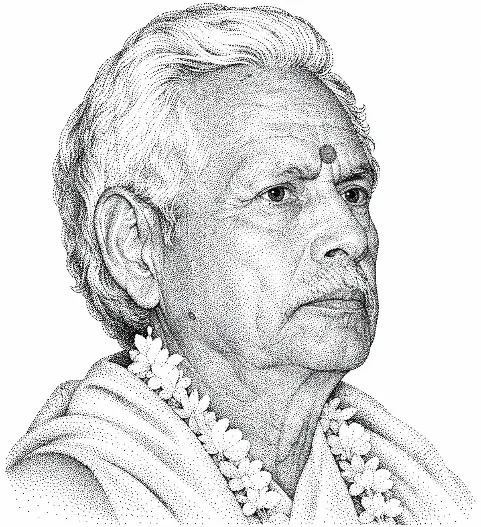
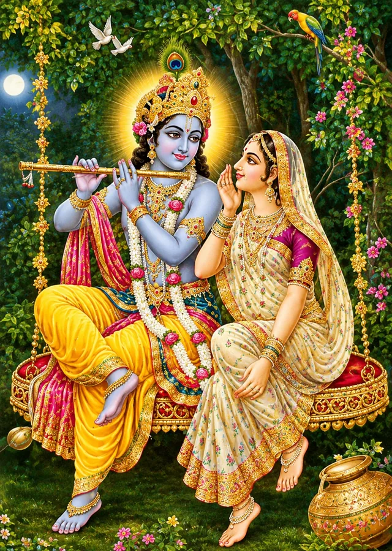
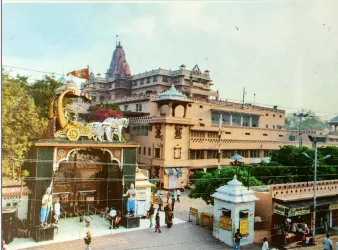
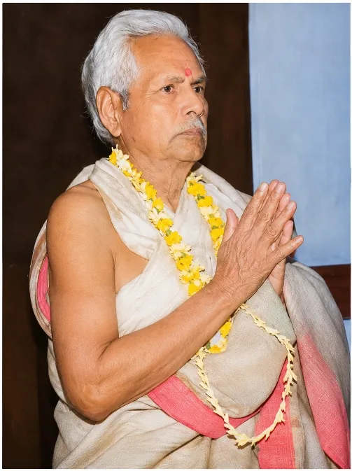

कल्कि अवतार
अथवा
कलियुग का अन्त

सुदर्शनसिंह ‘चक्र’
धर्म सम्राट अनन्त श्री विभूषित
पूज्य स्वामी श्री करपात्री जी महराज का
आशीर्वाद
श्री चक्रजी की संख्य-भक्ति निष्ठा तथा ब्रह्मात्म प्रतिपत्ति निष्ठा का प्रभाव उनके समस्त लेखों एवं पुस्तकों पर है। विषय प्रतिपादन की शैली इतनी अच्छी है कि पाठकों का मन पढ़ते समय भ्रमित नहीं होता। उनकी वासुदेव, द्वारकाधीश, शत्रुघ्नकुमार, शिवचरित, श्रीराम चरित और नन्द-नन्दन आदि सभी पुस्तकें परमोपयोगी शिक्षाप्रद और ज्ञानभक्तिप्रद हैं। उन सभी पुस्तकों को पढ़ने से कठोर हृदय में भी भक्तिद्रवता आये बिना नहीं रहेगी।
कल्कि अवतार अथवा कलियुग का अन्त पुस्तक अत्यन्त रोचक एवं महत्वपूर्ण है। कलियुग की परिस्थितियों का विश्लेषण पूर्ण तथा विवेक, वैराग्य एवं भक्तिरसका वर्धक है। चक्रजीने अपनी कल्पना शक्ति के द्वारा कलियुग की जिन परिस्थितियों का चित्रण किया है। यह मानव के लिए एक बहुत बड़ी चुनौती है।
पुस्तक समाज के लिए परमोपयोगी सिद्ध होगी ऐसी मुझे आशा है। मैं लेखक के उज्ज्वल भविष्य की कामना करता हूँ।
विघ्न-हरण पदकंज, वन्दन बारम्बार कर॥
चाहौं बुद्धि अमन्द, गणनायक वरदानिवर॥
वीणापाणि वरदे! अन्तर उज्ज्वल कर दे।
आवे कलित कृष्ण की क्रीड़ा,
भले कल्कि,
इस में क्या व्रीड़ा॥
भव्य भावना भर दे!
अपनी बात
अचानक प्रिय श्रीविष्णुहरि डालमिया ने सुझाव दिया—‘सर्वसमर्थ भगवान् ने कलियुग बनाया ही क्यों? और अभी ही समाज की, जन-मानस की यह अवस्था है, जबकि कलियुग के केवल लगभग पांच सहस्त्र वर्ष बीते है। आप सब कहते हैं कि कलियुग की आयु कई लाख (चार लाख बत्तीस हजार) वर्ष है। अन्तिम वर्षों में तो बहुत अधिक—पता नहीं कितनी दुरावस्था होगी। उसके पश्चात् सहसा सतयुग कैसे आ जायगा, इस सबको समझा जा सके ऐसी कोई पुस्तक लिखिये।’
‘यह मेरा विषय नहीं है।’ मैंने अस्वीकार किया, किन्तु वे आग्रह करते रहे। अन्ततः मैंने ‘विचार करूंगा’ कहकर उस समय पिण्ड छुड़ाया।
श्रीविष्णुहरि के आग्रह का कारण था। मैंने उसी समय ‘अमृतपुत्र’ पूरा किया था। उसकी पाण्डुलिपि भाई श्रीजयदयाल डालमिया ने पढ़ ली थी और उनके कहने से उनके ज्येष्ठ पुत्र विष्णुहरि को पढ़ने को दिया था। ‘अमृतपुत्र’ में अनेक लोकों का वर्णन है और सतयुग, त्रेता, द्वापर के समाज का भी, किन्तु कलियुग का वर्णन बहुत कम है। कठिनाई से ईस्ट इण्डिया कम्पनी के काल तक का। अतः कलियुग के अन्तिम समय के सम्बन्ध में उनकी जिज्ञासा स्वभाविक थी।
मैंने ‘विचार करूंगा’ कहा था, किन्तु मन में शीघ्र ही इस पुस्तक की रूपरेखा आकार लेने लग गयी। अतः ‘पलक झपकते’ पूरा करके इसमें लग गया।
पहला उपन्यास मैंने लिखा था, ‘शत्रुघ्न कुमार की आत्मकथा’, किन्तु उसे और ‘आञ्जनेय की आत्मकथा’ को भी पाठकों ने उपन्यास स्वीकार ही नहीं किया। केवल शैली के कारण कोई उपन्यास नहीं हो जाता। वे दोनों ही चरित हैं, इसे अस्वीकार ही नहीं किया जा सकता। पुराणों के विद्वान् सम्भव को भी प्रमाण मानते हैं। घटना हुई हो या न हुई हो, देश-काल-स्थिति को देखते वैसा होना सम्भव हो तो उसे प्रमाणिक मान लेते हैं। इस सम्भव प्रमाण ने मेरे दो उपन्यास समेट लिये। ‘प्रभु आवत’ और ‘वे मिलेंगे’ इन दोनों की घटनाएँ काल्पनिक तो हैं; किन्तु उन परिस्थितियों में उन पात्रों के मन में वैसे ही भाव उठने सम्भव हैं। अतएव पाठक इन दोनों पुस्तकों को पढ़ते भी उनको तथ्यात्मक ही मानता है। ‘राक्षसराज’ तो चरित है ही।
उपन्यास है—‘अमृतपुत्र’ और ‘पलक झपकते’ भी। इनमें ‘अमृतपुत्र’ देश का वर्णन करने के लिये है और ‘पलक झपकते’ काल का वर्णन करता है। मुझसे जैसे किसी ने बलपूर्वक ‘अमृतपुत्र’ लिखवाया हो। उसे लिखते समय ही काल को भी स्पष्ट करने की आवश्यकता प्रतीत हो गयी थी। दोनों में कथानक तो कल्पित ही हैं। लेकिन दोनों पुराणों में वर्णित तथ्य को प्रकट करने के लिये हैं। अधिक श्रद्धालु उन्हें भी सम्भव प्रमाण के भीतर समेट ले सकते हैं।
पूरे अर्थ में कल्पित उपन्यास यह है। इसलिये भी पूर्णतः कल्पित है; क्योंकि इसकी घटनाएँ आज से लगभग चार लाख सत्ताइस हजार वर्ष आगे के सम्बन्ध की हैं। पुराणों के अनुसार ये सम्भव भी होंगी तो भी इनके होने में अभी यह लम्बा काल पड़ा है।
पुराणों के अनुसार, कलियुग के अन्त में सम्भलग्राम में कल्कि अवतार होगा। भगवान् परशुराम से अस्त्र-शिक्षा प्राप्त करके ‘देवदत्त’ अप्रतिम अश्वपर आरोहण करके कल्कि करोड़ों दस्युओं का केवल तलवार से संहार करेंगे। उसके अनन्तर सतयुग प्रारम्भ होगा।
इस समय दो ‘सम्भलपुर’ हैं। एक उत्तर प्रदेश के मुरादाबाद जिले में और दूसरा उड़ीसा में। तीसरा भी कोई हो तो मुझे पता नहीं है। मुझे तो कल्पना ही करनी थी, अतः मैंने उत्कल के सम्भलपुर को कल्कि का आविर्भाव-स्थल न मानकर उत्तर प्रदेश के मुरादाबाद जिले के सम्भलपुर को माना; क्योंकि पहले भी प्रमुख अवतारों की प्रादुर्भाव-स्थली उत्तर प्रदेश ही रहा है।
श्रीमद्भागवत में आया है (९।१२।१५–१६) कि कलियुग के अन्त में नष्ट हुए सूर्यवंश की फिर से प्रतिष्ठा इक्ष्वाकुवंश में उत्पन्न अग्निवर्ण के पौत्र, शीघ्र के पुत्र महाराज मरु करेंगे और चन्द्रवंश की प्रतिष्ठा ऋष्य के पौत्र, दिलीप के पुत्र महाराज प्रतीप करेंगे (९।२२।११ से १८)। ये प्रतीपजी भीष्म पितामह के पिता शान्तनुजी के ज्येष्ठ भ्राता हैं। अभी ये दोनों हिमालय के मानव के लिये अदृश्य, अप्रवेश्य दिव्यस्थल कलापग्राम में तपोनिरत हैं।
अभी इस वैवस्वत मन्वन्तर की यह अट्ठाइसवीं चर्तुयुगी चल रही है। इस मन्वन्तर के सप्तर्षि हैं—कश्यप, अत्रि, वशिष्ठ, विश्वामित्र, गौतम, जमदग्नि और भरद्वाज (भागवत ८।१३।५)। अगले मन्वन्तर के सप्तर्षियों के नाम भी वहीं (८।१३।१५–१६ में) दिये गये हैं। वे हैं—गालव, दीप्तिमान, परशुराम, अश्वत्थामा, कृपाचार्य, ऋष्यश्रृंग और श्री कृष्णद्वैपायन व्यास।
अगले मन्वन्तर को आने में अभी तैंतालीस चतुर्युगी का अन्तर है। अतः इस कलियुग के अन्त में कोई प्रलय नहीं होनी है। प्रलय मन्वन्तर के अन्त में होती है। कलियुग के पश्चात् सतयुग जैसे इस मन्वन्तर में पीछे अट्ठाइस बार आ चुका है, आगे भी आवेगा।
आगामी मन्वन्तर के सप्तर्षियों में से परशुराम, अश्वत्थामा और कृपाचार्य प्रख्यात योद्धा रहे हैं। अतः भगवान् कल्कि को इनका सहयोग इनके अनुरूप ही मिलेगा। गालव, दीप्तिमान् और ऋष्यश्रृंग शान्त तपस्वी रहे हैं। अतः श्रीकृष्णद्वैपायन के साथ ये समाज की सुव्यवस्था में सहयोग करेंगे, यह समझा जा सकता है।
इस प्रकार कलियुग के पश्चात् सतयुग की स्थापना में दो प्रकार के व्यक्तित्व पुराणों से प्राप्त होते हैं—1. संहारक, 2. व्यवस्थापक। इनमें भगवान् कल्कि का कार्य ‘महासंहार’ कहा गया है। यह भी कहा गया है कि परशुरामजी उनके अस्त्र-शिक्षक आचार्य होंगे। अतः अश्वत्थामा और कृपाचार्य को भी उनके महासंहार के सहयोगियों में माना जा सकता है।
व्यवस्था और वंश-स्थापन के दो महानायक पुराण ने सूचित किये हैं—महाराज मरु और महाराज प्रतीप। इनको भी आचार्य की, निर्देशक की आवश्यकता होगी। गालव, दीप्तिमान् और ऋष्यश्रृंग शान्त तपस्वी हैं, अतः ये श्रीकृष्णद्वैपायन व्यास के समान शास्त्रकर्ता के नेतृत्व में इन दोनों महानायकों को सहयोग दे सकते हैं। साथ ही इन दोनों को संरक्षण भी चाहिये; क्योंकि परशुराम और अश्वत्थामा-जैसे अत्युग्र संहारकों का नेतृत्व जब उनसे भी उग्र कल्कि करने लगें तो उनके आवेश पर अंकुश की भी आवश्यकता होगी।
इस पृष्ठभूमि के साथ एक तथ्य और विचारणीय है। इधर वर्षों से भारत में भी और बाहर भी ऐसे अनेक प्रख्यात व्यक्ति हुए हैं, जो महाविनाश की भविष्यवाणियाँ करते रहे हैं। इनमें सिद्ध पुरुष भी हुए हैं और ज्योतिषी भी ऐसे सम्प्रदाय-प्रवर्तक भी, जो यह घोषित करते रहे हैं कि केवल उनके अनुगामी उस महासंहार में बचेंगे। कुछ भविष्यवाणियाँ तो इतने आसन्न भविष्य की थीं कि उनका समय कभी का बीत चुका। अधिकांश सन् ८२ के आस-पास के सम्बन्ध में है।
मनुष्य का अन्तःकरण संस्कार-शून्य नहीं होता। अतः वह आगे के सम्बन्ध में कुछ सोचता या कहता है तो उसके भविष्य-दर्शन पर उसके अपने संस्कारों का प्रभाव पड़ा होता है। सूर्य-किरणों का प्रकाश तो आता है, किन्तु सबके नेत्रों पर रंगीन चश्में हों तो प्रकाश चश्में के रंग का लगेगा। शुद्धान्तः करण में भविष्य-दर्शन तो होता है, किन्तु अन्तः-करण के संस्कार का रंग उसपर लगे बिना रहता नहीं। अतः भविष्य की घटना के काल एवं स्वरूप का वर्णन सदा विकृत बन जाता है।
जब यह लगने लगता है कि अधर्म, अन्याय, अत्याचार अब साधारण शक्ति से संयमित नहीं हो सकता, तब असाधारण शक्ति सक्रिय हो, यह उत्कण्ठा होने लगती है।
मेरे अपने ही मन में इधर कई महीनों से एक अस्वाभाविक दारुण कल्पना बार-बार उठने लगी थी। जैसे चामुण्डा, भद्रकाली, छिन्नमस्ता, भैरव, वीरभद्र जैसी अत्युग्र शक्तियों की सहायता लेकर कोई सिद्धसंघ सक्रिय हो उठा है। वह संकेत करता है और अत्याचार, अधर्म में लगे सहस्त्र-सहस्त्र लोग सहसा मृत्यु-मुख में चले जाते हैं।
मेरा अपना मन ऐसी दारुण कल्पना-इतनी भीषण हिंसा का समर्थन करे, यह बहुत अप्रिय लगता है मुझे। अब लगता है कि कन्हाई ने ही यह नटखटपन किया होगा। अन्ततः अकेले कल्कि केवल तलवार से कितनों को काट सकेंगे? उनका अश्व कैसा भी हो, पृथ्वी छोटी तो नहीं है और विज्ञान आगे लगभग सवा चार लाख वर्षों में कहाँ पहुँचेगा-यह भी कोई कैसे कह सकता है। कन्हाई को यह पुस्तक लिखवानी होगी, अतः उसने ऐसी कल्पना जगानी आरम्भ की होगी।
कल्पना ही है-कन्हाई ने जगायी तो वही सँभालेगा, भरोसा है। कल्कि भी तो इस नटखट को ही बनना है। अपनी ही आगामी क्रिया की कोई कल्पना-कोई छाया इसने दी होगी। इससे आपका यदि विनोद भी होता हो तो मेरा श्रम सार्थक है।
कार्तिक पूर्णिमा। २०३६ वि०
सुदर्शन सिंह
उपक्रम
अबसे सवा चार लाख वर्ष पश्चात् पृथ्वी की और देश की क्या दशा रहेगी, यह सोचते समय इस बात पर बहुत ध्यान दिया जाना चाहिये कि बहिर्मुख प्रवृत्ति विनाश को स्वयं बुला लिया करती है।
जिस विज्ञान को इस बीसवीं (विक्रम की इक्कीसवीं शती का बहुत बड़ा वरदान, मानव की महान् उपलब्धि माना जाता है, उसने केवल तीन-चार दशकों में संसारको सर्वनाश के कगार पर ला खड़ा किया है। अब तो बहुत विकसित देश भी सचिन्त हो गये हैं। उनकी आशा धूलि में मिल गयी हैं कि बहुत बड़े विनाशक अस्त्र केवल गिने हुए देशों के समीप रहेंगे और वे शान्ति सुरक्षा के साधन बने रहेंगे। अब कई अल्पविकसित देश भी उन्हें बना रहे हैं। स्वार्थ का संघर्ष ऐसा है कि उन्हें रोक पाना सम्भव नहीं। जब बहुतों के समीप घोर विनाशक अस्त्र होंगे तो किसका संयम कब समाप्त हो जायगा, यह कुछ निश्चित नहीं रहता।
यद्यपि इसी समय पृथ्वी के कुछ राष्ट्रों के समीप इतने भयानक अस्त्र हैं कि उससे कई बार संसार को भस्म की ढेरी बनाया जा सकता है; किन्तु सृष्टिका संचालक बहुत समर्थ है। उसे बीज सुरक्षित रखना अच्छी प्रकार आता है। उसकी शक्ति, सर्वज्ञता, संचालन पर आस्था रखकर ही कहा जा सकता है कि विज्ञान मानवता के बीज को कभी समाप्त करने में समर्थ नहीं होगा।
आप सर्वेश्वर की शक्ति पर आस्था न करें तो वर्तमान में विज्ञान ने जो प्रगति कर ली है, वही पर्याप्त है पृथ्वी पर प्राणियों की सत्ता समाप्त करने के लिए। कोई महायुद्ध न हो तो भी वैज्ञानिकों को आशा नहीं है कि पृथ्वी और पाँच सौ वर्ष प्राणियों के निवास योग्य रहेगी। महायुद्ध नहीं ही होगा या परमाणु अस्त्र प्रयुक्त नहीं होंगे, यह आश्वासन किसी के पास नहीं है। सच तो यह है कि इन ज्ञात अस्त्रों से अनेक गुना भयावह अस्त्र बन चुके हैं। महामारक विषाणु या कीटाणु, गैसें, किरणें तथा और कितने ही प्रलयकारी उपकरण।
शुतुरमुर्ग के समान इधर से नेत्र बंद करके एकबार समझ लीजिये कि महासमर नहीं होगा या होगा भी तो सीमित रहेगा। लेकिन विपत्ति इससे समाप्त नहीं होती। यह न हो तब भी पृथ्वी पर प्राणियों की सत्ता शायद ही पाँच सौ वर्ष बची रहे, यह वैज्ञानिक समझते हैं।
सबसे बड़ी समस्या किसे कहा जाय, यह भी समझ पाना कठिन है। सुना है—‘लंका में सब चौदह हाथ के’। ऐसा ही इस समय है। वायुमण्डल में प्रदूषण बढ़ रहा है। प्राणदायी वायु के उत्पादन से व्यय अधिक है। वैज्ञानिक विकास इसकी गति बढ़ायेगा, घटा नहीं सकता; क्योंकि प्रत्येक भट्ठी जलने को प्राणवायु (ऑक्सीजन) आवश्यक है और भट्ठियाँ बढ़े बिना विज्ञान की उन्नति सम्भव है?
जल-प्रदूषण से संसार अभी संतप्त होने लगा है। समुद्रों में नदियाँ तो प्रारम्भ से नमक की मात्रा बढ़ाती ही थीं, अब संसार में कीटनाशक छिड़के जाने वाले विष, कल-कारखानों का और जलयानों का उत्सर्जित तेल बढ़ता जा रहा है। इनमें कोई सड़कर समाप्त नहीं होता। ये वर्षा की मात्रा उत्तरोत्तर घटाते जा रहे हैं। साथ ही रसायनिक खादों का उत्पादन जल के यौगिकों को विघटित करके अर्थात् जल की सत्ता ही रूपान्तरित करके होता है। फलतः जल की मात्रा क्रमशः घट रही है।
भूमि-प्रदूषण और भू-क्षरण भी तीव्र गति से बढ़ रहा है। सरिताएँ सैकड़ों-सहस्त्रों मन मिट्टी प्रतिवर्ष समुद्र में डालती है। आप क्या समझते हैं कि संसार की सब सरिताओं पर पक्के तटवन्ध बनाकर इसे रोक पाना सम्भव है?
आज प्लास्टिक का युग है। इसका उत्पादन बढ़ रहा है। यह ऐसा रसायनिक उत्पादन है, जो न सड़ता और न एक बार प्रयोग के पश्चात् गलाकर नवीन बनता। इसके कूड़े को पृथ्वी में गाड़ते या समुद्र में डुबाते आप रहेंगे तो कब तक भूमि उत्पादन के योग्य बनी रहेगी?
समुद्र में और पृथ्वी में और कितना अनर्गल भयानक कूड़ा निरन्तर गाड़ा जा रहा है, जनता को इसका पता नहीं है।
वृक्ष और वनस्पति चाहे जितने आवश्यक और उपयोगी हों, उनके बचाने का चाहे जितना लोग हल्ला करें, विकसित देश भी उनका तीव्र विनाश बचा नहीं पा रहे हैं। कागज के उत्पादन के बिना आज की सभ्यता चलेगी? कागज के कारखाने तो घास, वृक्ष मांगेंगे। ये कारखाने बढ़ेंगे या घटेंगे?
वृक्ष ही नहीं पृथ्वी पर धातुएँ घट रही हैं। उपयोग में आने पर धातुएँ घिसती हैं या नहीं? अभी इस ओर किसी का ध्यान नहीं गया तो क्या इसका अर्थ है कि यह समस्या उत्पन्न ही नहीं होगी?
ऊर्जा का संकट तो सिरपर आ गया है। मिट्टी के तेल के भाण्डार अगली शती के अन्त तक नहीं चलने वाले हैं। संसार में अणु-शक्ति को उत्पन्न करने वाली धातुओं का भी भाण्डार अत्यल्प है।
ये समस्याएँ इतनी ही नहीं हैं, बहुत अधिक हैं। आप जिसे प्रगति कह कर बहुत गर्व करते हो, वह गति तो निःसन्देह है और तीव्र गति है किन्तु है विनाश की ओर। विश्व विज्ञान के द्वारा अपने विनाश की ओर दौड़ा जा रहा है और अपनी इस गति को शिथिल करने के स्थान पर बराबर तीव्र करने का जी-तोड़ श्रम करने में लगा है।
आस्थावान् बहिर्मुख विज्ञान जैसे सृष्टि-संचालक को स्वीकार नहीं करता, वैसे ही उसे प्राणि-संसार को भी बचा पाने का कोई मार्ग नहीं सूझता है। वह केवल एक अत्यन्त क्षीण आशा करता है कि मनुष्य सम्भवतः किसी अन्य ग्रह पर जा बसेगा या अन्तरिक्ष में अपने कृत्रिम उपनिवेश बना लेगा। यह आशा सफल भी हो जाय तो कितने लोगों को बचा पायेगी?
आज की प्रगति ने आपको कहाँ पहुँचा दिया है और किधर ले जा रही है, इसका यह बहुत अल्प अंगुल्या निर्देश है। लेकिन आस्थावान् हिंदू-शास्त्र कुछ और कहते हैं। इससे सर्वथा उलटी बात कहते हैं। बहुत बलपूर्वक कहते हैं। उनका आधार बाह्य सर्वेक्षण नहीं है। उनका आधार है—सर्वेश्वर की सर्वसमर्थता पर अविचल आस्था।
इस आस्था पर आधारित सर्वज्ञ महर्षियों की वाणी के द्वारा व्यक्त सत्य वैज्ञानिक अनुमानों से भिन्न है। वे कहते हैं—‘पृथ्वी पर प्राणि-सृष्टि की समाप्ति बहुत दूर है। प्रलय कल्प के अन्त में होती है। अभी तो इस कल्प का सातवाँ मन्वन्तर चल रहा है। अभी सात मन्वन्तर और शेष हैं। एक कल्प में एक सहस्त्र चतुर्युगी होती हैं। इस कलियुग की समाप्ति में ही अभी ४२७००० वर्ष बाकी हैं। उसके बाद भी पाँच-सौ चतुर्युगी शेष रहेंगी और तब कहीं प्रलय होगी।[१]’
[१] चतुर्युगी, कल्प आदि का परिमाण ‘पलक झपकते’ में विस्तार से आया है।
यह अवश्य है कि इस कलियुग के अन्त अर्थात् मध्य के इन लगभग सवा चार लाख वर्षों में अनेक बार महाविनाश होगा और अनेक बार फिर मनुष्य आदिम युग से श्रीगणेश करेगा। यह उलट-पुलट चलती रहेगी, किन्तु मनुष्यता और प्राणी बचे रहेंगे। पृथ्वी में ऐसा अनेक बार पहले हुआ है।
इस उपन्यास के माध्यम से वर्तमान कलियुग के अन्तिम वर्षों की अवस्था, भगवान् कल्कि के अविर्भाव तथा सतयुग के शुभारम्भ का चिन्तन करना है। इसमें आप मेरा साथ दीजिये।
कलियुग क्यों?
आज योगसिद्ध महाराज मरु का मन कलापग्राम में नहीं लग रहा था। उन्हें अपने भीतर ही जैसे कोलाहल सुनायी पड़ रहा था। ऐसा लगता था कि असंख्य कण्ठ पुकार रहे हैं—‘मरु, उठो! अब तुम्हारे सक्रिय होने का समय आ गया है।’
कलापग्राम हिमालय का हृदय और धरा की समस्त सात्त्विकता का पुञ्जीभाव। दिव्य युगान्तजीवी अमर सिद्धों की साधनाभूमि। सामान्य मानवों के लिये कलापग्राम सदा अदृश्य रहा है। अदृश्य तो वहाँ के महासिद्ध परस्पर भी रहते हैं। प्रयोजन के बिना वे अपने को प्रत्यक्ष करते ही नहीं। प्रत्यक्ष करते भी हैं तो केवल व्यक्ति-विशेष के लिये ही।
कलापग्राम की भाषा ही संकल्प की भाषा है। कोई प्रत्यक्ष किसी से कुछ कहने अपवादरूप ही प्रकट होता है। अतः मरु को यह समझना नहीं था कि उनके अन्तः करण में उठने वाले कोलाहाल का कारण क्या है। कलापग्राम के सिद्धगण अब उन्हें कार्य क्षेत्र में जाने को कह रहे थे।
महाराज मरु को यह कलापग्राम से अपना निर्वासन प्रतीत हो रहा था। वे योगसिद्ध थे। कलियुग के अन्त में धरा की जो अवस्था थी, वह उनसे अज्ञात नहीं थी। कोई स्वच्छता प्रिय कीचड़ में उतरने में प्रसन्न होगा? किन्तु कोई उपाय नहीं था। कलापग्राम ऐसा क्षेत्र नहीं कि वहाँ के सिद्ध-समूह की इच्छा के विपरीत कोई वहाँ टिका रह सके। मरु जानते थे कि वे ऐसा कोई आग्रह करेंगे तो समूचा क्षेत्र उनके लिये भी अदृश्य हो जायगा। तब एकाकी उस हिम प्रदेश में भटकते रहने से लाभ?
अनिच्छापूर्वक, अनमने भाव से मरु उठे। कलापग्राम से बाहर अलकनन्दा एवं उदीची सरस्वती[२] संगम पर स्नान करके वे भगवान् श्रीकृष्णद्वैपायन व्यासजी की गुफा पर आ गये। भगवान् व्यास उनके लिये अदृश्य नहीं थे। संयोग अच्छा था कि वे प्रवास में भी गये नहीं थे और न समाधि में स्थित थे।
[२] ‘पंचनद्यः सरस्वती—पाँच छोटी नदियों का नाम’ सरस्वती’ है।’ उनमें से एक बद्रीनाथ के आगे माना गाँव के पास अलकनन्दा में मिलती है, एक कुरुक्षेत्र में है, एक ब्रज में, एक सिद्धपुर में और प्रयाग में एक गुप्त है।
‘सर्वेश्वर ने कलियुग को कालक्रम में स्थान ही क्यों दिया?’ प्रणाम के पश्चात बैठते ही मरु ने प्रश्न किया। वे त्रेतान्त में श्रीराम के वंश में उत्पन्न सत्पुरूष-कलियुग के प्राणियों को दूर से भी देखना उन्हें प्रिय नहीं था। उन्हें कोई आपत्ति नहीं होती, यदि उन्हें केवल कुछ लोगों को प्रेरणा देनी होती। यह कार्य तो वे करते ही रहे हैं।
“करूणावरुणालय सर्वेश की कृपा का सर्वश्रेष्ठ विधान कलियुग है।[३] व्यासजी स्वस्थ समासीन थे। उन्होंने स्नेहसिक्त स्वर में कहा—“मरु! अकल्पनीय वात्सल्य उमड़ता होगा उन अत्य संचालक में, इसका अनुमान असम्भव होता यदि कलियुग के विधान न करते।””
[३] कलिजुग सम जुग आन नहिं जौं नर कर बिस्वास। गाइ राम गुन गन बिमल भव तर बिनहिं प्रयास॥ श्रीरामचरितमानस, उत्तर० १०३ दो०
‘मैं तो समझता था कि कलियुग एक अनिवार्य आवश्यकता है।’ ‘मरु ने कहा—“लेकिन सर्वसमर्थ सर्वेश के लिए कोई अनिवार्य आवश्यकता क्यों होनी चाहिये, यह नहीं सोच पाता था। अब आपने एक अद्भुत ही कारण सुना दिया। कलियुग का सृजन और करुणा के कारण?”’
“तुमको कलियुग अनिवार्य आवश्यकता क्यों लगता है?” व्यासजी ने मरु से ही पूछा।
‘सृष्टि का संतुलन बनाये रखने के लिये।’ मरु ने अपनी बात स्पष्ट की—‘सतयुग, त्रेता, द्वापर में ऐसे अधम मनुष्य नहीं होते कि उनसे नरक भरे रहें। मिट्टी, पत्थर आदि जड़ धातुएँ, लता-तृण, वृक्ष-क्षुपादि वनस्पति, पशु-पक्षी-कीट बनने योग्य मनुष्य भी कलियुग में ही होते हैं। सतयुग में वनधातु, वनस्पति, सर-निर्झर, गिरि सर्वाधिक होते हैं। उसके पश्चात् क्रमशः वे क्षीण होते हैं। बनना सब मनुष्यों को ही अपने कर्मों से है; क्योंकि यही कर्मयोनि है। अतः कलियुग के पश्चात् सतयुग का शुभारम्भ होता है।’
‘तुमने जैमिनी के कर्मवाद का अच्छा अध्ययन किया है।’ भगवान् व्यास हँसे—‘कर्म और उससे बना प्रारब्ध तो फलदान में स्वतः समर्थ है। इस मत के अनुसार कलियुग सड़ाँध उत्पन्न करके खाद बनाता है, जिससे सतयुग का सुमन खिल सके। त्रेता, द्वापर भी उस पर पनप जाते हैं। वह खाद द्वापरान्त तक समाप्त हो जाती है तो पुनः कलियुग उसे प्रस्तुत करने आता है। क्यों?’
‘मुझे सत्य यही लगता है।’ मरु ने स्वीकार किया। ‘कुछ अच्छे शब्दों में कहना हो तो कहना होगा कि सतयुग का सुन्दर स्वाद उत्पन्न करने के लिये सर्वेश कलियुग को काँजी की भाँति सड़ाता है। लेकिन सर्वसमर्थक का यह विधान बहुत क्रूरतापूर्ण है। आप इसे उलटे अतिशय करुणा कहते हैं?’
‘तुमने इस तथ्य पर ध्यान दिया होगा कि काल की दृष्टि से कलियुग सबसे अल्पायु है। सतयुग का केवल चतुर्थांश समय प्राप्त है इसे। इससे द्वापर दो-गुना और त्रेता तीन-गुना बड़ा होता है।’ भगवान् व्यास ने कहा—‘यह तथ्य भी तुम जानते हो कि कलियुग में पशु-पक्षी, कीट-पतंग, वृक्ष-लता ही नहीं, धातुएँ, पर्वत, सरिताएँ आदि भी अत्यल्प रह जाती हैं। मनुष्य की जनसंख्या बहुत बढ़ जाती है।’
‘इसीलिये तो मैंने अपना मत बनाया।’ मरु बोले—‘इसमें कृपा तो कहीं स्पष्ट नहीं होती। सड़ाने का समय अवश्य अल्प है और अत्यधिक मनुष्य-संख्या न हो तो सतयुग में वे पर्वत, पाषाण, तृण-वृक्ष, पशु-पक्षी कैसे बनें।’
‘कर्म के साधारण-विधान में कोई ईश्वर नहीं माना जाता।’ व्यासजी ने कहा—‘जड़ कर्म ही यदि सदा सक्रिय रहता हो तो उसमें कृपा की कल्पना असंगत होगी। तब तुम्हारा तर्क अनुपयुक्त नहीं कहा जा सकेगा।’
‘महर्षि जैमिनी आपके प्रिय शिष्य हैं।’ मरु को जैमिनी का पूर्व-मीमांसादर्शन प्रिय है। उन्हें श्रौतकर्मों में श्रद्धा है; अतः उन्होंने जैमिनी का पक्ष लिया—‘उन्होंने तो वैदिक कर्मकाण्ड को दृढ़भूमि दी और आपके उत्तर-मीमांसा के लिये पूर्व पीठिका प्रस्तुत की।’
‘जैमिनी का प्रयोजन आस्था उत्पन्न करना है।’ भगवान् व्यास ने स्वीकार किया—‘परलोकपर, प्रारब्धपर श्रद्धा दृढ़ हो जाय तो ईश्वर पर आस्था अपने-आप उत्पन्न हो जायेगी; क्योंकि मनुष्य पद-पद पर उन करुणा-वरुणालय की अकारण कृपा, अकस्मात् सहायता अनुभव करता ही रहता है।’
‘कलियुग का विधान करने में उनकी कृपा?’ मरु पुनः अपने प्रश्न पर आ गये।
‘कर्म जड़ है, अतः निष्ठुर है।’ भगवान् व्यासजी ने समझाया—‘जैसा करो, वैसा भोगो।—यह कर्म का मूल सिद्धान्त; किन्तु जीवन का यह क्या जाग्रत अनुभव नहीं है कि सर्वेश को स्मरण करके; उनको पुकार कर प्राणी विषम-विपत्तियों से बच जाता है? उन दयाधाम की सबसे बड़ी दया कलियुग।’
‘सम्भवतः आप कहना चाहते हैं कि कलियुग में मनुष्य मानसिक पाप का दण्ड नहीं पाता और मानसिक पुण्य का फल पा लेता है, यह प्रभु का पुरस्कार है।’ मरु ने कहा—‘कलि में अल्प साधन से, केवल शारीरिक साधन से-अभ्यासजन्य क्रिया, जपादि से भी मनुष्य का जन्म-मरण से छुटकारा हो जाता है, यह महान् अनुग्रह इस काल में।’
‘यह तो है ही।’ भगवान् व्यास ने समर्थन किया।
‘लेकिन कलियुग के मनुष्य से इतनी भी आशा करना अधिक ही है।’ मरु ने तनिक आवेश के साथ कहा—‘कलियुग में मनुष्य का मानस इतना कल्मषाक्रान्त हो जाता है कि उसमें पाप-वासना की दुर्गन्धि सहज उठती रहती है। उसे दबा पाने में वह असमर्थप्राय होता है और पुण्य कामना तो कदाचित् सत्संगादि से उठती है। उसका मन तो जैसे उसका रह ही नहीं जाता। कामनाओं के अत्यन्त प्रबल आवेग में तन को भी वह कुछ लगा पाता है, यही क्या कम है?’
‘तुम जानते हो कि कितना भी उत्तम उद्यान हो, उसका निर्माता उदार हुआ तो कभी कुछ समय के लिये उसमें प्रवेश उन्मुक्त कर देता है।’ भगवान् व्यास ने समझाया—‘मानवयोनि सर्वेश का सर्वश्रेष्ठ सृजन है। कलियुग में वे इसे अधिकांश जीवों के लिए-उन जीवों के लिए भी उन्मुक्त कर देते हैं, जो पशु-पक्षी आदि होने के अधिकारी थे। उनको अवसर दे देते हैं कि कर्मयोनि में आकर वे अपने उद्धार का प्रयास कर लें। उनसे तप-ध्यानादि की आशा तो की नहीं जा सकती; अतः कलियुग में वे कायिक साधन ही कर लें, यह सुयोग करुणावरुणालय उन्हें देते हैं।’
‘अर्थात् वे परमोदार अपने श्रेष्ठतम उद्यान को प्रवेश-उन्मुक्त ही नहीं करते, शिशुओं को उसे उजाड़कर भी प्रसन्नता हो तो यह स्वतन्त्रता भी दे देते हैं।’ मरु का स्वर सहसा भावक्षुब्ध हो उठा—‘इसीलिये मनुष्य-शरीर पाकर भी कलि में द्विपाद् पशु ही प्रायः पाये जाते हैं। सर्वेश के द्वारा प्राप्त सुयोग का सदुपयोग अत्यल्प कर पाते हैं। उलटे उन्मद ही अधिक होते हैं।’
‘जब भी कोई वाटिका सार्वजनिक रूप से अशिक्षित वर्ग के लिए उन्मुक्त की जायगी, उसमें अस्वच्छता फैलेगी। उसमें बहुत कुछ नष्ट-भ्रष्ट होगा। उसके पश्चात् उसकी अच्छी स्वच्छता आवश्यक होगी। उसमें कुछ काल कम ही दर्शकों को प्रवेश देना सम्भव होगा।’ व्यासजी ने उदाहरण में ही समझाया-किन्तु अज्ञानी, अशिक्षित जनों को कभी उसमें आने ही न दिया जाय, यह क्या उदारता मानी जायगी? कर्म के सहज क्रम में उद्धार का अवसर यदि दूर है, तब भी करुणासागर कलि के द्वारा उसे सुलभ कराते हैं।”
‘आपकी कृपा से यह सत्य समझ सका।’ मरु ने चरणों पर मस्तक रखा—‘अब आशीर्वाद दें।’
‘प्रतीप को पहले जाने दो!’ भगवान् व्यास ने रोका मरु को—‘तुम दोनों कुछ काल मेरे पास रहो; किन्तु प्रतीप द्वापरान्त से परिचित हैं, अतः उन्हें कलिकी स्थिति तुमसे कम विचलित करेगी।’
सामान्य समाज
अपने लिए अधिक सुविधा मनुष्य का एकमात्र उद्देश्य हो गया था और वह समझ गया था कि किसी एक वर्ग में असंतोष जाग्रत करके, उस वर्ग का अग्रणी बनकर सरलता से ऐसी सुविधा जुटाई जा सकती है। कलियुग के अन्त तक ईमानदारी, औचित्य, न्याय-जैसी बातें बहुत पीछे छूट चुकी थीं। अवश्य इनका नाम लिया जाता था, इनके नारे लगते थे और इनकी बातें की जाती थीं; किन्तु कहने-सुनने वाले सब समझते थे कि इन बातों का कोई अर्थ है तो इतना ही कि अपना उद्देश्य छुपा रहे और परपक्ष पर आक्षेप किया जा सके।
अधातु-संघ का अधिकारी अनिरुद्ध बहुत उत्तेजना में था वह पूरी शक्ति से प्रचार करने के लिए चिल्ला रहा था—‘यह अन्याय है कि कोई एक पूरा मकान अपने परिवार के लिए सुरक्षित कर ले और दूसरों को एक कमरा भी सुलभ न हो।’
यह मत पूछिये कि अधातु-संघ कितनी बड़ी संस्था थी। उसके कितने सदस्य थे। अभी परसों ही अनिरुद्ध के मस्तिष्क में इस संस्था का जन्म हुआ। वह एक प्लास्टिक के छोटे कारखाने में मजदूर था। लेकिन अब एक लड़की उसकी ओर आकर्षित हो गई थी। इस अवस्था में कारखाने के बाहर मैदान में ही रात व्यतीत कर देना अटपटा लगता था। अब उसे एक कमरा चाहिए। कमरा चाहिए तो असंतोष उत्पन्न करो एक वर्ग में। उसके अग्रणी बनो। चिन्ता छोड़ दो कि तुम्हारे साथ आये लोगों का क्या होगा। उनमें कुछ निकाले जायेगें। कुछ पिटेंगे, कुछ मर भी सकते हैं; किन्तु तुम्हें कमरा मिलने की सम्भावना हो जायेगी। अग्रणी पिटने-मरने की आपत्तियों से भी सुरक्षित रहता है; क्योंकि पीछे रहता है।
यह सब करना हो तो संस्था आवश्यक है और अनिरुद्ध क्या नहीं जानता है कि आज गली-गली में जो संस्थाओं के नामपट्ट हैं, वे कैसे बने हैं। अवश्य उसके लिए एक नारा चाहिए, एक आधार चाहिए। अनिरुद्ध को वह परसों मिल गया। था तो पहले से; किन्तु परसों अनिरुद्ध को आवश्यकता हुई तो वह सूझ गया। परसों ही तो वह लड़की उसे देखकर मुस्कुरायी। कारखाने के भीतर ही उसके मालिक का तीन-चार कमरों का मकान है। उनका परिवार-लेकिन परिवार तो आज किसी के पास होता नहीं। उन्हें क्या अधिकार है कि कुछ युवकों को अपना पुत्र मानें और उन्हें कमरे दिये रहें। कारखाने के बाहर इस मैदान में मजदूर सोते हैं, इसमें कमरे बन जायँ तो? मजदूर कहीं भी जायँ या रहें, इन सबको उत्तेजित किया जा सके तो अनिरुद्ध एक कमरा पाने की सम्भावना देखता है।
परसों ही उसने हाथ से लिखकर एक बोर्ड बनाया—‘अधातु-संघ’। उसके नीचे उसने सुन्दर अक्षरों में अंकित किया—‘अध्यक्ष-अनिरुद्ध’। उसे टाँगने की समस्या भी सुलझ गयी। मैदान के कोने में खड़े थूहर (कैक्टस) में उसे लटका दिया उसने। मैदान में सोने वाले और दूसरे मजदूरों ने भी देखा। कुछ मुस्कुराये; किन्तु किसी ने विरोध नहीं किया।
अनिरुद्ध कल पूरे दिन अपने उस नामपट्ट की प्रतिक्रिया देखता रहा। कारखाने के मालिक की सम्भवतः दृष्टि नहीं गयी। मजदूरों में किसी का विरोध नहीं। जब पूरे दिन और दो रात भी नामपट्ट लटका रह गया, तब क्या उसे वहाँ बने रहने का स्वत्व नहीं हो गया? उसके बने रहने का ही अर्थ है कि ‘अधातु-संघ’ संस्था सुस्थापित हो चुकी और अनिरुद्ध उसका सम्मान्य अध्यक्ष हो गया। अब तो उसे कुछ और संस्था के कर्मचारी, अनुगामी कार्यकर्ता बनाने हैं। इन्हें जुटाने के लिए ही वह आज सवेरे-से चिल्लाने लगा है।
उस छोटे मैदान में रात्रि-शयन करने वाले सबकी एक ही समस्या है-सबको कमरे चाहिए। समान समस्या है तो उनकी परस्पर सहानुभूति स्वाभाविक है। अनिरुद्ध को समर्थक, सहायक, अनुगामी मिलने लगे। यह दूसरी बात है कि उसके साथ आने वालों में सब स्वार्थ प्रेरित थे। उनमें कुछ चौंके थे कि उन्होंने यह संस्था पहले क्यों नहीं बना ली। कुछ का विचार था कि अनिरुद्ध से वे अधिक योग्य हैं; अतः उन्हें अध्यक्ष होना चाहिए। अनिरुद्ध को अपदस्थ करके संस्था पर अधिकार करने ही कुछ साथ हुए थे।
यह तो होता ही रहता है। समाज में जो सर्वत्र हो रहा हो, उससे कोई एक स्थान या संस्था कैसे अछूती रहेगी। कुछ लोग कारखाने के मालिक का कान भरने पहुँच गये थे। उनमें कई अनिद्ध के अन्तरंग भी थे। उसी दिन शाम तक तीन और संस्थाओं के नामपट्ट् उनके अध्यक्षों के नाम को प्रचारित करते उस छोटे मैदान के दूसरे तीन थूहरों में लटक गये।
मुझे आपको निराश करना पड़ेगा, यदि आप ‘अधातु-संघ’ और उसके अध्यक्ष अनिरूद्ध के कार्य-कलाप अथवा भविष्य के सम्बन्ध में उत्सुक हो उठे हैं। मेरा तात्पर्य केवल इतना संकेत करना है कि उस समय किस प्रकार संस्थाएँ स्थापित होती थीं और उनका कितना व्यापक क्षेत्र था। उनकी संख्याएँ कितनी अधिक होंगी और उनके सदस्यों की संख्या कितनी अल्प, यह भी आप इतने से अनुमान कर सकते हैं।
कलियुग के उन अन्तिम वर्षों तक समाज सामान्य हो गया था। उसमें जाति, वर्ण आदि कुछ नहीं रहा था।[४] सब केवल मनुष्य रहे थे। अवश्य ही वे ऐसे मनुष्य थे, जिनसे हीन स्तर के प्राणि पिशाचों में भी होते हैं, या नहीं, पता नहीं।
[४] भए बरन संकर सब लोगा।
‘मनुष्यों में जाति या वर्ण नहीं था’ का अर्थ यह भी है कि काले, गोरे, पीले आदि का भेद भी मिट चुका था। किसी भी जनपद में सब आकृतियों के लोग मिल सकते थे। शरीर के रंग और मुखाकृतियों की बनावटों के शुद्ध नमूने दुर्लभ हो गये थे। अब मनुष्यों में अधिकांश का रंग सांवला था। इस सांवलेपन में ही कुछ श्वेत, कुछ पीले, कुछ काले की ओर झुके वर्ण थे। इसी प्रकार मुखाकृतियों का भी एक मिला-जुलारूप बन चुका था।
मनुष्यों की जनसंख्या बहुत अधिक बढ़ चुकी थी। इतनी अधिक की पृथ्वी पर जनपद समा नहीं पा रहे थे। अब समुद्र में और भूगर्भ में भी नगरों का निर्माण पर्याप्त हो चुका था।
जनसंख्या की इस वृद्धि ने मनुष्य को अनेक कार्यों के लिये विवश बना दिया था। लोग विस्मृत हो चुके थे कि अन्न या फल भी कभी हुआ करते थे। पृथ्वी पर खेत, वन और बगीचे भी कभी रहे हैं, यह केवल पुस्तकों तथा किवदन्तियों से पता लगता था। अवश्य कुछ कण्टक-तृण थे, जो कहीं भी उग जाते थे। उनमें अमाप जीवनशक्ति थी। पृथ्वी पर खुला स्थान बहुत अल्प था और वह उपयोग में आता था। अत: वहाँ खिड़कियों में, कमरों में भी थूहर (कैक्टस) लगाना अनिवार्य बन चुका था।
मनुष्य की इस जनसंख्या ने विवश किया उसे कि वह स्वयं बौना बने। अतः जैसे अभी वैज्ञानिक वृक्षों तथा फसलों को बौना बना रहे हैं, उन्होनें मनुष्य-जाति का आकार भी घटा दिया था। ढ़ाई फुट ऊँचा व्यक्ति ऐसा माना जाता था, जैसे आज कोई आठ फुट ऊँचा हो जायगा तो माना जायगा।[५] मनुष्य के बौने होने से उसके रहने के स्थान की समस्या बहुत सुलझ गयी थी। कई मंजिल मकानों में चार फुट ऊँची मंजिल बहुत पर्याप्त थी।
[५] १८ दिसम्बर १९७९ का एथेंस से आया एक समाचार १९ दिसम्बर के ‘हिन्दुस्तान’ में छपा था। स्टेमेटुला नाम लड़की की आयु ९ वर्ष और शरीर केवल ३५ सेंटीमीटर ऊँचा है।
मनुष्य के बौना बन जाने से अनेक और समस्याएँ सुलझ गयीं।[६] उसे वस्त्र और आहार कम लगने लगा। उसके फेफड़े छोटे हुए तो प्राण-वायु की भी कम आवश्यकता होने लगी। वह थोड़े स्थान में रह लेता है।
[६] अब तक संसार का सबसे छोटा मनुष्य दो इंच का हुआ है।
संसार में अधिकांश पशु-पक्षी पहले ही समाप्त हो गये थे। जब खेत और वन नहीं रहे तो उन पर पलने वाले प्राणी कैसे जीवित रह सकते थे। वैसे बौने मनुष्यों के लिये चूहे भी विपत्ति ही थे। कुत्ते-बिल्ली तो उसने समाप्त कर दिये थे, किंतु चूहों पर उसका वश नहीं चल रहा था। ये इतने ढीठ हो गये थे कि अनेक बार शिशुओं तक को समाप्त कर देते थे।
मनुष्य का समाज सभी दृष्टियों से सामान्य हो गया था। उसमें विषमता बहुत कम बची थी। लेकिन जो बची थी, वह दूर होने वाली नहीं थी। जो लोग बलवान् थे, साहसी थे अथवा किसी एक समूह के अग्रणी थे, उनको अधिक सुविधाएँ उपलब्ध थीं। वे बलपूर्वक या छल से छीनना जानते थे।
समाज में साधुओं का समुदाय बहुत बढ़ गया था। बड़ी जटाएँ, बढ़े नख देखकर साधु को पहचान लेना सरल था। लोगों को मानसिक आश्वासन आवश्यक था, अतः इसकी पूर्ति करने वाले यदि अधिक सुख-सुविधा उठा रहे थे तो इसमें आलोचना करने वाला ही उपेक्षणीय बनता था। बिना श्रम किये जो चतुर थे, चलते-पुर्जे थे, वे साधु वेश में रहने लगे थे। उन्हें उपदेश देना ही तो आना चाहिये, समाज के सब भोग तो उनके स्वत्व स्वतः बन जाते थे।
जलीय वनस्पति एवं जीव, पृथ्वी पर बढ़े चूहे, टिड्डी, दूसरे कीड़े और थूहर (कैक्टस) के कुछ भेद मनुष्य की सामान्य आहार-सामग्री बन गयी थी। जब अन्न, फल, शाक का वर्णन केवल पुस्तकों में उपलब्ध था तो दूध, दही, घृत या तेल की चर्चा! अवश्य चिकनाई कुछ विशिष्ट चर्बियों के माध्यम से मिलती थी।
नरकप्राय धरा
विज्ञान ने विपुल चमत्कार उत्पन्न किये। यद्यपि बार-बार वह अपना विनाश करता रहा, किन्तु भौतिकवादी विवेचक कहते हैं कि यह विकास की प्रगति का अनिवार्य अंग है। उनकी बात इस अर्थ में सत्य है कि प्रत्येक विनाश में भी कुछ-न-कुछ बचा रह गया और विज्ञान के चमत्कार आगे भी बढ़ते गये।
सबसे बड़ा चमत्कार था सम्भवतः पृथ्वी की आकर्षण—शक्ति का अवरोध आविष्कृत कर लेना। अब तो वह इतना सामान्य और छोटा यन्त्र हो गया है कि उसे एकाकी व्यक्ति भी अपनी कमरपेटी में लटकाये घूमता है।
इस यन्त्र ने यानों के लिये धरा पर मार्ग अनावश्यक कर दिया। एक बार किसी यान को थोड़ी ऊँचाई से उछाल दो और उड़ते फिरो। अब तो यान भी साधारण छोटी यात्रा में अनावश्यक हो गये हैं। मनुष्य अपनी कमरपेटी के सहारे उछलते, उड़ते फिरते हैं।
इस आविष्कार ने धरा को सचमुच नरक बना डाला है। लेकिन इसमें विज्ञान का दोष? उसके आविष्कारों का तो मनुष्य ने सदा ही दुरुपयोग किया है।
पृथ्वी पहले ही जनपदों से पूर्ण हो गया थी। अब तो दो नगरों की सीमा समझना कठिन है। केवल समुद्र ही सीमा बनाता है। सरिताएँ कभी की सूख चुकी और पर्वतों को मनुष्य ने समतल कर लिया था। अन्ततः उसे अपने रहने को स्थान तो चाहिये। अब सड़कें समाप्त हुई तो अत्युच्च अट्टालिकाओं का अन्तराल स्वच्छता के लिये अनावश्यक मान लिया गया।
पृथ्वी पर अत्युच्च अट्टालिकाएँ हैं और उनके अन्तराल-आप कहना चाहें तो गलियाँ हैं, जिनमें कूड़ा बराबर बढ़ता जाता है। उस कूड़े को अब तो आवश्यक माना जाने लगा है। उसमें चूहे और अनेक प्रकार के कीड़े पलते हैं, जो अब मनुष्य के आहार के आवश्यक अंग है। अतः उस कूड़े के अम्बार पर अधिकार करने के लिये अट्टालिकाओं के आवासी संघर्ष करते हैं। अब संहार सामान्य बात है। प्रत्येक गली में दस-बीस मनुष्य यानों से टकराकर अथवा अन्य दुर्घटनाओं में मरते हैं। ऐसी मृत्युओं पर कोई ध्यान नहीं देता। उनके शव चूहों को समाप्त करने के लिये छोड़ दिये जाते हैं। केवल कुछ लोग हैं, जिनके शव उनके अनुगामी उठा ले जाते हैं।
शवों को उठाने की झंझट कोई क्यों करे और करे कौन? किसी का कोई परिवार या स्वजन तो रहा नहीं। शव तो तब उठाया जाय, जब उसे लेकर कोई उत्तेजना कुछ लोगों में उत्पन्न की जा सकती हो और उससे अपना कोई स्वार्थ सिद्ध होता हो।
पृथ्वी पर पानी समुद्रों में शेष रहा है और समुद्र सड़ांध, कूड़े आदि से पटे पड़े हैं। वे अब मनुष्य के लिये अनेक उपयोगी उत्पादन के खेत हैं। यह दूसरी बात है कि मनुष्य के लिये अब कीड़े, काई और ऐसी ही वस्तुएँ आवश्यक हो गयी हैं, जो पहले घृणित मानी जाती थीं।
पृथ्वी के आकर्षण के अवरोधक ने जहाँ पशु-पक्षी जलचरों की जाति ही समाप्त कर दी, मनुष्य ने छलांग लगाकर उनका सामूहिक संहार कर डाला, वहाँ उसकी अपनी सुरक्षा भी समाप्त हो गयी। अट्टालिका चाहे जितनी भी ऊँची हो, कोई उसके किसी गवाक्ष को काटकर भीतर प्रवेश कर सकता है; क्योंकि मनुष्य को इस यन्त्र ने पक्षीप्राय बना डाला है।
प्रशंसा करनी पड़ेगी विज्ञान की। विज्ञान न होता तो पृथ्वी कभी की प्राणिहीन हो चुकी होती। लेकिन विज्ञान ने विचित्र-विचित्र मान्यताएँ और स्वभाव विकसित किये। मनुष्य बहुत अधिक अपने उत्सर्गों (मल-मूत्र-कफादी) का उपयोग करने लगा। विज्ञान ने उन्हें आकर्षक रूप, रंग, स्वाद में परिवर्तित करना सिखा दिया। फलतः मनुष्य को अब मौलिक आहार की आवश्यकता अत्यल्प रह गयी है।
आहार ही चूहों-कीड़ों से नहीं मिलता, इनके शरीर का जल भी उपयोग में आ जाता है। आश्चर्य यही है कि ये प्राणी अपने लिये पोषण और पानी कहीं-न-कहीं से पा ही जाते हैं। इनकी संख्या बढ़ती जाती है और इनमें नवीन जातियाँ उत्पन्न होती जाती हैं।
कभी-कभी वर्ष-दो-वर्ष पर अब भी आकाश में कहीं मेघ दिख जाते हैं। मनुष्य उस समय उत्सव मनाने लगते हैं और यदि बूँदे भी पड़ने लगीं तो प्रशासन की बहुत अधिक चेतावनी की भी उपेक्षा करके उनको अंग पर लेने दौड़ पड़ते हैं। भूल ही जाते हैं कि आकाश में कितने विषैले तत्व हैं, और वे बूंदें शरीर पर पड़कर जलन, फुंसियां ही नहीं उत्पन्न करतीं, कई बार किसी संक्रामक रोग का भी वितरण करती है।
मनुष्य अवश्य बहुत बुद्धिमान हो गया है। अब उसे वस्त्रों की आवश्यकता केवल शीतकाल में ही थोड़ी है। प्रकृति प्रदत्त शरीर को छिपाये रखने की रूढ़िवादिता से वह परित्राण पा गया है। पशु-पक्षी जब निरावरण रहते थे तो मनुष्य क्यों अपने को बंधन में बनाये रहे। अब तो पशु-पक्षी दुर्लभ हो गये हैं, किंतु मनुष्य पुरानी सड़ी-गली परम्पराओं से स्वतन्त्र हो गया है।
प्रगतिशील मनुष्य-लेकिन प्रकृति इसके पीछे हाथ धोकर पड़ी है। वर्षा प्रायः बन्द हो गयी। अंधड आते ही रहते हैं और उनमें उड़ने-छलांग लेने वाले बौने आकार के मनुष्य मरते हैं। यान टकराते-टूटटे हैं। जो मर जाते हैं, उनकी तो कोई चिन्ता नहीं, किन्तु आहतों को लेकर बहुत चीख-पुकार होती है। उनमें अनेक अपंग हो जाते हैं और वे यदि प्रभावशाली हुए, दूसरों का सोना कठिन कर देते हैं।
कभी किसी अत्यन्त उर्वर मस्तिष्क पर सम्मान्य पुरूष ने नारा दिया था—‘संघर्ष चिरजीवी हो!’ सचमुच उसने जीवन का तत्व समझा दिया था। अब भी कोई पिछड़े भारतीय संतोष की बात तो करते हैं, किंतु प्रगतिशील समाज ऐसी बातें सुना नहीं करता। अब संघर्ष के बिना कहीं जीवन संभव है?
‘लड़ो, झगड़ो, छीनो’—मनुष्य इसके साथ और जोड़ लिया है—‘छल से, बल से, चाहे जैसे सम्पत्ति और अधिकार प्राप्त करो।’ तुम सफल होते हो तो समाज स्वतः तुम्हारा सम्मान करेगा। जो दूसरों को दो टुकड़ा डालने योग्य नहीं बन जाता, उसे कोई क्यों पूछेगा?
अट्टालिकाओं के अन्तराल में बढ़ते अम्बार के भीतर चूहे और कीड़ों के सतत चलने वाले संघर्ष से मनुष्य प्रेरणा प्राप्त करता है। इसमें हँसने-जैसी कोई बात नहीं है। यह पिछले युग की सड़ी परिपाटी थी कि मनुष्य पृथ्वी पर चलता था और प्रेरणा के लिये सिर उठाकर आकाश की ओर, किसी अज्ञात ईश्वर की ओर देखता था। मनुष्य अब स्वयं आकाश में उड़ता है और प्रेरणा के लिये सड़ते कूड़े के अम्बार में छिपे प्राणियों को देखता है। उस कूड़े को सड़ाने के साधन भी वह स्वयं जुटाता रहता है।
मनुष्य विचारशील प्राणी है। इसने बहुत कुछ सीखा है, बहुत आविष्कार किये हैं। अब यह इस सत्य को समझ गया है कि मृत्यु को महत्व नहीं देना चाहिए, यदि वह दूसरों की होती हो। अपनी सुरक्षा एवं संतुष्टि को प्रधानता देना उचित तो है ही, किंतु इससे संघर्ष उत्पन्न होता है, असुरक्षा बढ़ती है। ऐसा होना अनिवार्य है, आवश्यक भी है। प्रकृति सर्वश्रेष्ठ को ही सुरक्षित रखना चाहती है।
कलि के अन्त में समाज के सामान्यीकरण और पृथ्वी की बनने वाली परिस्थिति का यह एक अनुमानिक चित्र है। आप पर निर्भर है कि आप उस समय कूड़े के अम्बार से सड़ती धरा, दुर्गन्धि देते सागर और अत्यन्त संघर्षरत, स्वार्थ-परायण समाज से परिपूर्ण पृथ्वी को स्वर्ग समझेंगे या नरक।
आप क्या समझेंगे, इससे कुछ होने वाला नहीं है। विज्ञान के चरण तीव्रगामी हैं। बुद्धिमान् मनुष्य प्रगतिशील है। सचमुच विकसित देशों के वैज्ञानिक पृथ्वी की आकर्षण-शक्ति के अवरोधक के आविष्कार में दिन-रात एक किये हुए हैं और अवरोधक आविष्कृत होने पर आरम्भ में तो वह भारी-भरकम, भोंड़ा और बहुमूल्य होगा ही; किंतु वैज्ञानिक उसे छोटा, हल्का, सुन्दर, सर्वसुलभ बनाने का प्रयास छोड़ देंगे?
परिवार टूट रहे हैं। कई देशों में विवाह संस्था समाप्त हो चुकी हैं। भले वे छोटे देश हों। वृद्धों की बात अब कम ही पूछी जाती है। अब नग्नता कोई असाधारण बात नहीं रही है, यह सब आप जानते हैं।
एक अच्छे प्रतिष्ठित पत्र में एक लेखिका का यात्रा-विवरण पढ़ रहा था। कोई बहुत पुराना संस्मरण था। रेल के प्रथम श्रेणी के डिब्बे में कोई राजा साहब सहयात्री थे। उन्होनें भोजन के समय सगर्व कहा—‘मैं आहार के विषय में चौपायों में केवल चारपाई और उड़ने वालों में केवल पतंग से परहेज करता हूँ।’
मुझे विश्वास है कि राजासाहब ने डींग भले ही हाँक दी, किंतु मक्खी, छिपकली, गुबरैलों के स्वाद का उन्हें भी पता नहीं रहा होगा। लेकिन इससे यह तो पता ही लगता है कि पढ़े-लिखे प्रगतिशील समाज के चरण किधर चल रहे हैं।
कलि के अन्त तक तो असंख्य विवशताएँ मनुष्य को नारकीय प्राणी बना छोड़ेंगीं, क्योंकि मनुष्य अपने विवेक को विसर्जित करता जा रहा है।
विकृत शरीर
‘आपने सुना, अनिल ने अपने पिता की आँख बेच दी।’ एक अधेड़ व्यक्ति ने सबेरे यह समाचार दिया दूसरे को। ‘बेचारा बूढ़ा-एक आँख पहले से खराब थी, अब अन्धा ही हो गया।’
‘और पिता बनो!’ दूसरे की बात में व्यंग नहीं, आक्रोश था—‘आज कल भी कोई पुराने समय के समान परिवार पालता है। लेकिन इस बूढ़े में इतना मोह था कि इसने सारा जीवन एक स्त्री के साथ समाप्त कर दिया। उसी की संतानों को संभालने में लगा रहा। अब वे ही संतानें उसे खाकर समाप्त करेंगी।’
‘अनिल को भी दोष नहीं दिया जा सकता।’ पहले ने दुखः भरे स्वर में कहा—‘भूखा मनुष्य कुछ भी कर सकता है। सुना कि उसे कई दिन से कुछ भी आहार नहीं मिला था। पिता को आँख बनवाने का प्रलोभन देकर चिकित्सालय ले गया और.......।’
‘अनिल न करता तो कोई दूसरा यही करता’—पहले की बात सुनकर दूसरा हताश हो गया था—‘हमारे-तुम्हारे हाथ-पैर, नेत्र और हृदय तब तक सुरक्षित हैं, जब तक किसी उच्चाधिकारी या किसी बड़े समूह के अग्रणी को इनकी आवश्यकता नहीं है। अन्यथा किसी दिन कोई प्रशासन-कर्मचारी या गुंडा पकड़कर चिकित्सालय ले जायगा और फिर हम कर क्या लेंगे?’
पहले परमाणु अस्त्रों का बार-बार प्रयोग हुआ और फिर आकर्षण अवरोधक यन्त्रों का उपयोग होने लगा। विज्ञान ने बहुत उन्नति की। यन्त्रों के द्वारा अधिकांश कार्य होने लगा; किंतु इसके अनेक दुष्परिणाम हुए। उनमें सबसे बड़े दो दुष्परिणाम-सम्पूर्ण मनुष्य-समाज दो वर्गों में विभाजित हो गया। एक अत्यन्त दरिद्र, दर-दर भटकते रहने वाला, अपंग, कुरूप और दूसरा सुन्दर, स्वस्थ, अधिक सम्पन्न।
विज्ञान की अन्य शाखाओं के समान चिकित्सा-विज्ञान ने भी बहुत उन्नति कर ली। फलतः जिसके समीप भी साधन हो, उसे या उसके स्वजन-सम्बन्धी को वृद्ध, कुरूप रहने की विवशता नहीं थी। चिकित्सालयों में सभी अंग परिवर्तित हो सकते थे। केवल मस्तिष्क परिवर्तन मना कर दिया गया था।
सत्य तो यह है कि कम ही शिशु सुन्दर, स्वस्थ, उत्पन्न होते थे। वातावरण इतना विकृत हो गया था कि अन्धे, अपंग, बेडौल या अधिकांग बच्चे ही प्रायः उत्पन्न होते थे। किसी के सिर पर कई इंच की सींग है तो किसी के पूँछ। किसी के हाथ से कोई हड्डीहीन अतिरिक्त हाथ लटक रहा है अथवा पैर से कोई छोटा पैर झूल रहा है। पेट, पीठ पर कहीं-कोई अतिरिक्त अंग हो सकता है।
माता सम्पन्न है, किसी समर्थ से उसका सम्बन्ध है तो उत्पन्न होते ही शिशु के अंग काँट-छाँट करके उसे सुन्दर बना दिया जायगा। पिता का पता तो केवल गिनी-चुनी रूढ़िवादी स्त्रियाँ रखती हैं, किंतु माता का सम्बन्ध कुछ सशक्त लोगों से अवश्य होना चाहिये।
यद्यपि कृत्रिम अंगों का अभाव नहीं है बाजार में, किंतु उनकी अपेक्षा सजीव अंग शीघ्र सक्रिय हो जाते हैं। सुयोग्य चिकित्सक उन्हें उत्तम मानते हैं। अंग किसी से लिये जायँ या कृत्रिम हों, उनको बिना मूल्य तो पाया नहीं जा सकता। मूल्य देने की सामर्थ्य समाज में कम लोगों में ही रहा करती है। अतः सामान्य नारियों के शिशु जैसे उत्पन्न होते हैं, वैसे ही रहने को विवश हैं; क्योंकि समाज में सामान्य वर्ग का ही बाहुल्य होता है, समाज के अधिक लोगों के शरीर विकृत हैं। अब यह इतनी साधारण बात हो गयी है कि इस ओर कोई ध्यान ही नहीं देता है।
जो सशक्तवर्ग है, सामान्य समाज के लोगों के शरीरों को विकृत बनाने का दायित्व उसी पर है। किसी साधारण नारी के शिशु का विकृत उत्पन्न होना तो सामान्य बात है, किंतु वह चिकित्सालय से सजीव बचा निकले, यह अब अवश्य उस शिशु का सौभाग्य कहा जा सकता है। सशक्त समर्थकों की सहायता प्राप्त कोई नारी किसी भी दूसरे के शिशु की त्वचा या दूसरे अंगों का उपयोग अपने शिशु को स्वस्थ, सुन्दर बनाने में तभी नहीं करेगी, जब उसके शिशु के रक्तादि से मिलता दूसरा उसे मिले ही नहीं।
केवल शिशु के ही शरीर में तो परिवर्तन नहीं होता, अब तो यह क्रम बुढ़ापे तक चलता रहता है। असमर्थ, निर्धन स्त्री के लिए अभाग्य कहा जाता है कि उसके बालक का कोई अंग सुन्दर, स्वस्थ और स्पृहणीय हो।
सशक्तवर्ग भी कहाँ सुस्थिर है। उनमें भी परस्पर संघर्ष, घोर ईर्ष्या और दूसरे को पदच्युत करके स्वयं सत्ता प्राप्त करने की लालसा स्वाभाविक है। जब एक प्रधानता प्राप्त करता है, प्रतिस्पर्धी को, उसके समर्थकों को समाप्त कर देने में कुछ क्यों उठा रखे। फलतः जो कल पदों को प्राप्त करके सशक्त थे, वे ही आज सामान्यजनों से भी अधिक दलित हो सकते हैं। उनकी छल-बल से एकत्र सम्पत्ति तभी तक उनके पास है, जबतक उसका पता न लग जाय।
सामान्यजनों में संस्थाएँ बनती ही रहती हैं। जो कुछ लोगों को बहका-फुसलाकर किसी प्रकार प्रभावित कर सकता है, वही प्रमुख हो जाता है और उसे सुविधाएँ मिलनी प्रारम्भ हो जाती हैं।
इन परिवर्तनों का अनिवार्य प्रभाव है कि सामान्यजनों में भी अविकृत शरीर शिशु कुछ पाये जाते हैं। वे कब तक अविकृत रहेंगे, यह इसपर निर्भर है कि उनकी माताओं में आकर्षण कितना है और वे अपने आकर्षण का उपयोग कितनी चतुराई से कर सकती हैं।
शरीर का प्रभाव मन-मस्तिष्क पर भी पड़ता है, यह पुरानी पोंगापन्थी बात है। आज के कुशल चिकित्सक मस्तिष्क की भी अच्छी चीर-फाड़ कर लेते हैं। उसमें भी बहुत परिवर्तन कर देते हैं। अवश्य उन्हें प्रशासन की प्रेरणा से ऐसा करना पड़ता है, किंतु प्रशासन का भी तो कोई अर्थ नहीं है। उसमें अगणित दल हैं। उन दलों के समर्थक चतुर लोग हैं। वे उच्चाधिकारी के अनुकूल भी बने रहते हैं और अपने दल को सुदृढ़ भी करते जाते हैं।
प्रशासन के प्रत्येक कर्मचारी को पता है कि उसको केवल वही कार्य करना है, जिसमें उसका व्यक्तिगत लाभ हो। ऐसे लाभ के अवसर उसे स्वयं निकालते रहने हैं। ऐसा करने में कार्य-विलम्बित हो, समाज की कोई क्षति हो-बहुत बड़ी क्षति भी हो तो केवल उसे इतनी सावधानी अवश्य रखनी चाहिये कि वह स्वयं सुरक्षित रहे।
अकेला कोई कम ही सुरक्षित रह पाता है। अतः प्रत्येक को अपने ऊपर-नीचे के कर्मचारियों को अनुकूल रखना पड़ता है। उन्हें अपने इस विशेष उपार्जन में भाग देते रहना पड़ता है। दूसरों का इस दिशा में समर्थन-सहयोग करना पड़ता है और कोई विपत्ति आ ही जाय तो कोई प्रबल व्यक्तित्व बचाने आगे आ जाय, यह व्यवस्था भी बनाये रखनी पड़ती है।
व्यक्ति यह सब करने में क्या कम व्यस्त रहता है कि उससे कर्तव्य-पालन की बात की जाय? वह जो-कुछ कर देता है, वह यदि उसकी विवशता नहीं है तो उसकी कृपा माननी चाहिये औरों को। समाज और शासन तो उतने-से चलता रहता है, जो अपने स्वार्थवश या विवशता में कर्मचारी कर देते हैं।
लोग सीधी बात नहीं समझते कि शान्ति, सुव्यवस्था में उपार्जन के अटपटे अवसर कम होते हैं। अतएव अशान्ति, अव्यवस्था तो उत्पन्न करते रहना पड़ता है। अवश्य इसे ऐसे ढंग से करना आवश्यक है कि लोग शान्ति, सुव्यवस्था का सफल प्रयत्न समझें।
समाज के अधिकांश लोगों का शरीर विकृत है, अतः यह सामान्य बात हो गयी। इसी प्रकार लोगों के मन-मस्तिष्क विकृत हो गये, यह भी सामान्य बात बन गयी। सबसे सरल उपाय ही यह है कि बुराई को विशेष न रहने दिया जाय। सामान्य बनने पर तो कोई बुराई नहीं रह जाती।
समाज संतुष्ट नहीं है, यह भी कोई बात हुई? समाज कभी सतयुग में संतुष्ट रहा होगा। इस समय के बुद्धिमान तो कहते हैं—‘सतयुग कभी था ही नहीं। वैसे मनुष्य का होना ही सम्भव नहीं। यह सब केवल कवि-कल्पना है और वह भी उलझे अर्धोन्मत्त परम्परावादी कवियों की कल्पना।’
अवश्य इस समय के बुद्धिमान वैज्ञानिक भी बहुत चिन्तित हैं बढ़ती जनसंख्या के कारण और शिशुओं के विकृत शरीर उत्पन्न होने से। बड़ी भयंकर भविष्यवाणियां करते हैं वे; किंतु वैज्ञानिकों का तो चिन्ता करना स्वभाव होता है। उनकी बातों से मनोरंजन कर लेना एक बात है, पर कोई पदाधिकारी उसे गम्भीरता से लेने लगे तो समझो कि उसके पदच्युत होने का समय समीप आ गया।
समाज का ही शरीर विकृत हो गया तो व्यक्तियों के शरीर अविकृत कैसे बचे रहते। मनुष्य के पास तो केवल काट-छाँटकर शरीरों को सुडौल बनाते रहना रह गया और इस सुडौलता का मापदण्ड भी गिरता चला गया।
नगण्य जगत्
‘अमर भी अब निरपेक्ष हो गये हैं मनुष्य से।’ प्रतीप भी भगवान् व्यास के पास पहुँच गये थे। कलापग्राम में अब समाधि में स्थित रहना उनके लिये भी सम्भव नहीं रहा था और मरु प्रथम ही आ चुके थे। लेकिन पृथ्वी की जो स्थिति थी, उसमें कुछ करना प्रतीप को भी सम्भव नहीं लग रहा था—‘असुर इन अल्पप्राण मानवों के मध्य नहीं आयेंगे, यह आश्वासन तो लगता है, किंतु......।’
“मानव स्वयं असुरों से निकृष्ट हो गया है। अब असुर उसे और क्या प्रेरणा देंगे।” मरु ने ही कहा।
कलापग्राम में भी कभी-कभी मरु ही प्रतीप से मिल लेते थे। वहाँ अपने-से अर्वाचीन से मिलने के लिये आयु एवं तपोवृद्ध को ही कृपा करनी पड़ती है। अपने-से श्रेष्ठ से कोई इच्छा करके मिल नहीं पाता था। उस दिव्यस्थली के ऋषि-मुनियों की रुचि इन दोनों क्षत्रियों में कम ही थी। वे केवल अप्रत्यक्ष आदेश-निर्देश दे दिया करते थे। अब उनके आदेश से ही दोनों को धरा को अपना कार्यक्षेत्र बनाना था; पर यह कैसे किया जाय, यही समझ पाना कठिन था।
‘अमर मनुष्य की तब सहायता करते हैं, जब उन्हें आहुति प्राप्त होती रहे।’ भगवान व्यास ने समझाया—‘अथवा धरा का कोई तपस्वी इतना श्रेष्ठ होने लगे कि सुरों को अपने स्थान की चिन्ता हो। इस समय तो मनुष्य अमरों की सत्ता में ही आस्था नहीं करता।’
“सुर इनके औद्धत्य का दण्ड तो दे ही सकते हैं।” प्रतीप ही बोले।
‘उसका भी समय आ रहा है।’ भगवान् व्यास ने बतलाया—‘श्रीहरि स्वयं कल्कि रूप में अवतीर्ण होने वाले हैं। उनकी सुर सहायता करेंगे।’
‘मानव इतना समर्थ तो नहीं है कि स्वयं श्रीहरि को अवतीर्ण होना पड़े।’ महाराज मरु ने शंका की’ पृथ्वी को स्वच्छ करने में सुर समर्थ हैं अभी और असुर हस्तक्षेप करते लगते नहीं।”
‘सुर केवल संहार ही तो कर सकते हैं।’ भगवान् व्यास ने समझाया—‘अकाल, महामारी, भूकम्प आदि वे उत्पन्न कर रहे हैं बार-बार, किंतु मनुष्य को सात्विक बना देना सुरों के लिये सम्भव नहीं है।’ यह तो श्रीहरि ही कर सकते हैं। उनका सानिध्य ही सात्विक प्रजा उत्पन्न करने वाला प्रभाव प्रसारित करेगा।”
सुर मनुष्य की श्रद्धा से संतुष्ट हो सकते हैं। मनुष्य की अर्चा उन्हें आकर्षित करती है और पूजा से प्रसन्न होकर अपनी शक्ति के अनुसार वे वरदान देते भी हैं; किंतु मानव ही तो अपने पुण्य से स्वर्ग जाकर सुर बनता है। अतः मानव के मन में कोई मौलिक परिवर्तन सुर कर कैसे सकते हैं।
‘कोई भी अत्यन्त उपेक्षणीय नन्हें कीटों के संहार में प्रवृत्त नहीं होता, यदि उनका उपद्रव किसी को उद्विग्न न कर दे।’ भगवान् व्यास ने कहा—‘मानव-जगत् सुरों के लिये नगण्य हो गया है। मानव का वर्तमान विज्ञान सुरों का संस्पर्श करने में भी असमर्थ है। अतः अमर इन नगण्य प्राणियों की ओर क्यों ध्यान दें।’
“सृष्टि से सात्विकता का ही यदि लोप हो जाय.......। ‘प्रतीप की चिन्ता अकारण नहीं थी। मनुष्यों में तो सात्विकता कहीं दृष्टि ही नहीं पड़ती थी। उन्हें जो भोगों में और संघर्ष में कुछ सुख मिलता था, केवल उस राजस-तामस-प्रधान सुख तक ही सात्विकता सीमित हो गयी थी।
‘किसी भाव का लोप या विनाश सम्भव नहीं है।’ भगवान् व्यास ने कहा—‘सात्विकता सृष्टि में इस समय कहीं बहुत सघन होकर सिमट गयी है और शेष अत्यन्त विस्तीर्ण होकर विकृत हो गयी है। इस स्थिति को समझना मरु को कठिन नहीं होना चाहिये। सतयुग से त्रेता तक जो अवस्था तमोगुण की थी, कलि उसकी प्रतिकूल स्थिति है, प्रतिक्रिया है।’
‘समस्त सृष्टि का मेम्दण्ड मनुष्य और उसी की इतनी निकृष्टावस्था।’ मरुने समझ लिया भग्त्रान् व्यास के सूत्र को। लेकिन यह कोई संतोष की बात नहीं थी। संतोष से संतुष्ट तो वे कलापग्राम में त्रेता से अब तक साधन में लगे ही थे। ‘धरा धन्य है मनुष्य के कारण और उसी मनुष्य ने आज धरा को नगण्य बना डाला है। असुर भी आज धरा पर पद धरना पसंद नहीं करते।’
“प्रत्येक पदार्थ एक सीमा पर पहुँच कर सड़ जाता है। यह सृष्टि का साधारण नियम है। यह पदार्थ के पुर्नगठन के लिये आवश्यक है। ‘व्यासजी ने कहा—‘व्याकुल होने जैसी कोई बात नहीं है। सृष्टि के संचालक सर्वसमर्थ है। धरा का समुद्धार वे स्वंय करने वाले है। यह कलि के अन्त का समय तो ऐसा है, जैसे सम्पूर्ण समाज सड़ गया हो। यह आवश्यक इसलिये है क्योंकि मनुष्य सामूहिक पुनरुद्धार के लिये, सतयुग के शुभारम्भ के पूर्व प्रथम आयी समस्त विकृतियाँ सड़कर समाप्त हो जाँय।
भगवान् व्यास के आश्रम के समान ही एक चर्चा पृथ्वी के अधः लोकों में भी चल रही थी। सुतल में दानवेन्द्र मय के समीप दैत्य एवं राक्षसों के भी अग्रणी एकत्र हो गये थे।
‘कर्मलोक केवल धरा ही है। हम उस पर क्यों अधिकार न कर लें।’ सुमाली दैत्यों का स्वतः सिद्ध अग्रणी बना बोल रहा था—‘हम इस समय सरलता से ऐसा कर सकते हैं। आपकी केवल अनुमति अपेक्षित है हमें।’
‘धरा पर अधिकार आप अवश्य अत्यन्त सरलता से इस समय कर सकते हैं।’ दानवेन्द्र मयने सुमाली की ओर देखा—‘मानता हूँ कि वहाँ मनुष्य इतना नगण्य हो गया है कि उसकी सत्ता भी सामूहिक संहार करके समाप्त कर दी जा सकती है; किन्तु कर्मलोक में जाकर इतनी हत्या करके आप क्या लाभ प्राप्त करेगें? वहाँ के कर्मों का यदि कोई फल न होता हो तो वहाँ जाना व्यर्थ है। और फल होता हो तो आप अमरावती पर अधिकार के उत्साही होगें या नरक-निवास के?’
“ऐं! सुमाली चौंका। सचमुच उसने इस ओर तो ध्यान ही नहीं दिया था कि धरापर जाकर अभी कोई सत्कर्म-यज्ञादि कर पाना सम्भव नहीं है और वहाँ इतना सामूहिक संहार किया जाय तो उसका परिणाम अमरपुरी तो होने से रहा।”
“हमारा स्वभाव संघर्षशील है। राक्षसों की ओर से स्वर आया—“दीर्घकाल तक शान्त बने रहने के कारण हम ऊब गये हैं।””
‘इसीलिये आप सब मक्खी-मच्छर मारने को उतावले हो उठे हैं।’ मयने व्यंग किया—यह कार्य तो मनुष्य धरा पर आपकी अपेक्षा बहुत उत्तम रीति से कर रहा है। उसे तो अपने स्वजनों के संहार में भी कोई संकोच नहीं रहा है।”
“धरा पर जाकर हम करेंगें भी क्या? एक महाकाय कह रहे थे—“पृथ्वी पर न पशु रहे, न कोई ठिकाने के मनुष्य ही है। हम उन बौने मनुष्यों का आहार करने लगें तो कितने दिन काम चलेगा? मेरे रहने योग्य कोई भवन वहाँ है नहीं।””
‘हमे प्रतीक्षा करनी चाहिये।’ दानवेन्द्र मयने अपनी निश्चयात्मक सम्मति दे दी—‘जब तक धरापर सतयुग नहीं आ जाता, वहाँ की सड़ाँध में उतरना हममें किसी को शोभा नहीं देगा। संघर्ष तो समान शत्रु से सम्भव है। जब सुर भी धरा के मनुष्य से स्पृहा करने लगेंगे, तब हम धरा के उन मानवों से संघर्ष करें या उन्हें सखा बनावें, यह सोचने की स्थिति होगी। अभी तो नाग, वानर, रीछ-जैसे उपदेवताओं में भी कोई पृथ्वी की ओर नहीं देखते। हम तो सुरों से श्रेष्ठ, उनके ज्येष्ठ भ्राता हैं।’
‘हम सतयुग के प्रारम्भ होने पर धरापर अधिकार करेंगे।’ सुमाली ने भी स्वीकार किया—‘सुरों से संग्राम तभी प्रारम्भ किया जा सकता है। अभी तो नगण्य प्राणियों से पृथ्वी पटी पड़ी है। उसे स्वच्छ करने की चिन्ता सुरों को करनी चाहिये। ऐसा करके वे हमारी सेवा ही करेंगे। हम इस अपमानजनक प्रयत्न में नहीं पड़ेंगे।’
‘पृथ्वी को कीटप्राय प्राणियों से स्वछ करने का शुभ कार्य सुर करें।’ वह महाकाय अट्टहास करके उठ खड़ा हुआ—‘हमको कोई आपत्ति नहीं है। आवश्यक हो तो मैं उन्हें आशीर्वाद दूँगा।’
पृथ्वी की स्वच्छता आवश्यक है, यह बात असुरों को ठीक लगी और स्वच्छता करने के क्षुद्र कार्य में तो उनकी कोई रुचि नहीं। उनके अपने अधःलोकों में कोई अभाव तो है नहीं।[७] अतः धरा को स्वच्छ ही करना हो तो सुर करें। यह देवताओं का कर्तव्य होना चाहिये; क्योंकि मनुष्यों के यज्ञकर आहुति-भाग भी तो देवता ही भोगते हैं।
[७] इन लोक—लोकान्तरों का वर्णन एवं वहाँ की स्थिति ‘अमृतपुत्र’ में आ चुकी है।
जगत्-हमारा आपका यह जगत् कलियुग के अन्त में इतना नगण्य हो गया कि इसकी ओर आँख उठाने को असुर भी उत्सुक नहीं थे। देवता तो सत्त्ववृत्ति हैं, वे श्रद्धा-सेवित हैं। अतः उन्हें पृथ्वी की चर्चा से ही अरुचि हो गयी हो तो कोई आश्चर्य की बात नहीं है। शेष रहे मनुष्य, उनकी स्थिति तो सूचित की ही जा रही है। उनकी संख्या बढ़ रही थी और अवस्था सोचनीय होती जा रही थी।
मनोरञ्जन के नाम पर
मनुष्य का सामाजिक संगठन धर्म पर आश्रित था, यह तो सतयुग की बात हुई। द्वापर तक समाज का आधार यश था और वह भी धर्म के अंग में ही था। कलिमें अर्थाश्रित समाज हो गया; किंतु अब अन्त में तो समाज का आधार ही भोग हो गया है। भोग भी क्या? अब सभ्य कहलाने वाले लोग उसे ‘मनोरञ्जन’ कहते हैं।
समाज के संगठन का मूलाधार ‘मनोरञ्जन’। इसका अर्थ है कि जैसे आपका मनोरञ्जन हो, आप वैसा व्यवहार करो, यदि आप में वैसा करने का बल है। दूसरे भी ऐसा ही करेंगे और जो अबल हैं, उन्हें यदि यह अत्याचार लगता है तो भी सहना पड़ेगा उन्हें।
कलियुग के अन्त का समय आने से बहुत पूर्व काम मनुष्य का कुछ मनोरञ्जन कर पाता था। अब तो यह पिछड़े युग की बात हो गयी। पुरुष हो या स्त्री, यदि शील ही न सता रहा हो तो सब प्रायः नग्न रहते हैं। अतः अब अंगो में कोई आकर्षण नहीं रहा और जहाँ तक वासना की बात है, मनुष्य अब पिछड़े युगों की कुण्ठाओं से मुक्त हो गया है। कोई पशु-पक्षी संतानोत्पादन की क्रिया को क्या छिपाने की आवश्यकता मानता है? तब मनुष्य ही इस पिछड़ेपन को क्यों पालता रहता?
स्त्रियाँ बलात्कार करने की वृत्ति वाली होती हैं; यह अभियोग प्रायः प्रत्येक पुरुष का अब है। वे समूह बना लेने में सुचतुर हैं, अतः संगठित होकर चाहे जिस या जितने पुरुषों को पकड़ लेती हैं। जी भरकर सताती हैं। स्त्रियों को भी कम आपत्ति पुरुषों की ओर से नहीं है। उनका अभियोग असत्य भी नहीं है। पुरुष उन्हें सहज प्राकृतिक अवस्था में देखता है, छूता है और सुविधा पाकर सब-कुछ करता है; किंतु जब स्त्री की इच्छा हो, पुरुष को उत्तेजित दशा में देखना उसके लिए सम्भव नहीं होता।
स्त्री और पुरुष का यह विभाग भी मनोरञ्जन के लिए आवश्यक नहीं रहा है। परस्पर ही मनोरञ्जन में कोई बाधा नहीं; किंतु अब यह मनोरञ्जन महत्वहीन हो चुका है। स्त्री और पुरुष दोनों वर्ग उत्तेजना के निरन्तर खुले अवसर के कारण अब शीघ्र उत्तेजनाहीन हो जाते हैं।
इसका एक दुष्परिणाम हुआ है। अब जो जोड़े बनते हैं-प्रायः विषम बनते हैं। जिसके समीप बल है-वह किसी प्रकार का हो, वह किसी अल्पवयस्क को बलात् अपने साथ कर लेता है। आवश्यक नहीं है कि वृद्ध पदाधिकारी कोई बालिका ही साथ रखे अथवा वृद्धा सम्पत्तिशालिनी को युवक ही अच्छा लगे। यह उसकी रुचिपर है कि उसे विपरीत वर्ग स्वीकार है या स्ववर्ग; किंतु उसके द्वारा जो अधिकृत किया गया है, वह उसके अत्याचार, उत्पीड़न को सहते रहने को विवश है।
उत्पीड़न की चर्चा व्यर्थ है। वही तो मनोरञ्जन का मुख्य साधन है और उसी पर समाज का आधार है। जो समूह बनते हैं, वे इस मुख्य स्वार्थ को सिद्ध करने के लिए ही बना करते हैं। सीधे शब्दों में शक्ति पाने के लिए बनते हैं; क्योंकि बिना शक्ति के तो उत्पीड़न सहना पड़ता है और आप जानते हैं कि मनोरञ्जन उसका नहीं होता, जो उत्पीड़न सहने को विवश बनाया जाता है।
‘तुम यहाँ क्यों बैठे हो?’ कोई सशक्त कभी कह दे सकता है किसी से।
‘वृद्ध हूँ, थक गया हूँ।’ वह रोगी भी हो सकता है। भयकातर वाणी में ही कहेगा—‘आप नहीं चाहते तो चला जाता हूँ।’
‘यह स्थान तुम्हारे बाप का है?’ पूछने वाला तो मनोरञ्जन करने पर उतारू है। वह ऐसे उसे कैसे चले जाने देगा—‘यहाँ बैठे ही क्यों?’
‘आप जानते हैं कि आजकल बाप तो किसी का होता नहीं, हो भी तो उसका पता नहीं लगता। मुझे अपनी माँ का भी पता नहीं है।’ वह वृद्ध या रोगी गिड़गिड़ा ही सकता है—‘मुझसे भूल हुई, क्षमा करें।’
अब यह तो उस छेड़ने वाले की रुचि पर निर्भर है कि उसका मनोरञ्जन कितने-से हो जायगा। दुर्बल बहुत भाग्यशाली होगा, यदि उसके गिड़गड़ाने से दूसरे का अहंकार संतुष्ट हो जाय। दो-एक गाली, थप्पड़, ठोकर भी सहना पड़े तो सौभाग्य ही मानेगा वह। अन्यथा यह अब साधारण घटना है कि उसे यातना दे-देकर मारा जायगा। तनिक गन्ध पाते ही एक समूह वहाँ एकत्र हो जायगा और लोग चिल्लाने लगेंगे—‘मारो इसे! मार डालो!’
मनोरञ्जन के इन साधनों में बहुत वृद्धि हुई है। कम ही स्त्रियाँ अब शिशु उत्पन्न करती हैं। शिशु तो वैज्ञानिक प्रयोगशाला में पलते-बढ़ते और बनते भी हैं। अवश्य यह स्त्रियों की सहज दुर्बलता है कि उनका संतोष शिशु को पाले बिना नहीं होता। जनसंख्या बढ़ने का यह भी बड़ा कारण है कि स्त्रियाँ बराबर बच्चों की माँग करती रहती हैं। अन्यथा अब तो कुछ दिन का गर्भ प्रयोगशाला ले लेती है और वहीं शिशु बनता है; किंतु अधिकांश स्त्रियों का आग्रह है कि उनके उदर से लिया गया भ्रूण नष्ट न किया जाय।
भ्रूण स्थापित ही न हो, ऐसे साधनों का प्रयोग नहीं करेंगी और उसे नष्ट भी नहीं करने देंगी। कठिनाई यह कि पालना भी कम पसंद करेंगी अधिक समय तक। शिशु भी तो मनोरञ्जन का ही साधन है। उससे मन भरा और वह शिशुशालाको समर्पित हुआ। दूसरा भ्रूण-धारण में इस कारण भी उन्हें समय बहुत कम लगा करता है।
‘आपका यह कार्य कर देने की क्षमता मुझमें नहीं है।’ प्रशासन के अधिकारी या किसी समूह के अग्रणी के पास जाना हो तो बहुत सोचकर, पता लगाकर जाइये। वह कह दे सकता है—‘किंतु आपका काम मैं अटका सकता हूँ, बिगाड़ सकता हूँ। ऐसा न करूँ, इसके लिए आप क्या दे रहे हैं?’
‘आप ऐसा क्यों करेंगे?’ यदि आप यह पूछते हैं तो बहुत बुद्धिहीन हैं।
‘यह अच्छा पूछा आपने?’ वह हँसेगा—‘आप इधर-उधर दौड़ेंगे, भटकेंगे तो मनोरञ्जन होगा या नहीं? सम्भव है, हारकर आप मुझे अन्त में भेंट भी दें। ऐसा न भी हो तो मुझे प्रसन्नता तो प्राप्त होगी ही।’
पुराने समय में भी कुछ ऐसे लोग होते थे, जो अन्धों को, अपरिचितों को विपरीत मार्ग बताकर प्रसन्न होते थे; किंतु अब तो मनोरञ्जन का साधन ही मुख्य यह हो गया है कि दूसरे को रोते, भटकते, आघात सहते, तड़पते देखा जाय।
यह मत कहिये कि प्रशासन नहीं है समाज में। इतने विकसित समाज में प्रशासन नहीं रहेगा? प्रशासन तो है और पूरे विश्व की प्रशासन व्यवस्था एक ही है; किंतु प्रशासन के पदाधिकारी आकाश से तो टपका नहीं करते। प्रशासक भी समाज में-से ही आते हैं। समाज में जो प्रवृत्ति है, उनमें अधिक होती है; क्योंकि उनको सुविधा अधिक प्राप्त है।
प्रशासन को अपने को बनाये रखने के लिए बहुत-से कार्य करने पड़ते है। अतः सरकार बड़े मेलों का आयोजन करती है। उसमें ढूँढ़कर बलवान् व्यक्तियों का युद्ध आयोजित करती है। इससे क्या बिगड़ता है कि ऐसे आयोजनों में पराजित तड़पा-तड़पाकर मारा जाता है और विजयी भी आहत, अपंग हो जाता है। सामान्य लोगों का मनोरञ्जन तो होता ही है, प्रशासन को अच्छी आय हो जाया करती है।
पदाधिकारी या दलों के अग्रणी अपनी व्यक्तिगत रुचि के कारण या अपने वर्ग को, अपने उच्चधिकारी को प्रसन्न करने के लिए कब अवैध आयोजन नहीं किया करते थे? अब ऐसे आयोजन बहुत अधिक होते हैं, इतना ही तो अन्तर पड़ा है।
मनोरञ्जन का साधन कभी आखेट था और पुरुषों के लिए स्त्रियाँ थी। अब आखेट का तो कुछ अर्थ नहीं रहा। अवश्य कुछ अधिकारी पुरुषों या स्त्रियों के लिए बालक-बालिकाओं की व्यवस्था करनी पड़ती है; किंतु यह नगण्य बात है। बिना कठिनाई के हो जाती है।
मनोरञ्जन की मुख्य बात है-मनुष्य को तड़पकर मरते देखना। वह जितना बलवान् होगा, उतनी उछल-कूद अधिक करेगा। उतना अधिक मनोरञ्जन कर सकेगा। ऐसी मनोरञ्जन की व्यवस्था अपने उच्चाधिकारी अथवा किसी सम्मानित के लिए करनी पड़ती है। इसमें अवश्य प्रतिस्पर्धी अथवा कुछ गुटों के अग्रणी हल्ला मचाते हैं। वैसे सामान्य लोग तो प्रसन्न होते हैं। उत्साहपूर्वक प्रदर्शन देखते हैं। अनेक बार तो दर्शकों में-से ही कुछ को पकड़कर प्रदर्शनकर्ता बना देना पड़ता है।
मनोरञ्जन के नाम पर अत्यन्त नृशंसतापूर्वक मनुष्यों को मारना मुख्य अंग हो गया है और समाज जब मनोरञ्जन पर आश्रित है; इसे कैसे रोका जा सकता है।[८]
[८] स्पेन का साँड़—युद्ध और घूंसेबाजी (बॉक्सिंग) इस दिशा में अभी आरम्भिक प्रगति है। नग्नता के प्रचार का भी प्रारम्भ ही है।
न अन्न, न आश्रय
व्यवस्था कल्पना बन चुकी थी। प्रशासन परिवर्तित होता रहता था और पदारूढ़ सदा आशंकित रहते थे कि उन्हे कब पदच्युत होना पड़ेगा। फलतः पदारूढ़ होते ही वे पहला काम करते थे, अपना और अपने लोगों को सम्पन्न बनाने का। और उनका दूसरा मुख्य काम था, अपने प्रतिपक्षी के सहायक-समर्थकों को जहाँ तक हो सकें विपन्न बनाकर नष्ट कर देना।
अपना कौन कबतक अपना रहेगा, इसका ठिकाना तो था नहीं; अतः प्रत्येक सशंक रहता था और तनिक-सी शंका होने पर उसे नष्ट करने के कूट प्रयत्न में लग जाता था, जिससे किंचित् भी आशंका हो। भले वह आशंका अकारण ही हो।
मनुष्य में सत्य, सदाचार स्वप्न हो गया था। आज अभी कही हुई बात निर्लज्जतापूर्वक घंटेभर पीछे वह अस्वीकार कर देता था। किसी को कोई भी आश्वासन देने में कोई हिचक नहीं थी। अतः बहुत भव्य घोषणाएँ होती थी; किंतु सब जानते थे कि उनका कुछ अर्थ नहीं हैं।
मनुष्य धन चाहता था-चाहे-जैसे धन पाने के प्रयत्न में रहता था। पदाधिकारी बहुत बड़ी योजनाएँ बनाते थे; क्योंकि बड़ी योजनाओं के बिना अधिक धन अपने लिए बचाने का उपाय नहीं था।
इस छीना-झपटी में उत्पादन नष्ट होते चले जा रहे थे। समाज के इस पतन को रोकने का कोई उपाय दीखता नहीं था। कहीं-किसी विरोध का अर्थ था, उत्पीड़ित होना; क्योंकि सामान्यजन केवल स्वार्थ देखता था। चाटुकारी और हत्या उसके लिए सामान्य बात थी।
पदारूढ़ अपने समर्थक ही सर्वत्र रखना चाहता था; अतः किसी भी कर्मचारी के स्थायित्व का कुछ अर्थ नहीं था। इस संदिग्ध स्थिति ने सबको अत्यन्त स्वार्थी बना दिया था।
सच तो यह है कि कोई सम्पन्न नहीं था। छीना-झपटी में उत्पादन का बड़ा भाग व्यर्थ नष्ट होता था। सम्पन्नता भी तो सापेक्ष वस्तु है। भिक्षुकों में भी वे सम्पन्न माने जाते हैं, जिनके समीप दो चिथड़े अधिक हैं। ऐसी ही सम्पन्नता शेष रह गयी थी।
पदाधिकारी और उनके कृपापात्र सम्पन्न समझे जाते थे; किंतु सचमुच सम्पन्न केवल साधु बचे थे। पदाधिकारी और उनके सहायक तो आये दिन परिवर्तित होते रहते थे। उन्हें पदच्युत करनेवाला उनको विपन्न बनाने का कोई यत्न बाकी नहीं रखता था। केवल साधुओं की स्थिति कम परिवर्तित होती थी।
सफेद, लाल, पीले, नीले, काले और अनेक मिश्रित रंगों के वस्त्रों वाले, जटाधारी भी, मुण्डित सिर भी और सुसभ्य वेष वाले भी-कोई निश्चित वेष नहीं रह गया; इतने पर भी आश्चर्य यह कि केवल वेष भी साधुता था। लच्छेदार भाषा, व्याख्यान-कौशल, ऊँचे स्वर में अपनी बात कहने, झगड़ पड़ने की प्रस्तुति और विचित्र-विचित्र दम्भ-असंख्य साधु हो गये थे। उनमें वे सब घोषित अवतार थे, जो कोई इन्द्रजाल दिखा सकते थे, या जिनके दस भी शिष्य, अनुयायी थे। आवश्यक नहीं था कि उनमें श्रद्धा भी हो। केवल दूसरों के सम्मुख श्रद्धालु दिखावें अपने को, इतना ही पर्याप्त था।[९]
[९] वित्तमेव कलौ नृणां जन्माचारगुणोदयः । धर्मन्यायव्यवस्थायां कारणं बलमेव हि ॥ २ ॥ दाम्पत्येऽभिरुचिर्हेतुर्मायैव व्यावहारिके । स्त्रीत्वे पुंस्त्वे च हि रतिर्विप्रत्वे सूत्रमेव हि ॥ ३ ॥ लिङ्गमेवाश्रमख्यातावन्योन्यापत्तिकारणम् । अवृत्त्या न्यायदौर्बल्यं पाण्डित्ये चापलं वचः ॥ ४ ॥ अनाढ्यतैव असाधुत्वे साधुत्वे दम्भ एव तु । स्वीकार एव चोद्वाहे स्नानमेव प्रसाधनम् ॥ ५ ॥ श्रीमद्भागवत १२/२/२—५
सबसे सुरक्षित, हानि के भय से हीन व्यवसाय साधुता हो गया था। दरिद्रता और उपार्जन की अयोग्यता साधु हो जाने के पर्याप्त कारण थे।
धर्म, सदाचार, ईश्वर और योग के सम्बन्ध में कुछ जानकारी आवश्यक थी और फिर तो अवतार न भी बने तो त्रिकालज्ञ, समाधिसिद्ध, ब्रहमवेत्ता, आत्मसाक्षात्कार या ईश्वर-साक्षात्कार-सम्पन्न, पुराने ऋषि-मुनियों से कहीं बड़े घोषित करने में कठिनाई थी नहीं। कुछ पढ़े भी हुए तो चार चाँद लग गये।
समाज जितना स्वार्थी होता है, उसे उतने अधिक आशीर्वाद देने वालों और चमत्कार करने वालों की आवश्यकता होती है। लोभी, लोलुप और अधर्मी आशीर्वाद चाहता है। भले वह मुख से ईश्वर की भी सत्ता न माने, भीतर से भूतका भी उसे भय लगता है और वह किसी भी प्रेतकी कृपा का भूखा होता है। ऐसे समाज में दम्भ की खेती भली प्रकार पनपती है।
अन्नकी बात ही व्यर्थ है। उस समय केवल कुछ घासें बची थीं—बहुधा दुर्गन्धित घासें और उनमें बीज आते थे। सरसों-जैसा बीज बहुत बड़ा माना जाता था। इन बीजों को आप अन्न कहना चाहें तो कह लें, वैसे ये भी अलभ्य अन्न थे। इनकी चोरी-डकैती होती थी। अन्न अर्थात् आहार के नाम पर जो था, वह कितने खाद्याखाद्य-तत्वों का मिश्रण था, कहना कठिन है; क्योंकि जिनको भी सुयोग था, वे पदार्थों में कोई मिश्रण करने में हिचकते नहीं थे। उन्हें उपभोक्ता के जीवन की नहीं, अपने उपार्जन की चिन्ता थी। उपभोक्ता अर्थात् सामान्य व्यक्ति का इतना ही क्या कम सौभाग्य था कि उसे भव्य नाम वाले कुछ पदार्थ पेट में डालने को मिल जाते थे।
उस दिन भीड़ एक बड़े संग्रहालय में घुस गयी। किसी प्रकार उन्होंने सशस्त्र यन्त्र-प्रहरियों (रॉबटों) को गिराकर निष्क्रिय कर दिया; क्योंकि प्रहरी, पुलिस तो मानव रखे नहीं जा सकते थे। मानव वेतन माँगता है, संगठन बनाकर आन्दोलन करता है, किसी का पक्षपाती बन जाता है और प्रमाद करता है, कर्तव्यके समय अनुपस्थित रहता है या सो जाता है।
यन्त्र-मानव का मस्तिष्क कितना भी परिष्कृत बनाओ, वह सोचने की सीमा रखता है। मनुष्य उसे निष्क्रिय कर ही देते हैं। वैसे भी यन्त्र-मानव बढ़ाये नहीं जा सकते। अपने पक्षधरों को भी स्थान देना पड़ता है। प्रहरी-जैसे कार्य यन्त्र-मानव करता है।
संग्रहालय की वस्तुएँ उठाकर भीड़ने बाहर फेंक दीं और उसमें जिसकी जहाँ सींग समायी, उसने वहाँ अड्डा जमाया। धक्का-मुक्की ही नहीं हुई, इस स्थान पाने के संघर्ष में अनेक दबे, मरे, कुचले और जो कहीं नहीं जम सके तो पत्थर या जो हाथ में आया, चलाने लगे। पूरी रात संघर्ष चलता रहा।
‘मनुष्य आश्रयहीन भटकता रहे ओर निर्जीव चित्रों, खण्डित मूर्तियों तथा ऐसी ही सड़ी-गड़ी वस्तुओं की सुरक्षा के लिए भव्य भवन बनें, यह उचित नहीं हैं।’ अनेक पत्रों ने इस प्रकार के अग्रलेख लिखे। कई स्वयम्भू नेता आगे आ गये आन्दोलन करने।
इस एक घटना ने कला-निकेतनों, रहे-सहे उद्यानों की सत्ता समाप्त कर दी। उनके स्थानों पर भी ऊँची अट्टालिकाएँ बनीं। उनके कबूतरों के दरबों-जैसे कमरों में भी मनुष्य भरे गये। यह चर्चा मत कीजिये कि उनमें किनको आश्रय मिला। अबल अनाश्रित को आश्रय देने की बात की जा सकती है, की जानी चाहिये, यदि ऐसी बात से अपने पक्ष के लोगों को कहीं बसाया जा सके, इस मान्यता का युग था वह।
यह सब आपा-धापी कभी समाप्त होगी, इसकी कोई सम्भावना नहीं लगती थी। समाज जिसे गौरव देता है, उस बात के लिए लोग प्रसन्नतापूर्वक प्राण दे देते हैं। उस समय सम्पन्नता, पद ही सबसे गौरवान्वित था; अतः उसके लिए मर मिटने की उत्कट अभिलाषा भी जाग उठी थी।
जो सम्पन्न है, वही कुलीन है, वही सदाचारी है, वही सर्वगुणसम्पन्न है, यह बात कलि के प्रारम्भ में किसी कवि ने कही थी; किंतु उसे अनुमान भी नहीं होगा कि वह कितने बड़े भावी सत्य की घोषणा कर रहा है।
उसने कहा था—
यस्यास्ति वित्तं स नरः कुलीनः। स बुद्धिमान् स कृतधी गुणज्ञः॥
लेकिन उसका ‘सर्वे गुणाः काञ्चनमाश्रयन्ति’ सत्य नहीं हो सका। केवल स्वर्ण ही नहीं, अधिकांश धातुएँ तो कबकी घिसकर समाप्त हो गीं। यह तो मनुष्य की बुद्धि है कि वह नवीन-नवीन कृत्रिम पदार्थ बनाती चली आयी और उसने धातुओं के अभाव का बोध नही होने दिया। ये धातुएँ धरा में मिल गयी; किंतु विज्ञान ने जो पदार्थ बनाये, वे सड़ते नहीं हैं। टूटने तथा अनुपयोगी होने पर भी वे अपनी सत्ता बनाये रखते हैं। अब धरा-गर्भ, सागर उनके कारण इतने भर गये हैं कि विज्ञान के सामने समस्या बन चुकी है।
मनुष्य को आहार और आश्रय, दोनों चाहिये। ये दोनों तो सभी प्राणधारियों को चाहिये। अनेक कीट बढ़ गये हैं। सागर में और पृथ्वी में भी गाड़े गये इस कूड़े में अनेक प्रकार के प्राणी पनपे हैं। तिलचट्टे अन्धकारपूर्ण, दुर्गन्धित नालियों में भली प्रकार रह लेते हैं। विज्ञान के ज्ञाता प्रयोग में लगे हैं। मनुष्य बौना बनाया जा सकता है तो ऐसा सक्षम क्यों नहीं बनाया जा सकता कि इन कूड़े में पनपने वाले कीड़ों का स्थान ले ले। वह अपना आहार भी वहीं से प्राप्त करे और वहीं आश्रय ले। पृथ्वी पर तो न आहार है, न आश्रय। जो थोड़ी सुविधा है, अन्ततः समाज के श्रेष्ठतम जनों को, बलवानों को भी तो उसकी आवश्यकता है।
पशु-प्राणी
अनुभव ने अनेक ऐसे तथ्य स्वीकार करने को मनुष्य को बाध्य किया था, जिन्हें आज हम-आप किसी प्रकार स्वीकार नहीं कर सकते। ऐसे ही तथ्यों में एक है प्राणियों के अनर्गल-संहार का परित्याग।
मनुष्य अपनी बुद्धि-विज्ञान की पूरी शक्ति लगाकर जिन प्राणियों को आज समूल मिटा देना चाहता है, उनमें से अधिकांश उसी के लिए प्रयोजनीय हो गये थे। वह उनका पालन भले न करता हो, किंतु उनसे पेट भरने में भी हिचकता नहीं था। आप जानते हैं कि जिनसे पेट भरता है, उनका आस-पास बढ़ना प्रसन्न करता है। उन्हें मिटाया नहीं, बढ़ाया जाता है।
मिट गयी बेचारी गाय। वह इतनी सीधी कि उसे अपनी सुरक्षा करना कभी आया ही नहीं। मनुष्य को कहाँ किसी का उपकृत होना आया है। इसे तो केवल स्वार्थ—साधने की सनक है। अतः इसे बकरियाँ अधिक उपयोगी लगीं। बकरियों की प्रजनन क्षमता और कण्टक-तरुओं से भी उदरपूर्ति उन्हें बचा ले गयी। वे मनुष्य को दूध और मांस देती थी। उन्हें पालने में कोई अजाशाला भी बनानी आवश्यक नहीं थी। [१०]
[१०] छागप्रायासु धेनुषु गृहप्रायेष्वाश्रमेषु । यौनप्राये च बन्धुत्वे अणुप्रायास्वोषधीषु॥१४॥ शमीप्रायेषु स्थास्नुषु विद्युत्प्रायेषु मेघेषु । शून्यप्रायेषु सद्मसु ॥ १५ ॥ भागवत १२/२/१४–१५
एक प्राणिशास्त्री ने लिखा है—‘यदि सम्पूर्ण पृथ्वी भस्म हो जाय तो भी उसकी राख की ढेरी पर चूहा बैठा अपने अगले पैरों से अपनी मूँछे सँभालता मिलेगा।’
गणेशजी के इस वाहन में अपने को बचा लेने, परिस्थितियों के अनुकूल बन जाने और अपनी संख्या-वृद्धि करने की असीम क्षमता है। उस समय तो यह प्रिय प्राणी बन गया था मनुष्यों का। इसकी अनेक जातियाँ विकसित कर ली गयी थीं। यह ऐसा उपयोगी प्राणी कि पॉकेट में पाला जा सके और चाहे जब जलपान बना लिया जा सके।
केवल मूषक ही नहीं, इनके समान दूसरे भी अनेक प्राणी मनुष्यों को प्रिय हो गये थे। मनुष्य स्वयं बौना बन गया था, अतः हाथी, ऊँट, बैल पालने की विडम्बना क्यों करता। बड़े पशुओं को पालने का स्थान ही कहाँ था। कुत्ते, बिल्ली से उसे भय लगता था। ये उसके बच्चे ही नहीं, स्वयं उसे भी भक्षण करने लगे तो इन सबको उसने मिटा दिया। वह छोटी जाति के शूकर पालने लगा। आज तो वाराहकी यह जावासे आयी जाति केवल चिकित्साके प्रयोगों में काम आती है।
तिलचट्टों में भारी जीवनीशक्ति है। वे गंदी, बंद नालियों में भी अपनी बस्ती बढ़ा लेते हैं। मनुष्य ने सीख लिया कि वे उसके लिए अच्छी आहारदायी उपज है। अवश्य ही टिड्डियाँ समाप्त हो गयी; क्योंकि उन्हें मरुस्थल चाहिये उत्पन्न होने के लिए और मरुभूमि तो अट्टालिकाओं से भर चुकी थी।
मनुष्य को ऐसे प्राणियों का संसर्ग प्रिय था, जो उसके साथ बने भी रहें और आहार-आवास की अपेक्षा किये बिना बढ़ते रहें। मनुष्य उनसे पेट भरता रहे। पृथ्वी में जो कृत्रिम पदार्थों का कूड़ा भूमि पर और जल में बढ़ता जा रहा था, उस पर पलने वाले अनेक जीव प्रकृति ने उत्पन्न कर दिये थे। मनुष्य ने बहुत शीघ्र उन्हें पहचान लिया और उसमें से अपने उपयोग के प्राणियों को पालने लगा।
सबसे बड़ी कठिनाई यह थी कि ऐसे उत्पन्न प्राणियों में अधिकांश विषैले थे। प्रकृति पता नहीं, क्यों इन्हें उत्पन्न करती थी। और ये मनुष्यों के मित्र बनना जानते ही नहीं थे। ये तो डंक मारकर या काटकर मनुष्यों को ही मारते थे। मनुष्य इन्हें मार चुका होता, यदि उसे अपने संघर्ष से समय मिलता; किंतु वह अपनी ही समस्याओं में उलझा था। इसका लाभ इन प्राणियों को प्राप्त हो गया था।
दार्शनिक ही पागल नहीं होते, वैज्ञनिक भी बहुत बिगड़े-मस्तिष्क के होते हैं। अब यह भी कोई मानने योग्य बात है कि पृथ्वी पर जो सरीसृप, थोड़े फुदकने वाले या दौड़ने वाले प्राणी पैदा हो गये हैं, उन्हें संरक्षण दिया जाय। इन बिगड़े-मस्तिष्क वैज्ञानिकों का कहना है—‘प्रकृति ने ये प्राणी प्लास्टिक-जैसी कृत्रिम वस्तुओं को नष्ट करके मिट्टी बनाने को उत्पन्न किये हैं। ये मनुष्य के परम मित्र माने जाने चाहिये।’
जो काट लें तो शरीर में प्रदाह हो या मृत्यु हो जाय और जिनको खाया जाय तो खाने वाला स्वयं यमराज का अतिथि बने, उन प्राणियों को कहीं मित्र माना जा सकता है? उनका सामूहिक संहार सम्भव नहीं; क्योंकि वे कूड़े में पैदा होते पलते हैं और कूड़ा पैदा न हो, इसका कोई उपाय नहीं। लेकिन साधारण समाज का प्रत्येक मनुष्य इन अपने सहज शत्रुओं को मारने में संकोच तो नहीं कर सकता।
प्राणियों में परस्पर मित्रता-शत्रुता सदा-से चली आ रही है। मनुष्य तब सचिन्त होता है, जब उसको या उसके उपयोगी प्राणियों को संकटग्रस्त होना पड़ता है। नवीन विषैले प्राणी बकरियों, चूहों लघु शूकरों के लिए संकट तो हैं ही, मनुष्यों को भी मारते या पीड़ित करते ही रहते थे। अतः मनुष्य को विवश होकर इनसे संघर्ष करते रहना था। इसमें बिगड़े-दिमाग वैज्ञानिकों की बात सुनने को समय किसी के पास नहीं था। लेकिन कठिनाई यह थी कि ये मनुष्य के शत्रु भी कम शक्तिशाली नहीं थे। इनकी संख्यावृद्धि तो सम्भवतः दीमकों के समान होती थी।
आपको प्राणियों की गणना ही प्रिय हो तो आप चींटी, दीमक, मक्खी, मच्छर, खटमल गिन सकते हैं। इनमें से किसी का लोप नहीं हुआ था। ऐसे और भी अनेक क्षुद्र प्राणी थे, जो मनुष्य की उपेक्षा के कारण बचे रहे थे। इनको भी यदा-कदा मनुष्य उपयोगी बना लेता था। कोई नहीं जानता कि जो आहार भव्याकार में बाजार में आ रहा है, उसमें इन प्राणियों का प्रयोग होता है या नहीं। प्रगतिशील मनुष्य इन पोंगापंथी पुरानी रूढ़ियों को बहुत पीछे छोड़ चुका था। वह ऐसी बातों की चर्चा भी सुनने को प्रस्तुत नहीं था।
मूषक को बुद्धि के देवता का वाहन बतलाने वाले अवश्य बुद्धिमान् रहे होंगे। यह छोटा-सा प्राणी सर्वप्रिय बन गया था। इसके अत्यन्त छोटे से लेकर पर्याप्त बड़े संस्करण विज्ञान ने कर दिये थे और मनुष्य बड़े प्रेम से इसे पालने लगा था। साधु हे जाने वाले भी अब इससे समझौता कर चुके थे। प्रतिष्ठित, पदारूढ़ समाज तो पहले से मूषक-मोह से मण्डित था।
अवश्य ही निम्नवर्ग को केवल मूषक-पालन से संतुष्ट रहना पड़ता था। समाज में सदा ऐसे लोग अधिक रहे हैं, किंतु इसमें नाक-भौं कोई क्यों सिकोड़े? क्या कभी भी सबको हाथी पालने की सुविधा रही है? अतः अब यदि बकरी पालना केवल बड़े कहे जाने वालो के लिए ही सम्भव है या कुछ दुग्ध-मांस-व्यवसायी ही यह कर पाते हैं तो इसमें अशोभन क्या है? हाँ, अब दूध और मांस का भेद मिट गया है। दोनों का व्यवसाय एक साथ चलने लगा है। पहले भी तो सब्जी और अंडा एक दूकानपर बिकता था।
पक्षियों में केवल मुर्गियाँ बच रही है; क्योंकि वे मनुष्य के लिए बहुत उपयोगी हैं। वे अपनी संख्या-वृद्धि भी शीघ्र कर लेती हैं और उनकों कूड़े में भी आहार मिल जाता है। अवश्य ही मुर्गी पालना भी बड़े लोगों या व्यापारियों के लिए ही सम्भव हैं। जिन्हें गलियों में सोकर जीवन व्यतीत करना है; वे मूषक-पालन पर संतोष कर लेते हैं। यही ऐसा प्राणी हैं, जो उनका भी साथ दे सकता है।
सारस, बत्तख तथा और भी कुछ जलपक्षी पहले हुआ करते थे, यह सुना जाता है; किंतु अब तो समुद्रों में भी कहीं-कोई पक्षी नहीं रहा। भूमि पर पीने का पानी ही दुर्लभ है तो जलपक्षी कहाँ रहेंगे?
जल की चर्चा आ गयी तो कहना ही पड़ता है कि यह अत्यन्त प्रयोजनीय पदार्थ बड़े श्रम से प्राप्त होता है। अब भी भूमि में स्थान-स्थान पर ऐसे गहरे गड्ढे मिलते हैं, जो भरे नहीं गये। उनमें कूड़ा भरा गया। कहते हैं कि उनसे कभी जल निकला करता था। विश्वास नहीं होता कि भूमि के भीतर कभी जल रहता होगा। जल तो बहुत कठिनाई से समुद्र का अथवा नालियों का शुद्ध करके प्राप्त होता है अब नालियों का जल अवश्य एकत्र किया जाता है; किंतु उन पक्के सरोवरों तक तो किसी जाने नहीं दिया जाता। उनसे दुर्गन्धि भी बहुत आती है।
कभी-कभी आकाश में मेघ भी आते हैं। अधिकांश तो उनमें गड़गड़ाहट और चमक ही होती है[११], किंतु कभी बूँदे भी पड़ती हैं। प्रशासन ने बहुत चेतावनी दी कि मेघों से गिरती बूँदे विषैली होती हैं। उन्हें शरीर पर लेने अथवा उनको एकत्र करके पीने से अनेक रोग होते हैं किंतु लोग प्रशासन की बातें सुनते कहाँ हैं। यही लोगों की समझ में नहीं आता कि पूरा वायुमण्डल विषैला हो गया हैं। ये बूँदे वह विष साथ ले आती हैं।
[११] विद्युत्प्रायेषु मेघेषु—भागवत १२/२/१५
मनुष्य की बहुत बड़ी विवशता है इसमें भी। असंख्य मनुष्य आवासहीन है। वे वर्षा के ऐसे अवसर पर कहाँ छिपें? उनमें आकाश से आते पानी किसी प्रकार संग्रह करने की होड़ स्वाभाविक है। पीने के लिए पर्याप्त पानी प्राप्त होता तो वे यह क्यों करते?
वर्षा की चर्चा इस प्रसंग में इसलिये भी आवश्यक है कि ऐसी प्रत्येक वर्षा के पश्चात असंख्य प्राणी मरते है। मनुष्य तो मरते ही हैं, चूहे, बकरियाँ, सूअर और दूसरे भी प्राणी मरते हैं। इतने मरते हैं कि उनके शव हटाना समस्या हो जाती है। उनका मांस विषैला हो जाता है। वर्षा तो प्राणियों के संहार का प्रतीक हो गयी है। उसे कोई पसंद करता; किंतु वह कभी-कभी आती तो है ही। काश, उसे रोका जा सकता।
वनस्पति
अत्यधिक आवश्यकता है मनुष्य को अपने जीवित बने रहने के लिए वनस्पतियों की; क्योंकि प्राणदायी वायु तो वनस्पति ही बनाया करते हैं। प्राणवायु (ऑक्सीजन) के बिना न प्राणी जीवित रहते, न अग्नि जलती। मनुष्य ने तो अनेक प्रकार की भट्ठियाँ बनाकर इस वायु का भी विनाश ही किया है।
कोई प्राणी प्राणवायु (ऑक्सीजन) उत्पन्न नहीं करता। सबको प्राण-धारण के लिए इसकी आवश्यकता है। इसका अर्थ है कि प्राणी इसका व्यय ही करते हैं। मनुष्य ने बहुत पहले अनुभव कर ली वनस्पति की आवश्यकता; किंतु वह अपनी परिस्थितियों से विवश दीर्घकाल तक वनों का विनाश करता रहा।
वर्षा और वनस्पति परस्पर आश्रित हैं, यह बात भी मनुष्य ने समझ ली थी। वृक्ष बचे रहेंगे तो वर्षा होगी और वर्षा होगी तो वृक्ष बचेंगे, यह सत्य भी समझ में आ गया; किंतु काम इससे चला नहीं। जब मनुष्य ने बहुत कड़ाई के साथ वृक्षों को बचाने का निश्चय किया, बहुत देर हो चुकी थी। बचाने के लिए वृक्ष ही नहीं बचे थे।
वृक्षों का सर्वथा विनाश हो गया होता तो पृथ्वी प्राणिशून्य होती। वृक्ष बचे थे; किंतु ऐसे ही बचे थे कि उन्हें वृक्ष कहनें में भी संकोच होता है। बड़ा वृक्ष माना जाता था शमी। उसी के समान दूसरे थोड़े कण्टक-तरु बचे थे, जिनमें बहुत अधिक जीवनीशक्ति हैं, जो मरुस्थल में भी मजे से लहराते हैं।
बिना कण्टक के भी कुछ पौधे थे, उनमें प्रधान था आक। अन्यथा झरबेरी, जवासा, कटेरी-जैसे वनस्पति बचे थे। मनुष्यों बहुत प्रिय हो गया था थूहर (कैक्टस); उसकी सैकड़ों छोटी-बड़ी जातियाँ थीं। बड़े आदर से उसे उगाया जाता था और जिनके समीप भी रहने को कक्ष थे, उनके कक्ष का एक कोना अवश्य थूहर के लिए सुरक्षित रहता था।
थूहर सभ्यता, संस्कृति, सुरुचि, शौक की ही वस्तु नहीं थी, वह आवश्यकता बन चुका था। उस समय भवनों में खिड़कियाँ नहीं बनती थीं। वे बनती तो थीं, किंतु ऐसी कि उन्हें खोला न जा सके। पारदर्शी प्लास्टिक की खिड़कियाँ प्रकाश देने मात्र का काम करती थी; क्योंकि बाहर की वायु बहुत दूषित थी, कमरों में वातायन बनाना व्यर्थ था। कमरों की वायु को शुद्ध रखने का काम थूहर करते थे। वे पर्याप्त प्राणवायु बना लेते थे।
समाज का बड़ा भाग सदा साधनहीन रहा है। उस समय तो बहुत अधिक लोग थे, जिनके पास रहने को कोई स्थान नहीं था। ऐसे लोगों को कहीं भी पड़े रहना पड़ता था। ये लोग गलियों में और दूसरे स्थानों में भी ऐसा स्थान ढूँढ़ते थे, जहाँ थूहर न हों तो शमी या कम-से-कम झरबेरियाँ तो हों; क्योंकि वनस्पति रहित स्थान में मनुष्य का दम घुटता था।
प्रशासन ने ही प्रयत्न नहीं किया, सर्वसाधारण ने भी प्रयत्न किया कि वनस्पति वर्ग बढ़ाया जाय। इसका तो उपाय नहीं था कि स्थान बहुत कम रिक्त रह गया था और पानी था ही नहीं; किंतु जहाँ भी सम्भव था, मनुष्य ने कोई-न-कोई वनस्पति उगाने का प्रयत्न किया था।
गलियों में, गंदे नाले-नालियों के किनारे अधिक हरे, सघन थे। भले वहाँ शमी न हो, छोटी झाड़ियाँ तो थीं। अधिकांश कँटीली झाड़ियाँ; किंतु उनसे बकरियों को आहार प्राप्त हो जाता था और मनुष्यों को प्राणवायु मिल रही थी। अतः उनको उखाड़ना, काटना सामाजिक अपराध माना जाता था। शासन ही नहीं, आस-पास के लोग भी वनस्पति को नष्ट करने वाले को दण्ड देने में चूकते नहीं थे।
पहले कोई समय था, जब पृथ्वी पर बड़े जनहीन मरुस्थल थे। उनके मध्य कहीं-कहीं जल होता था और वहीं खजूर के वृक्षों की हरियाली होती थी। इन हरितस्थानों (नखलिस्तानों) पर अधिकार के लिए मरुस्थलवासी लोगों के समूह परस्पर युद्ध किया करते थे। अब तो पूरी धरा ही मरुस्थल बन चुकी थी। अवश्य ऐसी मरुस्थल, जिसमें सब-कहीं ऊँची अट्टालिकाएँ खड़ी थीं।
अब यदि कोई मूर्खता करे तो उसका दण्ड दूसरा तो नहीं भोगेगा। कोई आकर्षण-शक्ति-अवरोधक-पेटिका के सहारे उड़ सकता है, घूम सकता है; किंतु यदि किसी हरित भूमि में उतरता है तो वहाँ आश्रय लेने वाले लोग उसका विरोध तो करेंगे ही। ऐसा विरोध संघर्ष उत्पन्न करेगा। संघर्ष में कुछ आहत या हत हों, यह साधारण बात है। प्रशासन या समाज ऐसी साधारण बातों पर ध्यान नहीं दिया करता।
कठिनाई तो सदा सब-कहीं रही है। प्रकृति में संघर्ष तो शाश्वत है। इस सत्य को मनुष्य अन्य प्राणियों के समान अब समझ लिया है और यह सत्य भी समझ लिया है कि संख्या बल सबसे बड़ा बल है। अतः अब प्रत्येक अपने समर्थक जुटाने का प्रयत्न करता ही रहता है।
जो सबसे महत्वपूर्ण वस्तु होती है, उसके लिए सबसे अधिक संघर्ष करना पड़ता है। प्राणवायु-प्रदाता हरितस्थान बहुत महत्वपूर्ण हैं। भले वे कण्टक-बहुल हों और संकीर्ण अस्वच्छ अथवा असम स्थलों में हों। उनको प्राप्त करने और उन पर अपना अधिकार बनाये रखने के लिए संघर्ष चलता रहता है।
मनुष्य को-सामान्य मनुष्य को जो आज आश्रयहीन है, ऐसे स्थलों में केवल मनुष्यों से ही संघर्ष नहीं करना है, अनेक कीड़े, सरीसृप भी ऐसे स्थानों पर ही आकर्षित होते हैं। इनमें बड़ा वर्ग विषैला है। इन जीवों से भी सतर्क रहना पड़ता है। इनसे सुरक्षित रहना बहुत कठिन है।
जिन्हें आवास प्राप्त हैं, भले अकेला छोटा कक्ष या कक्ष का कोना ही प्राप्त है, वे भूल जाते हैं कि भवनों से बाहर गलियों में उनके समान ही मनुष्य निराश्रय भटक रहे हैं। वे न भी भूल जायँ तो कर क्या सकते हैं। कितनों को अपने समीप वे समेटेंगे?
आश्रय प्राप्त वर्ग भी किसी क्षण अपनी सुविधा से वञ्चित हो सकता है। इसलिये उसे बाहर भटकने वाले मनुष्यों की चिन्ता भले न हो, हरित-स्थानों की चिन्ता सदा रहती है। वह बहुत भाग्यशाली है, जो जीवन में कहीं एक शमी या बबूल उगा पाता है और उसे सुरक्षित कर सकता है। अधिकांश लोगों को तो इस वनस्पति उगाने के लिए पुण्य कार्य में भी केवल आक या झरबेरी जैसे क्षुप उगाकर ही संतोष करना पड़ता है।
आक, झरबेरी-जैसी झाड़ियाँ भी बहुत कम सुरक्षित रह पाती हैं। बकरियाँ इन्हें चर लेती हैं और बकरियाँ तो बड़े लोगों की होती हैं। साधारण व्यक्ति बकरियों को ताड़ित करके बड़ों का कोप-भाजन ही तो बनेगा। केवल विषैले कीट या सरीसृप बड़े लोगों के विरोध की चिन्ता नहीं करते। उनके काटने से कोई बकरी मरती है तो समीप के साधारण लोग प्रसन्न ही होते हैं।
साधारण लोगों ने अनेक बार आन्दोलन किया। अनेक बार उनका विरोध बहुत सक्रिय हुआ। ऐसे अवसरों पर बकरियाँ मारी भी बहुत गयीं; किंतु इस सबसे बकरी पालन बंद नहीं हुआ। हो भी नहीं सकता था; क्योंकि जो भी पद या प्रतिष्ठा पा लेता था, वह पहले वनस्पति-रक्षा के नाम पर चाहे जितना बकरी पालन का विरोधी रहा हो, स्वयं सुविधा मिलते ही बकरी के दूध और मांस का लोभ छोड़ नहीं पाता था। वह पालन करने वालों का पक्षपाती बन जाता था। सम्भवतः इसीलिये बकरी को पुराने कोशकारों ने ‘अजा’ कहा है; क्योंकि बकरी की माया में बहुत शीघ्र लोग पड़ जाते हैं और वनस्पति का महत्व भूल जाते हैं।
मनुष्य बहुत चीमड़ प्राणी हैं। इसमें कठिन स्थितियों के अनुरूप अपने को बना लेने की इतनी बड़ी क्षमता है कि केवल चूहा इस विषय में मनुष्य की समता कर सकता है। मनुष्य कितनी कम प्राणवायु पाकर भी जीवित और सक्रिय बना रह सकता है, इस सम्बन्ध में बड़े-बड़े वैज्ञानिक भी अनुमान करने में भूल ही गये।
मनुष्य के फेफड़े दृढ़ हुए, परिवर्तित भी हुए एक बड़ी सीमा तक और मनुष्य अत्यल्प प्राणवायु में भी भली प्रकार जीवित हैं। इस स्थिति तक पहुँचने में जो दुर्बल थे, उनको तो मरना ही था; किंतु मनु की संतान बनी रही है।
अवश्य ही वैज्ञानिक अब भी बुरी भविष्यवाणियाँ करते हैं; किंतु मनुष्य ने उनकी यह बात मान ली है कि वनस्पतियों को बचाओ और बढ़ाओ! अब पानी उत्पन्न करना तो मनुष्य के वश का नहीं। जो वनस्पति बिना पानी के अर्थात् अत्यल्प पानी पर पनप सकती हैं, जिनकी जड़ें पृथ्वी के भीतर बहुत नीचे जाकर जल ले सकती हैं, मनुष्य उनको उगाने-बचाने में लगा है। वे अधिकांश कण्टकपूर्ण भले हों, प्राणवायु तो बनाती ही हैं।
बकरियाँ केवल वनस्पति चरती ही नहीं हैं, वे वनस्पति बढ़ाती भी हैं। अनेक क्षुपों के बीज बकरी के पेट में पहुँचे बिना उगते ही नहीं; अतः बकरियों का विरोध भी प्रबल नहीं हो पाता। धरा का जो अत्यल्प भाग बचा, हैं, वहाँ कण्टक-झााड़ियाँ मनुष्य ने भर दी हैं। यही अब करना सम्भव था।
अल्पआयु
अभी ईसा की बीसवीं शती को पूरा होने में दो दशक से कुछ अधिक ही शेष थे कि समाचार पत्रों ने साढ़े तीन वर्ष की बालिका के माता बनने का समाचार दिया। यह समाचार भी कहीं विदेश का नहीं था, भारत के मध्यप्रदेशान्तर्गत मानकपुर के ही समीप था। इस संदर्भ में समाचार पत्रों ने विश्व की अनेक अल्पवयस्का माताओं का उद्धरण दिया था।
जीव-वैज्ञानिकों का सीधा-सा गणित है कि जो प्राणी जितनी अवस्था में प्रजनन प्रारम्भ करता है, उसकी आयु प्रजनन प्रारम्भ करने की आयु से लगभग छः गुनी होती है।
कलियुग के अन्तिम काल में बड़े उत्साह से समाचार-साधन यह प्रसारित करते थे कि पृथ्वी के अमुक स्थान का अमुक व्यक्ति तीस वर्ष की दीर्घायु प्राप्त कर चुका है। उसके चित्र प्रकाशित किये जाते। उसे प्रशासन पुरस्कृत करता। यह अवस्था भी कलयुग की समाप्ति से कुछ शताब्दी पूर्व की थी। अन्तिम शताब्दियों में तो यह आश्चर्यजनक दीर्घायु बीस वर्ष की मानी जाने लगी।[१२]
[१२] त्रिंशद्विंशतिवर्षाणि परमायुः कलौ नृणाम् । -- भागवत १२।२।११
यह परमायु तो किन्हीं अपवादरूप सौभाग्यशाली लोगों को ही प्राप्त होती थी। सामान्यायु पन्द्रह-सोलह वर्ष भी कम ही प्राप्त करते थे; क्योंकि मरण के इतने अधिक निमित्त हो गये थे कि उसमें जीवित रहना ही आश्चर्यजनक था।
भूख-प्यास तो प्रधान मारक थे ही; क्योंकि आहार और पानी दुष्प्राप्य हो रहे थे, दूसरे भी असंख्य निमित्त थे। दम घुटकर मर जाना साधारण घटना थी। प्राणवायु की प्राप्ति केवल कण्टक-तरु या क्षुपों के समीप सम्भव थी। वहाँ से अपने फेफड़ो में भरकर कहीं भी आहार-पानी अन्वेषण में जाना अनिवार्य था वह वायु किसी क्षण समाप्त हो जाती थी।
विषैले कीट और सरीसृप सर्वत्र फैले थे। उनका सफाया करने का प्रयत्न सफल नहीं हो रहा था। इन सबके अतिरिक्त परस्पर संघर्ष, महामारियाँ और प्राकृतिक उपद्रव सामूहिक संहार करते थे।
अराजकता का रोना व्यर्थ है। प्रशासक और असामाजिक तत्त्वों में कोई सीमारेखा नहीं रही थी। हत्या, लूट आदि के विरुद्ध प्रशासन कुछ कर नहीं सकता था; क्योंकि किसी भी उपद्रवी के पक्षधर अनके प्रभावशाली पुरुष ही नहीं, दल भी हो जाते थे। फलतः प्रशासन निष्क्रियप्राय था।
अनुशासन, कर्तव्यपालन, श्रमकेवल यन्त्र-मानव (रौबट) में शेष था; किंतु उनका भी दुरुपयोग होता था। उनकी भी बड़ी संख्या-उत्पादन में बहुत कठिनाई थी। जो दल भी पदारूढ़ होता, वही उन्हें बढ़ाना चाहता; किंतु शेष सब उसका विरोध करते थे। मनुष्यों की अत्यधिक बढ़ी जनसंख्या को देखते उनका उत्पादन उचित नहीं था। इस उचित-अनुचित की चिन्ता तो किसी को नहीं थी; किंतु कोई सामूहिक विरोध का सामना करने का साहस भी नहीं करता था।
बार-बार अकाल और महामारी, बार-बार भूकम्प, निरन्तर का परस्पर संघर्ष-यह सब न होता तो पता नहीं, पृथ्वी कब की मनुष्यों की भीड़ से ठसाठस भर चुकी होती और मनुष्य परस्पर के दबाव से ही समाप्त हो गये होते; किंतु मनुष्य इतना विचित्र प्राणी है कि इन सबको आशीर्वाद देने के स्थान पर इनसे भयातुर हो चुका था और वैज्ञानिक जुटे थे मनुष्य की सत्ता बचाये रहने का सिरतोड़ श्रम करने में।
वैज्ञानिकों को एक ही मार्ग मनुष्य की सत्ता बचाने का सूझा था और वह था संख्या-वृद्धि। वे यह मानकर चल रहे थे कि विनाश से उत्पादन अधिक रहेगा तो मनुष्य की सत्ता अवश्य शेष रहेगी।
वैज्ञानिकों की विवशता थी। संतान का मोह पशु-पक्षी तक में होता है तो मनुष्य ही कैसे इसे त्याग सकता है। कितना भी विपन्न व्यक्ति हो, उसे संतान तो चाहिये ही। फिर जब गर्भधारण का दीर्घकालीन क्लेश न उठाना पड़े, कोई लड़की सजीव गुड्डा या गुड़िया प्राप्त करने का प्रलोभन क्या सहज छोड़ देगी?
‘पता नहीं, कब मर जायें!’ यह आशंका अहर्निश सिरपर सवार रहती है तो संतान का मुख शीघ्र देखने की आतुरता भी प्रबल होती है। जब कुल आयु ही पन्द्रह-सोलह वर्ष की हो तो तीन-चार वर्ष का होते ही संतान-प्राप्ति की उत्सुकता प्रबल हो जाती थी और जब समाज कोई सामूहिक आवश्यकता अनुभव करता है तो प्रशासन को उसे पूरा करने की व्यवस्था भी करनी पड़ती है।
वैसे भी जैसा वातावरण था, उसमें शारीरिक सुख प्राप्त करने की इच्छा शैशव में ही जागने लगती थी। मानव-शिशु आस-पास जो देखता है, चेष्टा-सक्षम होने पर उसी का अनुकरण करने लगता है। अतः बालिकाओं में गर्भस्थापन अत्यल्प आयु में होने लगा था। वैज्ञानिक और चिकित्सक तो केवल उनकी यह हठ पूरी करते थे कि उन्हें उनके उदर में आया शिशु प्रदान किया जाय।
अवश्य ही बालिकाओं की यह माँग बहुत कम पूरी की जा पाती थी। बहुत अधिक तो गर्भस्त्राव ही होता था और पर्याप्त सावधानी, चिकित्सा के पश्चात् भी विकृत अथवा अपूर्ण भ्रूण ही प्रयोगशाला से प्राप्त होता था। उसे नष्ट कर देने के अतिरिक्त कोई उपाय नहीं होता था।
बड़ी कठिनाई यह भी थी कि बालिका माताएँ अमुक रंग, आकार का ही बालक पाने का हठ करती थीं। जैसे वस्त्राभूषण के सम्बन्ध में फैशन चलता है, बालकों के सम्बन्ध में भी चलने लगा था। प्रशासन और प्रयोगशालाओं ने अपनी सुविधाओं के लिए ही प्रचार के द्वारा ऐसा आग्रह उत्पन्न किया था; किंतु अब वह उन्हीं के लिए विपत्ति बन गया था। कहीं कोई विचित्र बालक दीख जाय तो वैसा ही पाने का आग्रह बढ़ जाता था बालिकाओं में।
इस आग्रह की पूर्ति में बहुत-से बालक मर जाते थे। बदले जाने की बात तो करना व्यर्थ है। प्रयोगशालाओं के चिकित्सक सम्पन्न, सशक्त वर्ग की माँग सदा से पूरा करते आये हैं असहाय, असमर्थको सदा रोकर संतोष करना पड़ता हैं।
सम्पन्न, सशक्त वर्ग की संतान-वृद्धि उसे भी सामान्य लोगों में पहुँचा देती है, यह सत्य मनुष्य से कभी छिपा नहीं था; किंतु मनुष्य के मोह ने कभी उसे इस ओर ध्यान नहीं देने दिया। यह अवस्था अन्त तक परिवर्तित नहीं हो सकी।
सामान्यजन तो उस समय सर्वथा उपेक्षणीय थे ही। उनकी संतानों को शैशव में ही चूहे न खा लें, कोई सरीसृप या विषैला कीट न काट ले, दम घुटकर वे न मरें तो बड़े होने का अवसर पाते थे; किंतु प्रकृति जिनको जितनी कठिनाई में डालती है, उन्हें उतनी ही उदारता से जीवनी-शक्ति भी वितरित करती है। अतः सदा से उपेक्षित, निर्धन वर्ग की संतान-वृद्धि सम्पन्नों से अधिक होती रही है। इनके शिशु कूड़े के ढेरों में मूषकों और सरीसृपों के मध्य भी पलते-बढ़ते रहते हैं।
संतान-उत्पादन की अवस्था जैसे-जैसे घटती गयी, मनुष्य की आयु भी वैसे-वैसे घटती गयी; किंतु दूसरा प्राकृतिक नियम भी साथ ही चलता रहा। वह यह कि अल्पायु प्राणी बहुत अधिक संतानोत्पादन करते हैं। मनुष्य की संख्या-वृद्धि भी इसी कारण बहुत बढ़ती जाती थी। सम्भवतः इसी संतुलन को बनाये रखने के लिए महामारियाँ और दूसरे उपद्रव बार-बार होने लगे थे।
मनुष्य की सामान्य आयु उस समय पन्द्रह-सोलह वर्ष की हो गयी थी; किंतु स्वाभाविक मृत्यु कितने प्रतिशत को प्राप्त होती थी, यह कहना बहुत कठिन है। अधिकांश व्यक्ति इससे बहुत पहले मर जाते थे। इसमें समाज के विशिष्ठ बलवान, सम्पन्न व्यक्ति भी थे। सामान्यजन तो कीटप्रायः माने जाते थे। उनकी मृत्यु पर कौन ध्यान देने बैठा था।
जब आयु अल्प होती है तो युवावस्था शीघ्र आती है और शरीर तथा मस्तिष्क भी उसी अनुपात में शीघ्र सशक्त, कार्यक्षम हो जाता है। पशु-पक्षियों की ओर ध्यान देने पर आप यह बात सरलता से समझ लेंगे और इससे यह भी अनुमान कर लेंगे कि कलि के अन्त में मनुष्य का बालक कितनी कम आयु में अपने से बड़ों को वृद्ध मानने लगता था।
शिक्षा तो तब केवल सोते समय शिशुओं के मस्तिष्क में भर दी जाती थी। प्रशासन में जो लोग थे, पक्षपात बहुत करते थे इस विषय में; किंतु विरोधी दलों का दबाव उन्हें विवश किये रहता कि अपने को उदार तथा सबका हितैषी दिखलाते रहें। फलतः सामान्यजनों के शिशुओं को भी उनकी माता को देने के पूर्व निश्चित सीमा तक शिक्षित कर ही दिया जाता था। मस्तिष्क में इस शिक्षा के अज्ञात प्रवेश कराये जाने का परिणाम था कि मानव-शिशु भी कुछ महीनों का होते ही प्रौढ़ों के समान व्यवहार करने लगता था। सामान्य व्यवहार उसे औरों से कम ही सीखना पड़ता था।
जब शरीर शीघ्र विकसित हो जाय, बुद्धि सामान्य ज्ञान सम्पन्न हो तो महत्त्वाकांक्षाएँ और ऐन्द्रियक लालसाएँ शीघ्र बढ़ती हैं और इन्हें प्राप्त करने के लिए अविवेक पूर्ण उद्दाम उत्साह जागता है। इस स्थिति ने भी संघर्ष बहुत बढ़ा दिया था।
उस समय के पशु-कीटप्राय समाज का बहुत वर्णन न करना ही अच्छा है। मनुष्य अल्पायु तो हुआ ही, विवेकहीन हो गया और क्षुद्र जीवों की भाँति केवल ऐन्द्रियक भोग पाने तथा जीवन बचाने के संघर्ष में लगा रहने लगा।
अधिदेव जगत
अपना स्थूल जगत ही सम्पूर्ण सत्य है, यह बात अधूरी है। इसका अर्थ होगा कि आप चार्वाक् की भाँति चेतना को केवल भौतिक पदार्थों के संयोग से उत्पन्न शक्ति मानेंगे। विज्ञान भले ऐसा माने; किंतु यह अनुभव और विचार दोनों के विरुद्ध हैं आप अपने शरीर को ही सब-कुछ स्वीकार करने और अपने आत्मचेतन को अस्वीकार करने को प्रस्तुत हैं?
सनातन धर्म की मान्यता है कि जीव अनादि है। जब संसार में कोई स्थूल-वस्तु आकार लेती है, तब उसे अपना मानने वाला एक चेतन उसमें आकर बस जाता है। माता के गर्भ में पहले शरीर ही बनता है। उसमें जीवन का प्राकट्य पीछे होता है। वैसे यह चेतन सर्वत्र है, सर्वव्यापी है। यह केवल स्थूल को ‘मैं’ मानकर उसका अभिमानी बनना है।
जैसे देह को ‘मैं’ या ‘मेरा’ मानने वाला जीव है, वैसे ही गृह, ग्राम, नगर एवं वृक्षादि को ‘मैं’ मानने वाले उनके अधिदेवता हैं। इसीलिये गृह-प्रतिष्ठा के समय क्षेत्रपाल का पूजन होता है। ग्राम-देवताओं का भी पूजन समय-समय पर ग्रामवासी करते हैं।
केवल भारत में आधिदैवत सत्ता का ज्ञान सर्वत्र महर्षियों ने प्राप्त किया। भारत से बाहर उत्पन्न होने वाले धर्मों में तो पुनर्जन्म की ही प्रतीति नहीं, आधिदैवत सत्ता तो उससे भी सूक्ष्म है।
आश्चर्य की बात है कि आज के वैज्ञानिक युग में बहुत विकसित देशों में भी भूत-प्रेत की सत्ता मानी जाती हैं। भले सार्वजनिक रूप में स्वीकार न की गयी हो; किंतु उसे अस्वीकार करने का भी किसी के पास उपाय नहीं हैं; क्योंकि प्रायः सभी देशों में इनका अनुभव, इनका उपद्रव अनेक स्थानों पर पाया जाता है। केवल वे लोग जो सौभाग्यवश इनके सम्पर्क में आने से बचे हैं, विचित्र तर्क करते हैं।
भूत हैं और देवता नहीं हैं, भगवान् नहीं हैं, यह अद्भुत युक्ति यदि आपके सिर में समा सकती है तो आपसे कुछ कहना अनावश्यक है। मैं तो कल्कि अवतार और कलियुग के अन्त की बात ही पुराणों पर आस्था करके कर रहा हूँ।
अधिदेवताओं की-पृथ्वी के ग्राम, नगर आदि के अधिदेवताओं की एक सभा एकत्र हुई। कहाँ एकत्र हुई, यह मत पूछिये; क्योंकि आप जिस देश, काल से परिचित हैं, उसका उन पर कोई प्रभाव नहीं पड़ता। वे आपके कमरे में, आपके शरीर में भी एकत्र हो जायँ तो आपको उनकी इच्छा के बिना कभी उनकी अनुभूति नहीं होगी।
आपके शरीर में अधिदेवता तो है। आपके आँख के देवता आदित्य, नाक के देवता नासत्य (अश्विनीकुमार), त्वक के देवता वायु, हाथ के देवता इन्द्रादि का कभी कोई अनुभव किया है? अतः इस बात को छोड़िये। अधिदेवाओं की सभा की ही बात की जाय।
‘हमने प्रत्यक्षरूप से तो पृथ्वी तभी छोड़ दी, जब कलि के ढाई सहस्त्र वर्ष बीते थे।’ पुर, ग्राम, नगर के अधिदेवताओं के अग्रणी बोले—‘अब तो पृथ्वी पर नगर-ग्राम का विभाजन ही नहीं रहा। यह जो एकाकार गड्मड् मनुष्यों का आवास है पृथ्वी पर, उसमें हमारी कोई अभिरुचि नहीं।’
‘आप सबकी तटस्थता उचित हैं।’ सभापति देवराज इन्द्र ने कहा—‘हम मनुष्य के निष्काम सेवक नही हैं। हमारी पूजा-अर्चा मनुष्य ने त्याग दी तो हम उससे निरपेक्ष होगें ही। देवत्व के निरपेक्ष होने पर वह पशुप्राय रह गया है; किंन्तु अब धरापर श्रीहरि का अवतरण होना है। आप सबसे केवल यह कहना है कि पृथ्वी से अपना अप्रत्यक्ष सम्पर्क भी समाप्त कर लें। वहाँ अब स्वच्छता का कार्यक्रम हम सुरों को ही करना है। अतः आप सब इस प्रयास में लगे रुद्रानुचरों को आशीर्वाद दें।’
‘ओम्! हमारा आशीर्वाद उन्हें।’ एक स्वर से स्वीकृति मिल गयी—‘अब हमारी कोई आसक्ति धरा के वर्तमान प्राणियों से नहीं हैं। आप रोग, शोक, महामारी तथा उत्पात के अधिदेवताओं को अनुमति दे सकते हैं। हम में कोई विरोध नहीं करेगा।’
‘हमें आपत्ति है।’ एक ओर से यह सुनायी पड़ा—‘हम अपने स्थानों से संतुष्ट हैं। हम वहाँ कोई उत्पात् सहन नहीं करेंगे।’
‘आप सब तो सर्वेश्वर के द्वारा ही सुरक्षित हैं।’ इन्द्र ने देखा कि धरा के थोड़े-से सात्त्विक स्थानों के अधिदेवता क्षुब्ध हो रहे हैं तो उन्हें आश्वासन दिया—‘आप सबके सहयोग से ही तो धरापर सतयुग का अवतरण होगा। आप ही इन शेष सब अधिदेवताओं को शरण देंगे। आपके क्षेत्रों का अतिक्रमण करने का साहस कोई नहीं करेगा; किंतु अपने क्षेत्रों से बाहर कुछ हो तो आप अप्रसन्न नहीं होंगे।’
‘हमारी कोई अभिरुचि नरक प्रायः उन क्षेत्रों में नहीं।’ वह विशिष्ट वर्ग संतुष्ट हो गया। ‘धरा के इन जघन्य प्राणियों ने तो हमें अपने क्षेत्रों में ही सीमित रहने को विवश करके बंदी बना रखा है।’
अधिदेवताओं के इस वर्ग का अनुमान आप आगे के वर्णन से कर लेंगे। आगे पृथ्वी के सुरक्षित सात्त्विक क्षेत्रों का वर्णन करना ही है।
‘लोकपाल मेरे साथ किंचित् पीछे सक्रिय होंगे।’ देवराज ने रुद्रानुचरों की भीड़ की ओर मुख किया। यहीं यह स्पष्ट कर दूँ कि यह सभा कोई मनुष्यों के समान आकृतिधारियों की सभा नहीं थी और न उसमें हमारी-आपकी भाँति शब्द-व्यवहार चल रहा था। यह ऐसी सभा थी, जिसमें सबके शरीर तो पाञ्चभौतिक थे; किंतु पार्थिव (पृथ्वीतत्त्व-प्रधान) नहीं थे। कुछ वायुतत्त्व प्रधान थे और कुछ अग्नितत्त्व-प्रधान। उनमें भी तारतम्य था। उनकी बातचीत भी केवल संकल्प की भाषा में चल रही थी। केवल विचार की भाषा—शब्द व्यवहार वहाँ अनावश्यक था।
‘मनुष्यों द्वारा प्रसारित प्रदूषण बहुत व्यापक हैं।’ शक्र ने शिवगणों को भी सावधान करना आवश्यक समझा—‘पृथ्वी के सहजतत्त्व और सब धातुएँ समाप्त करके उन्होंने विकृत वस्तुएँ बना ली हैं। इस विकृति का विस्तार वायु और समुद्र तक सर्वत्र है। इन सबको समाप्त करके धरा की सागर की, वायु की सहज स्थिति स्थापित करनी है। आप सब को यदि सहायता की अपेक्षा हो तो मैं भगवती महाकालिका से प्रार्थना करूँ?’
“अभी प्रलय का काल तो पर्याप्त दूर है और असुरों में भी कोई अकल्पनीय तपः शक्ति सम्पन्न नहीं हुआ है। तब आप उन महाकाल की संगिनी को क्यो क्षुब्ध करेंगे? भैरव ने भर्त्सना की शक्रकी “कीटप्राय मनुष्य, उसकी बुद्धि ने उसे दिग्भ्रान्त कर दिया; किंतु उसके विज्ञान का अर्थ क्या? उसका सम्पूर्ण वैभव केवल कृमि चाट जा सकते हैं। इसमें मुझे भी धरातक जाना नहीं पड़ेगा।””
‘ध्वंस करते समय आप केवल इतना स्मरण रखेंगे कि भगवान् कल्कि कदाचित् आपके कार्य के मध्य ही आ जायँ।’ शक्रने सावधान किया—‘उनका इंगित हम सभी के लिए सम्मान्य है।’
‘हमारा सौभाग्य!’ भैरव अपने स्वभाव के अनुसार अट्टहास करके हँसे—‘अब तक हमें सदा वीरभद्र, चामुण्डादि ने नेतृत्व दिया है। हमारे आराध्य धूर्जट प्रभु तो अम्ब महाकाली के साथ जब प्रलय-ताण्डव करते हैं तो हम सब मात्र दर्शक होकर रह जाते हैं। इस बार सृष्टि के पालक जो सदा हमें नियन्त्रित ही करते रहे हैं, हमें नेतृत्व देंगे। उनका सान्निध्य प्राप्त होगा। अपनी सृष्टि वे स्वयं सँभाल लेंगे। मेरा और मेरे परिकरों का स्वभाव बनाना-बचाना नहीं है। हमें मिटाना ही आता है और हम इसीलिये तो सुरों के साथी हैं कि हम केवल विकृतियाँ मिटाते हैं।’
‘प्रकृति तो परमपुरुष की।’ शक्र ने सम्मानपूर्वक सिर झुकाया—‘उसे मिटाया कैसे जा सकता है। उसे मिटाने का मन कोई करे, अर्थात् स्वयं अपनी सत्ता समाप्त करना स्वीकार करें। आप सब तो सदा से हम सुरों के सहायक हैं और अब धरापर सतयुग की स्थापना से पूर्व स्वच्छ भूमि प्रदान करने को मुद्यत हैं। भगवान् गणाधिप आपको आशीर्वाद देंगे।’
‘वे हमारे अपने हैं।’ भैरव किंचित कुपित हुए—‘मनुष्यों ने उनके वाहन को पाल रखा है; किंतु उनका दुरुपयोग करते हैं। अब ये वाहन ही हमारे अग्रदूत बनेंगे।’
अधिदेवताओं की वह सभा विसर्जित हुई, उस समय निश्चित हो चुका था कि धरापर कुछ विशिष्ट कीटाणु प्रकट होंगे और वे चूहों के माध्यम से ही सर्वत्र फैलेंगे। वे मूषकों को मारने के स्थान पर उन्हें पुष्ट करेंगे।
मनुष्य तो बहुत पहले ही सुर-सत्ता के प्रति आस्था खो चुका था। उसे स्वप्न भी नहीं आ सकता था कि अधिदेव जगत् उसके प्रति निर्मम हो उठा है। मनुष्य की-बहुत बड़े वैज्ञानिकों की समझ में भी यह नहीं आ रहा था कि इन दिनों क्यों उनसे प्रयोगों में भूलें होती हैं।
अपने दम्भ में अन्ध-विश्वासी मनुष्य अब धरापर ऐसे सत्पुरुष कहाँ शेष थे जो अपनी भूलें समझ में आते ही तत्काल स्वीकार करते थे। उन्हें घोषित कर देते थे। अब तो कोई ऐसा करे तो उसे मूर्ख माना जाता। तिरस्कार और ताड़ना मिलती उसे। अतः वैज्ञानिकों ने अपनी भूलों की चर्चा ही नहीं की। वे केवल आशा करते रहे कि उन भूलों का कुपरिणाम कम होगा-सीमित रहेगा; किंतु यह आशा सदा सफल तो नहीं हुआ करती।
अकाल-महामारी
‘अन्ततः अपने वैज्ञानिक ऐसे कीटाणुओं के आविष्कार में सफल हो गये हैं, जो पृथ्वी पर बढ़ते कूड़े को खाकर मिट्टी में परिवर्तित कर देंगे। ये अपनी संख्या-वृद्धि बहुत शीघ्रता से करेंगे।’ बड़े आडम्बरपूर्वक यह समाचार बहुत अधिक प्रसारित किया गया।
“विज्ञान समुद्र के भीतर बढ़ती गंदगी को भी समाप्त करने में सफल होने वाला है। समुद्र में बढ़ते गंदे तेल और विसर्जित रासायनिक कूड़े को खाकर समाप्त कर देने वाले जीवाणु ढूँढ़ लिये गये हैं। इनकी संख्या-वृद्धि इतनी तीव्रता से होती है कि वे पूरे समुद्र में शीघ्र फैल जायँगे।” यह समाचार भी पूरी धूमधाम से प्रसारित हुआ।
जीवाणु आविष्कृत हुए। प्रयोगशालाओं में पाले-बढ़ाये गये और अन्त में उन्हें पृथ्वी और समुद्र में बिखेर दिया गया। इस सब में किसी ने सोचा ही नहीं कि प्रयोगशालाओं में कहीं भूल भी हुई हो सकती है। एक बार जब वे जीवाणु पूरी पृथ्वी और सागर में फैल गये, उन्हें समेटकर नष्ट कर देना सम्भव रहा?
इस सबका प्रथम परिणाम हुआ कि वर्षा हुई। समुद्र पर फैला तेल घटा तो वाष्प अधिक बनी और भरपूर मेघ उठे। लेकिन पृथ्वी पर वनस्पति तो नाममात्र के थे। वन थे नहीं, जो वर्षा को आकर्षित, नियन्त्रित करते हैं। अतः वायु के वेग से मेघ जिधर पहुँचे, बरसते रहे। डटकर पानी पड़ा वहाँ। भले अन्य स्थान अवर्षण से सूखते रह गये।
अकाल केवल अवर्षण से नही पड़ता। अति वृष्टि भी अकाल उत्पन्न करती है और अवर्षण की अपेक्षा अधिक संहारक होती है। उस समय की अतिवृष्टि तो अनेक कारणों से भयंकर थी।
आकाश में बहुत दीर्घकाल से अनेक प्रकार के विषैले कण, धुआँ आदि भरा था। वर्षा के गाथ वह एक साथ पृथ्वी पर आ गया। वह पानी पेय तो क्या बनता, विषैला था और अधिकांश लोग आश्रयहीन, गलियों में रहते थे। अतः उनकी बड़ी संख्या वर्षा में बहकर, डूबकर नहीं भी मरी तो पीछे अनेक रोगों से मर गयी।
बहुत दीर्घकाल से वर्षा न होने के कारण नगर बसाने या भवन-निर्माण में पानी के बहाव-बचावका ध्यान रखना अनावश्यक हो गया था। अकस्मात् भारी वर्षा में भवनों का समूह ध्वस्त हो गया। अनेक नगर मिट गये और गलियाँ सरिताएं बन गयीं।
निम्न स्थलों में जो विषैला पानी भरा, उसमें बहकर गलियों का कूड़ा ही नहीं आया, उसमें मनुष्यों, कीड़ों और चूहों के भी बड़ी संख्या में शव आये और उनकी स्वच्छता समस्या बन गयी; क्योंकि पानी विषैला था, सड़ान की गति स्वतः मन्द बन गयी।
भवनों में मूषकों और विषैले कीटों, सरीसृपों की भरमार हो गयी। वे भारी वर्षा से बचने घुस आये थे। वे भवनों में रहने वालों के सहयोगी तो थे नहीं, उनके दंश एवं काटने से भी बहुत लोग मर रहे थे। यह भी एक भारी समस्या उठ खड़ी हुई कि इन प्राणियों से कैसे भवन खाली कराये जावें।
तभी महामारी फूट निकली। उसका भी कोई एक निश्चित रूप नहीं था। वह भी अनेक स्थानों में अनके रूपों में प्रकट हुई और सब रूप शीघ्र गति से फैलने लगे।
इसी समय पता नहीं, क्या ऐसा हुआ कि आकर्षण-शक्ति अवरोधक यन्त्र निष्क्रिय हो गये। विश्व के सब वैज्ञानिक इसका कारण ढूँढ़ने में लगे थे; किंतु मनुष्य पर-कटे-पक्षी के समान हो चुका था। वैज्ञानिकों के पास भी परस्पर मिलने और एक दूसरे के सहयोग करने का कोई उपाय नहीं रह गया था।
भयानक वर्षा, उससे उत्पन्न विषैली वायु और ऐसे ही कारण आकर्षण-शक्ति-अवरोधकों के निष्क्रिय हो जाने के अनुमान किये जा रहे थे; किंतु; यातायात का दूसरा कोई साधन तो कई शतियों से रहा नहीं था। भूमि पर न सड़कें थी और न प्रशस्त मार्ग। केवल गलियाँ थी, और वे भी कँटीले क्षुपोंसे भरी पड़ी थी। उनमें कूड़ा और शव सड़ रहे थे। मनुष्य अपने बनाये विचित्र वैभवों के इस विनाश में असहाय, बंदी बन चुका था।
ऊर्जा के अनेक स्त्रोत उस समय भी थे। लेकिन वे उत्पादन करते थे। यातायात उन पर अवलम्बित नही था। यातायात अवरुद्ध हुआ तो उत्पादन के कारखाने अपने-आप बंद होने लगे। उनका उत्पादन कैसे कहीं जाय? उन्हें तो कार्यकर्ताओं की कमी होने लगी।
सम्पूर्ण पृथ्वी में भयानक भुखमरी फैल गयी। जो आहार था भी, उसको आवश्यक स्थलों तक पहुँचाने एवं वितरण की व्यवस्था ही नहीं रही।
प्रशासन पहले भी नाममात्र ही था। अब तो वह भी मिट गया। सबको जब अपने ही प्राणों को बचाने की पड़ी हो, अनुशासन और औचित्यका विचार क्या रह पाता है?
प्राणरक्षा-केवल एक धुन थी सबको और उसके लिए जिसे जो सूझता था, जो सम्भव जान पड़ता था, वह उसे करने में हिचकता नहीं था। अतः हत्या, लूट, मारपीट के अतिरिक्त मृत्यु और क्रन्दन के कारण पृथ्वी का हर कोना असह्य हो गया था।
पृथ्वीकी जनसंख्या बहुत तीव्र गति से क्षीण हो रही थी। उच्च अट्टालिकाओं वाले बड़े-बड़े भाग-नगर कहना ठीक नहीं; क्योंकि नगरों का विभाजन तो बहुत पहले मिट चुका था। बस्ती के विभाजन केवल समुद्र और बड़े पर्वत रहे थे। ऐसे भाग दूर-दूर तक सुनसान बन गये।
मनुष्य को शीघ्र समझ आ गयी कि उच्च स्थलों पर बने भवन सुरक्षित हैं; किंतु वे भवन रिक्त तो थे नहीं। अतः वे भागते लोगों की भीड़ के आखेट बने। वहाँ भयंकर संघर्ष लगता था कि कभी समाप्त ही नहीं होगा। एक दल उन पर अधिकार करके ठीक बैठ भी नहीं पाता था कि कहीं दूसरी ओर से आयी भीड़ आक्रमण कर देती थी। इस परिस्थिति ने मनुष्य को अत्यन्त हृदयहीन हिंसक बना डाला था।
महामारी फैली थी। भागती भीड़ के साथ अछूते स्थानों में भी उसका प्रसार बढ़ता जा रहा था। मनुष्य कीड़ो की भाँति मर रहे थे और उनके शव हटाने को भी किसी को सुधि नहीं थी।
वर्षा कोई एकबार होकर ही तो रुक नहीं गयी। वह बार-बार हुई, होती रही। उसके क्षेत्र भी बदले। यह भी हुआ कि वर्षा जल पेय बन गया। लेकिन उसमें बहते, एकत्र शव तथा दूसरी विषैली वस्तुएँ उन्हें पेय रहने कैसे दे सकते थे।
पृथ्वी पर सरोवर बने। भले वे भवनों के खण्डहरो से भरे बने। इतना सब होने पर भी बहुत कम अपवाद रूप ही स्थान ऐसे बन सके, जिसमें पीने योग्य जल एकत्र हुआ। सबसे पहले उन स्थानों के समीप चूहों और दूसरे प्राणियों ने अपना आवास बनाया; क्योंकि मनुष्यों की अपेक्षा अनुकूल स्थान एवं जलवायु को पहचान लेने की उनमें प्रकृति-प्रदत्त शक्ति बहुत अधिक थी।
मरुस्थलों और आवास योग्य पहाड़ी ढलानों की अवस्था भी कुछ अधिक अच्छी नहीं थी। दीर्घकाल से मनुष्य वर्षा के अनुभव से ही अपरिचित था। अतः ऐसे स्थानों पर यदि तीव्र वृष्टि हुई तो उसने पहले ही झटके में वहाँ के भवनों को धराशायी कर दिया। जहाँ वर्षा नहीं हुई, वहाँ उजड़े, विस्थापितों की भीड़ टूट पड़ी और उनके आक्रमणों ने वहाँ का जीवन नारकीय बना डाला।
यह क्रम एक बार प्रारम्भ हुआ तो कई दशक चलता रहा। महामारी रुकने का नाम नहीं लेती थी। उसका एक रूप शान्त होता था तो कोई दूसरा रूप फट पड़ता था।
इस सबमें एक बात ही अच्छी हो रही थी और वह यह कि पृथ्वी में पुनः प्राणवायु प्रचुर हो गयी थी। भारी भट्ठियाँ स्वयं समाप्त हो गयी थी। पहले पानी ने प्राणवायु के अभाव की पूर्ति की और फिर वनस्पति और घास पनपने लगी।
जहाँ-कहीं भी पानी एकत्र हुआ था वहाँ उसके क्षेत्र में घास उगने लगी। अवश्य ही विषैली घास और कँटीली वनस्पति ही अधिक बढ़ी किन्तु इसने वायुमण्डल में प्राणवायु बढ़ाया। पृथ्वी पर विस्तीर्ण विष का भी बहुत कुछ शोषण किया। धरा प्राणधारियों के उपयुक्त बनने लगी।
वनस्पति के साथ वर्षा का तो परस्पराश्रित सम्बन्ध है। वनस्पति उत्पन्न हुई, सूख भी गयी तो अगली वनस्पति के लिए खाद बनी। धरा को उर्वरा बनाने में योगदान ही किया उसने।
अद्भुत बात—उस समय के मनुष्य को यह वर्षा और वाणवायु की वृद्धि भी अनुकूल नहीं पड़ रही थी। वह इससे भी अनेक प्रकार के रोगों का आखेट हो रहा था। भुखमरी ने विवश किया था उसे घास खाने को और अधिकांश तृण, क्षुप विषैले थे। इससे भी मनुष्य मृत्युमुख में जा रहे थे।
प्रशासन-सम्बन्धी व्यवस्था नष्ट हो ही गयी थी। यातायात के साधन रहे नहीं थे। अतः जो मनुष्य बचे भी थे, वे कोई बड़ा संगठन बनाकर विपत्ति से बचने का उपाय करने में असमर्थ थे। वे केवल स्थानीय उपाय ही कर सकते थे, जो बहुत अल्प थे। आकस्मिक आपत्तियों का उनसे सामना कर पाना सम्भव नहीं था।
कीट-पशु-उपद्रव
अनेक समस्याएँ मनुष्य की असावधानी से उत्पन्न होती हैं। वैज्ञानिकों ने सोचा ही नहीं था कि वे जिन रासायनिक द्रव्यभक्षी कीटों को बढ़ा रहे हैं, वे कितनी बड़ी समस्या उत्पन्न करेंगे। बहुत सीधा गणित किया था उन्होंने कि जब उनके लिए आहार नहीं रह जायगा, तब उनकी जाति स्वतः समाप्त हो जायगी। यह आशा सफल तो हुई; किंतु सफल होने से पूर्व उसने इतना बड़ा बलिदान लिया कि लगभग विज्ञान और मनुष्यता ही समाप्त हो गयी।
वे सूक्ष्म कीट भी अपने अस्तित्त्व के लिए अपने में अनेक परिवर्तन कर लेंगे और उनका प्रभाव मूषकों पर तथा दूसरे सरीसृप-जैसे प्राणियों पर भी दीर्घकाल में कुछ पड़ेगा, यह सोचा ही नहीं गया था।
आरम्भ में ये कीटाणु बहुत उपयोगी सिद्ध हुए। उन्होंने रासायनिक द्रव्यों के कूड़े को शीघ्रता से स्वच्छ करना प्रारम्भ किया। गलियों में पड़ा यह कूड़ा इन कीटाणुओं की कृपा से कुछ ही समय में मिट्टी बन गया।
समुद्र में छोड़े गये कीटाणुओं ने अपना कार्य पहले पूरा कर दिया। पानी पर फैला तेल और दूसरी गंदगी वे खा गये। इसी के फलस्वरूप वर्षा प्रारम्भ हुई।
समुद्रतल का कूड़ा जो शताब्दियों से मनुष्य डुबाता आया था, वह भी कीटाणुओं की कृपा से स्वच्छ हुआ। उसका भी रूपान्तरण हो गया। समुद्र में छोड़े गये ये कीटाणु पृथ्वी पर फैले कीटाणुओं से दुर्बल निकले। इनका आहार जब समाप्त होने लगा, इनकी जाति भी साथ ही समाप्त होती गयी। इन्होंने कोई बड़ी समस्या उत्पन्न नहीं की। उल्टे समुद्र में बचे-खुचे जलजीव फिर बढ़ने लगे।
समस्या उत्पन्न हुई वर्षा प्रारम्भ होने के बहुत पीछे। वर्षा ने विकराल रूप बना लिया था। बहुत विनाश हुआ उससे। साथ ही कीटाणुओं में भी परिवर्तन हुआ। वे जल और भूमि दोनों पर बढ़ने वाले बन गये। वर्षा में बहकर जो कूड़ा पानी के साथ गड्ढों में गया, उन पर भी कीटाणु बढ़ने लगे। साथ ही ध्वस्त भवनों के मलबे में भी। इसका एक भयानक कुपरिणाम हुआ कि भवनों की भितियाँ जिस प्लास्टिक से बनी थीं, उसका भी वे भक्षण करने लगे।
इन कीटाणुओं के संग का ही कुप्रभाव होगा कि चूहे आकार में ही बड़े नहीं हुए, उत्पाती भी हो गये और कूड़े में छिपे सरीसृप तथा अन्य कीड़े कूड़ा समाप्त होने पर निराश्रित होकर भवनों में आश्रय लेने भागे। वर्षा ने उन्हें और भी विवश किया गृहों में आने को।
जो भवन या नगर बचे थे, उनमें यह नवीन विपत्ति आ गयी। वर्षा ने इतना ध्वंस किया था कि पृथ्वी या एक महाद्वीप अब एक नगर नहीं रह गया था। नीचे स्थानों में जल भर गया। सरोवर और झीलें बनने लगी थीं। सरिताएँ भी पुनः कुछ प्रवाह पकड़ने लगी थीं। कम-से-कम वर्षा होने के कुछ काल पीछे तक तो उनमें जल रहता ही था।
इन सब उपद्रवों ने मनुष्य की बस्तियों को खण्ड-खण्ड कर दिया। अतः अब नगर, ग्राम की संज्ञा देने की स्थिति आने लगी थी। लेकिन ये बस्तियाँ बच गयी थीं, बनायी नहीं गयी थीं। अतः इनमें असंख्य समस्याएँ थीं। आहार की समस्या सबसे विकट बन चुकी थी। आकर्षण शक्ति अवरोधकों के निष्क्रिय होने से मनुष्य केवल पैदल चल सकता था। विज्ञान ने जो विचित्र खाद्य बनाये थे, वे अनुपलब्ध हो गये थे। अब तो चूहों और दूसरे सरीसृपों का आखेट तथा नवीन उगने वाली वनस्पतियों में जो उपयोगी हों, वे ही जीवन-निर्वाह के साधन रह गये थे।
अब ये अवशेष बस्तियाँ बराबर उजड़ रही थीं। कभी इनके आवासी आहार के अभाव में इन्हें स्वयं त्याग देते थे और कभी विवश होते थे त्यागने को।
अब तो चूहे भी आक्रमण करने लगे थे। वे भी दल बनाकर किसी पर भी टूट पड़ते थे और उसे नोच खाते थे। संख्याबल बहुत बड़ा बल होता है और चूहों की संख्या बहुत बढ़ गयी थी।
चूहों के अतिरिक्त अनेक छोटे कीड़े और सरीसृप थे। इनमें अधिकांश विषैले थे। इनका उपद्रव अनियन्त्रित हो गया था और अब मनुष्य असहाय था। उसकी बुद्धि-विज्ञान का दम्भ समाप्त हो गया था।
ऐसे में एक अकल्पित विपत्ति आ गयी। चाहे जब जो भवन भहरा पड़ने लगा। भवनों की भित्तियाँ प्लास्टिक-जैसे पदाथो से बनी थी और कूड़ा भक्षी कीटाणुओं को अपनी जीवन रक्षा के लिए अब इन्हें आहार बनाना था। उन सूक्ष्म कीटाणुओं की संख्या अनुमान से बाहर थी। वे बहुत सूक्ष्म थे; किंतु उनकी संहार या भक्षणशक्ति विशाल थी। किसी भवन की भित्ति पर कहीं छोटा सा धब्बा दीख जाय तो उसके निवासियों के पास उस भवन को त्याग देने के अतिरिक्त उपाय नहीं था। उस धब्बे को मिटाने, वहाँ लगे कीटाणुओं को मारने लगो तो सम्भव है, पूरा भवन सिर पर आ गिरे।
मनुष्य ने अपनी बढ़ती जनसंख्या को बसाने का यह उपाय आविष्कृत किया था कि सुदृढ़ पर हल्के पदार्थ से अत्युच्च अट्टालिकाएँ बना ली। कबूतरों के दरवे के समान मनुष्य इनमें निश्चित रहने लगे। वैसे तो ये भवन भी अपर्याप्त सिद्ध हुए और मनुष्यों की बड़ी संख्या भवन-विहीन ही रही; किंतु अब वर्षा आरम्भ हो चुकी थी। कब कहाँ अचानक आकाश से मेघ फट पड़ेंगे, इसका ठिकाना नहीं था। अतः आश्रय आवश्यक था। भवनों के लिए भारी मार काट, संघर्ष हुआ था। इतने पर भी कुशल नहीं थी। अब इन कूड़ा भक्षी कीटाणुओं ने भवनों पर आक्रमण आरम्भ कर दिया था।
ये सूक्ष्म जीवाणु भवन के निचली मंजिल की भित्तियों पर अथवा नींव पर प्रथम आक्रमण करते थे; क्योंकि यही भाग इनको निकट मिलते थे। एक-डेढ़-दो सौ मंजिल का भवन अचानक भड़भड़ाकर गिरेगा तो उसके निवासियों और समीप के भवनों की क्या अवस्था होगी, यह आप अनुमान कर लें।
कोई भवन गिरता था तो इन कीटाणुओं का दल वैसे टूट पड़ता था, जैसे मरे पशु के शव पर गीध, कौए, कुत्ते आजकल टूटते हैं; क्योंकि कूड़ा करकट समाप्त करके ये भुक्खड़ हो गये थे। गिरे भवन के साथ समीप के भवनों पर भी इनका आक्रमण साथ ही हो जाता था।
इन कीटाणुओं समाप्त करने का उपाय था अग्नि लगा देना; किंतु यह उपाय कहने में जितना सरल है, उतना ही कठिन था। उस समय ऊर्जा के साधन समाप्त हो गये थे और ईंधन था ही नहीं। भवनों की भित्तियाँ पहले से अग्नि से अप्रभावित रसायनों से बनती थीं।
मनुष्य ने शीघ्र समझ लिया कि ये अत्युच्य भवन उसके लिए अनुपयोगी हैं। अब उड़ने का सहारा तो था नहीं। इन उच्च भवनों पर चढ़ना—उतरना ही समस्या हो गयी थी।
उच्च भवनों को तोड़कर, गिराकर छोटे मकान, झोंपड़ियाँ बनायी गयी थी; किंतु इनको कीटाणु नष्ट कर देते थे। चूहों और सरीसृपों का आक्रमण इन पर अधिक होता था और महामारी का प्रभाव भी इन पर ही अधिक पड़ता था।
असंख्य समस्याएँ सहसा मनुष्य के सम्मुख आ खड़ी हुई थीं। अल्पायु-अल्पशक्ति तो मनुष्य पहले ही हो गया था, अब वैज्ञानिक साधनों की समाप्ति के साथ वह एक असहाय पशुप्राय रह गया था। उसे केवल पेट भरने और किसी प्रकार प्राण बचाते रहने के संघर्ष में रात-दिन लगे रहना था।
मनुष्यों में जो दुर्बल थे, रोगी थे, वृद्ध थे वे बहुत पहले समाप्त हो गये। अपनी बढ़ी हुई विलासिता से वह अब भी परित्राण नहीं पा सका था और अब स्त्रियों के लिए गर्भधारण बड़ी विपत्ति बन चुका था; क्योंकि अब न भ्रूण लेकर प्रयोगशाला में पाले जा सकते थे और न गर्भ-निरोध की औषधियाँ सुलभ थीं। प्रयोगशालाएँ ही नहीं, चिकित्सा की सब सुविधा समाप्त हो गयी थी।
बच्चे के उत्पन्न होने पर उसकी ही नहीं माता की सुरक्षा भी अत्यन्त कठिन थी। अब चूहे और दूसरे कीट, सरीसृप रक्त की गन्ध मिलते ही आक्रमण करते थे। इनकी विशाल संख्या से बचपाना बहुत कठिन था। विडम्बना यह थी कि समीप के दूसरे मनुष्य सहायता करने के स्थान पर प्रसन्न होते थे; क्योकि ऐसे अवसरों पर वे चूहों तथा अन्य उपयोगी जीवों का खुलकर आखेट कर सकते थे। इससे उनके अनेक दिनों के आहार की समस्या सुलझ जाती थी।
इस प्रकार मनुष्य अत्यन्त स्वार्थी क्रूर और निर्दय हो गया था। उसमें केवल वे लोग बचते थे, जिनमें शारीरिक शक्ति अधिक थी अथवा जो बुद्धि की दृष्टि से पर्याप्त अधिक कुटिल तथा सावधान थे।
मनुष्यों में सभी विस्थापित थे। सबको एक-से-दूसरे स्थानों को भागते रहना था। इस भाग-दौड़ में जो अभी सहयोगी बनते थे, वे दो घड़ी पीछे शत्रु सिद्ध हो सकते थे।
मनुष्य परस्पर भी शत्रु था और छोटे पशु, सरीसृप कीट तो उसके शत्रु थे ही। अतः सर्वत्र भय, आशंका, संघर्ष व्याप्त था संसार में। सुख और शान्ति भी कुछ होती होगी, यह मनुष्य सोच भी नहीं सकता था।
प्रेत-पूजा
असहाय होने पर मनुष्य अलौकिक आश्रय का अन्वेषण करता है; किंतु यदि जीवन में संयम, सात्त्विकता न रही हो तो अभाग्य उसे उस समय भी ईश्वर का स्मरण नहीं करने देता। वह केवल चमत्कारों की ओर आकर्षित होता है।
मनुष्यों में मनोरञ्जन-जीवियों ने कलियुग के प्रारम्भ में ही प्रेत पूजा भी प्रारम्भ की। कर-कौशल (हाथ की सफाई) और साधारण मानसिक शक्ति के चमत्कारों में विशिष्टता उत्पन्न करने के लिए इसका आश्रय लिया गया।
राजस-तामस तन्त्र यामल और डामर पहले से प्रचलित थे। आसुरी-साधना भी दैवत-साधना के समान अनादि है। असंस्कृत वन्य एवं अशिक्षित वर्ग में इसका प्रचलन सदा से रहा; किंतु जैसे-जैसे समाज सात्त्विकता से दूर होकर स्वार्थान्ध होता गया, वैसे-वैसे उसे प्रलोभन देकर भटकाने वाले चमत्कारी पुरुष बढ़ते गये। अवस्था यहाँ तक आ गयी कि जो पहले केवल बालकों का मनोरंजन करके भिक्षा माँगते थे, उसी कोटि के किंतु शिक्षित, चतुर लोगों ने अपने को भगवान् घोषित कर दिया और उनकी पूजा-प्रतिष्ठा बढ़ती ही चली गयी।
स्वार्थान्ध, इन्द्रियलोलुप, धर्माधर्म-विवेक-शून्य पुरुषों को अपनी सुरक्षा एवं सफलता के लिए आशीर्वाद चाहिये। अनुगामी भी चाहिये ही। अतः वह कभी आस्था से और कभी दिखावे के लिए चमत्कारी प्रसिद्ध लोगों के पास जाता है। वह दिखावे के लिए भी जाय तो उसे सामान्यजन आस्थावान मानेंगे और जिसके पास जाता है, उसकी महत्ता तो बढ़ती ही है।
यह पहले ही कहा जा चुका है कि कलिके अन्त में (साधुओं की) साधु-वेषधारियों की कहना चाहिये; क्योंकि सचमुच के साधु के लिए तो समाज में तब स्थान ही शेष नहीं रहा था, पर इन वेषधारियों की संख्या बहुत बढ़ गयी थी। वेष भी कोई विशिष्ट नहीं रहा था। सब रंग और सब प्रकार के वस्त्र साधु समाज ग्राह्य मान चुका था। केवल साधु होने के लिए आवश्यक था कि वह अपने को किसी साधुका शिष्य घोषित करे या भगवान् ही बन जाय। लेकिन भगवान बनने के लिए कुछ थोड़ा चमत्कार अथवा पर्याप्त वाक्चातुर्य आवश्यक था। अनुगामी तो अपने आप एकत्र हो जाते थे, यदि उन्हें सुख-सुविधा देकर साथ रखना उसे आता हो।
कलियुग में ऐसे अकर्मण्य श्रम-विमुख लोगों की ही बहुलता थी, जो पठित-अपठित, दोनों प्रकार के थे। उन्हें उत्तम आवास, अच्छा आहार बिना श्रम प्राप्त होता रहे और अवैध ऐन्द्रियक संतुष्टि की भी कुछ सुविधा हो तो वे किसी को भी भगवान् मानकर उसका जयघोष करते, उसके इंगित का पालन करते थे।
केवल वाक्चातुर्य और अनुगामियों को सुविधा देकर भी बहुत सिद्ध और भगवान् थे समाज में; किंतु पर्याप्त बड़ा भगवान् बनने के लिए कुछ थोड़ी चमत्कार शक्ति भी आवश्यक थी। यह-शक्ति न होने पर भी स्वयं और अनुगामी वर्ग इसके बहुत बड़ी होने की घोषणा तो करता ही रहता था। कुछ थोड़ी शक्ति हो, तब तो चार-चाँद ही लग गये।
मानसिक शक्ति भी कुछ संयम-साधन चाहती है। अतः प्रेतपूजा बहुत प्रिय हो गयी थी। उसमें असंयत आहार विहार को पूरा अवकाश था। इसे तन्त्र साधन का भव्य नाम भी दिया जा सकता था और इससे आतंक भी उत्पन्न किया जा सकता था। समाज में सात्त्विक साधक रहे नहीं थे, अतः प्रेत सिद्ध को कोई भय नहीं था। सात्त्विक साधक के सामीप्य से प्रेत निष्क्रिय होता है और कप्टानुभव करके अपने आराधक पर कुपित भी हो सकता है।
समाज में सहस्त्रशः ऐसे सिद्ध और भगवान हो गये थे। उनके अनेक स्थानों पर भव्य भवन होने आवश्यक ही थे, जिन्हें आश्रम कहा जाता था। ऐसे आश्रमों के अधिष्ठाता की बात छोड़िये, उसके आश्रितों को भी आधुनिकतम सुविधाएँ तथा भोग उपलब्ध रहते थे।
सबसे अधिक सम्पन्न और शक्तिशाली वर्ग यह साधु या भगवानों का समुदाय था। लेकिन इसमें परस्पर संघर्ष भी बहुत अधिक था। कोई भगवान् किसी दूसरे भगवान् को भगवान् तो मान ही नहीं सकता था, साधु भी नहीं मानता था। सब दूसरों को धूर्त, पाखण्डी कहते थे।
आपको स्मरण दिला दूँ कि यह परम्परा भी नवीन नहीं थी। द्वापरान्त में श्रीकृष्ण को भी दो नकली वासुदेव बनने वालों से युद्ध करना पड़ा था। एक पौण्ड्रक और दूसरा श्रृगाल।[१३] भगवान् बुद्ध के समय में भी दूसरे चार और लोगों ने ‘शास्ता’ घोषित किया अपने को और हजरत मुहम्मद साहब को भी नकली पैगम्बरों को मिटाना पड़ा था।
[१३] इनका पूरा वर्णन ‘श्रीद्वारकाधीश’ में है।
उस समय के ये भगवान् ही प्रशासन के पदों पर किसी को आरूढ़ करते या गिराते रहे थे। किसी के समर्थक कोई भगवान तो दूसरों के दूसरे। किसी भी उदीयमान दल को आशीर्वाद देने और समर्थन पाने के लिए भगवान् का अभाव नहीं था।
प्रायः सब अपने को कल्कि घोषित करने वाले भगवान् थे; किंतु उनमें से अधिकांश को तलवार पकड़ना नहीं आता था और अश्व तो उस समय शतियों से कहीं दीखता नहीं था। अतः अश्व का अर्थ भी सबने पृथक् पृथक् किया था और उसके अनुसार आकर्षण-शक्ति अवरोधक से चलने वाले अपने वाहन का आकार बनाया था।
प्रेत पूजा में आवश्यक द्रव्य मांस और मदिरा उस समय दुर्लभ नहीं थी। इसमें अत्यन्त पवित्र माना जाने वाला बकरे का मांस प्रयुक्त होता था; क्योंकि साधारण जन तो मूषक-मांस से संतोष करने वाले थे। बकरा तो केवल बड़े लोगों को सुलभ होता था। मदिरा अवश्य उस समय सर्वप्रिय वस्तु थी; किंतु वह मूषक-माँस को सड़ाकर और कुछ जाति के थूहरों के गूदे के संयोग से बनती थी। बड़े लोग और ये भगवान्-बने लोग भी कुछ समुद्री जीवों और समुद्री काई से बनी मदिरा प्रयोग करते थे।
आप जानते ही हैं कि भगवान् कभी मरते नहीं। वे मनुष्य रूप में प्रकट हों तो अन्तर्हित हो जाते हैं (श्रीराम और श्रीकृष्ण) इतने उदार नहीं थे कि अपना श्रीविग्रह छोड़ जाते; किंतु आधुनिक भगवान् भक्तों के लिए श्रीविग्रह छोड़ जाते हैं। श्रद्धालु भक्त उनके चिन्मय शरीर पर भव्य समाधियाँ बनवाते हैं, जो भक्तों के भरण पोषण का अच्छा माध्यम बनी रहती हैं।
अनेक धर्मों में कयामत के समय सब कब्र से उठ खड़े होंगे, यह स्वीकृत है। बहुत भगवान् भविष्यवाणी कर जाते हैं या उनके भक्त आस्था करते हैं कि उनके भगवान् दिव्य समाधि में हैं। अवसर आने पर वे उसी शरीर से पुनः प्रकट होंगे।
आसन्न प्रलय की भविष्यवाणी तो अधिकांश भगवान करते ही हैं। जो अपने को कल्कि घोषित करते थे, वे तो स्वयं को ही उस प्रलय का माध्यम कहते थे। यह धराका दुर्भाग्य कि जब वर्षा प्रारम्भ हुई तो ऐसे भगवानों में से भी बहुत से अदृश्य हो गये। उनके आश्रम उनसे आज्ञा लिए बिना, उनके अनजान में ही ढह पड़े और जो भगदड़ मची, उसमें उनका चिन्मय शरीर सँभालने, उस पर समाधि बनाने का उनके भक्तों को समय ही नहीं मिला। बेचारे बहुत से भक्त भी मर गये।
जब भगदड़ कुछ शान्त हुई, स्थानों का संघर्ष कम होने लगा, तब एक नवीन सत्य प्रकट हुआ। उच्च स्थानों के आवास प्राप्त करने के संघर्ष में भगवान् समुदाय भी किसी से पीछे नहीं रहा था। वे अपने को पहले ही कल्कि तो घोषित कर ही चुके थे, अतः नर संहार तो उनके लिए स्वाभाविक था। अपने चमत्कार, अपनी प्रेतसिद्धि और आश्रमों में सबल शस्त्र सबल शिष्य—समुदाय, इन सबने उनकी सहायता की। फलतः उच्च स्थानों के अधिकांश प्रशस्त भवन आश्रम बन गये। ऐसे आश्रमों पर उत्पीड़ित विस्थापित यदि भ्रमवश आक्रमण कर दें तो उन अज्ञानी, पापी लोगों का संहार तो आवश्यक कर्तव्य ही था।
ऐसे सब भगवान् उनके सब चमत्कार और उनके द्वारा आराधित प्रेत भी असहाय हो गये उन क्षुद्र अदृश्यप्राय कीटाणुओं के सम्मुख जिनकी संख्या अनुमान से परे थी और जो कूड़े को समाप्त करके अवशिष्ट भवनों को भी कूड़ा कर देने पर उतारू थे। ये अधम प्राणी किसी भगवान् को जानते-मानते ही नहीं थे। इनके लिए सड़ता रासायनिक पदार्थों का कूड़ा और भगवानों के भव्य आश्रम या समाधियाँ सब सामान्यरूप से उदरस्थ कर जाने की वस्तुएँ थी। वे सबको खाकर शुद्ध मृत्तिका बना देने के अपने महान् संकल्प को सार्थक करने में लगे थे।
समाधियाँ और आश्रम इन कीटाणुओं के द्वारा ध्वस्त होती चली गयी। समाज में प्रशासन तो रहा नहीं था कि किसी प्रकार की व्यवस्था बनती या किसी को संरक्षण प्राप्त होता। संहार का जो क्रम सृष्टि में प्रारम्भ हो गया था, उसे अवरुद्ध करने की शक्ति प्रेतों में नहीं थी। होती भी तो वे उसे प्रयुक्त करने का साहस नहीं करते; क्योंकि उनके महानायक भगवान् भैरव ही संहार का संचालन कर रहे थे।
आलसी, इन्द्रिय लोलुप, निरुद्यमी वर्ग पहले समाप्त हो गया। इसमें प्रायः सब साधु कहलाने वाले पराश्रयी और उनके वाक्चतुर अथवा चमत्कारी आश्रयदाता भी आ गये। जो अवशिष्ट रहे, वे शरीर से बहुत सुदृढ़ स्वभाव से क्रूर, साहसी थे। उन्हें व्यवस्थित श्रम करना तो आता नहीं था, अतः वे दस्यु बन गये। जहाँ जो उपलब्ध हो लूट लो और बाधक बनने वालों को मार दो, यह उनकी वृत्ति बन गयी। उनके भी छोटे बड़े दल बने और वे घूमते रहने लगे। भगवान् कल्कि को प्रकट होने पर ऐसे करोड़ो दस्यु का संहार करना पड़ा। आश्चर्य यह कि ये सब अपने को ‘राजा’ कहते थे।[१४] दूसरों को बलपूर्वक दास बनाये रखते थे।
[१४] नृपलिङ्गच्छदो दस्यून् कोटिशो निहनिष्यति॥ - भागवत १२।२।२०
सुरों की शंका
अब तक का वर्णन दो-चार-दस वर्षों का वर्णन नहीं है। कलियुग की अन्तिम बीस-पच्चीस शताब्दियों का वर्णन है। क्रमशः वह स्थिति बनती गयी थी। अन्तिम तीन शती पूर्व वर्षा प्रारम्भ हुई थी और एक शती में कीटाणुओं ने पृथ्वी को कृत्रिम रासायनिक धातुओं से स्वच्छ कर दिया था। स्वभावतः ही अपना आहार समाप्त करके उनकी जाति नष्ट हो गयी; क्योंकि वे न वनस्पति जीवी थे, न प्राणिजीवी ही।
वर्षा ने पृथ्वी को हरिताम्बर दे दिया था। घास उगी, कण्टकवृक्ष बढ़े और प्राण वायु की प्रचुरता हुई तो बड़े वृक्ष भी जहाँ-तहाँ उगने-बढ़ने लगे। पक्षी आये, तितलियाँ आयी, वनपशु भी दीखने लगे। इनके बीज प्रकृति ने कहाँ-कैसे बचा रखे थे, यह चर्चा आगे करेंगे। पक्षियों ने बीज बिखेरना प्रारम्भ किया। अनेक बड़े वृक्ष उनकी बीट के माध्यम से ही उगते-फैलते हैं। तितलियों ने, भ्रमरों ने पराग-वितरण करके पुष्प उत्पन्न किये।
अब मनुष्य उड़ तो सकता नहीं था कि पक्षियों को पकड़ कर उनका वंश-नाश कर देता। इस सबका सुयोग पाकर मनुष्य की बकरियाँ भी बहुत बढ़ी। अतः मनुष्य धीरे-धीरे चूहे पालना छोड़ने लगा। अब उसे मूषक मांस की आवश्यकता नहीं थी।
पृथ्वी पर मनुष्यों के असंख्य राज्य बन गये। राज्य का अर्थ कहीं ही दो या तीन गाँव। एक गाँव अर्थात् मिट्टी या पत्थर के परकोटे से घिरा कुछ झोपड़ो का समूह एक राज्य कहलाता था। मिट्टी या पत्थर की दीवारों पर पत्थर या फूस-पत्तों का छप्पर ‘मकान’ कहलाता था। उनके मध्य का कुछ अधिक बड़ा मकान राजा का होता। कई बार राजा के एकाधिक मकान भी होते थे।
गाँव में—राज्य में कह लीजिये, राजा की रानियाँ, उनकी संतानें और बलपूर्वक पकड़े गये दास रहते थे। ये दास श्रमिक और सैनिक दोनों थे और राजा उनका शासक भी था, सेनापति भी।
अव्यवस्था उत्पन्न होने पर, परम्परागत भवनों के ध्वस्त होने पर और अराजकता आने पर अधिकांश स्त्रियाँ अबला ही सिद्ध हुई। उस समय केवल शारीरिक बल सफल हो सकता था और इसमें नारियाँ दुर्बल थीं। वृद्धाएँ मर गयीं या मारी गयीं। बालिकाएँ भी बहुत कम बच सकीं।
प्राणरक्षा के संघर्ष से जैसे ही पुरुष को कुछ अवकाश मिला, उसकी वासना भड़की। उसने युवा स्त्रियों पर अधिकार करना आरम्भ कर दिया। विवाह नामक व्यवस्था तो शतियों पूर्व समाप्त हो गयी थी। यूथ बनाकर रहने वाले पशुओं के समान शक्तिशाली लोग स्त्रियों को अपनी सम्पत्ति मानने लगे। अवश्य ही कुछ चतुर स्त्रियों ने अपने सम्मोहन में ऐसों को भी बाँधा और वे उनकी रानियाँ बन गयी।
बलात् बनाये गये दासों का बहुत महत्व था। उनकी संख्या ही स्वामी के वैभव का मापदण्ड, मुख्य शक्ति थी। अतः उनको भी पत्नियाँ देना आवश्यक था, जिससे दासों की वृद्धि होती रहे। उनका अभाव न हो। उनका एवं उनकी संतानों का उपयोग तो पशुओं के समान होने ही लगा था।
कुछ शक्तिशाली स्त्रियों ने भी अपने राज्य स्थापित किये; किंतु बहुत कम इनमें से स्थायी बन सके। ऐन्द्रियक लोलुपता तो सभी में थी। अतः राज्य स्थापिकाएँ जब गर्भवती होती थीं तो उनकी दुर्बलता का पुरुष लाभ उठाकर उन्हें मार देते थे अथवा अपनी पत्नी बनी रहने को विवश कर देते थे।
ऐसे भी राज्य स्त्रियों ने स्थापित किये, जिनमें पुरुष-प्रवेश ही वर्जित कर दिया; किंतु उनका जब संयम शिथिल पड़ा, राज्य नष्ट हो गया। संयम बना रहने पर समय ने उन्हें नष्ट कर दिया; क्योंकि उन सबकों वृद्धा तो होना था।
स्त्री-राज्य बहुत ही थोड़े बचे। केवल वे बचे, जहाँ थोड़े पुरुष दास भी रखने की समझदारी अपनायी। इन दासों के द्वारा संतानोत्पादन क्रम बना रहा। उत्पन्न बालक दासों के और बालिकाएँ शासिकाओं की बनायी जाती रहीं।
ये अत्यन्त छोटे राज्य या ग्राम परकोटों से घिरे बनाये जाते थे, आक्रमण से रक्षा के लिए। प्रत्येक राजा अपने दासों की सेना सँभाले दूसरों पर आक्रमण का अवसर ढूँढ़ता रहता था। आक्रमण कदाचित् ही कोई किसी राज्य के घर या स्थान को अधिकृत करता था। आक्रमण प्रायः किया जाता था दूसरे राज्य के पशुओं अर्थात् बकरियों, दासों और युवा स्त्रियों को पाने के लिए।
इस प्रकार प्रत्येक राज्य दस्यु था। प्रत्येक राजा आततायी था। प्रत्येक अपने राज्य को अधिक सुरक्षित करने का प्रयत्न करता था। जल उपलब्ध होने पर खाइयाँ बनायी जाने लगीं। परकोटों को ऊँचा बनाया गया। दुर्गम स्थान राज्यस्थापन के लिय प्रिय हो गये, यदि समीप में जल और बकरियों के चरने की सुविधा हो। परकोटों के बाहर-भीतर कण्टक-तरु—लताओं को लगाकर भीतर प्रवेश कठिन बनाया जाने लगा।
राज्यों में परस्पर संघर्ष तो था ही, आन्तरिक संघर्ष भी आरम्भ से ही उठ खड़ा हुआ। कभी कोई दास विद्रोही बनकर राजा को मारकर स्वयं राजा बन जाता था या कभी राजा के पुत्र अथवा भाई उसे मार देते थे। मनुष्य समाज किसी भी दृष्टि से वन्य पशुओं से विशिष्ट नहीं था। सर्वत्र वन्य व्यवस्था (जंगल का कानून) ही चलती थी। जो जबतक सबल है, सावधान है, तबतक शासक है और शासक है, तबतक उसकी इच्छा ही सर्वोपरि है। राज्य के सब साधन और भोग उसके।
इन राज्यों में रहने वालों के लिए आये दिन विपत्तियाँ बढ़ती ही जाती। अकाल, महामारी, रोग और भूकम्प एक ओर से सर्वनाश करने वाले थे। इनसे जो बचते भी थे, उनके भी सिरपर विपत्तियों के बादल घिरे थे।
वन में पहले पक्षी बढ़े। ऐसे भी बड़े पक्षी, जो बकरियों के बच्चे झपट्टा मारकर उठा ले जाते थे और मनुष्यों पर भी आक्रमण करते थे। पक्षियों के आगमन के पश्चात वन में बड़े वृक्ष बढ़ने लगे। ह्रस्वकाय मनुष्य के लिऐ ये वृक्ष भी पहले विपत्ति ही बने। बड़े और भयानक पक्षी इन पर बसेरा लेने लगे। इस प्रकार ये पक्षी जनपदों के समीप पहुँच गये।
वन सघन हुआ तो उनमें कहीं से अनेक अपरिचित पशु आने लगे। उनमें कुछ तो बहुत भयानक हिंसक थे। वे बकरियों और मनुष्यों में भेद किये बिना जो मिल जाय उसी को आखेट बना लेते थे। इन पशुओं के उपद्रवों ने अनेक राज्य उजाड़ डाले। मनुष्य को एकाकी वन में बकरियाँ चराना और वनस्पति तथा काष्ठ एकत्र करना कठिन हो गया।
यह सब हुआ; किंतु मनुष्य को समझ नहीं आयी। वह अत्यन्त निष्ठुर और इन्द्रिय लोलुप बना रहा। सुरों को बहुत निराशा हुई पृथ्वी की इस अवस्था से।
‘भगवान् कल्कि ही अवतीर्ण होकर कुछ करेंगे।’ देवताओं का समूह निराश हो गया था। उनके द्वारा अप्रत्यक्ष रहकर किया गया महासंहार भी व्यर्थ हो गया था।
‘विपत्तियाँ मनुष्य के लिए वरदान बनती हैं। मनुष्य उनके संघर्ष में शक्तिशाली और बुद्धिमान् बनता है। विपत्ति उसमें आस्था और आत्मविश्वास उत्पन्न करती है।’ सुरों का सदा का परिचित यह सत्य असफल सिद्ध हुआ था। विपत्तियों के अनवरत आक्रमणों ने शारीरिक शक्ति और सतर्कता तो दी; किंतु उनमें न आत्मविश्वास आया और न आस्था जागी। वे अधिक अत्याचारी और भोगलोलुप होते चले गये।
‘भगवान कल्कि सर्वसमर्थ सर्वेश हैं।’ यही आस्था एक अलक्ष्य अवलम्बन थी।
“कल्कि भी इन कायर, पापी प्राणियों का कितना वध करेंगे? सुरगुरुतक सशंक हो गये थे—“इन सबको नष्ट तो सुर भी सरलतापूर्वक कर सकते हैं; किंतु स्रष्टा की सृष्टि के सर्वोत्तम प्राणी मनुष्य को ही मिटा दिया जाय तो सुरलोक सुरक्षित रहेगा? धरापर सतयुग आवेगा कहाँ, किसके लिए।””
‘पृथ्वी पर जो सुरक्षित स्थान छोड़े गये हैं, उनके निवासियों में संतान-परम्परा बढ़ाने का कोई उत्साह नहीं है।’ सुरेन्द्र को कामने समाचार दिया—‘मैं वहाँ कोई क्षोभ उत्पन्न नहीं कर पाता और सामान्य धरापर जो मनुष्य हैं, उनके मनों पर मेरा सम्पूर्ण शासन जो कर रहा है, वह सुरों के किसी काम का नहीं।’
सुरक्षित स्थानों की चर्चा आगे करेंगे, किंतु सुरेन्द्र ने भी स्वीकार किया कि सत्त्वगुण के उन घनीभाव स्थलों में मार को मनमानी करने का दण्ड ही मिलेगा। सृष्टिकर्ता इसे क्षमा नहीं करेंगे। सामान्य धराके मनुष्यों में आस्था के उदय का कोई लक्षण ही नहीं था।
‘हविर्भाग-वन्चित स्वर्ग कब तक सुरक्षित रहेगा?’ सभी सुर सशंक हो गये थे। दीर्घकाल से उपोर्षित प्राय थे। धरा के सुरक्षित स्थलों मात्र से जो आहुतियाँ मिलती थीं, वे तो अत्यल्प थीं। पितरों की अवस्था भी ऐसी ही थी। उन्हें ही कौन पिण्ड देने वाला था। कव्य (पितृभाग) उनके लिए भी स्वप्न बन गया था। इस निराशा, आशंका में सुरों के लिए भी एक ही अवलम्ब था—कल्कि के आविर्भाव की आशा।
असुरों का आह्लाद
असुरों को यदि धरा की चिन्ता सुरों से अधिक नहीं रहती तो कम भी नहीं रहती। सुर ही कहाँ स्वार्थहीन किसी की सुधि लेते हैं। उन्हें भी मनुष्य की अर्चा और आहुति चाहिये। असुर भी अपना स्वार्थ देखते हैं तो अनुचित क्या है। असुर अधः लोकों में क्यों पड़े रहें? वे क्या महर्षि कश्यप की ज्येष्ठ संतति नहीं है? अमरावती पर अधिकार असुरों की सनातन स्पृहा है और पर्याप्त पुण्यार्जन के बिना यह होता नहीं; अतः पुण्य अपेक्षित हैं। केवल धरा है, जो कर्मलोक हैं। वहीं के कर्म पाप या पुण्य बनते हैं। अतः धरा की चिन्ता तो असुरों को भी रखनी पड़ती है।
‘हम सबने आरम्भ से ही भूल की है।’ असुरों की सभा एकत्र हुई तलातल में तो उनका एक नायक बोला—‘हमें धरा पर अपना अधिकार बनाये रखना चाहिये। इससे अमरावती पर हमारा अधिकार बना रहेगा।’
‘भूलते हो भाई!’ दानवेन्द्र मयने बाधा दी—‘धरापर अधिकार कभी सुर भी करने में समर्थ नहीं हुए। उन्हें भी वहाँ की अर्चा से ही संतोष करना पड़ता है। विष्णु के असह्यतेजा महाचक्र को भूलो मत। भूदेवी उनकी पत्नी हैं, अतः वे शेषशायी किसी को वहाँ अधिकार नहीं करने दे सकते।’
‘हम भूदेवी को अम्बा दितिके समान ही आदरणीया मानेंगे।’ दैत्यराज बलि तो ऐसी सभाओं में आया नहीं करते; किंतु एक दैत्य आ गया था सुतलसे। उसने कहा—‘अब हम हरिकी शत्रुता छोड़ दे सकते हैं। वे किसी के पक्षपाती नहीं हैं और हमारे दैत्यराज पर तो अनुग्रह है उनका। धरापर मनुष्य, पशु-सब रहते हैं। सुर भी पलते हैं उनके अंग में। हम भी उनका सम्मान करके वहाँ स्वतन्त्र रह सकते है।’
‘अनके बार हम रहते हैं।’ दानवेन्द्र मयने कहा—‘मुझे स्वयं धरा का निवास प्रिय है। मेरे आराध्य भगवान् कपर्दी का सहज सांनिध्य वहाँ प्राप्त होता है।’
‘इन दिनों धरा अरक्षित है।’ असुरों के उल्लास का यही प्रधान कारण था—‘मनुष्य सुरों का स्वप्न में भी स्मरण नहीं करते। अतः सुर उनकी सहायता को आवें और उनसे संघर्ष हो, यह आशंका भी नहीं है। हम वहाँ सहज ही सुस्थापित हो सकते है।’
‘मनुष्य आततायी हो रहा है। उसे शक्तिशाली का सम्मान करना और उसका दास बनकर रहना आ गया है।’ दानवों में से एक ने कहा—‘मनुष्यों के नायक हमको अपना सम्राट तत्काल स्वीकार कर लेंगे। हम उन्हें स्वन्त्र कर दे सकते है; क्योंकि हमें उनकी सेवा की अपेक्षा नहीं है। पृथ्वी पर हम अपने अनुकूल व्यवस्था स्वयं कर लेंगे।’
‘मयके लिए प्रकृति पर नियन्त्रण कभी समस्या नहीं रही।’ दानवेन्द्र ने कहा—‘किन्तु पृथ्वी इतनी सुगमता से प्राप्त होती दीखती नहीं। मनुष्य तब सबसे अधिक शक्तिशाली होता है, जब वह सब ओर से अपने शरीर की सुरक्षा से भी निरपेक्ष होकर अपने को सर्वेश पर छोड़ देता है। यम भी तब उसकी ओर आँख उठाने का साहस नहीं करता। पृथ्वी के सुरक्षित क्षेत्रों के मनुष्यों को हमें भूलना नहीं है।’
‘उन सुरक्षित क्षेत्रों को हम भी सुरक्षित छोड़ देगे। हम भी उनकी ओर नहीं देखेंगे। वे बहुत अधिक नहीं है।’ आगत दैत्यने कहा—‘वहाँ के लोग अपने क्षेत्रों के बाहर निकलने की बात भी नहीं सोचते। धरा के सामान्य भाग के मनुष्य तो कीटप्राय हैं। वे कोई प्रतिरोध करने का साहस नहीं करेंगे।’
‘मैं उनके सम्बन्ध में नहीं सोचता।’ मय बोले—‘सुरक्षित क्षेत्रों के महातापस कब निकल पड़ेंगे, कोई आश्वासन नहीं है। जब तक वे निकलकर सक्रिय न हो जायँ, हमको सावधानी से प्रतीक्षा करनी पड़ेगी। धरापर हम अहर्निश आशंका का जीवन बिताने तो जा नहीं सकते। हममें अनेकों में कितना धैर्य है, सब जानते हैं। कोई कभी प्रमाद कर बैठे-एक ही तापस का क्रोध असुरकुल स्थिति शंकास्पद बना देगा।’
‘आप कहना क्या चाहते हैं?’ उकताकर दैत्य ने पूछा।
‘हमें अभी प्रतीक्षा करनी चाहिये।’ मय ने शान्त स्वर में जैसे निर्णय सुना दिया—‘जब सुरक्षित क्षेत्रों की सीमाएँ भंग हो जायँ, वहाँ के लोग सामान्य संचरण करने लगें, तब उनकी गतिविधियों से उनकी इच्छा आकांक्षा का अनुमान करके हम उनसे दूर अपने आवास पृथ्वी पर बना सकेंगे।’
‘यह सच है कि तब सुरों से संघर्ष की भी शंका रहेगी, किंतु हम सबको संघर्ष प्रिय है।’ एक प्रचण्डवपु नैकषेय (राक्षस) बोला—‘सुरक्षित क्षेत्रों के वे अद्भुत लोग हस्तक्षेप न भी करें तो भी इस समय के कीटप्राय मनुष्यों को मारने में कोई शौर्य नहीं है।’
‘वे सब हमारे अन-कहे किंकर है।’ दैत्य हँसा अट्टहास करके—‘वे तो अपने कृत्यों से हमारे अथक संवर्धन में लगे है। हम उन्हें आर्शीवाद दे सकते हैं।’
मयको उस समय के धरा के मनुष्यों की चर्चा ही अप्रिय थी। उन्हें ठीक ही लगता था कि असुर दूर से ही मनुष्यों की चर्चा करके प्रसन्न हो सकते हैं। असुरों में एक भी इतना निकृष्ट नहीं कि उन मनुष्यों के अधम कृत्यों को समीप से देखकर समर्थन करे; किंतु वे अत्यल्पकाम, अल्पप्राण अल्पायु प्राणी-कौन कीटों के कृत्यों की कभी विवेचना करता है।
मय उस सभा से उठ गये; किंतु शेष सब बैठे रहे। शत्रु के संकट, पराभव एवं पतन की चर्चा प्रायः प्रिय लगती है। मनुष्य के पतन में असुरों को अपने शत्रु सुरों का पराभव-पतन प्रतीत होता था। मनुष्य सदा संकट में सुरों को पुकारता है। अतः असुर उल्लास में थे। वे मनुष्यों के पतन तथा सुरों की असहाय अवस्था की चर्चा में लग गये।
हमारे-आपके अन्तः करण में भी सदा सुर और असुर-शक्तियाँ निवास करती है; क्योंकि जो समष्टि में है, वह व्यष्टि में भी सूक्ष्म रूप में बना रहता है। इसमें जानने योग्य सत्य यह है कि सुर श्रद्धा-सेवित होने पर सानुकूल होते और सहायता करते हैं। उन्हें संयम, श्रम, सत्कर्म से संतुष्ट करते रहना पड़ता है; किंतु असुर अनपेक्षित, बिना माँगे अपने-आप आशीर्वाद देने, अधःपतन की ओर धक्का देने उपस्थित होते रहते हैं। उनकी शक्तियों को सतत सावधान रहकर शमित-दमित करते रहना पड़ता है। अन्यथा वे तो अवसर की ताक में ही रहते हैं।
उस दिन असुरों के उल्लास का एक अनिवार्य परिणाम हुआ कि पृथ्वी के उन मनुष्यों को असुरों का आशीर्वाद तथा अप्रत्यक्ष सहायता अपने आप प्राप्त हो गयी, जिनको यदि सचमुच समीप से असुर देखते तो उन्हें भी लज्जा आती मनुष्यों का साथ देने में।
मनुष्यों का बड़ा वर्ग तो कलियुग के प्रारम्भ में ही असुरों का अनुयायी हो गया था। दम्भ, दर्प, अभिमान उसमें बराबर बढ़ते ही गये थे। श्रद्धा और सात्त्विकता से वह सम्पूर्ण शून्य हो चुका था।
असुरों में अथक परिश्रम की शक्ति और अटूट धैर्य होता है। मनुष्य इसे भी खो चुका था। उसमें तो अब केवल ऐन्द्रिक तृप्ति की असीम लालसा शेष रही थी। श्रम को वह अब अपने लिए असम्मान का हेतु मानने लगा था। श्रम उसने दासों का काम मान लिया था।
मनुष्यों में जो असंख्य राजा बन गये थे, वे असुरों का अप्रत्यक्ष आशीर्वाद पाकर उल्टे आलसी, कायर, कापुरुष ही अधिक बने। अब उनमें अधिकांश संघर्ष से भी बचे रहना चाहते थे। युद्ध-संघर्ष केवल उन जातियों-प्रदेशों के प्रमुखों को प्रिय रहा, जो असुविधा और अभावग्रस्त क्षेत्रों में बसे थे। आक्रमण, लूट के अतिरिक्त उनके समीप उपाय नहीं था। अतः उनके यूथ बनते ही रहते थे।
जिन्हें सुविधापूर्ण स्थिति प्राप्त हो गयी थी, उनके लिए अकस्मात् आये ऐसे आक्रमणकारियों के दल अत्यन्त कष्टकर आपत्ति थे। इस अवस्था में भी वे जहाँ तक सम्भव हो, दासों की ही बलि देते थे।
कला और मनोरंजन के नाम पर पता नहीं, कितनी वीभत्स बातें इन राजाओं ने प्रचलित कीं। कितना नृशंस संहार मनुष्यों का मनोरंजन के आयोजनों में होता है।
मनुष्य मनोरंजन के नाम पर पैशाचिक कृत्यों का नया-नया ढंग निकालने में लग गया था। असुरों को इससे उल्लसित होना ही था; क्योंकि इन सबसे उनके शत्रु सुरों की शक्ति क्षीण होती थी। सत्त्वप्राण सुर धरा की सात्त्विकता से ही पुष्ट होते हैं।
यद्यपि मयने असुरों को धरा पर आकर बसने से रोक दिया था; किंतु असुर अप्रत्यक्ष, अदृश्य रहते अब धरापर अधिक विचरण करने लगे थे। धरा उनको प्रसन्न करने की आमोदस्थली बन चुकी थी। वे यहाँ से घूमकर लौटते थे तो यहाँ के राजाओं के विशेष-विशेष आयोजनों का उनमें हुए संहार और नृशंसताओं का वर्णन अत्यधिक रस लेकर उत्साहपूर्वक करते थे।
धरा जो सृष्टि के भालका सौभाग्य बिन्दु है, धरा जो अपने अंग में आये जीव को धन्य करती है, धरा जो सब लोकों का प्रवेशद्वार है, वह धरा और उसका सर्वश्रेष्ठ प्राणी मनुष्य असुरों के उल्लास का साधन बनकर रह गया था।
ग्रह-मण्डल
“अपने शत्रु बालग्रह बुध के गृह में बृहस्पति इस समय आर्द्रा में संचरण कर रहे है। यह अत्यन्त अनिष्टकारी समय है। राहु का यहाँ योग होने से गुरु-चाण्डाल योग बना है और भारत का लग्न शनि मंगल की पाप-कर्तरी में फँस गया है। ‘भगवान व्यास अपने आश्रम में मरु तथा प्रतीप से कह रहे थे—“पृथ्वी पर महासंहार का काल आ पहुँचा है।”
‘कम ऐसा होता है कि सभी ग्रह नीचे के अथवा शत्रु-गृही हो जायँ। जब ऐसा होता है, पृथ्वी पर प्रायः महासंहार होता है।’ भगवान् व्यास रात्रि निर्मल नभ की ओर एकटक देख रहे थे—‘इधर शताब्दियों से जैसे शुभ योगों का बनना समाप्त ही हो गया है। भारत का भाग्य लेख इधर बहुत अशुभ रहा है। पाप-गृह तृतीय, षष्ठम और एकादश के स्वामी होकर शुभ-स्थानों को आक्रान्त कर लेते थे और शुभ ग्रह केन्द्रेश होकर अशुभ स्थानों में स्थित हो जाया करते थे।’
मरु और प्रतीत-दोनों को ज्योतिष का सामान्य ज्ञान था। वेदाध्ययन के साथ वेदांग तो पढ़ना ही पड़ता है और ज्योतिष वेद का नेत्र है; किंतु इस ओर कोई विशेष रुचि दोनों की नहीं थी। कलापग्राम में भी दोनों ने कभी इस विषय के सम्बन्ध में जिज्ञासा की होती तो उन्हें इसके परमसिद्ध ज्ञाताओं की सहायता सुलभ हो जाती; किंतु वहाँ भी दोनों की इधर अभिरुचि नहीं हुई।
भगवान् व्यास सर्वज्ञ हैं। उन्हें भविष्य ज्ञान के लिए आकाश में दृष्टि गड़ाने की कोई आवश्यकता नहीं थी। यह तो उनका सौम्य विनोद था कि नभ निर्मल हो तो कभी कभी तारकों की ओर देख लेते थे।
‘सृष्टिकर्ता ने अपनी सृष्टि के सूत्र छिपाये नहीं।’ भगववान् व्यास ने ही कहा—‘सृष्टि में अनेक रूपों में उसने सम्पूर्ण सृष्टि का प्रतिरूप रख दिया है। केवल उसे देखने समझने के नेत्र अपेक्षित है।’
‘सम्पूर्ण सृष्टि का प्रतिरूप?’ प्रतीप ने शंका प्रकट की।
“तुम जानते हो कि किसी मनुष्य के कर, पद अथवा भाल की रेखाएँ देखकर या उसके शरीर-लक्षणों से उसका पूरा जीवन जानना सम्भव है। यही बात प्रत्येक पशु, प्राणी या पदार्थ के सम्बन्ध में है, किंतु ऐसा लक्षणज्ञ होना बहुत कठिन है।” भगवान् व्यास समझाने लगे।
“सृष्टि का सम्पूर्ण इतिहास ग्रह-नक्षत्रों की गति में अंकित है; किंतु इतना समर्थ दैवज्ञ चाहिये, जो किसी एक ग्रह की भी ठीक गणना करे तो दूसरों की स्थिति का ज्ञान स्वतः हो जाय। तब वह किसी एक क्षुप या पदार्थ के अध्ययन से सम्पूर्ण सृष्टि की कथा जान सकेगा।”
‘भगवन्! ग्रहों की संख्या बहुत छोटी है। राशियाँ कुल द्वादश हैं और नक्षत्र केवल सत्ताइस। अतः इनके चरण और अंश कितने भी किये जायँ, वे सीमित रहेंगे।’ मरु ने इस बार जिज्ञासा की—‘फलतः ग्रह-नक्षत्रों की स्थितियाँ अनन्त नहीं हो सकतीं। अपनी सब स्थितियों का एक चक्र पूरा करके वे पुनः वही आवृत्ति करेंगे। यदि संसार के सब पदार्थ, उनकी आकृतियाँ और अवस्थाएँ ग्रह-गति पर अवलम्बित हैं तो इन सबको भी आवृत्ति करनी चाहिये। इसका अर्थ हुआ कि आपके आश्रम में हम मरु और प्रतीप इसी आकृति के इसी अवस्था में पहले भी आये हैं और बार-बार आते रहेंगे?’
‘भद्र! तुमने श्रुतिका अध्ययन किया है। “धाता यथा पूर्वमकल्पयत्” तुमसे अविदित नहीं है। युगों की आवृत्तियाँ होती हैं, जानते हो। जीव मुक्त होता है, आकृति मुक्त नहीं होती।’ भगवान् व्यास ने स्पष्ट किया—‘आकृतियाँ, शरीर और उनकी अवस्थाएँ प्रकृति का अंग हैं। प्रकृति में यदि सब सुनिश्चित न हो तो कोई भी सर्वज्ञ कैसे हो सकता है।’
अनिश्चित ही वह कहाँ है, जिसका पूर्वज्ञान ईश्वर को भी है। जो भी ईश्वर को स्वीकार करते है, वे ईश्वर को सर्वज्ञ तो मानते ही हैं। अतः उन्हें सृष्टि में पूर्व निश्चित सब मानना ही चाहिये। बात बहुत सीधी है; किंतु सरलता से सिर में नहीं उतरा करती।
“तुम दोनों को शीघ्र कार्यक्षेत्र में जाना है।” भगवान् व्यास ने अचानक कहा।
“आपका मार्ग-दर्शन हमें प्राप्त नहीं होगा?” मरु का स्वर खिन्न हो गया।
‘वह तो प्राप्त होता ही रहेगा।’ भगवान् व्यास ने सुप्रसन्न कहा—‘मैं तुम्हारे साथ ही चलूँगा। प्रतीप को कुछ पहले जाना है; किंतु इन्हें भी कोई असुविधा नहीं होगी। महर्षि गालब इन्हें वहाँ मिल जायँगे। इस समय तुम दोनों ग्रहों की परस्पर चर्चा सुन लो। इससे भी तुम्हें कुछ दिशा-निर्देश प्राप्त होगा।’
भगवान् व्यास ने दोनों को दिव्य दृष्टि और श्रवण-शक्ति प्रदान की। दोनों ने देखा कि आकाश में ग्रह-मण्डल के अधिदेवता जैसे प्रत्यक्ष हो गये हैं। राहु-केतु जैसे छाया ग्रह भी स्पष्ट दीखने लगे।
‘तुम हमारे मध्य में क्यों आयें?’ मुख मात्र अत्यन्त काला, अंगारनेत्र बड़ी लाल मूँछों वाला राहु बृहस्पति की भर्त्सना कर रहा था—‘तुमने पृथ्वी पर समुद्र को स्वच्छ बनाने की, कूड़े को साफ करने वाले कीटाणु उत्पन्न करने की प्रेरणा दी मनुष्य की बुद्धि में। क्या कल्याण कर लिया तुमने इससे उन लोगों का?’
‘मेरा काम सत्प्रेरणा देना है। मेरा स्वभाव तुम जानते हो। तुम्हारे आक्षेप व्यर्थ हैं। तुम्हारी भाँति मैं भी सृष्टिकर्ता के द्वारा संचालित हूँ।’ स्वर्णगौर, पीतवसन, गजवाहन, कमललोचन सुरगुरु का स्वर उनके स्वभाव के समान ही शान्त था—‘तुमने और शनि ने मिलकर अपने प्रभाव से मेरे वरदानों को भी विपत्ति बना दिया, यह भी सृष्टिकर्ता की इच्छा ही है। लेकिन मैं अपना कार्य तो अवरुद्ध नही करूँगा। मेरी उच्चस्थिति भी आने ही वाली है।’
‘मैं आपके चरणों में प्रणिपात करके क्षमा चाहता हूँ।’ रक्तवर्ण, प्रवालमुकुटी, भूमिपुत्र मंगल ने मस्तक झुकाया—‘मैं भी अपने स्वभाव से विवश हूँ। मेरी माता भूदेवी के ऊपर अनर्गल भार बहुत बढ़ गया है। उसे मिटना चाहिये।’
‘वत्स! मैं जानता हूं कि तुम्हे रण और रक्तपात प्रिय हैं। अन्ततः तुम सेनापति हो।’ बृहस्पति गम्भीर बने रहे—‘इस बार भगवान् कल्कि की सेवा का सबसे अधिक सुअवसर तुम्हें ही मिलना है; क्योंकि वे केवल संहार-लीला करने उत्पन्न हो रहे हैं। मैं तो ब्राहाण हूँ, तुम्हें भी विजयी होने का आशीर्वाद ही देता हूँ।’
‘आप मुझे भी आशीर्वाद दें इस बार।’ हरितवस्त्र, गोलमुख, हँसता हुआ चन्द्रपुत्र बुध बोला—‘आप इस समय मेरे घर में हैं, अतः इस समय तो आप मेरी शत्रुता भूल सकते हैं। मैं भी मंगल की सहायता करूँगा। वैसे पृथ्वी पर आपके सत्प्रयत्न में मैंने वायुवेग उत्पन्न करके भी सहायता की।’
‘बच्चे, बालक है तू।’ बृहस्पति ने कहा—‘तूने वायु और बवण्डर अपने चापल्यवश उत्पन्न किये और उन्होंने भूमि पर भारी उत्पात किया। तुझे जितनी उछल-कूद करनी हो, अभी कर ले। अन्यथा भगवान कल्कि के संहार के समय की समाप्ति के साथ तुझे मेरे नियन्त्रण में ही रहना है। जानता तो है कि सतयुग समीप है।’
‘आप इस अधमजन पर भी कृपा करेंगे?’ सिंहवाहन, काला, असिहस्त कुरूप, अत्युग्र शनि व्यंग से अट्टहासपूर्वक हँसा।
‘सूर्यनन्दन! अपने मित्र राहु की सहायता लेकर तुम संतुष्ट हो सकते हो।’ भगवान् बृहस्पति पर शनि के व्यंग का कोई प्रभाव नहीं पड़ा-लेकिन रोग, महामारी और विपत्तियों के दिन पृथ्वी से शीघ्र विदा होने वाले हैं। तुम अपनी दृष्टि वहाँ से उठाने को प्रस्तुत नहीं होगे तो तुम्हें कष्ट होगा। कल्कि पर तुम्हारी दृष्टि का कोई प्रभाव नहीं पड़ना है और उनके संहार में तो केवल केतु सहयोग दे सकता है। असुर होने पर भी, राहु का शरीर होने पर भी यह सिरहीन मोक्षदाता मुझे सदा प्रिय है। इस बार इसका प्रभाव मंगल के तेज का अभिवर्धन करेगा।”
“आप मेरे शिष्यों को भी आशीर्वाद देने लगे हैं। कर्पूरगौर, कोमल किंचित् स्थूलकाय, मुक्तामाल, श्वेतवस्त्र, एकनेत्र शुक्राचार्य ने हँसते हुए उपालम्भ दिया।”
‘आपने भी तो शनि और शशि को अपने पक्ष में कर लिया है। शशिसुत बुध भी आपकी चरण-सेवा ही करता है।’ बृहस्पति ने भी सहास्य ही उत्तर दिया—‘किंतु मुझे बुरा नहीं लगता। अभी तो सूर्य का प्रचण्ड पौरुष प्रकट होने वाला है धरापर। मंगल उनका मित्र रहेगा ही। इन दोनों शिष्यों का शासन समाप्त होते ही मेरा काल आ जायेगा। आपकी कला-प्रियता को अभी त्रेता आने तक प्रतीक्षा करनी होगी।’
‘यह केवल भविष्य का इंगित है।’ भगवान् व्यास ने कहा। मरु और प्रतीत के सम्मुख से वे अधिदेवता ऐसे अदृश्य हुए, जैसे अपने ग्रह-मण्डलों से एक हो गये हो; क्योंकि ब्रह्ममुहूर्त आरम्भ हो चुका था, तीनों को ही सरस्वती-स्नान करके अपने आस्तिक कृत्यों में लगना था।
सुरक्षित स्थल
आवश्यक है कि बहुत पीछे लौटा जाय। इन स्थलों की स्थिति आरम्भ से ही समझनी पड़ेगी। उस आरम्भ से जब पृथ्वी पर प्रथम परमाणु महायुद्ध हुआ था। उसके पश्चात् इन स्थलों में भी परिवर्तन हुए, होते गये।
प्रकृति अपने को पूर्णतः नष्ट नहीं करती। सृष्टि का एक सामान्य ढंग है कि वह अपने सुरक्षित भाण्डार बनाये रखती है। बहुत विस्तीर्ण मरुस्थलों में भी हरित-स्थान (नखलिस्तान) सदा बीच-बीच में रहे हैं। मरुस्थलीय जीवों के जीवन को भी इस प्रकार सृष्टिकर्ता ने सुरक्षा के साधन दिये हैं।
केवल प्राचीन भारतीय समुद्री-व्यापार के संचालक समुद्र की पछाड़ पहचान सकते थे। समुद्र में जब भयानक वात्याचक्र (साइक्लोन) उठता है और कई मील का घेरा लेकर घूमता जल का मीलों ऊँचा स्तम्भ दानव की भाँति दौड़ता है, कोई कल्पना तक नहीं कर सकता कि उसका सचल केन्द्र अत्यन्त शान्त होता है। वहाँ पहुँचा जलयान ही नहीं; नौका तक सुरक्षित रहती है।
ऐसे ही परमाणु युद्ध के पश्चात् जब क्षुब्ध अणु-विखण्डन का वात्याचक्र उठा, पृथ्वी पर कुछ सुरक्षित क्षेत्र स्वतः बन गये। इनके चारों ओर कुछ मीलों का घेरा बनाकर परमाणु-धर्मिता का ऐसा आवर्त बना कि उसका भीतरी भाग अप्रभावित ही रहा; किंतु वे क्षेत्र अप्रवेश्य बन गये। उनके भीतर के प्राणी भी बाहर आने में असमर्थ हो गये।
कलि के अन्त से पूर्व तो कई बार महायुद्ध हुए। इनमें से प्रत्येक में इन सुरक्षित स्थानों में कुछ के आवरण नष्ट हुए और कुछ के अधिक सुदृढ़ होते गये। इस प्रकार सुरक्षित क्षेत्र बहुत बने, मिटे या बदले; किंतु बहुत से आरम्भ में बने तो बने ही रहे। उनके आवरण तो अदृश्य थे, दृढ़ होते गये। उनमें भीतरी परिवर्तन तो हुए; किंतु बाह्य वातावरण से वे सर्वथा अस्पृश्य रहे।
विज्ञान ने केवल बिगाड़ा ही नहीं, बहुत कुछ बनाया और बचाया भी। बार-बार युद्ध हुए, बहुत बड़े विनाश हुए, किंतु रेडियम धर्मिता अत्यन्त कम बढ़ी। उस पर नियन्त्रण के सम्बन्ध में मनुष्य बहुत पूर्व से सावधान था। उसे अत्यधिक कम करने में सफल हो गया था और उसका प्रतिकार भी प्राप्त कर चुका था।
इस सबका परिणाम हुआ कि बार-बार के महासंहार के पश्चात् भी मनुष्य की जनसंख्या बढ़ती ही चली गयी। विज्ञान ने भी उसके बढ़ने में ही योगदान किया।
सुरक्षित स्थल पृथ्वी पर बहुत बने और बने रहे। वे सबसे अधिक भारत में बने, किंतु दूसरे स्थानों में भी बने। सबका क्षेत्रफल और आन्तरिक स्थिति भी समान नहीं बनी। क्षेत्रफल में पर्याप्त अन्तर बना रहा और आन्तरिक अन्तर तो बहुत ही अधिक था। कुछ में भीतर निर्जन मरुस्थल भी था, कुछ में केवल वनस्पति ही थे और कुछ में वनस्पति और पशु किंतु अधिकांश भारतीय ऐसे स्थलों के भीतर मनुष्य भी थे।
ये स्थल अपारदर्शी तो नहीं थे, किंतु बाह्य जगत् के वैज्ञानिकों ने इनके चारों ओर व्याप्त सघन परमाणु-धर्मिता के कारण मान लिया कि ये सब निर्जन, शुष्क स्थान हैं। इनमें जो कुछ दूर से दीखता है, वह परमाणु धर्मिता के द्वारा उत्पन्न किया दृष्टि-भ्रम है।
बाहर से वहाँ प्रवेश का प्रयत्न विनाश का सीधा मार्ग था। अतः उन स्थानों के आस-पास जाना भी वर्जित मान लिया गया। धीरे-धीरे जब बाह्य जगत में मनुष्य बौना हो गया, वनस्पति क्षीण हो गये, तब तो इन सुरक्षित स्थलों को प्रेतावास माना जाने लगा, क्योंकि वहाँ बहुत बड़ी सचल आकृतियाँ दीखती थीं। अतः उनके ऊपर से भी बहुत ऊँचाई से ही उड़ान ली जाती थी।
प्रकृति में न कुछ विनष्ट होता, न बढ़ता या घटता; केवल पदार्थों का रूपान्तरण होता रहता है। प्रकृति के तीनों गुणों की भी क्षय-वृद्धि नहीं होती और न धर्म या अधर्म घटता-बढ़ता। इनका भी स्थानान्तरण अथवा संकोच-प्रसार ही होता है।
सतयुग में वृक्ष, पर्वत बहुत अधिक रहते हैं। स्थावरतत्त्व तमोगुण बहुत ले लेता है। पशु-पक्षी बढ़ते हैं। ये रजोगुण अधिक लेते हैं। दैत्यदानवादि पृथ्वी पर आ जाते हैं। उनमें अधर्म, रजोगुण सघन हो जाता है। फलतः मनुष्यों में शरीर-धारण, निद्रामात्र का तमोगुण और शरीर की क्रिया मात्र का सत्त्वोन्मुख रजोगुण रह जाता है। सत्त्वगुण का उनमें प्राबल्य उन्हें तप, ध्यानादि में लगाता है।
त्रेता से द्वापर ही नहीं, कलिके प्रथम चरणतक पशु-पक्षी और वृक्ष घटते जाते हैं। द्वापरान्त तक बचे दैत्य-दानव भी पृथ्वी का परित्याग कर देते हैं। मनुष्यों में क्रमशः रजोगुण, तमोगुण, बढ़ता जाता है। उनमें धर्म और अधर्म-दोनों फैल जाते हैं। कोई भी एक गम्भीर-सुदृढ़ नहीं रह पाता।
प्रथम महायुद्ध-पारमाण्विक प्रथम महायुद्ध के पश्चात् ही परिस्थिति सर्वथा परिवर्तित हो जाती है। प्रकृति को अपने बीज-सुरक्षित करने की सूझती है। अतः ये सुरक्षित स्थल बन जाते हैं संसार में।
इनके बन जाने पर पृथ्वी पर दो प्रकार के परिवर्तन चलते हैं। जैसे वे एक दूसरे की प्रतिक्रिया हों। बाहर जितनी विलासिता, क्रूरता अधर्म बढ़ता जाता है, सुरक्षित स्थलों में उतना ही संयम, सात्त्विकता, सादगी बढ़ती जाती-सघन होती जाती है। बाहर जैसे-जैसे प्राणी अल्पायु, क्षुद्राकार होता गया, इन सुरक्षित स्थलों में आयु और आकार भी बढ़ता गया।
सुरक्षित स्थलों से पक्षियों का भी बाहर आना अशक्य था। उनमें जो आवरण के समीप जाता मर जाता। पशु-पक्षियों में प्राकृतिक प्रभाव-ग्रहण की शक्ति तीव्र होती हैं। अतः उन्होने आवरण से दूर रहना सीख लिया। उस घेरे में अपना निर्वाह करना भी आ गया उन्हें। सत्त्वगुण सघन हुआ तो उनका स्वाभाविक संघर्ष भी शान्त हो गया। उनमें जो क्रूर मांसाशी भी थे, उनका भी आहार अल्प हो गया।
जहाँ भी इन सुरक्षित क्षेत्रों में मनुष्य बचे थे, उनका शेष संसार से सम्बन्ध टूट चुका ही था। प्रारम्भ में उन्हें बहुत कष्ट का अनुभव हुआ; किंतु वे धीरे-धीरे उस जीवन के अभ्यस्त हो गये।
वहाँ वृक्ष थे, पशु-पक्षी थे और वर्षा भी होती थी। अतः वहाँ कृषि बनी रही। गो-दुग्ध सुलभ रहा। फल मिलते रहे। रुई और अन्न भी था, किंतु मनुष्य त्यागी, तपस्वी, तितिक्षु बनता गया। उसकी कामनाएँ घटती गयीं। वह केवल कर्तव्य मानकर ही संतानोत्पादन करता था।
गृह सचमुच गृहिणियों के हो गये। पशु-पालन और कृषि उनका कार्य बन गया। शिशु-शिक्षण तो उनका काम था ही। पुरुष तो ध्यान में, आराधना में लगा रहने लगा।
श्रृंगार कब का विदा हो चुका था। वस्त्र केवल शीतरक्षण के लिए पुरुष को आवश्यक थे। आहार अल्प हो गया। भारत में तो अनेक सुरक्षित स्थल ऋषि-आश्रम बन गये।
जैसे सतयुग में दानव-राक्षसों के आवास घोर अधर्म, उग्रहिंसा के स्थान बने रहते हैं, वैसे ही कलियुग में ये सुरक्षित स्थान सतयुग के छोटे, किंतु सुदृढ़ शिविर बन गये थे। इनमें अखण्ड शान्ति और संतोष का साम्राज्य था। यहाँ के हिंसक पशु भी मनुष्य के मित्र बन चुके थे।
बाह्य संसार में वर्षा प्रारम्भ हुई तो उसका प्रभाव पड़ा हो अथवा कोई अज्ञात अन्य कारण हो, इन सुरक्षित स्थलों का आवरण भंग हुआ। सम्भव है, उसी सघन परमाणु-धर्मिता के फटकर फैल जाने से आकर्षण शक्ति अवरोधक यन्त्र निष्क्रिय हो गये हों।
पक्षियों ने इस आवरण के हटने को पहले भाँप लिया। वे उड़कर बाहर भी जाने लगे। बाहर वन को उगाने में उनकी इसी यात्रा का अधिक योग था। वे बीट के माध्यम से तो वृक्ष बढ़ाते ही थे, फल भी ले आते, उनके बीज भी चाहे जहाँ डाल जाते थे।
वन शीघ्रतापूर्वक बढ़ा-फैला। वन सघन हुआ तो सुरक्षित स्थलों के पशु भी बाहर आने लगे। बाहर आकर उनमें वह सात्त्विकता तो रही नहीं अतः वे वन में आवास बनाने लगे। उनकी संख्या वृद्धि होने लगी। उनमें हिंसक पशु आखेट करने लगे।
सुरक्षित स्थलों के मनुष्य यदा-कदा कुछ दूरतक बाहर आये भी तो निराश होकर लौट गये। बाहर के बौने मनुष्यों को या तो उन्होंने देखा नहीं, या उनकी उपस्थिति ने बौनों को इतना आतंकित और उत्तेजित किया कि उनकी भाग दौड़, चिल्लाहट से अशान्ति का अनुभव करके शीघ्र अपने स्थान पहुँचना उन्होंने अच्छा माना।
बाहर के मनुष्यों के लिए तो सुरक्षित स्थलों के आये बहुत-से-पक्षी ही विपत्ति बने थे। परम्परा से उन्होंने संरक्षित स्थलों और उनके प्रेतों के सम्बन्ध में असंख्य कल्पित कथाएँ सुनी थीं। अतः उनमें कोई भी इन स्थलों की ओर जाने का साहस ही नहीं करता था।
सुरक्षित स्थलों की शान्ति और वहाँ की सात्त्विकता आवरण के नष्ट हो जाने पर भी अक्षुण्ण बनी हुई थी।
कल्कि-कथा
सम्भलग्राम
आज मुरादाबाद जिले में जहाँ सम्भलपुर है, स्थान नहीं; किंतु तब नगर-ग्रामकी ये सीमाएँ तो शेष रही नहीं थीं। सम्भलग्राम उस समय सुरक्षित क्षेत्रों में था। ऐसे अनेक क्षेत्र भारत में बने थे। आश्चर्य यह कि वे प्रायः मुख्य तीर्थों में बने थे। अयोध्या, मथुरा, वाराणसी आदि सब मोक्षदायिनी पुरियाँ स्थल थे।
इस सुरक्षित स्थलों में भी परस्पर कोई सम्पर्क नहीं था। प्रत्येक सुरक्षित स्थल अपने-आप में पूरा संसार था। वहाँ के निवासियों को अपना पूरा जीवन उसी क्षेत्र में रहते व्यतीत करना था और जीवन-निर्वाह की सब आवश्यक वस्तुएँ स्वयं उत्पन्न करनी थीं।
इस प्रकार रहते अनेक शताब्दियाँ व्यतीत हो चुकी थीं। लोग विस्मृत हो चुके थे कि इस सीमा से बाहर जाना भी सम्भव है। इस सीमावरोध ने उनके जीवन में अनेक बातें स्वाभाविक बना दी थीं। सम्भल-ग्राम के सब लोग लवण का स्वाद ही भूल चुके थे। केवल चने के हरे पत्ते में नमक का स्वाद उन्हें प्राप्त होता था।
अन्न उत्पन्न होता था। गन्ना भी उगता था और उससे गृहणियाँ गुड़ भी बना लेती थीं। रूई भी उत्पन्न होती थी। उससे सूत भी कतता था। अतः वस्त्र भी बनता था।
अपने-आप कुछ व्यावसायिक जातियाँ बन गयी थीं। कुछ गृहों में केवल अध्यापन होता था। कुछ कृषक् थे और कुछ गोपालक। बुनकर, बढ़ई भी थे, किंतु शस्त्रजीवीवर्ग अर्थात् क्षत्रिय सर्वथा नहीं थे। शस्त्रों की कोई आवश्यकता नहीं थी।
लोग इतनी छोटी सीमा में दीर्घकाल से रहने के कारण एक परिवार के सदस्यों के समान हो गये थे। उनमें विवाद भी होते थे तो बड़े-बूढ़े निपटारा कर देते थे।
अवश्य कुछ थोड़े वैश्य बन गये थे। वे वस्तु-विनिमय करते थे। उत्पादन का संग्रह कर लेते थे और आवश्यक होने पर दूसरी वस्तुओं के विनिमय में उन्हें देते थे। ऐसे लोगों का समाज में सम्मान कब हो गया था; क्योंकि अपरिग्रही ही सम्माननीय था।
समाज में ब्राह्मणों का बाहुल्य था। सब कार्य प्रायः स्त्रियाँ करती थीं। केवल वैश्य पुरुष ही वस्तु-संग्रह एवं कृषि के कठोर कार्य करते थे। शेष पुरुष तो तप, ध्यान में लगे रहते थे अथवा अर्चन करते थे। वे किसी के अनुरोध पर ही उपदेश करते थे।
ज्ञान तो एकाग्र मन का प्रसाद है। उस समय उन सुरक्षित स्थलों के व्यक्तियों के मन में अधर्मजन्य मल था ही नहीं। चिन्तन के इतने कम विषय थे कि विक्षेप का बाहुल्य सम्भव नहीं था। जो जब चाहता, एकाग्र हो जाता था। अतः मन में निहित शक्तियाँ सबको सुलभ थीं। जो ज्ञातव्य लगता, नेत्र बंद करके एकाग्र होते ही स्पष्ट हो जाता।
सबसे सहज शान्ति थी, सौहार्द था। पशु-पक्षी, कीटतक स्वजन ही समझे थे। फलतः उनके द्वारा भी कोई उपद्रव नहीं होता था।
संयम का प्रसाद स्वस्थ शरीर प्राप्त था। प्रकृति भी ऐसे स्थलों में उत्पात नहीं करती थी। फल, पुष्प, तृण पर्याप्त होते थे और उपवन मधु-छत्रकों से भरे रहते थे लोगों की आवश्यकताएँ इतनी अल्प थीं कि पदार्थों का बाहुल्य बना रहता था। प्रत्येक देने की, सेवा करने की समुत्सुक, किंतु पदार्थ या सेवा-स्वीकार करना बड़े संकोच की बात थी।
असंयम और असंतोष अपरिचय था। व्यवहार में लगी स्त्रियों में भी परस्पर सख्य था। विवाद होता था; किंतु यह कि सेवा करना अथवा उपहार देना, किसी का स्वत्व है और उसे अस्वीकार किया जा रहा है। अथवा कोई अनजान में किसी को उपकृत कर जाता है। किसी के क्षेत्र में श्रम कर लेता है या किसी के शिशु को बालक को खिला देता है, कुछ दे देता है और विनिमय में कुछ लेना अस्वीकार कर देता है।
पशु थोड़े ही पालने पड़ते थे। वे स्वयं चर लेते थे और जिसके स्थान के समीप बैठते थे, वह उनका दुग्ध-दोहन कर लेता था। अनेक बार गृहिणियाँ अधिक पशुओं को दुहने मे असमर्थ होती थीं तो ऐसी चेष्टा वे करते जैसे उपालम्भ देते हों। गायों को कष्ट न हो, इसलिये उन्हें दुहना पड़ता था।
अर्चन, अग्निहोत्र स्वयं प्रचलित हो गये थे। अग्नि की सुरक्षा आवश्यक थी, अतः अग्नि उटजों में बराबर रहने लगी तो आहुति भी दी जाने लगी। स्नान सहज भारतीय जीवन का अंग है। संध्या-पूजन भी लोगों ने अपना लिया।
सरोवर, वापियाँ स्वच्छ जलपूर्ण थीं। उन्हें पक्का बाँधा जाता तो जल सड़ता। वैसा कुछ नहीं हुआ तो उनमें स्वच्छन्द पक्षी बिहार करने लगे। मत्स्य, कच्छप पले और जलपुष्पों ने जल को स्वच्छ रखा।
सुरक्षित स्थानों में जहाँ भी मनुष्य बचे थे, उनमें उल्लेख करने योग्य कोई धर्माग्रह नहीं था। ग्रन्थ आरम्भिक कुछ शतियों में समाप्त हो गये और धीरे-धीरे स्मृति-परम्परा तथा संस्कार भी क्षीण हो गये। शुद्धान्तः करण में जो सहज ज्ञान प्रतिभासित होता, वही प्रेरक रह गया। अतः सर्वत्र ऐसे स्थलों में अवशिष्ट मनुष्यों का एक ही धर्म रह गया।
अवश्य ही जैसे रुचि-भेद नैसर्गिक है, स्वभाव-भेद भी सनातन ही है। अतः सत्वगुण की सघन सीमा में वह भी बना रहा। कोई अत्यन्त विरक्त एकान्तप्रिय थे और कोई भावप्राण, प्राणियों की सेवा-उन्हें वात्सल्य देने में विभोर। कुछ गम्भीर विचारक थे और कुछ कवि।
उस समय तक कहीं किसी मन्त्रद्रष्टा ऋषि का आविर्भाव नहीं हुआ था; किंतु सुरक्षित स्थलों की अपनी विशिष्टता बन गयी थी। कहीं अधिक तपोनिरत या ध्यान थे और कहीं कवि अथवा विचारकों का बाहुल्य था।
सम्भलग्राम में तपस्वी अधिक थे। तपस्या में तेज होता है तो रुक्षता भी होती है। यहाँ के पुरुष प्रायः असंग, निरपेक्ष और अपने आप में सीमित रहने वाले थे। अधिकांश पुरुष मौनी थे। वैसे तो सभी ऐसे थे कि बहुत प्रयोजन होने पर ही बोलते थे। सामान्य समय में तो संकेत से ही काम चला लेते थे।
सम्भलग्राम की एक विशिष्टता इधर और हो गयी थी। तपस्वी श्रेष्ठ विष्णुयश एक बार सीमा से बाहर चले गये थे। गये तो वे थे अधिक एकान्त का अन्वेषण ही करने, किंतु उसी दिन लौट आये थे। बाह्य संसार का जो वर्णन वे करते थे, वह बहुत अविश्वसनीय लगता था; किंतु उसे सुनकर बहुत करुणा जाग उठी थी। उन वर्णित पिशाचप्राय प्राणियों में जान का उत्साह तो क्या उठता, किंतु आशंका अवश्य उठ खड़ी हुई कि उनमें से कोई अपने क्षेत्र में आ जाय तो क्या होगा।
विष्णुयश ने अवश्य अत्यल्प क्षेत्र देखा था। कौन कह सकता है कि उससे आगे अधिक दुरवस्था नहीं होगी। उस क्षेत्र का कोई आ जाय—‘ऐसी ही आशंका जैसे किसी सभा के लोगों से कहा जाय—“तुम्हारे मध्य अत्यन्त सड़े मांस का भारी लोथड़ा फेंक दिया जाय तो?”’
सम्भलग्राम के लोग क्रोध से, हिंसा से सर्वथा अपरिचित। किसी को ताड़न करके भगाया भी जा सकता है, जैसे यह उनके मस्तिष्क में ही नहीं आता था। भागकर कहीं जाने को स्थान नहीं था। अतः पुरुषों ने एकमात्र उपाय अलक्ष्य सर्वसंचालक को पुकारना माना। वहाँ ध्यान के साथ प्रार्थना चलने लगी।
करुणावरुणालय प्रभु को कोई सच्चे हृदय से पुकारे और उसकी प्रार्थना न सुनी जाय, ऐसा तो कभी हुआ नहीं करता। सम्भलग्राम के लोग परम सात्त्विक, सदाचारी, तपस्वी थे। उनकी कातर पुकार अनसुनी नहीं की जा सकती थीं। अकस्मात् उन लोगों के मध्य तेजोदेह अनेक देवता गगन से उतरे।
आस्थावान् सरल सात्त्विक लोगों ने भूमिष्ठ होकर प्रणाम किया। अंजलि बाँधकर खड़े हो गये—‘हम सब आप लोगों से अपरिचित हैं। हम नहीं जानते कि आप सबका कैसे सत्कार करें। अतः अविनय क्षमा करके आप ही हमें आदेश करें।’
सुर पृथ्वी का स्पर्श तो करते नहीं। वे किंचित् धरा से ऊपर ही खड़े रहे और बोले—‘हम सब आप लोगों के वन्दनीय नहीं है। हम तो केवल आश्वासन देने आये है कि आप सबके लिए कोई आशंका का कारण नहीं है। बाह्य जगत् का कोई कदर्यप्राणी यहाँ प्रविष्ट नहीं होगा।’
वहाँ लोगों को जैसे प्राण-दान प्राप्त हुआ। लेकिन सुरों ने आगे कहा—‘साक्षात् श्रीहरि आपके मध्य कल्किरूप में अवतीर्ण होने वाले है। हम महाभाग विप्रश्रेष्ठ विष्णुयशजी से अनुरोध करने आये हैं कि वे अब वैराग्य को शिथिल करें और पत्नी को माता बनने का अवसर दें।’
सुर जैसे प्रकट हुए थे, वैसे ही गगन में उठे और अदृश्य हो गये।
विष्णुयश
अनेक संस्कार जातियों के रक्त में घुले-मिले रहते हैं। कितना भी परिवर्तन हो, कुछ लोग अवश्य उनका पालन करते चलते हैं और इस प्रकार उनकी परम्परा बनी रहती है। कहीं वे सचमुच सबल और सात्त्विक हुए तो उनका प्रभाव बढ़ता भी है।
यद्यपि भारत में बहुत परिवर्तन हुआ था; किंतु कठोर कर्मनिष्ठ ब्राह्मणों की परम्परा बनी थी। बहुत थोड़े लोग बचे, विपरीत परिस्थितियों में उन्हें बहुत उपहास एवं विरोध सहना पड़ा; किंतु कुछ बच ही गये। इन्हीं अवशिष्ट लोगों में सम्भलग्राम के ब्राह्मणों के पूर्वज भी थे।
पुनः सूचित कर दूँ कि सुरक्षित स्थलों में से सम्भलग्राम में केवल ब्राह्मण और थोड़े वैश्य थे। क्षत्रिय या शूद्र नहीं थे।
इन ब्राह्मणों में अब तो सब नैष्ठिक कर्मपालक थे और वैश्य भी स्नान-संध्या, हवन नियमपूर्वक करते थे; किंतु यही पूरी परम्परा नहीं थी। कहना तो यह चाहिये कि यह परम्परा सुरक्षित-स्थल बन जाने के पर्याप्त बाद धीरे-धीरे बनी थी। प्रारम्भ में तो केवल एक नियम-निष्ठ ब्राह्मण थे वहाँ। उन्हीं के परम्परा शुद्ध वंश में अब श्रीविष्णुयश शर्मा बचे थे।
सुरक्षित-स्थल बन जाने पर, विज्ञान का चाकचिक्य दूर हो जाने पर जब जीवन सरल, सीधा हुआ तो परमार्थ की ओर आकर्षण बढ़ा। मनुष्य की सहज श्रद्धा संयम, त्याग, तप में है। उनके मध्य जो नियम-निष्ठ ब्राह्मण थे, वे सजीव प्रेरणा तो थे ही। फलतः दो-तीन पीढ़ियों में ही शिखा और यज्ञोपवीत-संस्कार आ गया। लोगों ने प्रायश्चित्त किये, अनेक ने मरणान्त प्रायश्चित्त करके अपनी संततिका व्रात्य-दोष[१५] दूर किया। नियमित संध्या, हवन, पंचमहायज्ञ प्रचलित हुए तो अब शतियाँ बीत चुकी थीं। अवश्य ही स्तव एवं श्रुति के मन्त्र कम ही कण्ठस्थ थे; किंतु कामचलाऊ तो थे ही।
[१५] जब कोई द्विजाति स्वस्थ रहते लगातार तीन दिन संध्या न कर सके, कम—से—कम नौ बार गायत्री का जप भी न करे तो उसे व्रात्य कहा जाता है। उसे प्रायश्चित्त करके पुनः यज्ञोपवीत पहनना होता है। एक पूरी पीढ़ी व्रात्य हो तो एक गोदान और पता न हो कि कब से कुल व्रात्य है तो मरणान्त प्रायश्चित्त है। तब संतान को यज्ञोपवीत का अधिकार होता है। व्रात्य को शूद्र माना जाता है। शूद्र के समान ही उसके अधिकार हैं, ऐसी पुराने समाज की मान्यता है।
विष्णुयश जी परम्परा-पुनीत थे; किंतु पौरोहित्य से उनकी आत्यन्ति की उपरति थी। प्रतिग्रह (दान) स्वीकार करने का साहस उनकी पत्नी कर नहीं सकती थी। वह जानती थी कि पतिदेव इसके कितने प्रतिकूल हैं। पढ़ाने का कार्य भी कभी उन्होंने नहीं किया; किंतु विद्या-पिशाच भी नहीं बने। कभी कोई उपयुक्त अधिकारी कुछ पूछने आया तो उन्होंने बतलाने-समझाने में कोई कृपणता नहीं की।
सम्भलग्राम का विप्रवर्ग उनका सम्मान करता था। वहाँ वे सर्वश्रेष्ठ स्वीकृत थे। उनके त्याग, तप एवं ज्ञान की समता नहीं थी, किंतु स्वभाव से वे सहज रुक्ष थे। अतः उनका सौहार्द्र किसी को प्राप्त नहीं था। उनके समीप श्रद्धा-सहित जाने में भी साहस करना पड़ता था।
पिता ने परलोक-प्रस्थान से पूर्व ही उनका परिणय कर दिया था, किंतु उन्होंने पत्नी का एकमात्र प्रयोजन समझा गृहकार्य करना। अपने उटज की स्वच्छता, गो-सेवा, गोरस-मन्थन करके हवन के लिए घृत प्रस्तुत रखना और स्वतः उत्पन्न अन्न का इतना संग्रह करना कि हविष्य का अभाव न हो, यही कार्य था उस सती का। उसके स्वामी जब केवल फल-दुग्ध का ही आहार लेते थे, वह अन्न की इच्छा भी कैसे कर सकती थी।
स्त्री में संतान की कामना प्रकृति-प्रदत्त स्वभाव है। मातृत्व में ही नारी की सफलता है; किंतु सफलता नहीं नारी की सार्थकता है पुरुष को मुक्त कर देने में, इस सत्य को उस सतीने हृदय से स्वीकार कर लिया था।
संकेत से भी संतान-कामना वह कैसे व्यक्त कर सकती थी, जबकि स्वामी उसे पाद-संवाहन का भी सुअवसर नहीं देते थे। उनकी सेवा प्राप्त है, यही उसने अपना सौभाग्य समझा।
विष्णुयशजी में तबसे बहुत परिवर्तन आ गया था, जब से वे सम्भलग्राम की सुरक्षित सीमा से बाहर जाकर लौटे थे। वे बहुत गम्भीर और उग्र हो उठे थे। वे स्वयं सावधान रहते थे कि दूसरों के सम्पर्क से दूर रहें, जिससे अन्तर का आक्रोश दबा रहे। अधिक एकान्तप्रिय हो गये थे और पत्नी से भी प्रायः बोलते नहीं थे।
उस दिन जब वे सायं काल के लगभग लौटे थे, पत्नी ने लक्षित किया था कि उनका गौर मुखमण्डल अरुण हो रहा था। वे श्रान्त और क्रुद्ध भी लगते थे। सम्भवतः उन्हें दौड़ना पड़ा था; किंतु पत्नी ने कुछ पूछने का साहस नहीं किया था। विष्णुयश जी भी किसी से कुछ कहते नहीं थे; किंतु ग्राम के कई तरुण बाहर जाकर इसी प्रकार लौटे थे, अतः क्या हुआ होगा, यह समझा जा सकता था।
बाहर के बौने लोगों ने जब भी किसी सुरक्षित-स्थल के व्यक्ति को देखा, उन्होंने उसे दैत्य-दानव, पता नहीं क्या माना। दूर से देखते ही उनमें कोलाहल मचा। भगदड़ हुई और फिर उनके राजा ने अपने दास-सैनिक लेकर आक्रमण कर दिया। उनके समीप केवल पाषाण-भल्ल या पाषाण थे। भय के कारण कुछ दूर रहते ही वे प्रहार करते थे।
किसी भी सुरक्षित स्थल के शान्त, सदय निवासी के लिए यह आश्चर्यजनक बात थी। उसने जीवन में जाना ही नहीं था कि कोई उससे भयभीत भी होता है या उस पर आक्रमण भी करता है। सिंह और सर्प भी उसके स्नेह-भाजन रहे थे। अतः वह भौंचक्का रह जाता था। भागकर अपने स्थान में लौटने के अतिरिक्त इन नये प्राणियों को अभय देने का उसके समीप दूसरा उपाय नहीं था। ये प्राणी न संकेत समझते थे न भाषा।
श्रीविष्णुयशजी के साथ भी यही हुआ था। इन खर्वकाय प्राणियों द्वारा फेंके दो-चार पाषाण लगे थे उन्हें। प्रतिकार तो वे क्या करते, किंतु उन्हें खेद यह था कि मन से वे उन क्षुद्र प्राणियों को क्षमा भी नहीं कर पा रहे थे।
‘अल्पकाय चीत्कार करते अकारण आक्रमण करने वाले आततायी!’ विष्णुयशजी समझ गये थे कि वे अन्त्यज या म्लेच्छ हैं। मलिन तो वे थे और उनमें एक भी यज्ञोपवीतधारी नहीं था। वे जो भाषा बोलते थे, वह भी असंस्कृत थी।
‘क्या सम्पूर्ण देश इन्हीं म्लेच्छों से पूर्ण है?’ इसका उत्तर कौन दे सकता था। सुरक्षित स्थलों के दूसरे तरुण जो दूसरी दिशाओं में गये थे, वे भी इसी प्रकार का समाचार लाये थे।
‘यदि ये बर्बर कभी आक्रमण कर दें!’ यह केवल अव्यक्त आशंका नहीं थी। सम्भलग्राम के वयोवृद्धों ने समिति एकत्र की थी और उसमें यह आंशका उपस्थित की थी। उस समय भी कोई समाधान मिला नहीं था। ऐसा प्रश्न पहले कभी उठा हो, किसी को स्मरण नहीं था। यह अत्यन्त अकल्पित आशंका आ गयी थी।
‘सृष्टि के संचालक सर्वेश रक्षा करेंगे।’ वहाँ के वयोवृद्ध दूसरा कोई समाधान नहीं पा सके थे। समिति के लोग और दूसरे ग्रामवासी संतुष्ट तो नहीं हुए, किंतु अधिक समय सचिन्त रहना उनके स्वभाव में नहीं था। सब दृढ़ आस्तिक थे, अतः ईश्वर पर विश्वास करके निश्चिन्त हो गये।
सब तो निश्चिन्त हो गये, किंतु विष्णुयश जी के अन्तर का क्षोभ शान्त नहीं हुआ उन्हें जब भी उस बर्बर वर्ग का स्मरण आता था, चित्त क्षुब्ध हो जाता था।
सुरों ने स्वयं आकर एक नवीन आश्वासन दे दिया और आदेश भी। श्रीहरि स्वयं अवतीर्ण होने वाले हैं, इससे आह्लादकारी समाचार क्या हो सकता था; किंतु सुरों का दूसरा आदेश................
हम-आप विष्णुयशजी के चित्त की वृत्ति का अनुमान नहीं कर सकते। उस समय के उनके साथ के ग्रामवासी भी नहीं कर पाते थे तो हम कैसे कर सकेंगे। वे अत्यन्त पवित्र, शौचाचार परायण ब्राह्मण लघुशंका करके भी आधा शरीर धोने वाले। अब पत्नी की ओर देखते तो मन पता नहीं, कैसी लज्जा और ग्लानिका अनुभव करने लगता था।
‘यह पाशव आचरण!’ विष्णुयशजी के मन में घृणा जागती; किंतु साथ ही स्मरण आता कि ग्राम के अन्य आदरणीय लोगों के भी संतान हैं, तब यह कार्य घृणित ही कैसे हो सकता है।
अचानक एक दिन वे चौंके। अन्तर में जैसे सहसा प्रकाश हो गया। अनेक बार मनुष्य को ऐसा प्रकाश प्राप्त होता हैं। किसी अत्यन्त साधारण बातपर ध्यान कभी गया ही नहीं था और जब वह बात सूझती है, मनुष्य चौंक-सा जाता है। उस दिन ऐसे ही विष्णुयश जी चौंके। ध्यान गया—‘यदि पूज्य पिताजी ने सृष्टि का यह सहज नियम स्वीकार न किया होता, मैं उत्पन्न ही कैसे होता?’
आज जैसे विष्णुयशजी को विवाह के प्रयोजन का पता लगा। रात्रि—शयन के समय वे उद्विग्न भी बहुत थे। उन बर्बरों की स्मृति क्षुब्ध किये थी। पृथ्वी उनसे कैसे परित्राण पावे-इसी में उलझे थे। पत्नी पाद-संवाहन का साहस करके आ बैठी तो उसे वारित नहीं कर सके।
शीघ्र ही सम्भलग्राम की स्त्रियों में शुभ समाचार फैला कि श्रीविष्णुयशजी की सहधर्मिणी संतान प्राप्त करने वाली है। समाचार ने सभी को प्रसन्न किया।
कल्कि का आविर्भाव
आश्चर्यजनक है हिंदुधर्म और हिंदु ज्योतिर्गणित। अभी जिन पंचागों के अनुसार कलियुग का अन्त होने में एवं कल्कि अवतार होने में लगभग चार लाख सत्ताइस हजार वर्ष बाकी हैं, उन पंचांगों में भी कल्कि जयन्ति प्रतिवर्ष छपी होती है। यह क्रम कब से चला आ रहा है? पाश्चात्य ढंग के शोधकर्ता शोध करें कि पञ्चांग का प्रचलन कबसे हुआ और पहली बार उनमें से किसमें, कब कल्कि-जयन्ती छपी।
सीधी बात, व्रत-पर्व मनाने की परम्परा वैदिक है और वेद अनादि हैं। ज्योतिष को वेद का नेत्र कहा गया है; क्योंकि बिना मुहूर्त-शोधन के तो कोई यज्ञ होगा नहीं। जहाँ मुहूर्त की बात आयी, पञ्चांग आया।
कागज पर छपे या लिखे पंचाग कितने भी अर्वाचीन हों, भारतीय जयोतिषी तो ग्रह-नक्षत्रों की लिपि में आकाश में अंकित पंचाग पर विश्वास करता है और अब भी देश में ऐसे गणितज्ञ हैं, जो निर्मल नभ के तारकों को देखकर सृष्टि-संवत्, मास, तिथि बतला सकते हैं। अवतारों का आविर्भावकाल इस आकाश के सनातन पञ्चांग में अंकित है। अतः उसे ज्ञात करके पञ्चांग छापते हैं, यह कोई आश्चर्यजनक बात नहीं है।
अनेक प्राचीन संस्थानों में-प्रतिष्ठित मन्दिरों में सभी अवतारों की जयन्तियाँ मनायी जाती हैं। वैसे विशेषरूप में कल्कि-जयन्ती कहीं मनायी जाती हो तो मुझे पता नहीं है। मैं तो मन्दिरों-विशेषतः दक्षिण भारत के मन्दिरों और पञ्चांगों के उल्लेख के कारण जानता हूँ कि भगवान् कल्कि की जयन्ती श्रावण शुक्ल षष्ठी को पड़ेगी, अतः उसे अभी से मनाया जाता है।
सम्भलग्राम में, उस सुरक्षित स्थल के सर्वमान्य ब्राह्मणश्रेष्ठ विष्णुयश की पत्नी से श्रावण शुक्ल षष्ठी को भगवान् कल्कि का आविर्भाव हुआ।[१६]
[१६] शम्भलग्राममुख्यस्य ब्राह्मणस्य महात्मनः । भवने विष्णुयशसः कल्किः प्रादुर्भविष्यति ॥—भागवत १२।२।१८
इसमें मतभेद है कि भगवान् कल्कि प्रादुर्भाव के साथ सतयुग का प्रारम्भ हुआ या उनके गर्भागमन के साथ हुआ या आविर्भाव के लगभग पाँच-छः दिन पूर्व हो गया अथवा भगवान् कल्कि के तिरोभाव-क्षण से जब वे दस्यु संहार का कार्य पूर्ण कर चुके, तब सतयुग का श्रीगणेश हुआ।[१७]
[१७] यदावतीर्णो भगवान् कल्किर्धर्मपतिर्हरिः । कृतं भविष्यति तदा प्रजासूतिश्च सात्त्विकी ॥ २३ ॥ यदा चन्द्रश्च सूर्यश्च तथा तिष्यबृहस्पती । एकराशौ समेष्यन्ति भविष्यति तदा कृतम् ॥ २४ ॥ भागवत १२।२।२३–२४
ज्योतिष के विद्वान इस विवाद में पड़ें और निर्णय करें। मैं अपने इस उपन्यास में अन्तिम बात अर्थात् कल्कि के तिरोभावकाल से सतयुग का प्रारम्भ मानने जा रहा हूँ।
इस विवाद का मूल ‘यदा’ का अर्थ उस क्षण करना है। साधारण ज्योतिषी भी जानता है कि सूर्य और चन्द्र केवल अमावस्या को एक राशि पर होते हैं। बृहस्पति को तो वर्षभर एक राशि पर रहना है। कल्कि का आविर्भाव श्रावण शुक्ल षष्ठी को हुआ, अतः उस तिथि को तो एक राशि पर सूर्य तथा चन्द्र का होना सम्भव नहीं है। जब सतयुग के आरम्भ का समय सूर्य, चन्द्र तथा पुष्य के बृहस्पति का एक राशि (नक्षत्र के एक ही अंश पर युति) कहा जा रहा है तो आपको यह समय जन्म-समय से भिन्न मानना होगा। अब भिन्न समय कौन सा? इस पर सबके तर्क पृथक्-पृथक् हो सकते हैं। जन्म से ६ दिन पूर्व की अमावस्या, गर्भाधानकाल की अमावस्या अथवा कलि के कदर्य लोगों से भूमि को स्वच्छ कर देने का काल।
किसी जीव का तो जन्म होना नहीं था। श्रीहरि का अविर्भाव हुआ और जैसे सदा होता रहा है, वैसे ही हुआ। महाभाग विष्णुयश के घर में उनकी पत्नी के सम्मुख सशंख-चक्र-गदा-पद्मधारी, मुकुट-किरीटी, वनमाली, पद्मपलाशलोचन, परमप्रभु प्रकट हुए; किंतु कुछ विशेषता लिये हुए। वह श्रीमूर्ति पीताम्बरधारी अथवा नवनीरदश्याम नहीं थी और न शान्ततेजा थी। वे कौस्तुभ-कण्ठ, श्रीवत्सवक्षा अरुणवस्त्र धारण किये थे। प्रचण्डतेजा थे और पाटलगौरवर्ण थे।
सत्य तो यह है कि उनके असह्य तेज के सम्मुख माता के नेत्र भी निमीलित हो गये। लगा कि साक्षात् भुवनभास्कर भटक कर धरा पर आ गये हैं; किंतु जैसे देवमाता अदिति के सम्मुख चतुर्भुज प्रकट होकर ये विश्वेश तत्काल वामन बन गये थे, वैसे ही इस बार भी अपनी उसी शक्ति से, कौशल से तत्काल द्विभुज बन गये। उनका केवल वस्त्र बना रहा। अस्त्र, आभूषण, वनमालादि अदृश्य हो गये। उनका तेज सर्वथा अदृश्य तो नहीं हुआ, किंतु सामान्य हो गया।
विशाल भाल, कमललोचन, अरुणाभ वर्ण, आजानुबाहु, अरुणवस्त्र वह विचित्र तेजस्वी बालक; किंतु परम विनीत। उसने हाथ जोड़कर माता को प्रणाम किया।
जो इस प्रकार प्रकट हुआ, उसका नालच्छेदन कहाँ से होता। उसका नाभि-नाल ही नहीं था। जब नालच्छेदन नहीं तो जातकर्म का भी प्रश्न नहीं बनता और न उत्पन्न होते ही किशोर वय के हो जाने वाले बालक के लिए भूम्युपवेशन, दुग्धपान, कर्णवेध, अन्नप्राशन, चूड़ाकरणादि संस्कार सम्भव थे। ये संस्कार प्रचलित भी नहीं रह गये थे।
जैसे प्रजापति कश्यप ने प्रकट होते ही वामन का यज्ञोपवीत-संस्कार सम्पन्न कराया था, श्रीविष्णुयश जी भी उसी का आयोजन करने लगे। अन्ततः वामन की ही भाँति कल्कि का अवतार भी तो कार्य-विशेष के लिए ही हुआ था। श्रीराम अथवा श्रीकृष्ण के समान उन्हें सम्पूर्ण नर-नाट्य तो करना नहीं था; किंतु ब्राह्मणोत्तम के पुत्र बनकर प्रकट हुए तो उपनयन आवश्यक कर्म तो बन ही गया।
सम्भलग्राम के तपस्वी ब्राह्मण परम आस्तिक थे। सुर पहले ही श्रीहरि के आविर्भाव की सूचना दे चुके थे। अतः आश्चर्य या आशंका किसी को नहीं हुई। सब में उत्साह उमड़ा।
मृगशिरा नक्षत्र तृतीय चरण में प्रकट होने के कारण पिता ने कुमार का नाम कल्कि रख लिया। इस नाम की सूचना भी सुरों ने दी थी और शास्त्र एवं पूर्वजों की परम्परा से यह नाम सुना हुआ था।
कल्कि ने केश विदा कराये। उपनयन से पूर्व ब्रह्मचारी का क्षौरकर्म तो होता ही है। उनके मुण्डित मस्तक पर हरिद्रालेप हुआ। ब्राह्मणों ने उन्हें सविधि सब कर्म सुझाये और वे स्वयं करते गये। सस्वर श्रुति के मन्त्र वे स्वयं बोलते जाते, किंतु ब्राह्मणों ने मना कर दिया। यज्ञोपवीत के पश्चात् ही वेदपाठ का अधिकार प्राप्त होता है।
इस ब्रह्मचारी को गायत्री-श्रवण मैं कराऊँगा।’ सहसा तेजोमूर्ति महर्षि दीप्तिमान् ने गगन से उतरते ही कहा।
‘भगवन्! यह भार्गव वैष्णुयशस कल्कि श्रीचरणों में प्रणिपात करता है।’ कल्कि ने उठकर शुद्ध वैदिक परम्परा के अनुसार अकस्मात् आगत आचार्य को प्रणाम किया।
‘आयुष्मान् भव!’ आचार्य महर्षि दीप्तिमान् ने आशीर्वाद दिया।
इस प्रकार एक समस्या सुलझ गयी। सम्भलग्राम के सब ब्राह्मणों में भी श्रीविष्णुयश ही श्रेष्ठ थे, सर्वपूज्य थे। उनके पुत्र का आचार्य अथवा पौरोहित्य पद किसे प्राप्त हो, यह प्रश्न उठने ही वाला था। आशंका थी कि सदा से शान्त, निरपेक्ष ब्राह्मणों में भी विवाद उठ खड़ा होगा। यह साक्षात् श्रीहरि के पुरोहित होने का सम्मान इतना अल्प नहीं था कि उसे कोई सहज त्याग देने की इच्छा करे। आशंका के कारण ही समस्या मुखरित नहीं हुई थी। सब वृद्ध उसे यथासम्भव टालते जा रहे थे।
तेजोमूर्ति महर्षि दीप्तिमान् गगनपथ से उतरे थे। उनके तेज तथा तपः सिद्धि ने उनका श्रेष्ठत्व सिद्ध कर दिया और जब स्वयं कल्कि ने उन्हें साष्टांग प्रणिपात किया, सिद्ध हो गया कि इन अवतीर्ण श्रीहरि ने महर्षि को आचार्य स्वीकार कर लिया।
महर्षि ने स्वयं अपना परिचय दिया। जब पता लगा कि वे आगामी मन्वन्तर के सप्तर्षिगणों में हैं तो वृद्ध ब्राह्मणों ने भी उनकी पद-वन्दना करके अपने को कृतार्थ माना।
समित् हवन हुआ कुशास्तरण एवं परिसमूहन के पश्चात्। यज्ञोपवीत—धारण कराया महर्षि ने और गायत्री-दीक्षा दी। सविधि संस्कार सम्पन्न हो जाने के पश्चात् महर्षि ने उपनीत ब्रह्मचारी को उपदेश तो किया, किंतु परम्परागत उपदेशों से भिन्न ही उपदेश किया।“सत्यं वद धर्मचर। स्वाध्यायान्मा प्रमद।”प्रभृति कोई परम्परा प्रचलित उपदेश वाक्य उन्होंने नहीं कहे।
‘वत्स! पलाश दण्ड का विसर्जन कर दो।’ महर्षि दीप्तिमान् ने सबको चौंका दिया उपदेश के आरम्भ में ही यह आज्ञा देकर।
‘भगवन्! नवीन ब्रह्मचारी अन्तेवासी नहीं बनेगा?’ श्रीविष्णुयशजी खिन्न हो गये। उन्हें आशा हो गयी थी कि उनके पुत्र को ब्रह्मचारी रूप में महर्षि अपना विद्या-शिष्य भी स्वीकार कर लेंगे और अपने साथ अपने आश्रम को ले जाकर वेदाध्ययन करायेंगे।
‘अन्तेवासी तो यह बनेगा; किंतु वेदाध्ययन की इसे आवश्यकता नहीं है। श्रुतियाँ तो सहज इनके कण्ठ में निवास करती है।’ महर्षि ने शान्त स्वर में कहा—‘इनको जो कार्य करना है, उसके शिक्षण के योग्य आचार्य तुम्हारे कुलपुरुष भगवान् परशुराम ही हैं। आगामी मन्वन्तर में उन्हें भी मेरे साथ सप्तर्षियों में रहना है। अतः मुझसे उनका स्नेह-सम्बन्ध है। मुझे आशा है कि मेरा संकल्प उनतक पहुँच गया होगा। वे स्वयं पधारकर अपने शिष्य को साथ ले जायेंगे। हम सब उनके आगमन की प्रतीक्षा करें।’
परशुराम का पदार्पण
अमित तेजा, प्रलम्बकाय परशुपाणि, प्रचण्डपौरुष-प्रसिद्ध, भगवान् परशुराम अकस्मात् आचार्य दीप्तिमान् के समान ही गगन से सम्भलग्राम के ब्राह्मणों के सम्मुख उतरे। सबने ही उन्हें साष्टांग प्रणिपात किया। उन्होंने महर्षि दीप्तिमान् को अंङ्कमाल देकर शेष सबको आशीर्वाद दिया।
‘भगवन्! आप सर्वज्ञ हैं। आपसे कुछ अज्ञात नहीं है।’ परशुरामजी ने जब आसन-ग्रहण कर लिया और उनका अर्चन हो चुका, तब महर्षि दीप्तिमान् कल्कि को अपने साथ लेकर परशुरामजी के सम्मुख उपस्थित हुए। उन्होंने निवेदन किया—‘यह सद्यः-उपनीत ब्रह्मचारी मैं आपके श्रीचरणों में धनुर्वेद के शिक्षण के लिए समर्पित करता हूँ। आप इसे अपना अन्तेवासी स्वीकार करें।’
‘प्रार्थना की औपचारिकता आवश्यक नहीं थी।’ परशुरामजी ने कहा-मैं स्वयं इसी उद्देश्य उपस्थित हुआ। बहुत पहले ही महर्षियों ने यह निश्चित कर दिया है कि कल्कि का आविर्भाव होने पर इन्हें शस्त्र-संचालन का प्रशिक्षण परशुराम देंगे।”
‘आप जहाँ जैसी व्यवस्था आवश्यक समझें......।’ सम्भलग्राम के एक वृद्ध पुरुष ने हाथ जोड़कर प्रार्थना करना चाहा।
‘आपको सम्भवतः पता नहीं है कि अतीत में परशुराम ने सम्पूर्ण पृथ्वी अपने पराक्रम से प्राप्त करके ब्राह्मणों को दान कर दी है।’ परशुरामजी ने उस वृद्ध को बोलने नहीं दिया—‘उस समय आचार्य महर्षि भृगु ने आज्ञा दे दी कि मैं अपनी दान की हुई भूमि पर रात्रि-विश्राम नहीं करूँ। अतः मैंने समुद्र से भूमि प्राप्त की। अन्तेवासी गुरुकुल जाते समय कुछ नहीं ले जाया करता। उसके स्वजन-सम्बन्धी उसे कोई सामग्री नहीं दे सकते। गुरू ही शिक्षण-काल में उसका आश्रय एवं पालक होता है। मुझे कहीं कोई व्यवस्था आवश्यक नहीं है।’
‘भगवन्! मैं अपने प्रमाद के लिए लज्जित हूँ।’ उस वृद्ध ने मस्तक झुकाकर क्षमा माँग ली।
परशुराम जी स्वभाव से उग्र, उनसे आशा नहीं की जा सकती कि वे किसी के लिए भी किसी नियम में कोई शिथिलता आने देंगे। उन्होंने आवश्यक नहीं माना महर्षि दीप्तिमान् से भी विदा लेना। विष्णुयश जी अथवा सम्भलग्राम के दूसरे किसी से तो उन्होंने एक शब्द भी फिर नहीं कहा। सीधे कल्कि से बोले—‘वत्स! महेन्द्राचल बहुत दूर हैं। मैं पृथ्वी पर रात्रि-विश्राम मध्य में कर नहीं सकता। अतः तुम मेरे उत्तरीयभूत ऐणेयाजिनका छोर पकड़ लो। इससे आकाशमार्ग से तुम मेरे पीछे सहज चल सकोगे।’
‘भगवन्! आज्ञा हो तो मैं ऐसे ही आपका अनुगमन करूँ।’ कल्कि ने हाथ जोड़कर प्रार्थना की।
“अच्छा, आओ! परशुरामजी ने दृष्टि उठाकर एकबार कल्कि के मुख की ओर देखा और आकाश में ऊपर उठ गये। जन्म से ही अष्टैश्वर्ययुक्त कल्कि को उनके पीछे चल देने में कोई कठिनाई नहीं थी। अणिमा, महिमा, लघिमा, गरिमा, प्राप्ति, प्राकाम्य, ईशत्व और वशित्व सिद्धियों की पूर्ण-प्रतिष्ठा ही उनमें है।”
सम्भलग्रामवासियों ने गगन में जाकर अदृश्य होते उन गुरु-शिष्य को भूमिपर से ही मस्तक झुकाया।
सम्भलग्राम लोगों ने सुना अवश्य था कि उपनयन के पश्चात ब्रह्मचारी अध्ययन के लिए गुरु-गृह जाता है; किंतु यह तो अतीत की किवदन्ती मात्र थी। ऐसा कुछ सचमुच होता है, इसका कोई अनुभव वहाँ किसी को नहीं था। वहाँ सीमित क्षेत्र, उपनयन के पश्चात पिता ही शिक्षक न हो जाय तो कोई पड़ोसी होता था। ब्रह्मचारी को माता-पिता के समीप ही रहना था और यह जो अद्भुत बालक उत्पन्न हुआ, उत्पन्न होने के दिन ही उपनीत होकर पता नहीं, कहाँ चला गया। उसके लौटने की कोई अवधि निश्चित नहीं। किसी ने इस सम्बन्ध में परशुराम से पूछा तक नहीं। माता के हृदय की अवस्था आप समझ सकते हैं।
महाभाग विष्णुयश जी को भी कम दुःख नहीं था। भगवान् के प्रति मोहक नाम ही तो भक्ति है। वात्सल्य तो उमड़ा पड़ता था कल्कि को देखते ही वहाँ के वृद्धों-वृद्धाओं में। किसी को कल्पना तक नहीं थी कि इतना सुकुमार, अल्पवय बालक उनके मध्य से सहसा इस प्रकार चला जायगा।
महर्षि दीप्तिमान् ने सबको कल्कि का प्रभाव और अवतार-प्रयोजन समझाया। उन्होंने कहा—‘श्रुतिसम्मत आर्य-परम्परा है कि उपनयन के पश्चात ब्रह्मचारी बालक गुरुगृह चला जाता है। वहाँ वह अपनी शिक्षा सम्पूर्ण होने तक संयम पूर्वक, गुरुसेवा करता निवास करता है। शिक्षा पूर्ण होने पर वहीं उसका समावर्तन-संस्कार होता है।’
‘समावर्तन-संस्कार?’ एक वृद्ध ने पूछा।
‘इन संस्कारों की परम्परा लुप्त हो गयी। अब उनकी पुनर्स्थापनाका समय आ रहा है।’ महर्षि दीप्तिमान ने बतलाया—‘किंतु कल्कि जन्मसिद्ध हैं, यह आप सबने देख ही लिया है। वे क्या करेंगे, कहा नहीं जा सकता। अभी तो वे परशुरामजी से सविधि शस्त्र-संचालन का प्रशिक्षण लेंगे।’
‘हम ब्राह्मणों को इसका प्रयोजन?’ विष्णुयश जी के चित्त में पुत्र के धनुर्वेद-शिक्षण की बात नहीं बैठ रही थी।
‘आपके समान भगवान् परशुराम भी भार्गव ही हैं।’ महर्षि दीप्तिमान् ने कहा—‘उन्होंने द्वापरान्त में ही प्रतिज्ञा कर ली कि किसी क्षत्रियकुमार को शस्त्र-संचालन नहीं सिखलायेंगे। उनका अवतार जैसे भूभार-हरण के लिए हुआ था, वैसे ही कल्कि का आविर्भाव भी पृथ्वी को कीटप्राय कदर्य दस्युओं से स्वच्छ करने के लिए ही हुआ है।’
महर्षि दीप्तिमान् को भी विदा होना था। सम्भलग्राम के लोगों के समीप संतोष करने के अतिरिक्त कोई उपाय नहीं था। अवश्य ही उनके अन्तर में कल्कि की कमनीय मूर्ति प्रतिष्ठित हो चुकी थी। उनका चिन्तन कल्कि में केन्द्रित हो चुका था। कल्कि की चर्चा ही वहाँ का मुख्य कार्यक्रम बन गया था।
दीर्घ दिन लगने लगे सबको उस समय से। कल्कि को कुछ वर्ष तो नहीं लगने थे, किंतु कुछ मास तो लगते ही। सभी को लगा कि वह समय युगों के समान हो गया है।
उधर भगवान् परशुराम ने महेन्द्राचल[१८] पर पहुँचकर पहला काम किया कि कल्कि को अपनी कामधेनु की सेवा दे दी। उन्होंने कल्कि से कहा—‘वत्स! तुम्हें बहुत अधिक संहार करना है। उससे भी अधिक, जितना पृथ्वी को इक्कीस बार क्षत्रियहीन करने में मुझे करना पड़ा। अतः पहले तुम पूज्य एवं रक्षणीयों का सम्मान् उनकी सेवा करो। इस सुरभि को अपनी सेवा से संतुष्ट करो। यहाँ इसी का पय तुम्हारा पोषण करेगा।’
[१८] आन्ध्रप्रदेश में मण्डासा रोड स्टेशन के पास यह पर्वत है। इसे वहाँ ‘मण्डासा—गिरि’ कहते हैं। वैसे इससे निकलने वाली नदी का नाम अभी ‘महेन्द्र—तनया’ ही है।
कल्कि को मातृस्तन का पय प्राप्त नहीं हुआ था। परशुरामजी ने कृपाकर के अपनी कामधेनु दुग्ध को पी लेने की उन्हें अनुमति दे दी। यह अनुमति उन्होंने केवल एकबार द्वापरान्त में श्रीकृष्ण-बलराम को दी थी।[१९]
[१९] ‘भगवान् वासुदेव’ में यह पूरी कथा गयी है।
कामधेनु समस्त अभीष्ट पूर्ण करने वाली, सब प्रकार की सामग्री देने वाली; किंतु परशुराम को तो कभी कुछ चाहिये ही नहीं। वे उसका अमृत पय भी कभी ही पान करते थे।
कल्कि भी कम निरपेक्ष नहीं थे। उन्हें पय-पान की भी कोई कामना नहीं थी; किंतु परशुराम ने ही विशेष आग्रह किया—‘वत्स! तुम प्रतिदिन इस गौ के दुग्ध का सेवन करो। तुम्हें अपना कार्य आरम्भ करने पर आहार का भी अवकाश नहीं मिलना है। इस कामधेनु का दूध तुम्हें स्थिर पुष्टि और अक्षय शक्ति प्रदान करेगा।’
कल्कि सावधानीपूर्वक गो-सेवा में संलग्न हो गये। वे रात्रि में कामधेनु के समीप घृतदीप रखकर, उसके पास ही शयन करते थे। प्रभात से पूर्व उठकर पहले उसे प्रणाम करते और अनुमति लेते—‘अम्ब! मैं आस्त्रिक कर आऊँ?’
‘हूँ।’ कामधेनु हुँकार करके अनुमति देती थी। स्नान-संध्या करके कल्कि जल-कलश और पुष्प साथ ही ले आया करते थे। वे आकर कामधेनु का पूजन करते और तब गोशाला-स्वच्छ करने में लग जाते।
गो-दोहन का तो नाम करना था। बछड़ा जब मातृस्तन पीकर तृप्त हो जाता, पत्ते के दोनों में कल्कि थोड़ा दूध दुहकर पी लेते। भगवान् परशुराम कभी ही उनका आग्रह स्वीकार करके दूध लेते थे।
कामधेनु बाँधी नहीं जाती थी। सबेरे जब वह स्वयं चरने चल देती थी, कल्कि को केवल उसका अनुगमन करना था। वे उसके शरीर पर कोई मक्खी-मच्छर न बैठे, इसी का ध्यान रखते थे और जब वह समीप आकर खड़ी हो जाती थी, उसका संकेत समझकर उसका शरीर सहलाया करते थे।
कल्कि ने अपनी ओर से एक बार भी गुरुदेव से नहीं पूछा कि उनका शिक्षण कब प्रारम्भ होगा। वे स्वयं, श्रद्धा, सावधानी सहित गो-सेवा में लगे थे। इसी को उन्होंने अपना शिक्षण मान लिया था। इसका सुफल हुआ। सहसा एक दिन वन में उस सुरधेनु का श्रीअंग ज्योतिर्मय हो उठा। उसने स्पष्ट कहा—“सतुंष्टाऽस्मि, वरं ब्रू हि।”
कल्कि उसके सम्मुख शीघ्रतापूर्वक साष्टांग पड़ गये। गौ ने उनका सिर सूँघा। उठकर घुटनों के बल बैठकर अंजलि बाँधकर बोले—‘अम्ब! केवल आपका अनुग्रह अपेक्षित है।’
कामधेनु ने आशीर्वाद दे दिया—“सफलकामो भव!”
प्रशिक्षण
अनावश्यक कोई भूमिका नहीं। भगवान् परशुराम ने सायंकाल सुना कल्कि से कामधेनु के आशीर्वाद देने का समाचार और आज्ञा दे दी—‘कल से तुम्हारा प्रशिक्षण प्रारम्भ होगा। गौ स्वतः चर आने की अभ्यासी है। सृष्टि में कोई उसे कष्ट देने का साहस नहीं करेगा।’
पहली बार परशुरामजी को ऐसा शिष्य प्राप्त हुआ था, जिसके पास अपना कोई शस्त्र नहीं था। परशुरामजी कोई प्रशिक्षण-विद्यालय तो चलाते नहीं थे कि उनके पास शिक्षार्थियों के लिए शस्त्र हों। नवीन शस्त्र-निर्माण सुगम नहीं था। पृथ्वी की धातुएँ कभी की घिसकर समाप्त हो चुकी थी। अब तो जब कभी मिट्टी से उन्हें पुनः प्राप्त करना सुगम होगा, तब शस्त्र बनेंगे।
इस समस्या पर परशुरामजी ने दो क्षण सोचा। फिर अपने धनुष और त्रोण की ओर संकेत करके कल्कि से कहा—‘वत्स! यदि तुम इन्हें धारण कर सको तो तुम्हारा प्रशिक्षण आज से प्रारम्भ हो सकता है। अन्यथा मुझे स्वर्ग जाकर सुरों से कुछ शस्त्र लाने होंगे।’
कल्कि ने उस धनुष और त्रोण की प्रदक्षिण करके उन्हें प्रणाम किया। सहज ढंग से उन्होंने त्रोण उठाया और धारण किया। धनुष को ज्या-सज्ज करने में उन्हें कोई भी कठिनाई नहीं हुई।
कल्कि ने जब धनुष पर प्रत्यन्चा चढ़ा ली, परशुराम प्रसन्न हो गये। शिष्य के पौरुष की परीक्षा हो गयी। सिद्ध हो गया कि कल्कि उचित अधिकारी हैं।
वैसे भी परशुरामजी का स्वभाव इसी प्रकार परीक्षा लेने का था। त्रेता में श्रीराम को वैष्णव धनुष चढ़ाने को कहकर उन्होंने परीक्षा ली थी। द्वापरान्त में कंस को शैव धनुष उन्होंने इसी प्रकार दिया था।[२०] अब कलियुग के अन्त में उसी प्रकार कल्कि की परीक्षा हुई। यद्यपि यह परीक्षा परशुरामजीने जान-बूझकर नहीं ली थी, किंतु कल्कि की सफलता से वे संतुष्ट हुए थे।
[२०] कथा ‘भगवान् वासुदेव’ में पूरी है।
‘वत्स! अब से यह त्रोण और धनुष तुम्हारे हुए।’ परशुराम ने कहा—‘मुझे इनका कोई प्रयोजन नहीं है। यह त्रोण अक्षय हैं और इस धनुष को या इसकी प्रत्यंचा को किसी प्रकार काटा नहीं जा सकता।’
‘ये आपके प्रसाद हैं, मेरे लिए इनका यही महत्त्व सर्वोपरि है।’ कल्कि ने सचमुच धनुष और वाणों का शिक्षण-काल के अतिरिक्त कभी प्रयोग नहीं किया। वे धनुर्धर बने ही नहीं। दूर रहकर किसी को शर-विद्ध करना उनको सदा अप्रिय रहा।
‘वत्स! संग्राम में अथवा लक्ष्य वेध में सबसे मुख्य सूत्र है-एकाग्रता।’ परशुरामजी ने पहले सिद्धान्त समझाया—‘लक्ष्य के अतिरिक्त मन और दृष्टि अन्यत्र नहीं जायगी तो सफलता असन्दिग्ध रहेगी।’
‘शारीरिक शक्ति का महत्व अत्यल्प है। शौर्य शरीर बल का नाम नहीं है।’ परशुरामने दूसरा सूत्र सुनाया—‘साहस और स्वयं अपने शरीर की चिन्ता, सुरक्षा से निरपेक्षता का नाम “शौर्य” है। स्फूर्ति शौर्य की सहधर्मिणी है। स्फूर्तिहीन शौर्य अपूर्ण होता है।’
‘साहस अशंक होता है।’ परशुराम ने तीसरा और अन्तिम सूत्र दिया—‘कायर अथवा भीरु प्रथमाक्रमण करता है, किंतु आततायी को अवसर देना या क्षमा करना अपराध है। इससे बलवान्, विजयी को भी संकटग्रस्त होना पड़ता है।’
परशुराम जी ने बतला दिया—‘अब मुझे शस्त्रग्रहण नहीं करना है। मैं केवल तुम्हें वाणी-प्रशिक्षण दूँगा। आशा है, यह तुम्हारे लिए पर्याप्त होगा।’
कल्कि के लिए संकेत पर्याप्त थे। उन्हें लक्ष्य-वेध का अभ्यास नहीं करना पड़ा। चल-अचल, स्थूल-सूक्ष्म, प्रत्यक्ष-अप्रत्यक्ष-सब लक्ष्यों को उन्होंने पहली बार में विद्ध किया। उन्होंने खड़े, बैठे, चलते, लेटे या परीक्षा परशुरामजीने जान-बूझकर नहीं ली थी, किंतु कल्कि की सफलता से वे संतुष्ट हुए थे।
‘वत्स! अब से यह त्रोण और धनुष तुम्हारे हुए।’ परशुराम ने कहा—‘मुझे इनका कोई प्रयोजन नहीं है। यह त्रोण अक्षय हैं और इस धनुष को या इसकी प्रत्यंचा को किसी प्रकार काटा नहीं जा सकता।’
“ये आपके प्रसाद हैं, मेरे लिए इनका यही महत्त्व सर्वोपरि है।”
कल्कि ने सचमुच धनुष और वाणों का शिक्षण-काल के अतिरिक्त कभी प्रयोग नहीं किया। वे धनुर्धर बने ही नहीं। दूर रहकर किसी को शर-विद्ध करना उनको सदा अप्रिय रहा।
‘वत्स! संग्राम में अथवा लक्ष्य वेध में सबसे मुख्य सूत्र है-एकाग्रता।’ परशुरामजी ने पहले सिद्धान्त समझाया ‘लक्ष्य के अतिरिक्त मन और दृष्टि अन्यत्र नहीं जायगी तो सफलता असन्दिग्ध रहेगी।’
शारीरिक शक्ति का महत्व अत्यल्प है। शौर्य शरीर बल का नाम नहीं है।’ परशुरामने दूसरा सूत्र सुनाया—‘साहस और स्वयं अपने शरीर की चिन्ता, सुरक्षा से निरपेक्षता का नाम “शौर्य” है। स्फूर्ति शौर्य की सहधर्मिणी है। स्फूर्तिहीन शौर्य अपूर्ण होता है।’
‘साहस अशंक होता है।’ परशुराम ने तीसरा और अन्तिम सूत्र दिया—‘कायर अथवा भीरु प्रथमाक्रमण करता है, किंतु आततायी को अवसर देना या क्षमा करना अपराध है। इससे बलवान्, विजयी को भी संकटग्रस्त होना पड़ता है।’
परशुराम जी ने बतला दिया—‘अब मुझे शस्त्रग्रहण नहीं करना है। मैं केवल तुम्हें वाणी-प्रशिक्षण दूँगा। आशा है, यह तुम्हारे लिए पर्याप्त होगा।’
कल्कि के लिए संकेत पर्याप्त थे। उन्हें लक्ष्य-वेध का अभ्यास नहीं करना पड़ा। चल-अचल, स्थूल-सूक्ष्म, प्रत्यक्ष-अप्रत्यक्ष-सब लक्ष्यों को उन्होंने पहली बार में विद्ध किया। उन्होंने खड़े, बैठे, चलते, लेटे या दौड़ते रहकर भी लक्ष्य-वेध कर लिया और जल के भीतर के लक्ष्य को भी विद्ध करने में उन्हें कठिनाई नहीं हुई।
लक्ष्य-वेध धनुर्वेद का पहला पाठ है। यह पूर्ण हो जाने के पश्चात् परशुरामजी ने हस्त-लाघव का क्रम प्रारम्भ किया। किसी पुष्प की आधी पंखुड़ी काट देना, किसी तितली या भृंग को उड़ने में बिना आघात पहुँचाये अटका देना, किसी भी पशु या जलचर के मुख खोलने पर उसका मुख शरों से ऐसे भर देना कि उसे कोई क्षति न हो, कोमल कीट को बिना मारे कहीं अन्यत्र धर देना-ये हस्त-लाघव की क्रियाएँ भी कल्किने सिद्ध कीं।
अब परशुराम जी ने निःसंकोच कल्कि को दिव्यास्त्र देने प्रारम्भ किये। वैसे प्रारम्भ में ही आदेश दिया—‘वत्स! प्राण-संकट उपस्थित होने पर भी अनस्त्रज्ञ के विरुद्ध दिव्यास्त्र का कभी प्रयोग मत करना। यह पाप है।’
“भगवन्! विपक्षी अस्त्रज्ञ है, इसका पता कैसे लगेगा, यदि वह अपरिचित हो?” कल्कि ने जिज्ञासा की।
‘सामान्य शर-युद्ध में यदि प्रतिपक्षी पर्याप्त कुशल हो और अपने वाण काटे दे रहा हो तो पहले उस पर सामान्य दिव्यास्त्र का प्रयोग करो।’ परशुरामजी ने व्यवस्था दी—‘ऐसे स्थल पर प्राचीन-परम्परा आग्नेयास्त्र से आरम्भ करने की है; क्योंकि प्रयोक्ता स्वयं इस अस्त्र का सरलतापूर्वक उपसंहार कर सकता है। यदि प्रतिपक्षी वारुणास्त्र से अस्त्राग्नि शान्त न कर सके और संकटापन्न हो जाय तो अस्त्र उपशमित कर लो।’
‘अमोध दिव्यास्त्रों का प्रयोग मानवों के विरुद्ध मत करो और कोई दिव्यास्त्र संकल्प-सीमित किये बिना भी प्रयोग मत करो!’ परशुरामजी ने स्पष्ट सीमा बना दी—‘अमोघ दिव्यास्त्र अतिमानव शक्तियों को शान्त करने के लिए हैं, यदि वे मर्यादा का अतिक्रमण करें। सुर या असुर-दोनों ऐसे होने सम्भव हैं। प्रतिपक्षी अस्त्रज्ञ हो तो भी अस्त्र-प्रयोग से पूर्व संकल्प करो कि अपने अस्त्र से कितना सीमित संहार चाहते हो।’
“भगवन्! ऐसे अस्त्रज्ञ क्या पृथ्वी पर असंख्य हैं?” कल्कि ने सहज पूछा।
‘इस समय तो धरापर कीटप्राय मनुष्य हैं।’ परशुराम ने हँसकर कहा—‘उनके समीप अत्यन्त स्थूल शस्त्र हैं। वे पाषाण, परिघ का प्रयोग जानते हैं। अश्वत्थामा, कृपाचार्य-जैसे कुछ शस्त्रज्ञ हैं, किंतु उनसे कोई आशंका नहीं। वे तुम्हारे अनुगामी ही बनेंगे; किंतु असुरों के द्वारा अवरोध नहीं उत्पन्न होगा, ऐसी बात सुनिश्चित नहीं है।’
यह दूसरी बात है कि कल्कि का अवरोध करने असुर धरापर नहीं आये। दानवेन्द्र मय और दैत्यराज बलि ने उन्हें डरा दिया। समझा दिया कि सुतल में जो दैत्यों के द्वारपाल हैं, वे ही वामन प्रभु धरापर कल्किका रूप धरकर अवतीर्ण हैं। अतः असुरों ने कल्कि के रहते धरापर पैर ही नहीं धरा।
भगवान् परशुराम ने कल्कि को आग्नेयास्त्र, वारुणास्त्र, वामव्यास्त्र, पर्वतास्त्र, वज्रास्त्र-सब दिये। ब्रह्मास्त्र तक के मन्त्र भी बतलाये और इन अस्त्रों को उपशमित करना भी सिखलाया।
परशुरामजी के त्रोणों में बहुत बाण भी थे और वितस्ति-बाण भी। उन सबका उपयोग, संचालन, उपशम, प्रतीकार प्रभृति सब परशुरामजी सिखलाते गये। दिव्यास्त्रों के तो मन्त्र ही सिखलाने थे। कल्कि ने विनम्रता एवं सावधानीपूर्वक उन्हें धारण किया। दिव्यास्त्रों का प्रयोग समराङ्गण में उपयुक्त अवसर उपस्थित होने पर ही सम्भव था। कल्कि को कभी उनका उपयोग नहीं करना पड़ा।
अस्त्र-प्रशिक्षण के समान शस्त्र-चालन की शिक्षा केवल मौखिक सम्भव नहीं थी और परशुरामजी के पास उनके अपने परशु के अतिरिक्त कोई शस्त्र था भी नहीं साथ ही वे यह भी अनुभव करते थे कि उनके इस शिष्य को शस्त्रों से ही काम पड़ना है। अतः उन्हें काष्ठ के कृत्रिम शस्त्र बनाने पड़े। गदा और खङ्ग उन्होंने बनाये। काष्ठदण्ड भल्लका भी काम दे सकता था।
परशुरामजी स्वयं एकाकी ही युद्ध करते रहे थे। उन्होंने क्षत्रियों की व्यूह-बद्ध सेनाओं का संहार किया था। उनसे अच्छा प्रशिक्षक इस विषय का सुरों में भी सम्भव नहीं था। एकाकी व्यक्ति को कैसे व्यूह-भेद करना चाहिये। शत्रु-समूह में कैसे आतङ्क उत्पन्न करना चाहिये। अपने प्रहार की दिशा और लक्ष्य कैसा रखना चाहिये और कैसे स्वयं घिर जाने से सुरक्षित रहना चाहिये, इसका प्रकाण्ड पाण्डित्य परशुराम के पास था। उन्होंने कल्कि को इसमें भली प्रकार निपुण किया।
“इस समय धरा के क्षुद्र मानवों के समीप कोई वाहन नहीं है। यदि असुर ही अवरोध करें तो उनके विरुद्ध तुम दिव्यास्त्रों का बिना संकोच प्रयोग कर सकते हो।”
“भगवन्! आपका आशीर्वाद और आपके द्वारा प्राप्त शिक्षा मेरे लिए पर्याप्त है।” कल्कि ने अपनी निष्ठा स्पष्ट कर दी।
‘भूभारहरण करो!’ परशुरामजी ने अन्त में यही गुरु-दक्षिणा माँगी। कल्कि को तो यह अभीष्ट था ही।
शस्त्र-प्राप्ति
‘अब तुम्हें शस्त्र प्राप्त करना चाहिये।’ प्रशिक्षण पूर्ण हो जाने पर परशुरामजी ने कल्कि से पूछा—‘तुम्हें कौन-सा शस्त्र प्रिय होगा?’
गुरु का गौरव केवल शिष्य को कुछ सिखा देने में नहीं है। गुरु का गौरव है, शिष्य को समर्थ बना देने और शिष्य की रुचि के अनुकूल साधन प्राप्त करने का पथ-प्रशस्त कर देने में।
‘यह’ कल्कि ने काष्ठ-निर्मित करवाल हाथ में उठा ली। कल्कि परशु पसंद करते तो परशुराम अपना परशु उन्हें देने में संकोच नहीं करते; किंतु खङ्ग तो उनके समीप नहीं था और उसका निर्माण भी वे कर नहीं सकते थे। काष्ठ-खङ्ग तो उन्होंने केवल प्रशिक्षण के लिए प्रस्तुत किया था।
‘तुम्हारी रुचि परिष्कृत है।’ परशुराम अप्रसन्न नहीं हुए। उन्होंने अपने सुयोग्य शिष्य की प्रशंसा की ‘इस समय धरा पर जो दस्यु हैं, उनके दमन में धनुष-बाण का प्रयोग अत्यन्त निष्ठुरता कही जायगी; क्योंकि वे इतने अल्पकाय हैं कि उनके फेंके पाषाण-खण्ड भी कोई गम्भीर आघात नहीं पहुँचा सकते। उन्हें समीप से नष्ट करने वाला शस्त्र चाहिये और परशु तो तब उपयुक्त होता है, जब रथ, गज भी काटने हैं। इस समय तो गदा भी अनुपयोगी है; क्योंकि गदा-युद्ध भी समान योद्धा के साथ शोभा देता है।’
परशुराम कुछ क्षण को मौन हो गये। उन्होंने ध्यान किया। कल्कि को करवाल कोई सुर दे सकता है और परशुराम जिसका आह्वान करते, उसे अविलम्ब आना पड़ता; किंतु जब सुयोग्य शिष्य को प्रसाद देना है तो सर्वोत्तम दिया जाना चाहिये।
“वत्स! यह भगवती महाशक्ति का प्रमुख शस्त्र है। तुम उन असुर-संहारिका सिंहवाहिनी अष्ट भुजा दुर्गा की आराधना करो!”
परशुरामजी ने कल्कि को महाशक्ति की आराधना विधि बतलायी।
कार्तिक कृष्ण चतुर्दशी, महारात्रि का मध्यकाल। महेन्द्रपर्वत का निविड़ नीरव एकान्त। एकाकी आराधना में निमग्न कल्कि।
‘वत्स! पराशक्ति को पधारना होता है तो पहले उनके परिकर आते हैं।’ परशुराम ने सावधान किया था—‘वे प्रेत-पिशाचवर्ग के हैं। तुम्हें निर्भय रहने को कहना तो आवश्यक नहीं है, किंतु उत्तेजित मत होना। उन सबका स्वभाव अटपटा है, बहुत विनोदी है। फिर भी वे तुम्हारे समीप नहीं पहुँचेंगे; तुम्हारा स्पर्श तो कर ही नहीं सकते। केवल तुम उनकी क्रियाओं के कारण उन पर क्रोध मत करना।’
यह आदेश आवश्यक था। कल्कि का सहज स्वभाव शान्त रहना नहीं था। वे किसी भी समय क्रुद्ध हो सकते थे और किसी भी मन्त्र अथवा दिव्यास्त्र का प्रयोग कर सकते थे। उद्दण्डता, उच्छृङ्खलता, अशिष्टता को शान्त सहन कर लेना उन्होंने सीखा नहीं था।
परशुरामजी का आदेश काम आया। कल्कि शान्त रहे, जब अन्धकार-पूर्ण दिशाएँ फूत्कारपूर्ण हो गयीं। जैसे सहस्त्र-सहस्त्र महासर्प एक साथ बढ़ते चले आ रहे हों।
कल्कि शान्त रहे, जब पवन में पूय-गन्ध (दुर्गन्धि) पूर्ण हो गयी और दिशाओं में स्थान-स्थान पर उल्मुक जलते दीखने लगे।
कल्कि शान्त बने रहे तब भी, जब उनके चारों ओर और सिर के ऊपर भी अद्भुत शब्द होने लगे। जैसे धमाके होते हैं, कड़कड़ाता कुछ भारी टूटता जाता है और लक्ष-लक्ष क्रुद्ध प्राणी दाँत कटकटाते टूट पड़ने वाले हैं।
केवल कल्कि को तब हँसी आयी, जब उनके चारों ओर केवल दस-बारह अंगुलवाले अद्भुत आकृति वामन-वेतालों का एक बड़ा समूह प्रकट हुआ और मण्डल बनाकर वे नृत्य करते, मुख और हाथ मटकाते विचित्र चेष्टाएँ करने लगे। वे कभी दाँत दिखाते और कभी अँगूठा। कभी दौड़कर समीप आने की धमकी देने लगते और कभी भाग जाने का संकेत करके अपने मण्डल के मध्य मार्ग बना देते।
अचानक इन वेतालों के मण्डल के बाहर असंख्य कङ्काल प्रकट हुए। उत्युच्च नर-कंङ्काल। केवल उनके आँखों के स्थान पर जो गड्ढे थे, उनसे लपटें निकल रही थीं। वे बीच-बीच में अपने हड्डियों के हाथों से ताली बजाते ओर अट्टहास करते थे।
कल्कि ने शीघ्र इस ओर से दृष्टि हटा ली और वे एकाग्रचित्त जप करने में तल्लीन हो गये।
न मांस, न मदिरा और न पूजा का कोई और उपकरण। उस समय कुछ उपलब्ध नहीं था। कुकुंम औरा पीत सर्षपतक नहीं। केवल कुछ जपा-पुष्प सम्मुख रखे कल्कि जप में लगे थे।
‘देवताओं को और महाशक्ति को भी साधक को सुरक्षित श्रद्धा अपेक्षित होती है। उन्हें सामग्री-सम्भार प्रभावित नहीं करता।’ परशुराम जी ने पद्धति समझाते समय ही कह दिया था—‘समस्त सामग्रियों के अभाव में श्रद्धालु साधक की प्रणति पर्याप्त होती है।’
“वत्स! प्रायः शक्ति के कुछ सात्त्विक रूपों के अतिरिक्त सब बलि माँगते हैं। परशुरामजी ने यहाँ बिना निर्देश किये कह दिया था—“इस सम्बन्ध में मैं तुम्हारी प्रज्ञा पर आस्था करता हूँ।””
कल्कि के चित्त में कोई विकल्प नहीं था। पशु या प्राणी-बलिकी बात न भगवान् परशुराम के मन में आ सकती थी, न कल्कि की वृत्ति इधर गयी। वे अपने जप में स्थिर बैठे थे।
सहसा वामन वेतालों के मण्डल के भीतर दो लोक भयङ्कर मूर्तियाँ प्रकट हुई। ऐसी मूर्तियाँ कि उन्हें देखकर सुर भी काँपने लगें। उन्मुक्तकेशा, त्रिलोचना, मुण्डमालिनी, खेट-खर्पर-हस्ता, रक्ताक्तवदना, नृहस्तमेखला, ज्वलदग्निवक्रा, खङ्ग-सर्पादि आयुधाभरण भगवती भद्रकाली और चामुण्डा को देखकर कल्कि ने केवल किंचित् मस्तक झुकाकर बैठे-बैठे ही प्रणाम किया।
भद्रकाली के करका अस्थिदण्ड उठा और वामन-वेतालों तथा कङ्कालाकृतियों का समूह सहसा शान्त हो गया।
चामुण्डा ने मुख खोलकर जँभाई ली; ऐसा लगा कि वे त्रिभुवन को एक साथ चबा जाने वाली हैं। वामन-वेताल और कङ्कालाकृतियाँ ऐसी अदृश्य हुई; जैसे भयके कारण भाग गयी हों।
जिस आतंङ्क से प्रेत-पिशाच भी अदृश्य हो गये, उससे कल्कि के शरीर में किंचित् कम्पन या रोमाञ्च भी नहीं हुआ। वे अपने जप में स्थिर लगे थे। उन्होंने न नेत्र निमीलित किये और न दूसरी किसी ओर देखा।
इतना घोर शब्द जैसे सम्पूर्ण ब्रह्माण्ड विदीर्ण हो गया हो। अम्बर और दिशाएँ प्रचण्ड प्रकाश से परिपूर्ण हो गयीं। चामुण्डा और भद्रकाली अत्यन्त शान्त, सतर्ककी भाँति स्थिर खड़ी हो गयीं।
आकाश से स्वर्णवर्णा दीर्घसटा केशरी ठीक कल्कि के सम्मुख उतरा। उसकी पीठ पर बैठी अरुणवसना, अष्टभुजा के केवल श्रीचरणों पर कल्कि की दृष्टि गयी और वे आतुरतापूर्वक जपा के अरुणपुष्प अञ्जलि में लिए उठ खड़े हुए। भगवती के चारु चरणों पर उन्होंने बिना उद्वेग, सादर, सावधानीपूर्वक श्रद्धासहित वे सुमन समर्पित किये।
‘बलि कहाँ है?’ आद्याका गम्भीर स्वर गूंजा। कहना कठिन है कि उसमें रोष था, प्रसाद था या परीक्षण था।
‘प्रस्तुत है अम्ब!’ कल्कि सहसा अञ्जलि बाँधकर सिर झुकाकर घुटनों के बल बैठ गये। ‘आत्मबलि-अपने अभिमानकी, अस्तित्वकी बलि से महान् बलि तो कहीं सम्भव नहीं।’
महाशक्ति आद्या सिंह पृष्ठ पर से कूदीं। उनके करका शस्त्र झनझनाकर कल्कि के सम्मुख गिर पड़ा। केवल पशु की देहासक्त पशुकी बलि सम्भव है। कल्कि तो अविनाशी पशुपति-अमरों की भी बलि शक्य नहीं होती, अविनाशी तो अपना स्वरूप है, उसकी बलि कैसे सम्भव हो सकती है?
‘वत्स! यह शस्त्र तुम्हारा हुआ।’ आद्याने कल्कि को अपने करों से उठाकर खड़ा किया। स्वयं अपना भूपतित शस्त्र उठाकर कल्कि के करों में दिया—‘यह तुम्हारे भू-भारहरण में सहायक होकर सार्थक हो।’
कल्कि ने पुनः भूमिपर मस्तक रखकर प्रणाम किया; किंतु जब मस्तक उठाया तो लगा कि कोई स्वप्न देखकर वे जागे हैं। जो कुछ देखा था, वह स्वप्न नहीं था, इसका प्रमाण केवल वह ज्योतिर्मय करवाल थी, जो अब भी कल्कि के दक्षिण कर में थी।
आद्यामहाशक्ति, भद्रकाली या चामुण्डा किसी के आगमन का वहाँ कोई चिन्ह नहीं था। कल्कि के सम्मुख केवल जपा के कुछ पुष्प बिखरे थे, जो उन्होंने आदिशक्ति के श्रीचरणों पर अर्पित किये थे।
दिशाओं का अन्धकार धूमिल पड़ने लगा था। कल्कि ने सुना, भगवान् परशुराम उन्हें पुकार रहे हैं—‘वत्स! ब्रह्म मुहूर्त व्यतीत हो जाय, इससे पूर्व ही स्नान करके तुम्हें भगवान् भास्कर को अर्घ्य अर्पित करना है।’
कल्कि ने पुनः भूमि में मस्तक रखा वहीं अपने सदय समर्थ गुरुको प्रणाम करने के लिए।
अश्व आया
अमरपुरी स्वर्ग में सुरों की सभा एकत्र हुई। शक्र ने ही सुझाया—‘धरापर सतयुग की स्थापना के लिए कल्कि के रूप में श्रीहरि का अवतरण हुआ है। अवसर आ गया है कि हम उनकी सहायता करें।’
‘उनको हमारी सहायता की अपेक्षा नहीं है।’ वरुणदेव ने अपने ढंग से बात की—‘वे सर्वसमर्थ हैं और इस समय तो धरापर जो मनुष्य हैं, वे अत्यल्पशक्ति हैं।’
‘यही आशङ्का का कारण है।’ देवगुरु बृहस्पति बोले—‘असुर यदि इस समय धरापर अधिकार कर लेंगे तो देवताओं की यज्ञ-भाग पाने की आशा ही समाप्त हो जायगी। कल्कि समर्थ तो हैं, किंतु पदाति हैं। वे कितने असुरों से संघर्ष करेंगे? असुर न भी आवें तो अकेले कल्किको सम्पूर्ण पृथ्वी से कलियुग का कल्मष स्वच्छ करने में बहुत दीर्घकाल लगेगा। अतः उन्हें वाहन दिया जाना चाहिये।’
“देवेन्द्र अपना रथ भेज सकते हैं।” शशि ने सुझाव दिया।
‘किंतु कल्कि ने तो शस्त्र-शिक्षण के समय रथ-युद्ध के प्रति अभिरुचि ही प्रकट नहीं की। उन्होंने करवाल प्राप्त किया है और यह अस्त्र रथस्थ के उपयोग का नहीं है।’ देवगुरु को चन्द्रमा का प्रस्ताव उचित नहीं लगा।
‘ऐरावत?’ देवताओं में से ही किसी ने प्रश्न उठाया।
‘ऐरावत और उच्चैश्रवा—दोनों हैं ही उनके।’ चन्द्रमा को अपने प्रस्ताव का प्रतिवाद अच्छा नहीं लगा था। कल्कि को वे अपना स्वजन सिद्ध करके गौरवान्वित होना चाहते थे—‘सुर कोई उपकार नहीं करेंगे, यदि क्षीरोदधि-मन्थन से उद्भूत कोई वस्तु वे मन्थन करने में जो प्रमुख थे उन्हें अर्पित कर देंगे।’
‘निशानाथने उचित स्मरण दिलाया।’ देवगुरु ने हँसते हुए कहा—‘भले कल्कि भार्गव विप्र बनकर अवतीर्ण हुए हों, उन्होंने जब शस्त्र के रूप में करवाल स्वीकार की है तो अश्व उनके उपयुक्त वाहन है।’
‘उच्चैश्रवा उनके समीप जायगा।’ सुरेन्द्र ने अपनी स्वीकृति दे दी।
उच्चैश्रवा कोई साधारण अश्व तो था नहीं कि उसे पहुँचाने कोई पृथ्वी तक आता। उस क्षीरोदधिसमुद्भव श्वेत अश्व को केवल सुरेन्द्र का आदेश पर्याप्त था। वह श्यामकर्ण दिव्य अमरपुरी से उसी घड़ी अवनीपर उतरा।
‘अश्व आया! अद्भुत अश्व आया।’ सम्भलग्राम में कोलाहल हुआ। अभी वहाँ के सब लोग कल्कि के स्वागतार्थ एकत्र हुए थे। इतने में किसी ने यह समाचार दिया।
कल्कि जैसे परशुराम जी के पीछे ही आकाश मार्ग से जाकर अदृश्य हो गये थे, वैसे ही आज अकस्मात् अपने पिता के उटज के सम्मुख गगन से उतरे थे। उन्हें उतरते अनेकों ने देख लिया था। कुछ ही काल में तो वहाँ सम्पूर्ण सम्भलग्राम एकत्र हो गया था।
कल्कि ने पिता को, माता को और सब गुरुजनों को प्रणाम कर लिया था। उन्होनें अपने शस्त्र-शिक्षण का समाचार देकर कहा—‘आप सब आशीर्वाद दें कि मैं गुरु-दक्षिणा देने में सफल होऊँ।’
‘गुरु-दक्षिणा?’ एक वृद्ध ने जिज्ञासा की। गुरु-दक्षिणा दिये बिना तो ब्रह्मचारी का समावर्तन-संस्कार सम्पूर्ण नहीं होता। अभी गुरु-दक्षिणा शेष है, इसका अर्थ है कि कल्कि अभी गृहस्थ होने की स्थिति में नहीं हैं।
कल्कि कुछ महीनों में ही लौट आवेंगे, यह किसी को आशा नहीं थी। ब्रह्मचारी को गुरु गृह में कुछ वर्ष लगा करते हैं। कल्कि की माता के हृदय में अपने अलौकिक पुत्र के विवाह की साध स्वाभाविक थी; किंतु उन्हें बोलने का अवसर ही नहीं मिला।
‘भगवान् परशुराम ने गुरु-दक्षिणा में मुझे भू-भार-हरण का भार अर्पित किया है।’ कल्कि के इस उत्तर ने सबको स्तब्ध कर दिया। जिन कन्याओं के पिता वर्ग ने कुछ सोचा भी था, वे भी मौन रह गये। भूमि का विस्तार क्या थोड़ा है कि भू-भार-हरण शीघ्र सम्पन्न होगा।
‘वत्स! हममें किसी अनुमान नहीं कि भूमि की सीमा कितनी बड़ी है।’ विष्णुयशजी ने ही कहा—‘तुम्हें भगवान् परशुराम ने तुम्हारे दायित्व की कोई देश-सीमा सूचित की है?’
‘नहीं’ कल्कि ने स्पष्ट कहा—‘मैं समझता हूँ कि सम्पूर्ण धरा ही उनके ध्यान में होगी।’
‘इतनी व्यापक यात्रा तुम पैदल चलकर तो अनेक वर्षों में भी पूरी नहीं कर सकते।’ एक वृद्ध ने शङ्का की—‘फिर तुम्हें केवल पर्यटन नहीं करना है। संघर्ष करना है और हम सबने सुना है कि हमारे क्षेत्र से बाहर अत्यन्त क्रूर वामन लोगों का निवास है। वे असंख्य हो सकते हैं।’
“उन सबसे शत्रुता करके उनका संहार क्या ब्राह्मणकुमार के उपयुक्त होगा?” विष्णुयश जी ने बहुत क्षुब्ध स्वर में कहा।
‘पितः! मैं किसी पर आक्रमण नहीं करूँगा।’ कल्कि ने आश्वासन दिया—‘किंतु आक्रान्ता आततायी को क्षमा नहीं किया जाना चाहिये।’
‘नहीं, जो तुम पर आक्रमण करें, उनका तुम संहार करने को स्वतन्त्र हो।’ कई वृद्ध एक साथ बोले—‘हम सब अनेक समय से आशङ्का की स्थिति में जीवित हैं। हम अपने ग्राम की सीमा में बंदीप्राय है। महाभाग विष्णुयशजी एक दिन सीमा से बाहर गये तो उन बर्बरों ने अकारण इन पर आक्रमण किया। इन पर आघात किया। अन्ततः तुमने शस्त्र-शिक्षण प्राप्त किया है। तुम हमारे संरक्षक बनो! आततायी का संहार पाप नहीं है।’
सब के भीतर जो आशङ्का, आक्रोश था, वह मुखरित हो उठा था। विष्णुयशजी के मन में भी यह आक्रोश तो था ही। उन्हे लगा कि उनके अन्तर का आक्रोश ही पुत्र के रूप में प्रकट हुआ है।
इसी समय कोलाहल हुआ—‘अश्व आया! अद्भुत अश्व आया।’
अभी तक तो कल्कि ने और दूसरों ने भी यही समझा था कि कल्कि को अपनी सिद्धि का आश्रय लेकर आकाश मार्ग से पृथ्वी का चक्कर लगाना पड़ेगा, किंतु तब भू-भार-हरण कार्य कठिन नहीं हो जायगा?’ कल्कि कहीं भी बर्बरों के मध्य गगन से उतरें भी तो वे बर्बर उन पर आक्रमण करेंगे या उनकी पूजा करने लगेंगे, यह कौन कह सकता है। कल्कि स्वयं इस समस्या पर अभी तक सोच नहीं सके थे।
असाधारण ऊँचा अश्व एक ओर से चलता आया। यद्यपि सम्भलग्राम के लोग आकार में छोटे नहीं थे और अबतक वे उच्च प्रलम्बकाय महर्षि दीप्तिमान् तथा परशुरामजी के सम्पर्क में भी आ चुके थे, किंतु अश्व इतना ऊँचा था कि केवल परशुरामजी के ही आरूढ़ होने योग्य कहा जा सके।
उस अश्व से जैसे कान्ति छिटक रही थी। लेकिन वह इतना दुर्धर्ष था कि उसके समीप जाने का साहस कोई नहीं कर सकता था। उसका स्पर्श करने की इच्छा तो कोई कैसे कर सकता था। उसे आते देखकर लोगों में भगदड़ मच गयी।
‘वत्स! उटज के भीतर आ जाओ!’ व्याकुल होकर कल्कि की माता ने पुकारा।
अश्व साधारणगति से ही चलता आ रहा था। उसने न हेषा-ध्वनि की और न खुर मारे पृथ्वी पर। लोग उसकी कान्ति और भारी काया के कारण ही आतङ्कग्रस्त होकर भागे थे। सम्भलग्राम के लोगों को भयभीत होते प्रथमबार देखा गया था। वैसे उन धर्मिष्ठ विप्रों में शरीर-मोह नहीं था। आकस्मिक भय से वे भागे सही, किंतु शीघ्र स्थिर हो गये और कुछ लौट भी पड़े।
‘भगवान हयग्रीव तो नहीं पधारे?’ एक वृद्ध ने शङ्का की और फिर तो सम्पूर्ण ब्राह्मण-समुदाय आतुरतापूर्वक अर्घ्य लेकर लौट आया। वे सस्वर श्रुति-मन्त्रों से स्तवन करने लगे।
केवल कल्कि अबतक अविचल खड़े रहे थे। वे अश्व की ओर ही देख रहे थे। वे न भयभीत ही हुए थे और न श्रद्धाभिभूत ही। अश्व भी सीधे उनके समीप आया और सम्मुख आकर उसने अपने अगले दाहिने पद से तीन बार धीरे से धरती को खटखटाकर मस्तक झुका दिया। यह अश्व ने अपने ढंग से अभिवादन किया था।
वह चन्द्रशुक्ल श्यामकर्ण अत्युच्च अश्व इस प्रकार कल्कि के सम्मुख खड़ा हो गया, जैसे सदा-से उनसे परिचित हो और आशा कर रहा हो कि कल्कि अब कम-से-कम उसकी गर्दन सहलायेंगे।
सचमुच अश्व को सिर झुकाये देखकर कल्कि उसके समीप आ गये। उन्होने अश्व के पार्श्व में आकर उसकी गर्दन थपथपायी। अश्व ने अब प्रसन्नतापूर्वक हेषा-ध्वनि की।
सम्भलग्राम के लोगों का समूह भी अबतक श्रद्धा के उद्रेक से उबर गया था। वे लोग भी और समीप सिमट आये। उन्होनें अब कुछ आश्चर्य और कुछ कुतूहलपूर्वक अश्व को देखा।
‘यह अतिथि है, अतः आहार मिलना चाहिये इसे।’ सबसे पहले विष्णुयशजी ही सचेत हुए। उनकी बात सुनकर कल्कि की माता उटज में चली गयीं। उनके समीप कुछ गुड़ है, यह उन्हें स्मरण आ गया। कल ही कोई श्रद्धालु वैश्य दे गया था।
अश्वत्थामा का आगमन
आज का दिन सम्भलग्राम के लिए अत्यन्त महत्त्वका दिन बन गया। ऐसे महत्त्व का ऐतिहासिक दिन कि उसे सौभाग्य अथवा दुर्भाग्य के दिन का कोई विशेषण देना सम्भव नहीं है।
आज ही शिक्षण-समाप्त करके कल्कि लौटे थे। आज ही अद्भुत अश्व आया था उनके समीप और आज ही वे सम्भलग्राम से सदा के लिए चले भी गये थे। वे अपनी भू-भार-हरण यात्रा पर आज ही निकले तो फिर लौटकर आये ही नहीं थे।
अभी अश्व का सत्कार भी नहीं हुआ था कि दो जटा-श्मश्रुधारी प्रचण्डकाय पुरुष अचानक आ गये। दोनों धनुर्धर थे, किंतु दोनों त्रिपुण्डधारी और शान्त लगते थे। उनमें जो वृद्ध थे, उन्होंने स्वयं परिचय दिया—‘मैं द्वापर में उत्पन्न शरद्वान ऋषि का पुत्र कृप हूँ और मेरे साथ ये मेरे भागिनेय द्रोणपुत्र अश्वत्थामा है।’
‘भगवन्, यह अश्व आपका है?’ अर्घ्य देकर, अभिवादन, अर्चन के अनन्तर जब दोनों अतिथियों ने आसन ग्रहण कर लिया, आहार स्वीकार कर लिया, तब कल्कि ने उनसे पूछा।
अश्वत्थामा आसन से उठे। उन्होंने अश्व की प्रदक्षिण की। अच्छी प्रकार उसका निरीक्षण किया। इसके पश्चात् कल्कि से बोले—‘यह अश्व सम्भवतः सुरों ने तुम्हारे लिये भेजा है।’
अश्व ने हिनहिनाकर, सिर हिलाकर प्रसन्नता प्रकट की। जैसे वह अपनी स्वीकृति सूचित कर रहा हो।
‘मैंने महाभारत के युद्ध में अर्जुन के रथ के अलौकिक अश्व देखे हैं। श्रीकृष्ण के गरुड़ध्वज रथ के अश्व ही इस अश्व की समता कर सकते हैं।’ अश्वत्थामा ने कहा—‘पृथ्वी पर कोई पार्थिव अश्व इस प्रकार का होना सम्भव नहीं है। यह दिव्य अश्व सहज अशङ्क है और सम्पूर्ण शुभ लक्षणों से युक्त है। अवश्य ही इसे सब अस्त्र-शस्त्रों से अवध्य होना चाहिये। इस पर कहीं किसी आघात का कोई चिन्ह नहीं है।’
अश्व ने फिर हींसकर अपनी प्रसन्नता प्रकट की। साथ ही वह अपनी टाप से पृथ्वी खोदने लगा। इसका अर्थ था कि वह चाहता था कि उस पर शीघ्र आरोहण किया जाय। वह यात्रा करने को उत्सुक था।
‘हम आपकी क्या सेवा करें?’ सम्भलग्राम के एक वृद्ध ने विनयपूर्वक पूछा।
‘वत्स कल्कि को अब अश्व पर आरूढ़ होकर अपना कार्यारम्भ करना चाहिये।’ कृपाचार्य जी ने कहा—‘हम दोनों इनकी सहायता के लिए आये हैं।’
“कल्कि इतना अशिष्ट कैसे हो सकता है कि आप गुरुजन पदाति रहें और यह अश्व स्वीकार करे।” श्रीविष्णुयशजी ने आपत्ति की।
‘भू-भार के हरण का मुख्यकार्य कल्कि को करना है।’ कृपाचार्यने कहा—‘अतः इस कार्य का नेतृत्व वहीं करेंगे। हम दोनों उस क्षेत्र में यह कार्य करेंगे, जिसका यह हमें निर्देश करेंगे।’
‘मैंने देखा ही नहीं है कि पृथ्वी कितनी बड़ी है और इसके कितने विभाग है।’ कल्कि ने बहुत भोलेपन से कह दिया—‘मैं तो पहले पवित्र भारत भूमि को निष्कलुष करने के लिए इसका भ्रमण करना चाहता था।’
‘ठीक है, मैं भारत से भिन्न बर्बर-प्रदेशों में से कार्यारम्भ करता हूँ।’ अश्वत्थामाने कहा—‘भारत से पश्चिम सागर के उस पार के प्रदेशों की चिन्ता कल्कि को नहीं करनी पड़ेगी।’
‘आचार्य आप?’ कृपाचार्यजी की ओर कल्कि ने देखा।
“वत्स! मैं महाभारत के युद्ध के पश्चात् ही शस्त्र-न्यास कर चुका। मैं तो अपने इस भागिनेय के स्नेहवश इसके साथ हूँ। इसे सँभालने और संयत रखने की आवश्यकता है।”
“कल्कि, मेरे अन्तर में जो घृणा और क्रोध का बड़वानल प्रज्वलित है, उसका तुम अनुमान नहीं कर सकते।” अश्वत्थामा ने स्वयं कहा।
‘कुछ कारण होगा?’ चौंककर विष्णुयश जी ने पूछा।
‘कारण-कारण सुनोगे?’ अश्वत्थामा के नेत्र अङ्गार हुए—‘महाभारत युद्ध के पश्चात् अर्जुन ने मेरी सुरासुरदुर्लभ शिरोमणि भी छीन ली। मेरे श्मश्रु-केश काटकर, मुझे विरूप बनाकर धक्का देकर निकाल दिया अपने शिविर से और जब मैंने इसका प्रतीकार करने का प्रयत्न किया, श्रीकृष्ण ने उसे व्यर्थ बना दिया। उलटे मुझे शाप दे दिया। सर्वाङ्ग में गलितकुष्ठ लिए मैं पाँच सहस्त्र वर्ष एकाकी प्रेत के समान प्राणिहीन प्रदेशों में भटकता फिरा उस शाप से विवश। मुझे मनुष्यों से, प्राणियों से घृणा है। मैं सबको विनष्ट कर दूँगा।’
अश्वत्थामा को कोई पश्चाताप नहीं था कि उसने द्रोपदी के पाँच पुत्र मारे थे। उसे कोई खेद नहीं था कि उसने सोते असावधान लोगों का संहार किया था। उसे उत्तरा के गर्भ पर ब्रह्मशिरास्त्र के प्रयोग का भी दुःख नहीं था। अपना कोई अपराध, कोई पाप उसकी दृष्टि में नहीं था। वह क्रुद्ध था उस दण्ड से जो उसे प्राप्त हुआ था।
अश्वत्थामा की अवस्था यह सोचने के लिए सबको विवश करती है कि दण्ड से अपराध का परिमार्जन नहीं होता। दण्ड भले प्रतिशोध बनकर उत्पीड़ित को परितुष्ट करता हो और आतङ्क-प्रसार के द्वारा दूसरों को अपराध करने से रोकता हो, किंतु उससे अपराधी का सुधार सम्भव नहीं है।
अपराध का परिमार्जन है-पश्चाताप! जब अपराधी को स्वयं अपने कर्म में अपराध की अनुभूति हो और उसके मन में पश्चाताप जागे, तब उसका सुधार होता है। पश्चाताप से पुनीत और परम-परिशोधक इसका कोई प्रायश्चित नहीं है।
“वत्स! हम-दोनों अमर हैं। भगवान आशुतोष के अनुग्रह ने हमें कल्पान्तजीवी कर दिया है। कृपाचार्य ने शिथिल स्वर में कहा—“आचार्य द्रोण ने पुत्र मोहवश तप करके इनको अमरत्व का आशीर्वाद दिलाया और जितने अमोध दिव्यास्त्र उनके समीप थे, सब अपने पुत्र को प्रदान किये। तुम समझ सकते हो कि ऐसी स्थिति में अश्वत्थामा को सँभालना कितना आवश्यक है।””
जो अमर है, जिसे मारा जा नहीं सकता और उसके पास सम्पूर्ण पृथ्वी को नष्ट-भ्रष्ट करने में सक्षम दिव्यास्त्र हैं, वह मर्यादा मानता ही नही, घृणा और क्रोध की अग्नि में जल रहा है, वह कब क्या अनर्थ कर बैठेगा, इसका क्या ठिकाना। अश्वत्थामा अपने मातुलको मानता है, उनकी वाणी का सम्मान करता है, यही सौभाग्य की-संसार के कुशल की बात थी।
‘दीर्घकाल तक अत्यन्त घृणित रोग से ग्रस्त और नितान्त एकाकी, उपेक्षित, सेवा-वर्जित रहने के कारण मेरे ये भागिनेय बहुत असहिष्णु-चिड़चिड़े हो गये है।’ कृपाचार्य ने खेद भरे स्वर में कहा—‘अतः मुझे इनके साथ ही रहना चाहिये। शाप की अवधि समाप्त होने पर मैंने इन्हें कठिनाई से अन्वेषण करके पाया। अब तुम हम दोनों को अनुमति दो!’
‘ये दोनों अमित पराक्रम, दिव्यास्त्रों के ज्ञाता और आगामी मन्वन्तर के सप्तर्षि!’ कल्कि सिर झुकाकर सोचने लगे थे। कृपाचार्य तो ठीक हैं, किंतु अश्वत्थामा को सप्तर्षि होने में तो अभी भी बहुत समय लगता दीखता था। उन्हें पहले शान्त होना चाहिये। लेकिन अश्वत्थामा को शान्त करने का कोई उपाय कल्कि को भी सूझता नहीं था।
बहुत समर्थ, किंतु बहुत नटखट है सृष्टि का संचालक। उसकी अटपटी योजनाएँ किसी को भी समझ में नहीं आती। वह विष और कण्टक का सृजन करके उन्हें भी उपयोग में ले लेता है। अश्वत्थामा की घृणा और क्रोध का भी उसने उपयोग किया और उपयोग ने ही पश्चाताप की अग्नि उत्पन्न करके इतने क्रूर, कठोर आचार्यपुत्र को शुद्ध स्वर्ण-ऋषि बना दिया। यह आगे स्पष्ट हो जायगा।
‘वत्स! तुम संकोच मत करो!’ अश्वत्थामा ने आश्वासन दिया—‘मैं भारत में कुछ नहीं करूँगा। तुम स्वयं इस देविभूमि को करो। हम दोनों को वाहन की अपेक्षा नहीं है। हम गगनपथ से अपने काय क्षेत्र में पहुँच रहे हैं। वैसे भी समुद्र को वर्तमान किसी वाहन से पार नहीं किया जा सकता।’
अश्वत्थामा के आश्वासन ने सम्भलग्राम के विप्रों को संतुष्ट किया। समुद्र के उस पार भी कोई जनपद हैं, ऐसी कोई स्पष्ट धारणा उनकी नहीं थी। वे समझते थे कि सुर अथवा असुर होंगे पृथ्वी के अन्य भागों में और वे समर्थ होंगे अपनी रक्षा करने में। अश्वत्थामा अमर हैं, अतः उनके लिए आशङ्का का कारण है ही नहीं।
सबने सादर प्रणाम किया। कृपाचार्य और अश्वत्थामा ने भी कल्कि को हृदय से लगाकर उन्हें विजयी होने का आशीर्वाद दिया। दोनों ही महापुरुष वहाँ सबके सम्मुख ही गगन में उठे और पश्चिम क्षितिज के पीछे अदृश्य हो गये।
दोनों के जाने पश्चात् अश्व फिर हिनहिनाया। अबतक जैसे सब उसे भूल ही गये थे। अब कल्किने माता-पिता तथा सब गुरुजनों के पदों में प्रणाम किया। सबसे हाथ जोड़कर प्रार्थना की—आप सब मुझे अनुमति दें!”
ब्राह्मणों ने स्वस्तिपाठ किया। वृक्षों ने भी पुष्पवर्षा की। कल्कि ने फिर सबको मस्तक झुकाया और अश्व की प्रदक्षिणा की। इसके अनन्तर वे कूदकर अश्व की नंगी पीठपर ही आरूढ़ हो गये।
अश्व ने सिर उठाया और दौड़ने के स्थान पर वह भी आकाश में ऊपर उठा। सबने कल्कि को भी आकाश में ऊपर अदृश्य होते ही देखा।
संहार! संहार!! संहार!!!
[२१]“अद्भुत पशु अत्युच्च श्वेतवर्ण और उसकी पीठ पर एक महाकाय मनुष्य अथवा असुर बैठा है। वह अपने जनपदकी ओर ही आ रहा है।”
[२१] अश्वमाशुगमारुह्य देवदत्तं जगत्पतिः। असिनासाधुदमनमष्टैश्वर्यगुणान्वितः॥१९॥ विचरन्नाशुना क्षौण्यां हयेनाप्रतिमद्युतिः। नृपलिङ्गच्छदो दस्यून् कोटिशो निहनिष्यति ॥२०॥ भागवत १२।२।१९–२०
कल्कि का अश्व एक बड़े जनपद के पार्श्व में उतरा तो वहाँ के कई लोगों ने दौड़कर अपने राजा को समाचार दिया।
दुर्बल और कायर व्यक्ति भयभीत होता है और अकारण आक्रमण करता है। उन लोंगों ने न अश्व देखा था और न अश्वारोही की कोई कल्पना इनके मन में थी। उन बौने लोगों के लिए तो अश्व पूरा पर्वत-जैसा था और कल्कि का आकार भी अकल्पनीय बड़ा था। अतः वे भी उन्हें असुर ही लगे थे।
‘वह अपने पर आक्रमण करने आ रहा है।’ वहाँ के राजा ने तत्काल निश्चय कर लिया। वह स्वयं आततायी दस्यु था। पड़ोसी जनपदों को प्रायः आक्रान्त करता रहता था। इस प्रकार उसने बहुत-से दास बनाये थे। अतः उसे लगा कि अश्वारोही आक्रमणकारी ही है।
‘वह अकेला है, किंतु बहुत बड़ा है।’ समाचार देनेवाले भयाक्रान्त थे।
‘उसे सब ओर से घेर लो और मार डालो।’ उस राजा ने अपने सैनिकों को आज्ञा दी। जितने भी दास उसके पास थे, सब साथ लिये और आक्रमण का नेतृत्व करने आगे बढ़ा।
कल्कि को बौनों का यह कोलाहल ऐसा ही लगा, जैसे बहुत-सी मक्खियाँ भनभनाकर कहीं उड़ने लगी हों। उन बर्बरों की भाषा वे जानते नहीं थे। अतः क्यों उद्विग्न होकर ये बौने भाग-दौड़ कर रहे हैं, यह समझने में भी उन्हें समय लगा। वे पहले यही समझते थे कि कुतूहल के कारण ये सब उनको और उनके अश्व को देखने दौड़ पड़े हैं।
बौनो के द्वारा कल्कि घेरे जा रहे हैं, इस पर उन्होंने ध्यान ही नहीं दिया। उनको तो तब इस आक्रमण का पता लगा, चारों ओर से उनपर धड़ाधड़ पाषाण और डण्डे गिरने लगे। वैसे बौनों ‘रा फेंके गये इन पत्थरों का वेग भी इतना नहीं था कि कल्कि को कोई गम्भीर चोट आती, किंतु इससे उन्हें क्रोध आ गया—“ये आततायी अकारण आघात कर रहे है।”’
कल्कि ने कटिवस्त्र में अबतक लटकती करवाल हाथ में ले ली। अश्व पहले ही पत्थरों के आघात से भड़क गया था और बौनों को कुचलने लगा था। कल्कि कुछ आगे की ओर झुक गये और उनकी करवाल ने मूली के समान उन मनुष्यों को काटना प्रारम्भ किया।
इस प्रकार भू-भार-हरण का श्रीगणेश कल्कि ने किया। अब उन्होंनें देखा ही नहीं कि उनका हाथ कितनों को काट रहा है और उनका अश्व कितनों को कुचल रहा है। कितने दस्यु मारे गये और कितने अधमरे कुचले बने, कितने भाग खड़े हुए, यह कुछ कल्कि ने नहीं देखा।
अश्व की गति अकल्पनीय तीव्र थी। वह अबाध दौड़ रहा था। कल्कि ने उसे दौड़ने को स्वच्छन्द छोड़ दिया था। कल्कि में यदि अणिमा, महिमा, लघिमा, गरिमा आदि अष्टैश्वर्य थे तो अश्व देवदत्त दिव्य था। उसे भी पृथ्वी पर ही दौड़ने की कोई विवशता नहीं थी। अश्व और आरोही दोनों में किसी को भूख-प्यास अथवा थकावट का अनुभव होने वाला नहीं था। अतः उनका संहार-कार्य अबाध चलता गया। केवल रात्रि में कल्कि कहीं भी रुकते थे और प्रातः स्नान करके चल देते थे।
कल्कि को अपनी ओर से कहीं आक्रमण नहीं करना पड़ा। आतङ्क बढ़ता गया उनका और दस्युओं के दल उन पर आक्रमण करते गये। वे दस्यु अनेक स्थानों पर संगठित हुए। अनेक परस्पर शत्रु राजाओं ने शीघ्रता में संधि करके सम्मिलित आक्रमण किये, किंतु कल्कि के लिए तो केवल उन्हें काटने का कार्य था, जैसे किसान पकी फसल काटता है।
कल्कि काटते चले गये। उन्होंने अपने को अश्व पर छोड़ दिया था कि वह उन्हें कहाँ ले जायगा। अश्व कभी दौड़ता था और कभी आकाश में उठ जाता था। वह कल्कि को केवल सूर्यास्त के समय किसी स्वच्छजला सरिता या सरोवर समीप उतारता था। कल्कि स्नान करते थे, संध्या करते थे और अश्व भी स्नान करता था। दिनभर का रूधिराक्त शरीर स्वच्छ होता था।
प्रतिदिन कल्कि के समीप कामधेनु कहाँ से आ जाती थी और सुपक्व फल कैसे प्रस्तुत मिलते थे, इस पर उन्होंने कभी ध्यान नहीं दिया। वे गोदुग्ध और फल लेकर पृथ्वी पर ही रात्रि के समय शयन करते थे। अश्व तृण चर लेता था। उसे तो बैठना जैसे आता ही नहीं था। प्रातः स्नान-संध्या करके कल्कि अश्वारूढ़ होते अपनी रक्तारुण करवाल लिये तो अश्व उन्हें किसी जनपद के पास पहुँचा देता। प्रतिदिन यही क्रम प्रारम्भ होता और अविराम सायंकाल तक चलता रहता।
अश्वत्थामा के दूसरा क्रम चला। कृपाचार्य के साथ वे वहाँ उतरे थे, जहाँ आज अफ्रीका का पूर्वीतट है। वहाँ के बर्बर वामनों ने जब दो प्रचण्डकाय पुरुषों को देखा तो उनमें भी आतङ्क फैला—‘दो असुर आ गये!’
उन्होंने भी आक्रमण ही किया, किंतु अश्वत्थामा पहले पाषाण-खण्ड के लगते ही क्रुद्ध हो गये—‘ये खर्वकाय अधम बौने उनका अपमान करते हैं?’
अश्वत्थामा को आघात बड़ा नहीं लगा था; किंतु अपमान-बोध से वे क्षुब्ध हो उठे थे। उन्होंने कंधे से धनुष उतारा और उसे ज्यासज्ज कर लिया। धनुष पर प्रत्यन्चा चढ्ढ़ाकर अश्वत्थामा सम्मुख के बौनों को साधारण वाणों से विद्ध करना ही चाहते थे, किंतु धनुष पर प्रत्यंचा चढ़ाने के अन्तर में तो अनेक पाषाण-खण्ड पड़े उनपर। चारों ओर बौनों का समूह उन्हें घेरकर प्रहार कर रहा था।
‘ये अकारण आक्रमण करने वाले असभ्य आततायी!’ अश्वत्थामा को अवज्ञा सहने का अभ्यास नहीं था। द्वापर में शत्रुपक्षीय पाण्डव और श्रीकृष्ण भी उन्हें प्रणाम ही करते थे। अपरिचित ब्राह्मण का सभी अभिवादन करेंगे, यह आशा थी उन्हें और यहाँ उनपर तब आक्रमण हुआ, जब उन्होंने इन बौनों का कोई अपकार नहीं किया था। धनुष तक कंधे से उतारकर करों में नहीं लिया था।
बौनों की भीढ़ बढ़ती जा रही थी और कोलाहल कर रही थी। भले उनकी भाषा अश्वत्थामा ने नहीं समझी, किंतु उन सबोंकी चेष्टा, भावभंगी से स्पष्ट था कि वे कुवाच्य कह रहे थे। गालियाँ दे रहे थे।
इस सबसे अत्यन्त क्रुद्ध होकर अश्वत्थामा ने सीधे आग्नेयास्त्र का प्रयोग किया। कृपाचार्य को अपने भागिनेय को रोकने या उससे कुछ कहने का अवकाश ही नहीं मिला। बौनों के फेंके पत्थर ही नहीं, डण्डे भी लगे थे कृपाचार्य को। वे भौंचक्के रह गये थे—यह कैसा व्यवहार!
कुशल हुई कि अश्वत्थामा ने दिव्यास्त्र प्रयोग बिना किसी संकल्प के नहीं किया। ऐसा करते तो वहाँ प्रलय ही हो जाती। उन्होंने संकल्प किया—‘इस महाद्वीप के सब बर्बर मनुष्यों को भस्म कर दो!’
कहने और लिखने में बहुत समय लगता है; किंतु होली की प्रज्वलित अग्नि में जब नन्हा पतंग पड़ता है, पता लगता है कि उसे भस्म होने में क्षण का कौन-अंश लगा?
सम्मुख के बौनों की तो दो मुट्ठी भस्म भी देखी नहीं जा सकती थी। अवश्य ही उस अस्त्राग्नि ने वृक्षों, तृणों और दूसरे प्राणियों को कोई ताप नहीं पहुँचाया था।
‘वत्स!’ स्तब्ध कृपाचार्य ने अश्वत्थामा के कंधे पर कर रखा, तब भी अश्वत्थामा का क्रोध शान्त नहीं हुआ था। उन्होंने अपने सम्मान्य मातुल से केवल इतना कहा—‘अब इस महाद्वीप में इन बर्बरों का वंश भी नहीं बचा है। ये जीवित रखने योग्य नहीं थे; किंतु हमको दूसरे द्वीप भी देख लेने चाहिये।’
कल्कि ने भारत-भूमिकी स्वच्छता स्वयं करना स्वीकार किया था। अश्वत्थामा और कृपाचार्य ने भारत को छोड़कर पृथ्वी के अन्य प्रदेशों की यात्रा प्रारम्भ की।
मनुष्य का दुर्भाग्य-कहीं भी इन पूजनीय तेजस्वियों को इस योग्य भी नहीं समझा गया कि इनके समीप किसी को भेजकर शान्तिपूर्वक इनका परिचय और इनके आगमन का उद्देश्य पूछा जाता। इनके आश्चर्यजनक विशाल आकार को ही आतङ्क का कारण मान लिया और सब-कहीं इन पर आक्रमण ही हुए।
‘वत्स! इस नर-हत्या से हम उपरत हों!’ खिन्न कृपाचार्य ने अश्वत्थामा को रोकने की चेष्टा की।
‘मैं इन अधम मनुष्यों से पृथ्वी को स्वच्छ कर दूँगा।’ अश्वत्थामा का क्रोध भड़कता ही गया। वे दिव्यास्त्र प्रयोग में मनुष्यों के साथ बर्बर विशेषण लगाना भी विस्मृत हो गये। फलतः पृथ्वी के अन्य स्थानों के सुरक्षित क्षेत्रों के सत्पुरुष भी भस्म हो गये।
‘त्राहि! त्राहि!!’ अश्वत्थामा का रोष तब शान्त हुआ, जब अकस्मात् वे सुरक्षित क्षेत्र के सात्त्विकजनों के समीप पहुँचे। उनके पदों पर ही एक दौड़ती नारी ने गिरकर प्राणत्याग किया। उन्होंने अस्त्र का उपशम किया; किंतु तब तक प्रायः पूरी पृथ्वी के (भारत के अतिरिक्त) मनुष्य भस्म हो चुके थे।
सुर-साथी
अधिक बड़े परिवर्तन पृथ्वी पर सुरों के सक्रिय हुए बिना नहीं हुआ करते; क्योंकि पदार्थ और घटनाओं के अधिदेवता होते हैं, जो उनके साक्षी ही नहीं, संचालक भी होते हैं।
कल्कि को केवल अश्व देकर ही देवता तटस्थ नहीं हो गये थे—वे उनको प्रतिदिन फल और दूध भी अप्रत्यक्ष रहते दे रहे थे। अतीत में जैसे उनके कोप से कीटाणु उत्पन्न हुए थे और उन्होंने समुद्र तथा धरापर फैले रासायनिक कूड़े को भक्षण कर लिया था, वैसे ही फिर सुरों की प्रेरणा से रोगाणु उत्पन्न हुए। उन्होंने महामारी का रूप धारण कर लिया।
आप इस बात को यों भी कह सकते हैं कि कल्कि जो महासंहार करते घूम रहे थे, उनकी समर-भूमि की सड़ाँध से रोग उत्पन्न हुए। अन्ततः प्रत्येक महामारी किसी न किसी महायुद्ध से ही उत्पन्न हुई है।
कल्कि जिस जनपद को ध्वस्त करते निकल जाते थे, वहाँ की भूमि कटे अङ्ग अथवा अश्व के द्वारा कुचले गये अधमरों से भर जाती थी। स्त्रियाँ बच्चे और दूसरे बचे लोग आतङ्क के कारण घरों में—उस समय तो झोपड़े ही घर थे, उनमें छिप जाते थे या समीप के जंगलों में भाग जाते थे।
उस समराङ्गण को स्वच्छ कौन करता? बहुत थोड़े आहत होते, जो किसी प्रकार घिसटते हुए पानी तक पहुँच पाते थे। उनमें कुछ बच जाते थे। अधिकांश आहत भी तड़पकर मर जाते थे। उन्हें कौन पानी भी पिलाने आता।
उस समय तक गीध, कौए, श्रृगाल बहुत नहीं बढ़े थे। कभी भी इनकी संख्या इतनी नहीं होती कि किसी युद्ध भूमि को शीघ्र स्वच्छ कर सकें। उस समय तो हिंसक, मांसाहारी सब पशुओं में भी एक विचित्र प्रवृत्ति भड़क उठी। जैसे कल्कि का क्रोध उनमें भी प्रतिफलित हुआ। वे सजीव-हिलते-डोलते मनुष्यों पर आक्रमण करने लगे।
कल्कि स्त्रियों और वृद्धों को, बालकों को सर्वत्र छोड़ते गये थे; किंतु उनमें जो वन में भागे, वे पशुओं के द्वारा भक्षण कर लिये गये। जो घरों में छिपे रह गये, उनमें अधिकांश शवों की सड़ाँध से उत्पन्न महामारी से मर गये।
सम्पूर्ण देश में वह महामारी फैली थी। अवश्य ही ऐसी महामारी, जो अल्पकाय, अल्पप्राण लोगों को ही मारती थी। किसी भी महामारी के कीटाणु स्वस्थ—सबल व्यक्ति को प्रभावित नहीं करते। उलटे वे सक्षम शरीर में रोगाणु-प्रतिरोधी रक्त ही उत्पन्न करते हैं। इससे वह व्यक्ति उस रोग से अधिक सुरक्षित हो जाता है। सभी महामारियों के टीके इसी सिद्धान्त पर निर्मित होते हैं।
कल्कि के महासंहार को सुरों की सहायता महामारी के रूप में मिली। इसका फल हुआ कि कल्कि ने जिन्हें अवध्य मानकर छोड़ दिया, उनमें बहुत अधिक महामारी के मुख में चले गये।
उस समय चिकित्सा-व्यवस्था तो थी नहीं; उन असंस्कृत अपठित बर्बर लोंगों में जो उपचार प्रचलित भी थे, वे महामारी के सम्मुख अपर्याप्त सिद्ध हुए। उनकी असंख्य बस्तियाँ जनहीन हो गयीं।
सुरों ने केवल ध्वंसात्मक सहायता ही नहीं दी, उन्हें सतयुग के आगमन योग्य भी भूमि को बनाना था। इस अत्यधिक विनाश ने—कहिये कि मनुष्यरक्त एवं सड़ते मांसादि ने पृथ्वी को अत्यन्त उर्बरा बना दिया।
नाक-भौं सिकोड़ना हो तो आप भले सिकोड़ें; किंतु सत्य यह है कि मनुष्य-रक्त अत्यन्त पवित्र वस्तु है। पापी हैं वे, जो उसे व्यर्थ बहाते हैं। भगवती महाकाली का खप्पर उसी से भरता है। कुरुक्षेत्र और प्रभास महासंहार में सिंचित मनुष्य-रक्त से ही तीर्थ बने हैं। चित्तौड़ का दुर्ग इसीलिये तीर्थ कि सतियों ने वहाँ अपने पवित्र शरीर की स्वयं आहुति दी।
सुर भी मनुष्य-रक्त से सिंचित धरा की अवज्ञा नहीं कर पाते। कल्कि भारत-भूमि को उसी रक्त से सींचकर तीर्थ बना रहे थे।
आचार्यद्रोण के अमरपुत्र, आगामी मन्वन्तर के सप्तर्षि मण्डल के सदस्य एवं धनुर्वेद तथा शस्त्र-शिक्षण के संरक्षक अश्वत्थामा ने सम्पूर्ण पृथ्वी को ही प्रायः चिताभस्मपूरित कर दिया था। यह चिताभस्म भी अपवित्र नहीं। भगवान् धूर्जटि उसे अपने श्रीअंग में धारण करते हैं। अनजान में ही अश्वत्थामा के प्रयत्न से पृथ्वी शिव-भूमि होकर उर्बरा हो गयी थी। उनके अस्त्र के असह्य तापने बहुत अधिक स्थानों पर, जहाँ पहले जनपद थे, वहाँ भूमि को संतप्त करके उसमें अनेक धातुएँ उत्पन्न कर दी थी।
अनेक बड़े भूकम्प आये। फल यह हुआ कि पृथ्वी में बड़े परिवर्तन भी हुए। बहुत-से पर्वत पूरे उभड़े और आकाश में सिर उठाये शोभित हो गये। हिमपात ने उनका मस्तक मुकुट-मण्डित किया तो उनसे समुद्भूता सरिताओं ने उर्वी को सिंचित करके उर्बरा कर दिया।
जैसे कृषक संचित बीज समय पर बोता-बिखेरता है, ऐसे ही समय आ गया था कि पृथ्वी पर प्रकृति ने जो सुरक्षित स्थल बनाये थे, उनके लोग वहाँ से निकलें और पृथ्वी पर फैलकर अपनी वंश-वृद्धि करें। यह काम सुरों की इस अप्रत्यक्ष सहायता ने सम्पन्न किया।
भूकम्पों के कारण अनेक परिर्वतन हुए थे पृथ्वी में। अनेक नवीन सरिताएँ निकलीं तो पुराने जलाशय सूख भी गये। सुरक्षित स्थलों के भी स्थान आवास योग्य नहीं रह गये। उनमें कुछ भूकम्प के झटकों में ऊपर उठ गये थे। वहाँ जल का अभाव हो गया था। कुछ नीचे हो गये तो वहाँ सदा-विशेषतः वर्षा के कुछ मास पश्चात् भी जल भरा रहन लगा।
सुरक्षित स्थानों का पर्यावरण तो बहुत पूर्व भङ्ग हो चुका था। उनके पशु-पक्षी दूर-दूर तक बिखर गये थे और अनुकूल स्थानों में बस गये थे। उनकी वंश-वृद्धि भी बहुत हो चुकी थी। अब मनुष्य भी परिस्थिति से विवश होकर उन स्थानों को छोड़कर निकले।
अश्वत्थामा ने पृथ्वी में और कहीं मानव-वंश बचा ही नहीं रहने दिया था। अन्य चतुर्युगियों के समान पूरी पृथ्वी को इस बार भी भारतीय मानवों को ही फैलाकर जनपद बनाना था; किंतु यह कार्य तो बहुत पीछे त्रेता में प्रारम्भ हुआ, जब राज्यों की स्थापना हुई और राजकुमार किन्हीं कारणों से निर्वासित होकर अन्यत्र बसने को विवश हुए अथवा वैश्यवर्ग के व्यापार में व्यापकता और विविधता थी। सतयुग में तो भारतभूमि में भी कोई बड़ा जनपद नहीं बन सका।
आरम्भ में सुरक्षित स्थलों के लोग निकले तो वे प्रायः पृथक् हो गये। उनमें न मोह था, न आसक्ति थी और न भय था। केवल पत्नी तथा अल्पवय बालक साथ लिये और चल पड़े। कोई उपकरण-वस्तुभार नहीं। वनों में चाहे जहाँ पत्ते, वल्कल मिल जाते थे और जब फल, कंद, मूल ही आहार हो, केवल जल की सुविधा ही देखनी आवश्यक थी।
अधिक लोगों ने पर्वतीय प्रदेश पसंद किये, ऐसे पर्वतीय प्रदेश, जो बहुत ऊँचाई पर नहीं थे। जिनके आस-पास फलों से भरा वन था और कोई सरिता थी। निवास के योग्य जहाँ ऐसी सुविधा के साथ कोई गुफा भी थी, वे स्थल पहले अपनाये गये।
वे तपस्वी पुरुष थे। आराधना-ध्यान ही उनका जीवन था। गुफा या झोंपड़ी पत्नी अथवा शिशुओं के लिए। परिग्रह प्रायः ऐसे सबके साथ कुछ गायें थी। पुरुष जैसे दायित्वमुक्त था। स्त्रियाँ ही गृहस्वामिनी और गृहसंचालिका थीं।
सुरों ने एक काम और किया। स्त्रियों के मन में जो सहज वात्सल्य है, उसे उद्दीप्त कर दिया। वे अधिक संतति की स्पृहा और इसमें परस्पर स्पर्धा करने लगीं। उनका वात्सल्य समीप के पशु-पक्षियों को भी शान्त, सद्भावयुक्त और पालित के समान रखने लगा।
आरम्भ में सुरों ने एक और अनोखी सहायता की। आप इसे प्रकृति-परिवर्तन का प्रभाव भी कह सकते हो। आज भी पृथ्वी के अनेक प्रदेशों में कन्या-संतति अधिक होती है। उस समय तो प्रान्त या नगर थे नहीं; किंतु जो बिखरा मनुष्य-समुदाय था, उसमें कन्याएँ अधिक उत्पन्न होने लगीं।
कन्या अविवाहित बनी रहे, यह उस समय का पुरुष स्वीकार नहीं कर सकता था। स्वयं स्त्रियों में संतान पाने-अधिक संतानों की माता कहलाने की स्पर्धा उत्पन्न हो गयी थी। यह महिला के लिए गौरव की बात थी। अतः बहुपत्नी-प्रथा सामान्य हो गयी। सुरक्षित क्षेत्रों से बाहर बर्बरों में तो यह पहले-से वर्तमान थी, अब सुरक्षित क्षेत्रों से बिखरकर बसे ब्राह्मणों और वैश्यों में भी यह व्यापक हो गयी।
जब लोग बहुत बिखरकर प्रायः एकाकी बस गये, वस्तु-विनिमय की आवश्यकता भी बहुत बढ़ गयी; क्योंकि सब स्थानों में सब पदार्थ न उत्पन्न होते थे, न सब समय सुलभ थे। जबकि सुरक्षित स्थानों के विप्रों को यज्ञ करते रहने का अभ्यास था और उसमें अनेक वस्तुएँ आवश्यक र्थी।
वैश्यवर्ग पहले-से वस्तु-संग्रह करने का अभ्यासी था। उसका व्यापार क्षेत्र व्यापक बना तो उसे वाहन की आवश्यकता हुई। कृषि भी धीरे-धीरे वह करने लगा। अश्व और बैल वाहन तथा पदार्थ ले जाने के लिए आवश्यक थे, अतः पशु-पालन भी उसने अपनाया। इस प्रकार कृषि पशुपालन और व्यापार वैश्यवृत्ति बनी। ब्याज तो बहुत पीछे वैश्यवृत्ति स्वीकार हुआ; किंतु कभी उसे अच्छी वृत्ति नहीं माना गया।
सुरों की अप्रत्यक्ष सहायता नवीन समाज की स्थापना में सहायता कर रही थी।
सक्रिय सिध्द-संघ
अतिमानव शक्तियों पर आप अविश्वास कर सकते हैं, किंतु इसका उन पर कोई प्रभाव तो पड़ता नहीं और उनके होने के प्रमाण बहुत प्रचुर पाये जाते रहे हैं।
उपदेवगणों में एक सिद्धवर्ग भी है। पृथ्वी के भी अनेक प्रदेशों में सिद्धों की स्थिति का अनुभव समय-समय पर लोगों को हुआ है। अवश्य ही यह वर्ग केवल अपनी इच्छा से किसी अधिकारी पुरुष के सम्मुख ही प्रकट होता है। वैसे संसार का कोई प्रदेश ऐसा नहीं, जहाँ आध्यात्मिक साधन भी हुए हों, इनसे सूना हो; क्योंकि साधन का फल ही है कि यदि मुक्त नहीं हुए तो सिद्ध बने।
भारत में और तिब्बत में भी सिद्धों की संख्या बहुत अधिक है; क्योंकि ये क्षेत्र प्रधान साधन-भूमियाँ रहीं हैं।
जब पृथ्वी पर कल्कि के द्वारा दस्युओं का प्रायः दलन हो गया और अवशिष्ट को सुरों की प्रेरणा से उत्पन्न महामारियों ने, भूकम्पों ने मार दिया तो पृथ्वी स्वच्छ हो गयी। केवल सात्त्विक पुरुष बच रहे। कुछ बर्बरों में-से भी बचे थे; किंतु उनका भी अन्तःकरण शुद्धप्राय हो गया था। धरापर सत्त्वगुण प्रधान हो गया। कलि के कल्मष का अन्त हो गया।
अब सुर भी पृथ्वी पर आने को उत्सुक हुए। ऐसी अवस्था में सुरों से भी पहले सिद्ध-संघ सक्रिय हुआ; क्योंकि अधिकारी मानव को उपयुक्त अवसर एवं मार्ग-दर्शन का दायित्व ईश्वर की ओर से इसी वर्ग पर है। यही वर्ग साधक का संरक्षण भी करता है।
सिद्ध-संघ में सम्प्रदाय-भेद सम्भव नहीं है; क्योंकि परमसत्य अनेक नहीं है, उसे प्राप्त करने चाहे जो, चाहे जिस पथ से चला हो, लक्ष्य के समीप पहुँचकर उसमें मार्ग-भेद का आग्रह नहीं रह जाता। मार्गों-सम्प्रदायों का मुख्य तात्पर्य उसके सम्मुख स्पष्ट हो जाता है।
अवश्य ही सब सिद्धों में समान शक्ति नहीं होतीं। उनमें शक्ति तारतम्य होता है और उनमें रुचि-भेद होने से साधन-विशेष के प्रति आग्रह भी होता है। अतः वे अपनी रुचि के अनुकूल साधक पर ही अधिक कृपालु होते हैं।
सुरक्षित स्थलों के जो लोग अब बिखरकर स्थान-स्थान पर जा बसे थे, उनके समीप भी कोई ग्रन्थ नहीं थे। परम्परा से प्राप्त संध्यादि कर्म के थोड़े-से मन्त्र तथा सामान्य कृत्यों की विधियाँ ज्ञात थीं उन्हें। अब यह भी सुयोग नहीं रहा कि वयोवृद्ध उन्हें समझाते, सँभालते। कोई समस्या उत्पन्न होने पर एकत्र होकर वे परस्पर सम्मति करके कुछ निर्णय करते।
जीवन इतना सरल कहाँ है। इसमें तो समस्याएँ आती ही रहती है। मनुष्य केवल अपनी समझपर निर्भर करें तो कितने ही छोटे-बड़े अनर्थ सम्भव रहते हैं। एकान्त में ध्यान, तप किया जा सकता है, किंतु व्यक्ति कितना भी सात्त्विक हो, एकान्त में आत्मज्ञान भले सम्भव हो, सांसारिक व्यवहार की जानकारी नहीं मिला करती।
श्रुति का लोप हो चुका था। स्मृतियों का तो तब सृजन होता, जब श्रुति का साक्षात्कार प्राप्त होता। एक सुरक्षित क्षेत्र के सब लोगों का लगभग एक-सा आचार-व्यवहार अब तक था; किंतु अब सबके पृथक् हो जाने पर उसमें भी अन्तर आने लगा था। कोई आधार उसको स्थिर रखने और उसमें समन्वय बनाये रखने का नहीं था।
यह सब कार्य सिद्ध-संघ को सम्पन्न करना था। उन्होंनें स्वयं अधिकारी अन्वेषण किये और उन अधिकारियों को प्रत्यक्ष अथवा उनके ध्यान में दर्शन देकर उनको निर्देश देना प्रारम्भ किया।
लोगों में सात्त्विकता थी। निस्पृहता थी। अपरिग्रह था और उनका उत्साह था तप तथा ध्यान में। अवश्य ही उनमें रुचि-भेद अर्थात् अधिकार-भेद तो होना ही था, किंतु यह उस समय आवश्यक भी था; क्योंकि सभी कुछ का श्रीगणेश होना था। अतः जो जैसा अधिकारी था, सिद्ध-संघ के लोगों में-से वैसे महापुरुष ने उसे उस प्रकार के साधन में लगा दिया।
श्रुतिका लोप हो गया था। पृथक् पृथक् बसे लोगों में अनेक अधिकारी थे। सिद्ध-संघ के सदस्यों ने उनको सूर्योपासना तथा सूर्य-रश्मियों में संयम की पद्धति सूचित की। श्रुति के समस्त मन्त्र तो भगवान् सविता की किरणों में शाश्वतकाल से उनके कम्पन-स्वर हैं। उनको सुनकर उनका मनन और उनके देवता का ध्यान-यह पद्धति है श्रुत्यर्थ के साक्षात्कार की। सिद्धों ने इस पद्धति से अनेकों को ऋषि बनने की प्रेरणा दी। अवश्य उन साधकों को समय लगा। सभी सफल भी नहीं हुए; किंतु श्रुति का साक्षात्कार करके ऋषि होने की परम्परा प्रारम्भ हो गयी
जो ऋषि हो सके, उन्होंने सूत्र-ग्रन्थ भी निर्मित किये और उनकी कारिकाएँ अर्थात् स्मृतियाँ भी। उन्होंने श्रुति के साक्षात्कार के समय समाधि में जो कुछ समझा था, उसे उत्थानकाल में स्मरण करके श्लोकबद्ध किया तो वे स्मृतियाँ कहलायीं और स्मरण की सुविधा की दृष्टि से संक्षिप्त रूप दिया तो सूत्र-ग्रन्थ बने। इस प्रकार समाज के लिए श्रुत्यनुकूल समाजशास्त्र अर्थात् स्मृतियों का आविर्भाव हुआ।
श्रुतियों के साक्षात्कार के साथ ही उनके अङ्गोंपाङ्ग का भी आविर्भाव आरम्भ हो गया। उपवेद तथा वेदांग[२२] भी प्रकट होने लगे। अवश्य ही ये प्रारम्भ में केवल सैद्धान्तिकरूप में प्रकट हुए। इनका प्रायोगिक अनुभव तो पीछे आवश्यकता के अनुसार प्राप्त होता रहा। इसमें भी सिद्धों की सहायता के बिना काम नहीं चलना था।
[२२] इन सबका विस्तार एवं विषय ‘हमारे धर्मग्रन्थ’ में है।
भारतीय परम्परा ही प्रत्येक प्रकार के ज्ञान में प्रयोग करके अनुभव प्राप्त करने की नहीं रही है। यहाँ ध्यान के द्वारा ही प्रभाव का प्रत्यक्ष करने की परम्परा रही है। आयुर्वेद-जैसे सर्वथा प्रत्यक्ष विषय में भी ऋषियों ने ध्यान तथा सर्वज्ञता का ही आश्रय लिया। अन्यथा विभिन्न क्षेत्रों में, विभिन्न समयों में उत्पन्न होने वाली वनस्पतियों, धातुओं तथा प्राणियों के भी विभिन्न भागों के गुण-धर्म, प्रभाव और उनके मिश्रणों का प्रभाव प्रयोग करके पता लगाने में तो लाखों वर्ष भी अपर्याप्त होते।
जगत् के प्रत्यक्ष क्षेत्र में, आधिदैवत क्षेत्र में और अध्यात्मज्ञान के विविध साधनों में भी मनुष्यों को उनकी रुचि-अधिकार के अनुसार लगाकर उनका मार्ग-दर्शन एवं उनका संरक्षण सिद्धों का सदा-से दायित्व रहा है। केवल कलि के अन्त में मनुष्यों के अनधिकारी होने से यह समुदाय तटस्थ हो गया था। इसके तटस्थ हो जाने से अधिकांश विद्याओं का ही लोप हो गया था। अब कल्कि के आविर्भाव से जब कलियुग की समाप्ति आसन्न हो गयी और अधिकारी मनुष्य साधनोन्मुख हुए, सिद्ध समुदाय अधिक सक्रिय हो गया।
इससे कोई प्रभाव नहीं पड़ता कि उस समय मनुष्यों की संख्या ही अत्यल्प थी। कभी भी समाज में विशिष्ट विद्वान्, वैज्ञानिक अथवा उत्कृष्ट कलामर्मज्ञ क्या बहुसंख्या में रहे हैं? ये बहुसंख्या में केवल उस युगारम्भ में हुए; क्योंकि तब मनुष्य ही अत्यल्प थे।
सबसे अधिक आध्यात्मिक साधनों का विस्तार हुआ; क्योंकि सिद्धों की भी इनमें विशेष रुचि थी और उस समय के सात्त्विक, तपोनिरत लोग भी मोक्ष को ही पुरुषार्थ मानने के पक्ष में थे। वे बहुत अधिक बहिर्मुख भी होते थे तो धर्म-पुरुषार्थ तक आते थे।
सुर स्वयं-उत्सुक रहते थे कि साधक संकल्प करे तो वे उससे प्रत्यक्ष मिलकर संलापका सुयोग प्राप्त करें। पृथ्वी की सात्त्विकता सुरों को यहाँ के मानवों से सम्बन्ध बनाने प्रलुब्ध करने लगी थी।
श्रुतियों के साक्षात्कार और सुरों के सहयोग के कारण यज्ञ का आरम्भ हो गया, किंतु मनुष्यों के मुख्य प्रेरक अतिमानव सिद्ध पुरुष ही थे। अतः मनुष्य की अन्तर्मुखता अभङ्ग बनी रही। यज्ञ की अपेक्षा तप, ध्यानादि आध्यात्मिक साधनों में ही उसकी अभिरूचि अधिक थी।
अन्ततः प्रकृति में दुर्घटनाएँ भी तो होती हैं। परस्पर के संघर्ष से अथवा किसी असावधानी से, प्रमाद से पशु आहत या रुग्ण हो जाते थे। वे समीप जो भी मनुष्य होता था, सहायता के लिए उसके पास पहुँचते थे। आज भी वनवासियों का अनुभव है कि उनकी झोपड़ी में कभी वनपशु आता है तो आपत्ति या आतंकग्रस्त होकर सहायता या सुरक्षा पाने ही आता है। ऐसे अवसरों पर सात्त्विक व्यक्ति में दया तथा सहानुभूति का सहज उदय होता है। इसी प्रकार की प्रेरणाओं से मनुष्य कुछ बहिर्मुख होता था और तब उसमें धर्म प्रश्रय पाता था।
चिकित्सा, ज्योतिषादिका उदय प्रायः ऐसी ही भूतदया की प्रेरणा से हुआ। कोई अधिक सदय साधक किसी की आपत्ति से द्रवित हो उठा। उसने उसके कष्ट-निवारण का स्थायी उपाय पाने का प्रयत्न किया और उसमें जुट गया। ऐसे परोपकार-परायण, पुरुषों को भी सिद्धों ने सहानुभूतिपूर्वक सहायता दी। उनका पथ-प्रशस्त किया।
इस प्रकार सिद्ध-संघ की सक्रियता के कारण मनुष्यों को लोक-परलोक सम्बन्धी अनेक विद्याएँ प्राप्त हुईं। दीर्घकालतक यह क्रम चलता रहा। इससे समाज की आधारभूमि एवं आचार संहिता-दोनों प्रस्तुत हुईं।
विपुल पौरुष
अभी कल्कि का संहार-कार्य सम्पूर्ण नहीं हुआ था। उनका प्रयत्न अनथक चल रहा था। प्रातः से प्रारम्भ करके सायंकाल तक उनका अश्व अविराम दौड़ता या उड़ता रहता था। कल्कि की करवाल काटती रहती थी दस्युओं का दल।
अद्भुत था अश्व। जैसे वह दस्युओं को दूर से सूँघ लेता था। वह उनके मध्य ही उतरता था और इस प्रकार उनको घेरकर दौड़ाता घूमता था कि उनमें से सैनिक वृत्तिका, आक्रामक मनोवृत्ति का कोई ही बच सकता था। कदाचित् कोई बचता भी तो भागकर, अत्यन्त भयभीत होकर। उसके अन्तःकरण में भय जमकर बैठ जाता था। पीछे भी वह किसी सामान्य पशु को देखकर भी चौंकता था।
कल्कि को सोचने का कोई अवकाश नहीं था। सायं-संध्या और फलाहार के पश्चात् वे सो जाते थे और ब्रह्ममुहूर्त में ही उठते थे। सूर्य को देखकर ही उन्हें दिशा-ज्ञान होता था; किंतु इस दिशा-ज्ञान का उन्हें करना भी क्या था। उन्हें कहाँ किधर जाना है, यह निर्णय तो उन्होंने अपने उस देवदत्त अश्व पर छोड़ दिया था।
अश्व कभी कहीं किसी सुरक्षित स्थान पर अथवा उसके अन्यत्र बसे निवासी के समीप नहीं गया। किसी दस्यु-ग्राम में दूसरी बार भी नहीं भटका। अवश्य ऐसे स्थलों को जहाँ वह एकबार आ चुका था, उसे पार करना पड़ा, किंतु यदि उसने उन्हें गगन से पार नहीं भी किया तो तीव्रगति से दौड़ते हुए पार किया।
सरिताएँ, सरोवर, पर्वत और भूकम्पादि से बने खड्ड, गह्वर, कानन, मरुस्थल उस गगनगामी अश्व के कोई अवरोधक नहीं थे। इसलिये कहीं भी बसा दस्यु-ग्राम उससे सुरक्षित नहीं था। वह कल्कि को केवल दस्यु-ग्रामों तक पहुँचाने के अविश्रान्त कार्य में पूरी दक्षता से लगा था। उस दिव्य अश्व को अपने दायित्व का पूरा बोध था।
दूसरी ओर जो लोग सुरक्षित स्थानों से निकलकर बिखर गये थे, वे भी अनथक उद्योग में लगे थे; किंतु उनका उद्योग दूसरे प्रकार था।
संधिकाल सदा अशान्ति उत्पन्न करने वाला होता है। जो लोग कलियुग के अन्त में सुरक्षित स्थानों में थे, वे अत्यन्त शान्त, संतुष्ट, अन्तर्मुख प्रवृत्ति के लोग थे; क्योकि सात्त्विकता उन स्थलों में अत्यन्त सघन हो गयी थी। लेकिन अब जब कि अश्वत्थामा ने लगभग पूरी पृथ्वी बर्बरों से स्वच्छ कर दी थी और कल्कि भारत में कोटि-कोटि दस्युओं को काटते घूम रहे थे, सात्त्विकता स्थान-विशेषों में सीमित नहीं रहीं। उसका प्रसार हुआ तो उन स्थानों में, उनके निवासियों में भी रजोगुण ने प्रवेश किया। यद्यपि वह रजोगुण सत्त्वोन्मुख ही था।
इस सत्त्वोन्मुख रजोगुण के प्रवेश का ही फल था कि उन स्थानों के लोगों में बिखरकर स्वतन्त्र स्थानों में एकाकी या अपने परिवार को लेकर जा बसने की प्रवृत्ति उत्पन्न हुई। ऐसे अनुकूल स्थानों को प्राप्त करने में प्रवास एवं-प्रयास-दोनों करना पड़ा था; क्योंकि जल की सुविधा सबके लिए अनिवार्य आवश्यकता थी और समीप में फल, कंदादि प्राप्त होते न हों तो वहाँ रहना सम्भव नहीं था। अपने पशुओं-गायों के लिए तृण भी अपेक्षित थे।
बाह्य-प्रवृत्ति स्त्रियों में बढ़ी। उन्हीं पर संतान-पालन तथा गृह-व्यवस्था का दायित्व था। उनके पति ने जहाँ निवास करना चाहा, वे अपनी व्यवस्था में लग गयीं। वैश्यों को अधिक उद्योग करना था; क्योंकि उन्हें वस्तु-विनिमयरूप व्यापार ही नहीं करना था, उनके पास पशु भी अधिक थे और वस्तु-संग्रह सुरक्षित रह सके, इसकी भी व्यवस्था उन्हें आवश्यक थी। वे ब्राह्मणों के समान बार-बार स्थान परिवर्तन नहीं कर सकते थे। उनकी सुविधा अनेक के एकत्र रहने में थी। अतः उनकी ही बस्तियाँ पहले बनीं। अवश्य वे छोटे ग्राम ही थे।
जब कोई बस्ती बनती है तो एकाकी व्यक्ति की अपेक्षा उसकी आवश्यकता भी अधिक होती है। उसमें मार्ग, जल के निकास आदि का प्रबन्ध आवश्यक होता है। सामूहिक आवश्यकता सामूहिक प्रयत्न का प्रादुर्भाव करती है।
वणिक्-वर्ग को वस्तु-विनिमय के लिए प्रवास करना ड़ता था। ये प्रवास दूर तक के लिए और दीर्घकालीन भी होते थे। फलतः इन प्रवासों में भी सामूहिक रूप में प्रस्थान अधिक सुविधाजनक था।
ब्राह्मणों की स्त्रियों को पति की इच्छानुसार स्थान परिवर्तन तो करना था, किंतु जहाँ भी रहना हो, वहाँ की स्वच्छता, कंद-मूलादि-संग्रह और पशु-पालन उन्हीं पर निर्भर था। उन्हें ही संतानों का पालन और प्रारम्भिक प्रशिक्षण भी करना था। उनको इसमें आरम्भ में अनथक उद्योग करना पड़ा। उनके बालक ही इसमें उनका सहयोग करते थे।
सतयुग प्रारम्भ हो जाने पर सत्त्वगुण की पूर्ण प्रतिष्ठा हुई और ब्राह्मण तप-ध्यान में भली प्रकार लग सके। लगे तो वे संधिकाल में भी इसी में थे, किंतु संधिकाल में उनका तप, ध्यान, मनन-चिन्तन सर्वथा पारमार्थिक नहीं था। वे भी विपुल-पौरुष में ही लगे थे। उनका भी तपादि सोद्देश्य था और इसमें उन्हें संतुष्टि प्राप्त होती थी।
सिद्ध-संघ सक्रिय था ही। उसने ब्राह्मणों के चित्त में मन्त्र-दर्शन और उसके अर्थ-विस्तार की प्रवृत्ति उत्पन्न कर दी थी। अतः ब्राह्मणों के पुरुष वर्ग का प्रत्येक इस पौरुष में जुट गया था। अपवाद स्वरूप कुछ स्त्रियाँ भी इस प्रवृत्ति में सम्मिलित हुईं और उन्होंने भी मन्त्र-दर्शन किया।
जहाँ कम्पन होता है, वहाँ शब्द होता है, यह नियम तनिक उलटा है। पहले शब्द होता है, तब उससे कम्पन होता है, यह भारतीय दर्शन की मान्यता है; क्योंकि शब्द आकाश का गुण है। आकाश से वायु की उत्पत्ति है और कम्पन तथा क्रिया वायु का धर्म है।
सूर्य-मण्डल से जो किरणों का अनवरत निस्सरण है, उनके मूल प्रेरक के रूप में शब्द है। यही शाश्वत शब्द श्रुति के मन्त्र है; किंतु मूलशब्द तो मात्र प्रणव है। प्रकृति के विभिन्न स्तरों में किरणों के प्रवेश से मूलशब्द में विकृति आती है। उससे अक्षर और मन्त्र बनते हैं। इसी से वेद का प्रारम्भिक रूप केवल प्रणव है।[२३]
[२३] वेदः प्रणव एवाग्रे । - भागवत २१।१७।११
सूर्य की किरणों में मन को केन्द्रित करके उन किरणों के कम्पन और उन कम्पनों के मूल शब्दों को सुन लेना सरल काम नहीं था। इसमें बहुत धैर्य, बहुत समय, बहुत एकाग्रता की आवश्यकता थी। इस प्रकार मन्त्र का साक्षात्कार होता था। जो एक भी मन्त्र का साक्षात्कार कर लेता था, वह उस मन्त्रका द्रष्टा ऋषि माना जाता था।
यहीं स्मरण रखने की बात है कि मन्त्र का कर्ता कोई नहीं होता। मन्त्र अर्थात् वेद तो नित्य हैं, अनादि हैं, शाश्वत हैं। उनका केवल साक्षात् होता है। अतः मन्त्र का द्रष्टा ऋषि होता है।
केवल मन्त्र-दर्शन पर्याप्त नहीं हैं, क्योंकि मन्त्र मिलने मात्र से कोई विशेष प्रयोजन पूरा नहीं होता। मन्त्रार्थ का भी दर्शन होना चाहिये। अतः मन्त्र-दर्शन के पश्चात् उस मन्त्र के देवता का ध्यान करके जब वह मन्त्र-द्रष्टा ऋषि उसमें तन्मय होता था, प्रायः समाधि में (सविकल्प समाधि में) देवता के अनुग्रह से मन्त्रार्थ का साक्षात्कार होता था।
समाधि से उत्थान के पश्चात् समाधि में जिस मन्त्रार्थ का साक्षात्कार हुआ है, उसे स्मरण करके उसे सूत्रों में अथवा श्लोक में वह ऋषि व्यक्त करता था। स्मरण करके समाधि में प्राप्त ज्ञान व्यक्त किया गया, इसीलिये उसकी संज्ञा ‘स्मृति’ हुई। इस स्मरण के आधार पर ही आगे इतिहास-पुराण का प्रस्तार हुआ।
ऐसा नहीं है कि प्रत्येक सतयुग के प्रारम्भ में इसी प्रकार समस्त शास्त्रों का प्रादुर्भाव होता है। इस प्रकार का सम्यक् सम्पूर्ण प्रादुर्भाव तो केवल सृष्टि के प्रारम्भ में होता है। कल्प के प्रारम्भ में भी दिव्य ऋषियों को ब्रह्माजी से श्रौतज्ञान मिलता है और उनके द्वारा दूसरों को। इस प्रकार श्रवण-परम्परा से प्राप्त होने के कारण ही अनादि ज्ञान ‘श्रुति’ है।
प्रत्येक कलियुग के अन्त में होता यह है कि कुछ गिने-चुने बहुत ही कम ऋषियों को इस प्रकार कुछ मन्त्रों का साक्षात्कार हो पाता है। इससे उनका जो समाज में अत्यधिक सम्मान बढ़ता है, उससे दूसरों में ज्ञान प्राप्ति की—श्रौत विद्याओं की स्पृहा जागती है। वे स्वयं प्रयास करते हैं और उसमें श्रान्त होने पर उसे औरों से पाने का प्रयत्न करते है।
औरों से श्रौत विद्या पाने का यह प्रयास उस समय सरल तो होता नहीं। बहुत भटकना पड़ता है केवल यह पता लगाने के लिए कि अभीष्ट विद्या कहाँ से प्राप्त होगी। पता लगने पर उस विद्या-दाता समर्थ गुरुतक पहुँचना पड़ता है और अपने संयम, श्रद्धा, सेवा से उसे संतुष्ट करना पड़ता है।
आप यह ध्यान में रखें कि इस समय केवल उस चतुर्युगी के सप्तर्षि, आगामी चतुर्युगी के सप्तर्षि मात्र वैदिक-विद्याओं के शिक्षक हो सकते थे और प्रायः ये भी अप्रत्यक्ष रहते थे, तो यह बात समझ में आ जायगी कि इनसे भी मिलकर कोई विद्या प्राप्त करने में कितना अनथक प्रयास और प्रबल-पौरुष आवश्यक था।
उस संधिकाल में क्षत्रिय थे नहीं। वे कैसे आये और बढ़े, यह आगे के अध्यायों में। शुद्रों का भी विस्तार और सेवा-स्वीकृति आगे वर्णित होगी। व्यापार और विद्या के लिये प्रबल-पौरुष में उस समय के पुरुष लगे थे।
कलापग्राम में
अद्भुत स्थान कलापग्राम और आश्चर्यजनक यहाँ के निवासी। इस स्थान का कुछ उल्लेख स्कन्द पुराण में है। वहाँ कथा है कि नारदजी वहाँ से कुछ ब्राह्मणों को धर्मारण्य (वर्तमान घमारण, गुजरात) में ले आये थे। उन्हीं की संतानें नागर ब्राह्मण है।
वाराणसी के परलोकवासी प्रसिद्ध सिद्ध स्वामी विशुद्धानन्द और बस्ती के दिवंगत प्रज्ञाचक्षु अद्भुत प्रतिभाशाली पं० धनराज शास्त्री ने भी अपने इस स्थान की यात्रा का उल्लेख किया था। अवश्य ही इन उल्लेखों में नाम पृथक-पृथक कहे गये हैं, किंतु पुराण के और इन दोनों तथा कई और अद्भुत चमत्कार-सम्पन्न पुरुषों के वर्णन यह सिद्ध करते हैं कि यह अद्भुत् दिव्य स्थान हिमालय में कहीं बदरीनाथधाम से और आगे है। कितना आगे, कुछ कहा नहीं जा सकता।
उन वर्णनों के आधार पर जो कुछ पता लगता है, उसका भी संक्षिप्त सारांश यह है कि अन्वेषण करके, वर्तमान किसी यन्त्र या प्रयत्न से उसे पाना सम्भव नहीं हैं; क्योंकि सामान्य मानव-नेत्रों के लिए वह स्थान तथा उसके निवासी अदृश्य हैं।
वहाँ कल्पान्तजीवी सिद्ध तपस्वी बहुत बड़ी संख्या में हैं। उनका जीवन ही तप एवं योगादि साधन है। वे परस्पर भी प्रायः अदृश्य ही रहते हैं। प्रयोजन-विशेष से ही उनमें कोई एक या अनेक किसी के लिए दृश्य होते हैं।
वहाँ प्रत्यक्ष बात-चीत की परम्परा प्रायः नहीं है। वे संकल्प की भाषा में ही बात करते हैं। अर्थात् उनका संकल्प दूसरे अभीष्ट व्यक्ति के मस्तिष्क में स्फुरित होता है।
उनके समीप अनेक सिद्धौषधियाँ तथा असंख्य ग्रन्थ हैं। उनके आहारदि का साधन भी अद्भुत कंद हैं और उनका भी उपयोग उन्हें कभी ही आवश्यक होता है।
विज्ञान ने देश और काल की सापेक्षता तो स्वीकार ही कर ली है। वर्णनों से लगता है कि कलापग्राम का देश और काल हमारे जाने हुए देश-काल से भिन्न है। अतः वहीं के किसी की इच्छा के बिना उनके देश का पता पाना सम्भव नहीं है।
स्वामी विशुद्धानन्दजी तथा धनराज शास्त्री के वर्णनों से भी लगता है कि उस दिव्य स्थल के सिद्धगण संसार पर दृष्टि रखते हैं। किसी समय किसी अधिकारी व्यक्ति को वहाँ प्रयोजन-विशेष से प्रवेश भी देते हैं और कुछ विद्याएँ एवं शक्तियाँ देकर लौटा देते हैं।
पुराणों के अनुसार इक्ष्वाकुवंश में उत्पन्न राजा अग्निवर्ण के पौत्र तथा शीघ्र के पुत्र मरु चन्द्रवंश में उत्पन्न भीष्मपितामह के पिता शांतनु के बड़े भाई प्रतीप इसी कलापग्राम में अभी तपोनिरत हैं। इन दोनों की चर्चा पीछे की गयी है। इनके कार्य का वर्णन आगे करना है।
इसी कलापग्राम में उस दिन समस्त सिद्ध प्रत्यक्ष रूप से एकत्र हुए। कहना चाहिये कि उनकी सभा एकत्र हुई।
‘भगवान् कल्कि ने प्रायः कर्म-भूमि भारत को दस्युओं से स्वच्छ कर दिया है।’ एक अतिशय वृद्ध एवं तेजस्वी महात्मा अपने आसन पर उठकर खड़े हो गये थे। उन्होंने और दूसरों ने भी अपने करों से नेत्र-पलकें ऊपर उठा रखी थीं; क्योंकि उनकी श्वेत पलकें (पलकों के केश) इतने बढ़ गये थे कि हाथ से उठाये बिना नेत्रों का खुलना सम्भव ही नहीं था। वे महापुरुष कह रहे थे—‘अब भारत में सतयुग का शीघ्र आरम्भ होगा। इस समय हम-सबको भी वहाँ के सात्त्विक पुरुषों की कुछ सहायता आवश्यक है।’
‘मरु और प्रतीप भगवान् व्यास के आश्रम में पहले ही पहुँच गये हैं।’ सम्भवतः उत्तर देने वाले उन सिद्धों के भी अध्यक्ष होंगे। ‘मनुष्य इस समय अनेक विद्याओं की प्राप्ति को आकुल है और अपनी शक्ति तथा प्रज्ञा के अनुकूल पौरुष में भी लगा है।’
‘मुझे आवश्यक लगता है कि अब मनुष्य की सहायता की जाये।’ प्रथम महापुरुष ने स्पष्ट कहा—‘हमारे समीप जो साहित्य और शक्ति सुरक्षित हैं, सर्वेश ने उसे समय पर संसार को सौंपने के लिए ही हमारे यहाँ रखा है। अतः अब समय आ गया है कि हममें से कुछ लोग थोड़े समय के लिए मनुष्यों में से कुछ उचित अधिकारियों से सम्पर्क करें और उन्हें उपयुक्त विद्या तथा शक्ति प्रदान करें।’
‘इसे इस दिव्य भूमि से निर्वासन के अर्थ में नहीं लेना चाहिये।’ अध्यक्ष ने स्पष्ट किया—‘अवश्य ही जाने वालों में कुछ को प्रत्यक्ष वहाँ कुछ काल रहना पड़ेगा और कुछ प्रत्यक्ष-अप्रत्यक्ष अधिकारियों से मिलते, उन्हें सहायता देते रह सकेंगे।’
‘मध्य में भी वे यहाँ इच्छा होने पर आ सकेंगें।’ प्रथम वृद्ध ने पुनः स्पष्ट किया—‘किंतु केवल उत्कण्ठा के कारण नहीं, अपने कार्य का कोई एक चरण पूरा होने के पश्चात् और इस सावधानी से कि इस दिव्यस्थल की मर्यादा भङ्ग नहीं होगी।’
‘कोई भी यदि किसी लौकिक पुरुष को किसी भी कारण से यहाँ ले आवेगा तो वह जब तक उसे नीचे संसार में लौटा नहीं लेगा, उसके लिए भी यह स्थान अदृश्यप्राय रहेगा।’ अध्यक्ष ने मर्यादा स्पष्ट की—‘उसे आवश्यक ग्रन्थ तथा औषधियाँ उपलब्ध हो जायेंगी, किंतु उस समय उसकी किसी आवश्यकता का निर्णय वह स्वयं नहीं करेगा। उसका निर्णय यहाँ का समुदाय करेगा।’
यह नियम इसलिए भी आवश्यक था कि संसार के सामान्य समाज में जाने पर उच्चतम सिद्ध पुरुष मानस भी दया, कृपा अथवा किसी श्रद्धालु की सेवा से प्रभावित हो सकता है। अतः निर्णय का अधिकार निरपेक्षजनों के समीप ही होना चाहिये।
आध्यात्मिक साधक, सिद्ध और तत्त्वज्ञ भी सदा से दो प्रकार के होते आये हैं। एक निवृत्तिप्रधान और एक प्रवृत्तिप्रधान। यह स्वभाव-भेद ही है। इसमें दोनों के महत्त्व अथवा तत्त्वानुभूति में कोई तारतम्य नहीं होता।
निवृत्तिप्रधान महापुरुषों के भी दो भेद देखने में आये हैं। एक नितान्त निवृत्तिप्रधान। उन्हें तो नेत्र की पलकों का उन्मेषण-निमेषण भी जैसे अनुपयोगी लगता है। नेत्र बंद किया और कहीं पड़ गये। इनका पता संसार के लोगों को लगता ही नहीं; क्योंकि ये किसी के साथ सम्पर्क नहीं किया करते।
दूसरे प्रकार के निवृत्तिप्रधान महापुरुष श्रीशुकदेवजी, जड़ भरत के समान होते हैं। सामान्यतः तो वे संसार से अत्यन्त निरपेक्ष, सम्पर्करहित होते हैं, किंतु किसी अवसर-विशेष पर, अधिकारी-विशेष के लिए उनकी करुणा उमड़ पड़ती है। तब वे उपदेश भी करते हैं और भगवान् दत्तात्रेय या दुर्वासाजी के समान आशीर्वाद-वरदान या शाप भी दे सकते हैं।
कलापग्राम का समस्त सिद्ध महापुरुषों का समुदाय निवृत्तिप्रधान तो है ही। यदि उनमें प्रवृत्ति होती तो वे उस संसार से अलक्ष्य दिव्य देश में एकान्तिक साधना में संलग्न ही क्यों रहते।
वहाँ भी निवृत्तिप्रधान महापुरुषों में दो भेद थे। जो नितान्त निवृत्ति निरत थे, उन से कुछ कहा नहीं जा सकता था। उनका जो तर्क है, ममता अहंता के लेश से भी रहित उन महापुरुषों के तर्क का प्रतिवाद सम्भव नहीं हैं। उनका तर्क है—‘सृष्टि का कर्ता, पालक, संहर्ता जो सगुण सत्ता है, वह नित्य सर्वज्ञ और सर्वसमर्थ है। सृष्टि उसकी इच्छानुसार संचालित है। उस संचालक को किसी की भी सहायता की कभी, कोई अपेक्षा नहीं है। संसार में किंचित् परिवर्तन की आङ्काक्षा और प्रयास भी अपने अहंकार के कारण ही उठता है।’
सब महापुरुष ऐसे ही तो नहीं होते। सृष्टि के संचालक को भी सम्भवतः अपनी सहायता एवं सेवा की अपेक्षा होती है। अतः वह महापुरुषों में भी सहज करुणा जगा देता है। ऐसे लोकोत्तर महापुरुष मानते हैं—‘अभिमानाभास के बिना तो शरीर की सत्ता ही सम्भव नहीं हैं। जब अपने शरीर के दैनिक कार्य किये जाते हैं, शरीर को बचाये रखने का कुछ प्रयत्न होता है तो संसार के कल्याण के लिए और अधिकारी पुरुषों के प्रबोध तथा संरक्षण के लिए सम्भव प्रयत्न का त्याग क्यों किया जाय।’
कलापग्राम में जो पहली कोटि के नितान्त निवृत्तिप्रधान महापुरुष थे, वे तो उस सभा में भी सम्मिलित नहीं हुए थे। उनका तो सम्पर्क और दर्शन भी वहाँ महापुरुषों को भी संयोगवश ही होता था। जो उस सभा में उपस्थित थे, उनमें भी देखना था कि इस समय किन के भीतर करुणा का उद्रेक हुआ और वे संसार के कर्मक्षेत्र में अपनी एकान्तिक साधना का त्याग करके जाने को प्रस्तुत हैं।
वहाँ किसी से पूछने की आवश्यकता नहीं थी। जहाँ संकल्प की भाषा ही सामान्य सम्पर्क का माध्यम हो, वहाँ वाणी से पूछने और बतलाने का प्रसङ्ग प्रायः नहीं आया करता। अतः अध्यक्ष को किसी से कुछ पूछना नहीं था।
“आप-सब इस प्रकार भारत भूमि में जहाँ-तहाँ सानुकूल स्थानों पर प्रकट हों कि मनुष्यों को अद्भुत और आतङ्कजनक कुछ न लगे। अध्यक्ष ने केवल इतनी सूचना दी—“आप यहाँ कभी आवें भी तो वहाँ के लोगों से अलक्षित रखें इसे। आवश्यक औषधियाँ एवं ग्रन्थ तो आपके संकल्प से वहाँ पहुँचते रह सकते हैं।””
सहायता आयी
अचानक भारत वर्ष के एकाकी बसे साधन-संलग्न, विद्या-वुभुप्सु ब्राह्मणों में यह बात फैलने लगी कि अमुक स्थान में कोई सिद्धयोगी अथवा महातापस हैं।
जो ब्राह्मण-युवक किसी साधना-निर्देशक की खोज में किसी विद्या-गुरु को पाने के लिए निकल पड़े थे, यहाँ-से-वहाँ पता लगाते भटक रहे थे, उनके द्वारा यह संवाद बहुत अधिक प्रसारित हुआ।
वैसे ऐसा कुछ नहीं था कि किसी वयस्क गृहस्थ या वृद्ध ब्राह्मण को ये अद्भुत महापुरुष मिलते ही न हों। अनेक वैश्यों को भी कोई-न-कोई महायोगी मिल जाता था; क्योंकि वैश्यों को उन दिनों प्रवास बहुत करना पड़ता था। उन दिनों बाजार तो थे ही नहीं, अतः आवश्यक वस्तुओं की प्राप्ति और उनके विक्रय के लिए यात्रा करते ही रहना था।
सबमें—वह वैश्य हो या ब्राह्मण सबल श्रद्धा थी। अतः वैश्य भी कहीं-किसी सिद्ध महापुरुष का संवाद पा लेते थे तो अपना पथ छोड़कर भी उनके दर्शनों का प्रयत्न करते थे। ऐसी यात्रा भी सदा निष्काम ही नहीं होती थी। इन सिद्ध योगियों से बहुत बार अत्यन्त दुर्लभ औषधियों अथवा धातुओं का पता लग जाता था अथवा ये कुछ ऐसी प्रक्रिया निर्दिष्ट कर देते थे, जिससे कोई औषधि बनायी जा सके, कोई धातु निर्मित हो सके अथवा अपने ही स्वास्थ्य एवं सुरक्षा का कोई सरल साधन सीख लिया जा सके।
वैश्यों में अनेकों को इससे विपुल लाभ हुआ और जब एक को कोई बड़ा लाभ होता है तो दूसरे भी दौड़ते हैं उसके उद्गम की ओर। इस प्रकार भी अनेक योगियों का पता लोगों को प्राप्त हो गया और उनतक श्रद्धालु विप्र भी पहुँचने लगे।
योगसिद्ध पुरुषों से यह आशा तो की ही नहीं जा सकती कि वे घूम कर प्रचार करेंगे। वैसे प्रचार की पद्धति भी पाश्चात्य है, भारतीय नहीं। भारतीय पद्धति है कि विद्या अधिकारी जिज्ञासु को ही प्रदान की जाय। ऐसे जिज्ञासुको, जो योग्य होने के साथ श्रद्धालु और सेवापरायण हो।
स्वाभाविक था कि योगसिद्ध पुरुष परम्परा-पवित्र स्थलों पर अपना आवास बनाते। अतः उनके आने से अनेक तीर्थों का स्वयं समुद्धार हो गया। उन्होंने स्वयं भी आगत श्रद्धालुओं को उस स्थल का माहात्म्य सूचित किया।
विद्याओं का कोई एक विभाग तो है नहीं। किसी भी एक व्यक्ति के लिए सब विद्याओं में पारंगत होना सम्भव नहीं है। आगत योगसिद्ध पुरुषों ने दो महत्त्वपूर्ण ढङ्ग अपनाये। उनके समीप जो पहुँचता था, सबको वे शिष्य रूप से स्वीकार नहीं करते थे। अनेक बार आगत को कह देते थे—‘वत्स! तुम मेरे कुल के (विद्याकुल के या साधन-कुल के) नहीं हो। तुमको अमुक स्थान पर अमुक के समीप जाना चाहिये।’
कम-से-कम आध्यात्मिक साधन क्षेत्र में यह स्वस्थ परम्परा भारत में उन्नीसवीं शती तक बनी रहीं थी। साम्प्रदायिक संकीर्णता महापुरुषों में हुआ नहीं करती।
वे योगसिद्धजन यह भी करते थे कि किसी आगत की वर्तमान रुचि एवं प्रार्थना की उपेक्षा करके कह देते थे—‘यह तुम्हारा मार्ग नहीं है। तुम अमुक दिशा में प्रयत्न करो!’
ऐसे लोगों को निर्दिष्ट दिशा में स्वयं मार्गदर्शन देंगे या किसी के समीप भेज देंगे, यह उस विद्या तथा आगत के अधिकार पर निर्भर करता था।
इन महापुरुषों के सानिध्य का फल हुआ कि ब्राह्मण युवकों को अनेक अकल्पित विद्याएँ प्राप्त हुईं। उपवेदों और वेदाङ्ग का व्यापक अध्ययन आरम्भ हो गया। उनमें भी अधिकार के अनुसार शाखाएँ फैलने लगीं।
वैश्य भी अपने बालकों को इन योगसिद्ध महापुरुषों की सेवा में रखने लगे। अन्ततः अथर्ववेद, स्थापत्यवेद आदिका अधिक प्रयोजन उन्हें ही था।
यद्यपि तबतक क्षत्रियों की परम्परा प्रारम्भ नहीं हुई थी, किंतु मरु तथा प्रतीप के सक्रिय होते ही वह वह भी प्रारम्भ हो गयी। उनकी संतानों को धनुर्वेद तथा शासन-नीति की शिक्षा भी प्रारम्भ में इन महापुरुषों से ही प्राप्त हुई।
ऐसा नहीं था कि ब्राह्मणकुमार केवल वेद के यज्ञादि अनुष्ठानों, कर्मकाण्ड-प्रकरण की शिक्षा प्राप्त करते हों। वस्तुतः ब्राह्मणों में विद्या बुभुत्सा बहुत प्रबल थी। अतः उनमें बहुत युवकों ने आयु का बड़ा भाग अध्ययन में व्यतीत किया। अनेकों ने तो एकाधिक आचार्यों का शिष्यत्व स्वीकार करके अनेक विद्याओं में अच्छी निपुणता प्राप्त की।
समाज की सम्यक् प्रतिष्ठा हो जाने पर ब्राह्मणों ने अध्ययन, यजन के साथ अध्यापन एवं याजन को अपनी वृत्ति बनायी। यह इसीलिये सम्भव हुआ; क्योंकि उन्होने सब विद्याओं का अध्ययन किया था।
उस समय तक यज्ञ का अधिक विस्तार हुआ नहीं था। मनुष्यों की जनसंख्या सीमित थी। जब ब्राह्मण अध्यापन में व्यस्त हो गये और उनके आश्रित शिक्षार्थियों के लिए आस-पास पर्याप्त फल-कंद मिलने कठिन हो गये, तब दान-ग्रहण को भी उन्होंने अपनी वृत्ति स्वीकार की; किंतु कभी भी दान लेना ब्राह्मण की श्रेष्ठ वृत्ति के रूप में स्वीकृत नहीं हुआ।
वैश्य युवकों के अध्ययन और अध्यवसाय का सुफल हुआ कि कुछ धातुएँ सुलभ हो गयीं। यद्यपि इसमें समय लगा और इनकी उपलब्धि बहुत ही सीमित थी, किंतु उस समय धातुओं का उपयोग भी अल्प ही था।
इनके उत्पादन का केवल सैद्धान्तिक ज्ञान मिला था योगसिद्ध महापुरुषों से। उन्होंने इनकी उपलब्धि के स्थल निर्दिष्ट किये थे और औषधियाँ सूचित कर दी थी। उस समय तो औषधीय संयोग से सामान्य काष्ठ या उपलों के ताप से ही धातुओं को प्राप्त करना था।
पहले सुई-जैसे सामान्य उपयोग की ही वस्तुएँ बनीं। आभूषणों में भी वैश्यवर्ग ने मणि-रत्नों के साथ उनका उपयोग किया। ब्राह्मणवर्ग की स्त्रियाँ भी आभूषणों की ओर से उदासीन ही रही।
धातुओं का उत्पादन और उपयोग भी तब बढ़ा, जब समाज में क्षत्रियों की संतानों ने सुरक्षा का दायित्व सँभाला और सेवक-शूद्रवर्ग का सहयोग प्राप्त हुआ।
रुई, ऊन और चमड़े (मृगचर्मादि) के वस्त्र भी प्रचलन में धीरे-धीरे आये। यद्यपि तपस्वी ब्राह्मणों को वल्कल और मृगचर्म ही प्रिय रहा। इनमें भी मृगचर्म पीछे सुलभ हुआ, जब क्षत्रियों ने आवश्यकता तथा योगसिद्ध पुरुषों के आदेश को स्वीकार करके आखेट अपनाया। वे महापुरुष अनेक बार आदेश देते थे—‘अत्यन्त वृद्ध, अपनी रक्षा तथा आहार-ग्रहण में भी असमर्थ वनपशु को मार देना भी क्षत्रिय के अनिवार्य कर्तव्य का अङ्ग हैं।’
योगसिद्ध महापुरुषों की कृपा, उनके सहयोग ने वैश्यवर्ग को स्थापत्यवेद की शिक्षा दी। फलतः वैश्यों के और आगे जाकर क्षत्रियों के भी भवन बनने लगे। यद्यपि ये भवन भी आरम्भ में छोटे ही होते थे। स्थापत्यवेद का भी प्रस्तार धीरे-धीरे ही हुआ।[२४]
[२४] विकासवाद के क्रम-विकास का अन्तर यहाँ जान लेना चाहिये। जबतक सब सिद्ध पुरुष थे—सब पदार्थ संकल्प से ही सुलभ थे, किंतु उनमें अन्तर्मुखता और वैराग्य होने से बाह्य वैभव उपेक्षणीय था। जैसे-जैसे बहिमुर्खता बढ़ती गयी, सिद्धि घटती गयी और बाह्य-विस्तार प्रिय होता गया।
मरु और प्रतीप
‘अब समय आ गया है कि तुम नीचे पवित्र भारतभूमि में पहुँचो।’ भगवान् व्यास ने अपने बदरिकाश्रम में प्रतीप से कहा—‘भगवान् कल्कि ने भारत की भूमि प्रायः बर्बरों से स्वच्छ कर दी है। अनेक स्थलों पर कलाप ग्राम के सिद्धयोगी निवास करने लगे हैं। अतः जो सामान्य व्यक्ति बचे है, वे तुम्हारे प्रलम्ब आकार से अधिक आश्चर्य में नहीं पड़ेंगे और न आतङ्कित होंगे।’
‘भगवन्!’ प्रतीप उठ खड़े हुए। उन्होंने व्यासजी के चरणों में प्रणाम किया। हाथ जोड़कर वे खड़े हो गये। उनसे बोला नहीं जा रहा था, किंतु स्पष्ट था कि वे आदेश चाहते थे।
‘तुम प्रयाग पहुँचो। वह इस समाप्त होने वाली चतर्युगी में भी पुरूरवा की राजधानी रही है और तीर्थराज तो है ही।’ व्यास जी ने कहा—‘मरुको लेकर मैं भी शीघ्र आ रहा हूँ; किंतु मरु अपने कुल की राजधानी अयोध्या में अपना निवास बनावेंगे।’
‘हम-दोनों आरम्भ होने वाले सतयुग की समाप्ति तक यहाँ श्रीचरणों में नहीं रह सकते?’ मरुने प्रश्न किया—‘सतयुग में तो समाज ही स्वल्प होगा और सात्त्विक होगा। उसे शासक की आवश्यकता तो है नहीं। वह आत्म-शासित रहेगा। तब क्षत्रिय क्या करेगा ऐसे समाज के मध्य?’
‘वत्स! तुम भूलते हो कि वैश्य और शूद्र भी हैं इस समय धरापर। केवल ब्राह्मण ही नहीं हैं।’ व्यासजी ने समझाया—‘जो अवशिष्ट बर्बरों से संतान उत्पन्न हो रही है, वह कल्कि के प्रभाव से सात्विक तो हो रही है,[२५] किंतु उसमें उसकी परम्परा के संस्कार अभी सुप्त हैं। उनके सर्वथा क्षीण होने में समय लगेगा। उन्हें संयम में रखने के लिए शासक का आतङ्क आवश्यक है और वैश्य यद्यपि अभी संयमी-श्रद्धालु है, किंतु लोभ के बिना व्यापार हुआ नहीं करता। संग्रह-परिग्रह वैश्य के लिए विहित है, लेकिन उसका लोभ तथा संग्रह भी सीमा में रहे, यह शासन के बिना सम्भव नहीं है। शासन का आतङ्क नहीं रहने पर शूद्र शीघ्र दस्यु बन जायँगे। उनके पूर्वज तो दस्यु ही थे, अतः वे संस्कार उभड़ पड़ेंगे।’
[२५] अथ तेषां भविष्यन्ति मनांसि विशदानि वै । वासुदेवाङ्गरागातिपुण्यगन्धानिलस्पृशाम् ॥ २१ ॥ तेषां प्रजाविसर्गश्च स्थविष्ठः सम्भविष्यति । वासुदेवे भगवति सत्त्वमूर्तौ हृदि स्थिते ॥ २२ ॥ (—श्रीमद्भागवत १२।२।२१–२२)
मरुने मस्तक झुका लिया। उन्होंने अपने पदों में प्रणत होते प्रतीप को उठाकर हृदय से लगाया।
‘प्रतीप! तुम दोनों को स्मरण रखना है कि तुम सृष्टिकर्ता की ओर से इस सतयुग में क्षत्रिय वंश के विस्तार के लिए सुरक्षित रखे गये।’ भगवान् व्यास ने अब स्पष्ट आदेश दिया—‘तुम जानते हो कि कलापग्राम में सामान्य मानव का प्रवेश नहीं है। अतः अब तुम दोनों को ही पत्नी-परिग्रह में संकोच नहीं करना चाहिये। समय की आवश्यकता संतान-वृद्धि है। अतः उन्हें अस्वीकार मत करना, जो तुमसे स्वीकार करने की प्रार्थना करें।’
स्पष्ट हो गया कि एक पत्नीव्रत भी चलने वाला नहीं हैं। भगवान् व्यास ने ही समझा दिया कि मरु और प्रतीप की संतानों में परस्पर विवाह होगा और गोत्र की प्रवृत्ति दोनों के पुत्रों से आगे प्रचलित होगी।
प्रतीप उसी दिन वहाँ से चल पड़े। उन्हें एकाकी ही मार्ग पार करना था। उस समय कोई मार्ग तो था नहीं। अलकनन्दा के तट के सहारे ही वे आगे बढ़ते आये। प्रयागतक पहुँचने में उन्हें सरिता-तटका मार्ग ही मिला। इसमें जल की सुविधा सुलभ थी और आहार के लिए समीप के वनों से फल भी मिल जाते थे।
प्रतीप को मार्ग में ही कुछ ऐसे लोग मिल गये जिन्हें संस्कारहीन होने के कारण शूद्र के अतिरिक्त दूसरी संज्ञा नहीं दी जा सकती थी। ये वनों से निकलकर डरते-डरते समीप आये थे और संकेत से शरणागति चाहते थे। हाथ जोड़ते थे और बार-बार पृथ्वी पर सिर रखते थे। उनकी असंस्कृत भाषा प्रतीप की समझ में तो नहीं आयी; किंतु उनका संकेत समझ कर प्रतीप ने उन्हें साथ ले लिया। ये अच्छे सेवक सिद्ध हुए।
इन लोगों के साथ स्त्रियाँ भी थीं और शिशु भी थे। अवश्य ही वृद्ध पुरुष प्रायः नहीं थे। जो वृद्धा स्त्रियाँ थीं, वे बहुत बौनी थीं। यद्यपि उन बौनी स्त्रियों की संतानें पुत्र तथा कन्याएँ भी आकार में पे पर्याप्त बड़ी थीं, किंतु प्रतीपको तो वे भी बौने ही लगते थे। अवश्य ही उनकी तीसरी पीढ़ी के शिशु प्रतीप को सामान्य आकार के होंगे, यह सम्भव लगा।
बात यह थी कि कल्कि के आतंक से बहुत-सी बर्बर स्त्रियाँ वनों में भाग गयी थीं। पुरुष कम ही भाग सके और जो भागे भी, वे वृद्ध थे। वे पहले ही परलोक जा चुके थे। भूकम्प, महामारी तथा वनपशु से जो बच गये, उनमें सगर्भा स्त्रियों की संतानें माता-पिता से आकार में दुगुनी ऊँची होने लगीं। अब तो वे भी युवा हो चुके थे और उनके भी संतानें थीं।
यह वर्ग बहुत आतङ्कित था। इनमें यह प्रवाद प्रचलित था कि श्वेत पर्वताकार अश्वपर बैठा महाकाल सबको मारता घूम रहा है। उसी के संकेत से भूकम्प आते हैं, महामारी आती हैं और नहीं तो वह अपने किसी दूत को ही भयानक वनपशु के रूप में भेज देता है।
यह वर्ग भी पानी के पास के ही वनों में बसा था। उनमें किसी ने प्रतीप को देख लिया दूर से। पहले तो प्रतीप के आकार ने आतङ्कित किया, भय के कारण ही जब उन्होंने छिपे-छिपे प्रतीप का पीछा किया तो प्रतीप की शान्त चेष्टाने उन्हें आश्वस्त किया।
‘ऊपर आकाश से कोई देवता उतर आया है।’ उन असभ्य लोगों में यह कल्पना फैली—‘वह उस महाकाल के अश्व से ऊँचा और सशक्त है। वह अवश्य रक्षा कर सकता है।’
इस आशा से कि हमारी रक्षा हो जायगी, वे प्रतीप के समीप आये थे। पहले एक-दो और फिर सम्पूर्ण समूह। यह समूह भी बढ़ता ही गया था। प्रतीप जब प्रयाग पहुँचे तो उनके साथ इन सेवकों का बड़ा समुदाय था। अतः सुरसरिके समीप इन सबकी झोंपड़ियाँ बनीं तो उनके मध्य प्रतीप का कच्चा भवन भी राजभवन दीखने लगा। पीछे तो इस ग्राम के आकर्षण से वहाँ वैश्य आने लगे। उनमें स्थापत्यवेद के भी ज्ञाता आये। प्रतीप को पक्का राजसदन उन्होंने बनाकर दिया।
अचानक एक दिन एक देवता आ गये प्रतीप के पास। उन्होंने प्रतीप को अपनी कन्या अर्पित कर दी। आगे प्रतीप ने गन्धर्व, नाग वैश्य कन्याओं से भी विवाह किया। पृथ्वी पर भारतभूमि सदासे सुरों के लिए भी स्पृहणीय रही है। इस धन्य धरा के सतयुग के प्रारम्भ में ही जो शासक होने आ गये, उनसे सम्बन्ध स्थापित करने का गौरव कौन छोड़ना चाहता? इस स्पर्धा में प्रतीप को और आगे मरुको भी अनेक कन्याएँ स्वीकार करनी पड़ीं।
मरुको लेकर भगवान् व्यास भी कुछ ही काल पश्चात आये। मरुको भी मार्ग में सेवकों का समूह मिला और प्रतीप की अपेक्षा अधिक मिला, सरलता से मिला। इसके दो कारण थे, एक तो प्रतीप के पहले आने से उन वनाश्रित लोगों में देवता के आने का समाचार दूर-दूर तक फैल चुका था। वे उत्सुक होकर उन देवताको ढूँढ़ने लगे थे। दूसरे भगवान् व्यास के लिए उन लोंगो की भाषा अगम्य नहीं थी। अतः उनसे सम्पर्क शीघ्र हो गया। व्यास जी ने उन्हें अच्छी प्रकार आश्वस्त कर दिया।
मरुका आकार प्रतीप से बहुत ऊँचा था, किंतु प्रतीप को जिन्होंने देखा, वे उनके साथ चले गये थे। मरुके समीप जो पहुँचे, उन्हें तो मरु ही वे अत्युच्चाकार देवता जान पड़े और व्यास जी के कारण वे शीघ्र आश्वस्त भी हो गये।
व्यास जी ने नीचे आकर सरयू के तट का मार्ग अपनाया था। इस प्रकार वे मरु के साथ अयोध्या आये। यहाँ साथ आये सेवकों के द्वारा मरुकी राजधानी स्थापित हुई। मरुको यहाँ छोड़कर व्यासजी यात्रा करने निकल पड़े।
मरुको भी प्रथम पत्नी देवकन्या ही प्राप्त हुई। प्रतीप के समान उनको भी अनेक विवाह करने पड़े। उनका आश्रय भी अनेक वैश्यकुलों को प्राप्त हुआ। अतः उनकी राजधानी भी समृद्ध हो गयी। उनका सदन भी पक्का बन गया।
मरु और प्रतीप, दोनों के समीप अपने धनुष, त्रोण तथा दूसरे शस्त्र थे। दोनों ने कलापग्राम में अपने शस्त्र साथ रखे थे और व्यास जी के आदेश से दोनों अपने अस्त्र-शस्त्र साथ ले आये थे।
दोनों के साथ जो सेवक-समूह आया था, उनमें अनेक युवक बहुत उत्साही थे। दोनों राजधानियों में जो व्यापारी बस गये या आते थे, उन्हें सेवकों की आवश्यकता तो थी ही और सेवक उस समय वस्तु देकर मिल नहीं सकते थे। केवल विद्या के प्रलोभन से सेवक पाये जा सकते थे। भले वे सीमित समय ही साथ रहते, किंतु नवीन-नवीन आते रह सकते थे। अतः वैश्यों ने भवन-निर्माण, धातु उत्पादनादि अनेक विद्याएँ इस शूद्रवर्ग के युवकों को सिखलाना प्रारम्भ किया। अनेकों को मरु तथा प्रतीप ने भी इस प्रकार की शिक्षा-ग्रहण में नियुक्त किया। इस प्रक्रियाने अनेक श्रम-साध्य कलाएँ, विद्याएँ शूद्रों में प्रचलित कर दीं और पीछे उन कार्यों के अनुसार उनमें जातियाँ बनती चली गयीं। जैसे व्यापार भेद से वैश्यों में जातियाँ बनने लगी थीं।
भगवान् व्यास
अयोध्या में मरुको छोड़कर भगवान् व्यास ने पहले अपने सहयोगियों से सम्पर्क स्थापित किया। आगामी मन्वन्तर के सप्तर्षियों में-से दीप्तिमान् ने कल्कि का आचार्यत्व ही स्वीकार कर लिया था। परशुरामजी उनके शस्त्र-गुरु थे। अश्वत्थामा और कृपाचार्य सक्रिय सहयोग दे ही रहे थे। अब केवल महर्षि गालव और ऋष्यश्रृङ्ग के आश्रमों तक व्यास जी को जाना था।
उन दोनों महर्षियों ने भगवान् व्यास का सत्कार किया और उनकी सम्मति स्वीकार कर ली। ऋष्यश्रृङ्ग अयोध्या के समीप आश्रम बनाकर निवास करने आ गये और महर्षि गालव ने प्रयाग के भरद्वाज आश्रम का स्थान पवित्र किया। इस प्रकार मरु और प्रतीप दोनों को निर्देशक प्राप्त हो गये।
वर्तमान मन्वन्तर के सप्तर्षि प्रजापति कश्यप, महर्षि अत्रि, वसिष्ठ, विश्वामित्र, जमदग्नि और भरद्वाज तो अपने सप्तर्षि-मण्डल में स्थित रहकर धराकी ज्ञान एवं धर्म-परम्परा को संरक्षण देने वाले हैं। सतयुग के प्रारम्भ में उनमें कोई पृथ्वी पर आ भी जायँ तो यहाँ त्रेता के पश्चात् रहने वाले नहीं और स्थापित राजकुलों को तो अत्यन्त दीर्घ जीवी ऋषि-संरक्षक, नियन्त्रक चाहिये।
पौरोहित्य के बिना गृहस्थका धर्म सुरक्षित रहना सम्भव नहीं है। विशेषकर क्षत्रिय और वैश्यका धर्म; क्योंकि शासन और व्यापार में व्यस्त होने पर इनको सामयिक कृत्यों का ठीक समय पर स्मरण रहेगा ही, यह सदा सम्भव नहीं।
सतयुग में अवश्य ब्राह्मणों को पुरोहित की आवश्यकता नहीं होती; किंतु त्रेतादि में उन्हें भी यह आवश्यकता होती है। सतयुग में तो ब्राह्मण स्वयं अप्रमत्त साधन-संलग्न रहते हैं।
जीवों के उद्धार के लिए स्वभाव से सचिन्त अतिशय कृपालु भगवान् व्यास न होते तो वेदों के विभाजन तथा महाभारत एवं पुराणों के निर्माण की महती प्रवृत्ति ही क्यों अपनाते। अपने इसी जीव-दया स्वभाव के कारण वे इस समय भी सक्रिय हो गये थे।
उस समय ब्राह्मणों को किसी बाह्य सहायता की आवश्यकता थी तो केवल इतनी ही कि उनमें विद्याओं को पाने की प्रबल जिज्ञासा जाग गयी थी। उनको शिक्षक की आवश्यकता थी और इस कार्य के लिए पहले ही सिद्धयोगी स्थान-स्थान पर आकर स्थित हो गये थे। भगवान् व्यास ने भी उचित अधिकारी जिज्ञासु को उसके योग्य आचार्य के पास पहुँचने में सहायता की। उन्होंने किसी को प्रत्यक्ष निर्देश दिया, किसी को स्वप्नादेश।
क्षत्रियों में केवल दो थे, मरु और प्रतीप। क्षत्रियों के सूर्य और चन्द्रवंश का विस्तार इनकी ही संतानों से होना था। दोनों योगसिद्ध थे और दिव्यास्त्रों के ज्ञाता थे। दोनों को दो महर्षियों का संरक्षण व्यासजी ने दे ही दिया था। उस समय सैनिकों की तो कोई आवश्यकता नहीं थी और देश में कोई ऐसी समस्या भी नहीं थी कि अधिक शासक आवश्यक हों। शासक की स्थापना सावधानी को देखकर की गयी थी। अतः वन्यजनों को संयम में रखने के लिए उनका आतङ्क पर्याप्त था।
सहायता की आवश्यकता मुख्यरूप से व्यापारी वर्ग को थी। इसके पुरुष व्यस्त रहते थे वस्तु-संग्रह तथा व्यापार-सम्बन्धी प्रयास में। अतः इन्होने स्त्रियों, बच्चों, वृद्धों की सुविधा, संरक्षण और अपने संग्रह के लिए भी स्थान स्थान पर छोटी बस्तियाँ बनाली थीं। प्रायः यात्रा में रहने के कारण इनके आचार, संस्कार शीघ्र शिथिल पड़ सकते थे।
दूसरी ओर उस समय का ब्राह्मण वर्ग अत्यन्त विरक्त था। निष्परिग्रह था और तपः प्रिय था। इसलिये भी वह अपने से सर्वथा विपरीत वृत्तिवाले संग्रही वैश्यों से दूर पड़ गया था। उसे इस वर्ग से उदासीनता थी। इनका सम्पर्क उसे प्रिय नहीं था।
यद्यपि वैश्यवर्ग श्रद्धालु था, किंतु ब्राह्मण दान लेने के पक्ष में नहीं थे। वे उपहार स्वीकार करने का अवसर आवे, इसी से बचते थे। अवश्य ही विद्या-दान में वे उदार थे। अतः वैश्य-बालकों को अपना अन्तेवासी बनाना उन्होंने कभी अस्वीकार नहीं किया।
इतने से काम चलने वाला नहीं था। अतएव कुछ ऐसे तपोधन ब्राह्मणों को व्यासजी ने वैश्यों की बस्तियों के पार्श्व में बसने को प्रस्तुत कर लिया, जिनकी अध्यापन में अधिक रुचि थी और जो लोकहित को प्रमुखता देते थे।
ऐसे विप्रों की यद्यपि पौरोहित्य के लिए प्रस्तुत करने में कठिनाई होती थी, किंतु यह समय और श्रमसाध्य कार्य भी भगवान् व्यास ने सम्पन्न किया। वे उपयुक्त ब्राह्मणों के बार-बार अतिथि हुए। उनके समझाने से और उनका आदेश स्वीकार करके भी ब्राह्मणोंमें-से बहुतों ने वैश्यों का पौरोहित्य प्रारम्भ किया।
वैश्य बस्तियों के समीप वनों में बसने और अपना गुरुकुल स्थापित करने वालों को अनेक सुविधाएँ थीं। उनको अध्यापन तथा यजमानों के संस्कार सम्पन्न करा देने के अतिरिक्त अन्य कोई श्रम नहीं करना था। आश्रम-सेवा उनका विद्यार्थी वर्ग करता था और आवश्यक पदार्थ उनके यजमान पहुँचाते रहते थे।
बहुत पीछे जाकर वैश्यों की बस्तियाँ दूर-दूर बसीं। समुद्री व्यापार तो तब प्रारम्भ हुआ-प्रायः त्रेता में प्रारम्भ हुआ, जब राजकुल के कुमार किन्हीं कारणों से निर्वासित होकर भारत से बाहर बसने को विवश हुए। उनके साथ उनका सेवकवर्ग भी गया। अवश्य ही उनके बहुत पूर्व बर्बरों के अनेक समूह कल्कि के आतङ्क से त्रस्त होकर भारत की विविध दिशाओं में भाग गये थे और पृथ्वी के अनेक प्रदेशों में फैलते गये थे।
कल्कि के आतङ्क से त्रस्त वन में भागे बर्बरों के परिवारों को भी आश्वासन की आवश्यकता थी। भगवान् व्यास को अपनी यात्राओं के मध्य जहाँ भी ऐसा समूह मिला, उसे समझाकर उन्होंने किसी समीप की वैश्य-बस्ती तक पहुँचा दिया।
इससे दो काम एक साथ हुए। वैश्यों को सेवक प्राप्त हो गये। इसकी उन्हें सबसे अधिक आवश्यकता थी। साथ ही वनवासी लोग आश्वस्त होकर समाज में शान्तिपूर्वक रहने लगे। उनके अनेक रीति-रिवाज परिवर्तित हुए। उनमें भी संस्कारिता आयी। उनमें भी अनेकों ने कई प्रकार के व्यवसाय तथा उत्पादन प्रारम्भ किये। इस प्रकार उनमें भी अनेक जातियाँ बन गयीं।
कल्कि के संहार से जो बचे थे, कलियुग के अन्त के वर्णसंकर संस्कारहीन लोगों की ही वे संतान थे। अतः उन्हें ब्राह्मणों तथा वैश्यों ने भी शूद्र स्वीकार किया। उनको सेवा का कार्य दिया। उनमें जो बुद्धिमान् थे, उन्होंने अनेक शिल्पों को जन्म दिया। उनकी पृथक् जाति बन गयी।
इस प्रकार वन में भागे बर्बर लोगों के तीन प्रमुख भाग हो गये। एक भाग मरु-प्रतीप अथवा वैश्यों में से किन्ही के सम्पर्क में आकर उनकी सेवा में लग गया। वह शूद्र माना गया। एक भाग गहन काननों में ही बना रहा। उसमें भी अनेक वन्य जातियाँ हो गयीं। तीसरा भाग, जो भारत से ही बाहर चला गया, विभिन्न दिशाओं से गया और विभिन्न स्थानों में बसा। इसमें भी बहुत-सी जातियाँ बनीं। भारतीय निर्वासित राजकुमारों का इन्हीं से सम्पर्क हुआ, क्योंकि ब्राह्मण भारत से बाहर जाते ही नहीं थे, उनके संरक्षण से रहित वन्य जातियाँ और भारत के बाहर की जातियाँ भी संस्कारहीन बनी रहीं।
भगवान् व्यास ने पुनः कुछ शिष्य बनाये। वैसे तो पुराण सृष्टिकर्ता के द्वारा सृष्टि के प्रारम्भ में ही ऋषियों को प्राप्त हुए, उनका बीज श्रुतियों में ही है और इतिहास-पुराण के उपवृंहण के बिना श्रुति समझ में आती नही; किंतु व्यासजी ने इस पिछले द्वापर में पुराणों का सम्पादन किया था। अब कलियुग के अन्त में समस्त शास्त्रों का लोप हो गया था। अतः पुराणों के पुनः अध्यापन की आवश्यकता उत्पन्न हो गयी थी।
व्यासजी ने पर्याप्त समय तक पर्यटन किया। उन्हें सतयुग के श्रीगणेश से पूर्व संधिकाल में चारों वर्णों की स्थापना, सहायता, सुविधा-सब व्यवस्थित करनी थी और यह दायित्व उन्होने स्वयं स्वीकार किया था। अन्ततः कलियुग में भी तो अनेक आचार्यों को वे आशीर्वाद और मार्ग-दर्शन देते रहे थे।
भगवान् व्यास की ही कृपा से महाभारत और पुराण पहले भी सर्व-सामान्य को प्राप्त हुए थे और उस समय भी उन्होंने ही कृपा करके उनका अध्यापन किया। उस समय के परम मेधावी श्रुतधर (एकबार सुनकर ही स्मरण रखने वाले) अधिकारी शिष्यों को इतिहास-पुराण केवल एकबार व्यास जी को सुना देना था। पीछे तो उनके शिष्यों की परम्परा चलती रही।
भगवान् व्यास सतयुग के प्रारम्भ में प्रधान शास्त्र-प्रवर्तक तो हुए ही, उन्होंने ही कल्कि को भी शान्त किया। अश्वत्थामा को उनके दीर्घकालीन सत्संग ने ही सप्तर्षियों में सम्मिलित होने के योग्य बनाया।
मरु और प्रतीप से भी व्यास जी समय-सयम पर मिलते रहे। कहना यह चाहिये कि दोनों की शासन-व्यवस्था का आरम्भ भी व्यासजी के ही निर्देश संरक्षण में हुआ।
अश्वत्थामा का शस्त्र-त्याग
अश्वत्थामा को अपना अपमान सहने का अभ्यास नहीं था। उसे केवल महाभारत-युद्ध के अन्त में जब उसने द्रौपदी के सोते हुए पाँचों पुत्रों को मारा, अर्जुन ने पकड़ा था। द्रौपदी ने तो अपने पाँचों पुत्रों के उस हत्यारे को प्राण-दान करने की प्रार्थना की थी, किंतु श्रीकृष्ण के संकेत पर अर्जुन ने उसके केश तलवार से काट लिये। उसकी शिरोमणि छीन ली और उसे अपमानित करके शिविर से निकाल दिया। यह अपमान असह्य लगा था द्रोणपुत्र को। पाण्डवों के वंश का ही विनाश करने के लिए उसने ब्रह्मास्त्र का प्रयोग कर दिया था। यह दूसरी बात है कि श्रीकृष्ण ने अपने अचिन्त्य प्रभाव से पाण्डवों को और उनके वंशधर गर्भस्थ परीक्षित् को भी बचा लिया। अश्वत्थामा को प्रशप्त होना पड़ा।
अश्वत्थामा के मन में आक्रोश था। उसे अपने किसी अपकर्म पर खेद नहीं था। उसे लगा ही नहीं कि उसने कोई अपकर्म किया। अपनी असफलता और अर्जुन के द्वारा हुए अपमान से वह अत्यन्त क्षुब्ध-चिड़चिड़ा हो उठा था। इस पर अत्यन्त दीर्घकाल तक उसे सर्वथा एकाकी रहना पड़ा। इस स्थिति ने भी उसे बहुत अधिक चिड़चिड़ा बना दिया था।
कौरव तथा पाण्डव-सभी जिसका सम्मान करते थे, उस आचार्य पुत्र को जन्म से ही दूसरों के द्वारा सम्मानित होने का अभ्यास था। कोई उसे अपमानित भी कर सकता है, यह उसकी कल्पना ही नहीं थी। ऐसी अवस्था में जब अर्जुन ने उसे अपमानित किया, उसका अपना अपराध उसकी दृष्टि में नगण्य हो गया। वह अत्युग्र हो उठा।
वह आक्रोश एकान्त-सेवन तथा रोग ने बढ़ाया ही था। ऐसी ही मनोदशा में अश्वत्थामा ने भगवान् कल्कि का साक्षात्कार किया था और भू-भार-हरण के कार्य में उनकी सहायता करने कृपाचार्य के साथ निकला था।
अत्यन्त क्षुद्र बर्बर बौनों ने अचानक ही आक्रमण कर दिया था। उन बौनों के आक्रमण से आघात तो कम ही लगा, किंतु अपमान-बोध बहुत अधिक हुआ। वैसे भी महाभारत युद्ध में दिव्यास्त्र-प्रयोग की मर्यादा उसके पिता द्रोणाचार्य ने ही नहीं मानी थी। ऋषियों को उनकी भर्त्सना करनी पड़ती थी। उनके पुत्र के मनपर तो इस मर्यादा का जैसे बन्धन था ही नहीं। बर्बरों के विरुद्ध वह बराबर दिव्यास्त्र का ही प्रयोग करता रहा था।
बहुत बड़े विनाशकाकर्ता भी क्रूर ही हो, यह आवश्यक नहीं है। परोक्ष-महासंहार भी मनुष्य को कम ही प्रभावित करता है। जिन राष्ट्रनायकों अथवा महासेनापतियों ने मनुष्यों के विरुद्ध परमाणु बम के प्रयोग का आदेश दिया, वे पीछे भी अपने कार्य को उचित ही ठहराते रहे; परमाणु बम डालने वाले उनके हवाई जहाज के उड़ाके प्रायः पागल हो गये; क्योंकि वह महाविनाश उन्होंने प्रत्यक्ष देखा। अश्वत्थामा की भी यही स्थिति थी। उसके दिव्यास्त्रों की ज्वाला में बर्बरों का समूह भस्म होता रहा; किंतु वह महासंहार अपना स्वरूप अश्वत्थामा को दिखलाता नहीं था। दावाग्नि से दूर खड़ा व्यक्ति कहाँ देख पाता है कि वनपशु कैसे तड़प-तड़प कर ज्वाला में जलते हैं।
सृष्टिकर्ता का विधान बहुत अद्भुत है। उसे स्वर्ण को तपाना अच्छी प्रकार आता है। अश्वत्थामा अमर, अश्वत्थामा परम अस्त्रज्ञ, अश्वत्थामा को आगामी मन्वन्तर में सप्तर्षि होना है। तब क्या ऐसा क्रोधी, चिड़चिड़ा अश्वत्थामा सप्तर्षि-मण्डल में स्थान पा सकता था? उसे परिशुद्ध करने का संयोग सृष्टिकर्ता ने उपस्थित किया।
बर्बर बार-बार, प्रायः प्रत्येक नवीन स्थानपर प्रथम आक्रमण करते थे। अश्वत्थामा पहली बार के पश्चात् भूल ही गया दिव्यास्त्र-प्रयोग करते समय उस अस्त्र के प्रभाव को सीमित करना। उसे स्मरण ही नहीं रहा कि बर्बरों के प्रदेश में पीछे कहीं कोई रक्षणीय भी हो सकते हैं।
‘त्राहि! त्राहि!!’ कहते जब उस दिन वह महिला अचानक अश्वत्थामा के पैरों पर ही आ गिरी तो अश्वत्थामा स्तब्ध रह गये। अत्यन्त शीघ्रता में अस्त्र का उपंसहार करके भी वे उसे बचा नहीं सके। उसका झुलसकर काला पड़ गया शरीर, स्थान-स्थान से झाँकता वीभत्स माँस, पूरा देह जो फफोला बनकर फूट गया था और उससे बहते दुर्गन्धित द्रव ने प्रायः अश्वत्थामा के पैर आर्द्र कर दिये थे।
‘यह तो बर्बर नहीं है!’ बहुत देर पीछे अश्वत्थामा बोल सके थे। वे वहाँ से भाग जाना चाहते थे, किंतु उनके पैर जैसे पृथ्वी से जकड़ गये थे। जैसे उस जली, मरी स्त्री ने उन्हें कीलित करके अपना कुत्सिव शव भली प्रकार देखने को विवश कर दिया था।
‘तुमने मुझको मारा? तुम्हारा मैंने क्या अहित किया था?’ जैसे कोई अलक्ष्य क्रन्दन करता उनसे पूछ रहा था—‘तुम आमिषाशी पिशाच हो? तुमने अपने आहार के लिए मुझे भूना है? लो, भली प्रकार इस शव का भक्षण करो! पेट भर लो इससे!’
अश्वत्थामा ने रात्रि में सोते समय पाण्डव-शिविर के लोगों का बहुत क्रूरतापूर्वक संहार किया था; किंतु उन्हें आज की जैसी ग्लानि, इतनी अन्तः पीड़ा कभी नहीं हुई थी। वह सम्मुख पड़ा शव जैसे उन्हें ही भक्षण कर लेगा।
‘यह तो बर्बर नहीं थी।’ अश्वत्थामा ने बड़े कष्ट से कहा। उन्होंने कठिनाई से सिर घुमाकर अपने मातुल कृपाचार्य को देखना चाहा। तब उन्हें पता लगा कि कृपाचार्य साथ तो हैं, किंतु पर्याप्त दूर पीछे खड़े हैं।
‘वह सुरक्षित स्थल की ब्राह्मण ही थी।’ बड़े तिरस्कारपूर्ण ढंग से, दूसरी ओर मुख करके कृपाचार्य ने कहा—‘पिछले कई दिनों से तुमने मुझे दो शब्द भी कहने का अवसर भी दिया है? मैं केवल तुम्हें यह सूचना देने अब तक साथ था।’
‘मातुल!’ अश्वत्थामा चीत्कार कर उठे। उनके उस चीत्कार में जो प्राणान्तक पीड़ा थी, उसी से प्रभावित होकर कृपाचार्य ने तत्काल कहीं प्रस्थान नहीं किया। अश्वत्थामा ने रुदन भरे व्यथित स्वर में कहा—‘मैं स्त्री-हन्ता, ब्रह्महत्यारा बन गया हूँ, इसलिये मेरा परित्याग मत करो!’
‘यह सगर्भा थी!’ कृपाचार्य ने अत्यन्त कठोर स्वर में कहा—‘और यह एकाकिनी नहीं है। ऐसी सहस्त्रशः ब्राह्मणियों, बालकों, विप्रों को तुमने इसी प्रकार जीवित जलाया है।’
‘मातुल!’ अश्वत्थामा फिर चीखे और वहीं, उस शव के समीप सिर पकड़कर बैठ गये।
‘मुझे अत्यन्त लज्जा है कि तुम मेरे भागिनेय हो।’ कृपाचार्य निष्करुण हो गये थे—‘तुम्हारे साथ रहने से इन असंख्य हत्याओं में मैं भी पाप-भागी हूँ। मुझे प्रायश्चित् करना है।’
‘असंख्य हत्याऐं!’ अश्वत्थामा का सिर घूम रहा था। समस्त पृथ्वी उन्हें घूमती लगती थी।
‘क्यों? तुम्हें ज्ञान नहीं था कि पृथ्वी के प्रायः प्रत्येक महाद्वीप में सुरक्षित स्थल हैं?’ कृपाचार्य ने कठोर स्वर में ही कहा—‘तुम नहीं जानते थे कि ऐसे स्थलों में सात्त्विक, सदाचारनिष्ठ ब्राह्मण बसते हैं? तुमने अस्त्र-प्रयोग करते समय मनुष्यमात्र के वध का संकल्प नहीं किया था? तुम्हारे समीप दिव्यास्त्र-ज्ञान है, अतः तुम्हें सबका संहार ही सूझता है! तुम्हारा अहंकार ही सब-कुछ है?’
‘मैं इस योग्य नहीं हूँ कि आपसे अब साथ रहने को कहने का साहस कर सकूँ।’ अश्वत्थामा ने कहा—‘केवल इतनी याचना करता हूँ कि मुझे अब त्याग करने से पूर्व करणीय का निर्देश करते जायें।’
‘तुम्हें प्रायश्चित् बतलाने का कदर्य कार्य तो अब करना ही पड़ेगा।’ कृपाचार्य का स्वर किंचित् ही कम कठोर हुआ—‘इस नारी का कोई स्वजन शेष नहीं है। अतः अपने द्वारा मारी गयी इस अबला का पहले अग्नि-संस्कार करो!’
‘कर सको तो इसी क्षण से शस्त्र-त्याग कर दो! तुम ब्राह्मण हो, क्षमा तुम्हें शोभित करेगी।’ कृपाचार्य जाते-जाते कह गये—‘तुम्हें अमरत्व का वरदान प्राप्त है, अतः कोई मरणान्त प्रायश्चित तुम्हारे लिए सम्भव नहीं है। अब आर्त-प्राणियों का परित्राण-व्रत लो! अनाहार रहते अहर्निश त्रिपदा गायत्री का जप करो। तुम्हारी शुद्धि हुई या नहीं, यह तो भगवान् बादरायण ही कभी मिलकर तुमको सूचित करेंगे।’
‘आप इतना देख जायँ कि मैं आज्ञा-पालन कर रहा हूँ।’ अश्वत्थामा ने धनुष फेंक दिया। अपना त्रोण भी उन्होंने भार के समान उतारा और दूर फेंक दिया।
‘मूर्ख!’ कृपाचार्य ने इतने पर भी भर्त्सना की—‘ये किसी अनाधिकारी के करों में पड़ सकते हैं। तेरे अस्थिर चित्त में ही इन्हें पुनः प्राप्त करने की उत्कण्ठा उठ खड़ी हो सकती है। इन्हें उठा और इस नारी के अग्नि-संस्कार के समय उसी चिता में चढ़ा दे। इससे ये सम्पूर्ण भस्म न भी हुए तो इनका दिव्यत्व समाप्त हो जायगा।’
कृपाचार्य तो चले गये; किंतु अश्वत्थामा उठ खड़े हुए। उन्होंने सबसे पहले उस नारी के शव को प्रणाम किया—‘मातः! इस अधम को क्षमा करो। आपने प्राण देकर भी इस कुपथगामी को सन्मार्ग सुझाया है; अतः मैं आपका शिष्य-पुत्र ही हूँ।’
अश्वत्थामा ने काष्ठ-चयन किया और बहुत सावधानी से अरणि-मन्थन करके अग्नि प्रकट की। श्रद्धासहित उस नारी-शव को उन्होंने चिता में चढ़ाया और अपना धनुष, त्रोण तथा खङ्ग भी उसी चिताग्नि को समर्पित कर दिया। उनमें अवशिष्ट क्षात्रतेज वहीं चिता में चढ़ चुका।
नवीन प्रजा
अतर्कित आकार या वस्तु यदि अपनी अपेक्षा बहुत बड़ी हो तो आतङ्क का कारण बन जाती है। भगवान् कल्कि के सम्बन्ध में यही बात बर्बर वामनों के विषय में बनी। उनका आकार वामनों की अपेक्षा बहुत बड़ा था और अश्व पर उनका आरूढ़ होना तो उन सबों के लिए अद्भुत ही था। अतः कल्कि भले उनके समीप निरपेक्ष ही निकले हों; किंतु उनमें जो अपने को राजा कहते-मानते थे, उन्होंने कल्कि को आक्रमणकारी ही माना और प्रथम प्रतिरोध करने में अपना कुशल समझा।
उन बर्बरों के दोष से ही कल्कि उनको काटने या अश्व से कुचलने को विवश हुए। कल्कि का यह रूप इतना भयानक था कि उसे भूलना सम्भव नहीं था। जो बर्बरों के बच्चे, वृद्ध, स्त्रियाँ और आहत बचे भी, वे भय के कारण वनों में भाग गये। वहाँ भी उनमें बहुत मरे। कुछ महामारी से अथवा अपने शरीर पर लगे आघातों से मरे। वन के क्रूर पशुओं ने भी उनका आखेट किया।
इतने सबके पश्चात् जो शेष रह गये, उनको कल्कि का वह संहारक स्वरूप कैसे भूल जाता। वे भयग्रस्त थे। उन्हें लगता था कि महामारी और वनपशु भी कल्कि ही भेजते हैं। वे नींद में भी चौंक-चौंक पड़ते थे।
करवाल-हस्त, खुले केश, अरुणनेत्र कल्कि उन्हें अङ्गारवर्ण ही लगे थे और उनका अश्व उड़ता लगा था। उन्हें लगता था कि वे किसी क्षण आ धमकेंगे और अश्व से कुचलने या अपनी करवार से काटने लगेंगे।
कोई अत्यन्त संयमी साधक भी सप्रयत्न इतना प्रगाढ़ ध्यान नहीं कर सकेगा, जैसा ध्यान कल्कि का उन भय-ग्रस्त भागे लोगों के मन में बलात् बैठ गया था।
आप स्वर्ण की कालिका मूर्ति बनावें या महाकाल मूर्ति; किंतु स्वर्ण क्या आकार-परिवर्तन से अपनी शुद्धता और गुण छोड़ देगा? कल्कि भले भय के कारण उनके अन्तःकरण में आ बैठे थे, पर वे भगवान् थे या नहीं? किसी भी वृत्ति से सत्त्वमूर्ति श्रीहरि हृदय में आवेंगे तो वहाँ कल्मष, तमोगुण बचा रहेगा?
अवश्य भय की भावना से भगवान् मन में आये तो अशान्ति बनी रही, किंतु अनजान में ही उस अशान्ति के ताप ने समस्त पाप ध्वस्त कर दिये। जन्म-जन्म के, वंश-परम्परा के कुसंस्कार जल गये।
हृदय शुद्ध हो गया तो अशान्ति भी कबतक शेष रहती। ‘कल्कि वे अश्वारूढ़ कालपुरुष अब नहीं आवेंगे। सम्भवतः वे जैसे अकस्मात् आकाश से उतर आये थे, वैसे ही अपने लोक चले गये।’ यह अनुमान उन अवशेष वन्य बर्बरों में पुष्ट होता गया। वे वन में सामान्य जीवन व्यतीत करने लगे।
इसका विलक्षण सुफल हुआ। कल्कि के प्रगाढ़ स्मरण से शुद्ध उनके हृदय के कारण उनकी शारीरिक स्थिति में तो प्रत्यक्ष परिवर्तन नहीं हुआ, किंतु उनकी संतानें जो हुईं, वे आकार में माता-पिता से द्विगुण से भी अधिक बड़ी हुईं।
नवोत्पन्न ये शिशु जैसे-जैसे बड़े होते गये, यह भी सिद्ध होता गया कि उनका स्वभाव भी अपनी पैतृक परम्परा से पृथक् हो गया है। वे सहज शान्त, विनम्र और श्रमशील हुए। उन्हें पशुओं के प्रति भी प्रेम हो गया। आखेट से उनकी अरुचि हो गयी।
इन नवीन संतानों का शरीर ही माता-पिता से बड़ा नहीं था, ये दीर्घायु भी हुए और बुद्धिमान् भी। माता-पिता से और अपने समीप के सब वृद्धों से इन्होंने कल्कि का वर्णन सुना। बहुत भयावह वर्णन था। सब इन्हें आतङ्कित ही करते थे; किंतु उन वृद्धों की परम्परा शीघ्र समाप्त हो गयी।
आपको स्मरण ही होगा कि कलियुग के अन्त में मनुष्यों की परमायु बीस-तीस वर्ष रह गयी थी। सामान्यायु पन्द्रह वर्ष के लगभग। अतः इन सबकी संतानें जब पाँच से दस वर्ष की आयु की थीं, सब वृद्ध स्वयं परलोकवासी हो गये।
वन में बसे उन लोगों के ये पाँच से दस वर्ष की आयु के बच्चे। माता-पिता के समान यदि ये भी अल्पायु होते तो इनका शरीर भी शीघ्र बढ़ता और मस्तिष्क भी पहले प्रौढ़ हो जाता; किंतु ये तो बड़ी आयु पाने वाले थे। इनका शरीर धीरे-धीरे बढ़ रहा था। इनका मस्तिष्क भी धीरे-धीरे विकसित हो रहा था।
आप उन वनवासी बालकों की परिस्थिति का अनुमान नहीं कर सकते। वे बेचारे अभी युवा भी नहीं हुए थे कि उन पर उनके छोटे-भाई बहनों का भार आ पड़ा था। उनके माता-पिता रहे नहीं थे। यह तो अच्छा था कि उन्हें दो-चार वर्ष और अपने समूह के किन्हीं परमायुप्राप्त वृद्ध एवं वृद्धाओं का संरक्षण मिलता रहा।
बर्बर दस्युओं के सेवक तथा बचे स्त्री-पुरुष वनों में समूह बनाकर ही बसे थे। अपनी सुरक्षा के लिए उन्होंने इसे आवश्यक माना था। विपत्ति ने उन्हें परस्पर स्नेह, सहयोग करना सिखला दिया था। उनमें संगठन दृढ़ हो गया था। अतः जब कोई शिशुओं को अनाश्रित छोड़कर मर जाता था तो दूसरे उन बच्चों को पाल लेते थे।
इस परिस्थिति में अवश्य कुछ बच्चे बच नहीं पाते थे; किंतु इस संकट ने भी कई वरदान दिये। एक स्थान पर बसे लोगों का लगभग एक परिवार बन गया और उनमें परस्पर सहायता की प्रवृत्ति बहुत बढ़ गयी।
वनपशुओं में भी अचानक बहुत परिवर्तन हो गया था। हिंस्त्र पशु भी कल्कि के प्रभाव से शान्त हो गये थे। वे वनवासी लोगों से बन्धुओं के-जैसा व्यवहार करने लगे थे। वनवासियों के बच्चे, जो वन में ही उत्पन्न हुए थे, बचपन से उनके साथ रहना, खेलना सीख गये।
प्रकृति अत्यन्त अनुकूल बन चुकी थी। भूकम्प और महामारी मानो पृथ्वी का मार्ग ही भूल गयीं। तरु-लताओं में भरपूर फल-फूल आने लगे। इससे भी वनवासियों के बालकों का जीवन संघर्ष सरल हो गया। आहार की समस्या उनके सम्मुख नहीं आयी।
प्रतीप को जब पहले ये वनवासी मिले तो वे पिछले बरि बौने नहीं थे। वे उनकी संतान थे। युवक थे। प्रतीप या दूसरों को भी जब-कभी उन लोगों ने देखा, उनका आतङ्क अपरिचयजन्य था। वैसे भी प्रतीप तथा दूसरे लोग आकार में उन लोगों से पर्याप्त बड़े थे। अतः यह वृहदाकार भी उनको आतङ्कित करता था।
उन सबों ने कल्कि का बहुत भयावह वर्णन अपने वृद्धों से सुना था। कल्कि को स्वयं तो देखा नहीं था। अतः किसी बड़े आकार के पुरुष को देखकर उसमें कल्कि के होने की कल्पना होना स्वाभाविक थी; किंतु ये वनवासी पशुपालन नहीं करते थे। कल्कि अश्वारूढ़ आते हैं आँधी के वेग के समान, यह इन्होंने सुना था। इनको जब प्रतीप या ऐसे ही कोई पुरुष दीखे तो वे पैदल थे। उन्हें दौड़ते भी इन्होंने नहीं देखा। अतः कल्कि से पार्थक्य का बोध इन्हें स्वतः हो जाता था।
केवल प्रतीप से परिचय में कठिनाई हुई थी। भगवान् व्यास तो इनकी भाषा जानते थे। उन्होंने स्वयं इनकी अनेक बस्तियों में पहुँचकर इन्हें प्रोत्साहित किया वनों से बाहर बसने वाले लोगों से सम्पर्क बनाने के लिए।
वनों में भी ये वनपशुओं के साथ निर्भय व्यवहार करते रहे थे। किसी ब्राह्मण अथवा व्यापारी से इनमें से कोई अकस्मात् कहीं मिल गया और दूर से ही देखकर भाग नहीं गया भय के कारण तो मिलने वाले से इन्हें सहानुभूति मिली। आश्वासन तो मिला ही, अनेकबार कुछ उपहार भी मिला। वह उपहार वनवासी के लिए तो बहुमूल्य ही था। अतः वह जब अपने समूह में पहुँचा, उसने वन से बाहर बसनेवाले लोगों की भरपूर प्रशंसा की। अत्युक्ति भी कम नहीं होती ऐसी प्रशंसा में। वह तो मानता था कि उसे देवता के सम्पर्क का सौभाग्य मिला।
इस प्रकार के सम्पर्कों ने वनवासियों को आश्वस्त किया। उनका आतङ्क दूर किया। उन्हें समुत्सुक बनाया बाहर के इन देव-पुरुषों का दर्शन करने के लिए।
दो-दो, चार-चार साहसी लोग वन्य पदार्थों के उपहार लेकर पहले वन से निकले। समीपब से किसी ब्राह्मण की कुटीर अथवा वैश्य-बस्ती तक गये। इस नीति से मिलना-जुलना प्रारम्भ हुआ। ब्राह्मणों को तो तप से अवकाश नहीं था। ब्राह्मणों की पत्नियाँ प्रायः उपहार स्वीकार नहीं करती थीं; किंतु उनसे भी बहुत मृदुल व्यवहार प्राप्त होता था। उनका व्यवहार भी बार-बार आने को उत्साहित करता था।
वैश्यों के यहाँ उपहार स्वीकृत भी हुए और उनके यहाँ से प्राप्त हुए। उन्होंने अपने समीप आकर बस जाने को प्रोत्साहित किया। उन्हें सेवकों की आवश्यकता थी और वैश्यों का वैभव, उनका रहन-सहन बड़ा भारी प्रलोभन था वनवासियों के लिए।
स्वजनों के सम्पूर्ण विरोध की उपेक्षा करके जब कोई किसी वैश्य के समीप सपत्नीक या एकाकी आ बसा, उसकी सुखद परिस्थिति ही दूसरे भी उसके परिचितों को खींच लायी। अवश्य ही ये वैश्यों की बस्तियों के पड़ोस में पृथक् झोंपड़ियाँ ही बनाकर बसे।
ऐसे वनों से आये लोग संस्कारहीन होने से ‘शूद्र’ कहे गये; किंतु इन लोगों का भी समाज में ठीक सम्मान था। ये जहाँ सेवा करते थे, उस गृह के सदस्य की भाँति ही रहते थे। इस नवीन प्रजा का आगमन उत्तरोत्तर बढ़ता गया।
पुनः प्रारम्भ
आर्य और अनार्य-जैसा कोई भेद नहीं था। आदिवासी और आगन्तुक का भेद सम्भव ही नहीं था। केवल दो भेद थे-एक सुरक्षित स्थलों के संस्कार-युक्त लोग, जिनमें ब्राह्मण थे या वैश्य थे; दूसरे त्रीन बर्बरों के वन में आ बसे लोगों की संतानें। इन में भी कुछ समूह वन ही रह गये और कुछ बाहर आकर ब्राह्मणों अथवा वैश्यों की सेवा में लग गये। ये उन लोगों के परिवार के अभिन्न सदस्य हो गये और संतान-परम्परा से बहुत समयतक उन्हीं के परिवारों की सेवा में संलग्न रहे।
क्षत्रियों के तो केवल दो पुरुष आये थे कलापग्राम से। उन में प्रतीप प्रयाग में बसे थे और मरु अयोध्या में। लेकिन इन दोनों ने कई-कई विवाह किये। ऐसे बहुविवाह तो ब्राह्मण, वैश्य और शूद्र भी करते ही थे। संतान-वृद्धि उस समय की आवश्यकता थी। अधिक संतानों के माता-पिता समाज में सम्मान पा रहे थे।
मरु और प्रतीप की पत्नियों से अधिक संतानें हुई। दोनों क्षत्रियों ने अपने बालकों को दोनों कुलों में ही विवाह किया। उनके पुत्र जब युवा हुए, विवाह के पश्चात् पिता ने उन्हें पत्नी के साथ पृथक् राज्य स्थापित करने का आदेश देकर विदा कर दिया। ऐसे राजकुमार अपने साथ अपने सेवक-सेविकाएँ तो ले ही जाते थे, अपने कुलगुरु के किसी कुमार को भी प्रसन्न करके अपना पुरोहित बनाकर ले जाते थे। इस प्रकार उनके पृथक् राज्य की स्थपना होती थी। वैश्यों को तो अपने व्यवहार से आकर्षित करके उन्हें स्वयं बसाना था अपनी राजधानी में।
एक ओर समाज की यह स्थापना हो रही थी तो दूसरी ओर ब्राह्मणों में फिर मन्त्रद्रष्टा ऋषि होने लगे थे और वैश्यवर्ग ने भी कुछ धातुओं का उपयोग प्रारम्भ कर दिया था।
सृष्टि में किसी भी समय सब अच्छा-ही—अच्छा, शुभ-ही-शुभ हो, यह सम्भव नहीं है। अच्छा-बुरा, शुभ-अशुभ, पाप-पुण्य, सुख-दुख के द्वन्द्व यहाँ सदा साथ चलते रहते हैं; क्योंकि प्रकृति में किसी एक ही गुण की सत्ता नहीं रहती। एक गुण का उत्कर्ष तो होता है; किंतु दूसरे दो गुण भी बने ही रहते हैं।
कलियुग के उत्कर्षकाल में सत्वगुण की स्थिति सुरक्षित स्थलोंमें रही तो अब जब सतयुग का शुभारम्भ समीप आ गया रजोगुण और तमोगुण को आश्रय की अपेक्षा हो गयी। इन्हें जब कहीं सघन हो कर रहना था।
मनुष्य सात्विक हो गये। पशु-पक्षियों में भी सात्विकता संचरित हुई। अतः अब धरापर रजोगुण-तमोगुण का संतुलन कहाँ रहकर सुरक्षित रहेगा, इसकी व्यवस्था सृष्टिकर्ता बहुत पहले कर रखते हैं।
कलियुग के प्रारम्भ में ही सुरोंने पृथ्वी का प्रायः परित्याग कर दिया था। वे अधिकारी-विशेष की आराधना में संतुष्ट हो कर उसे साक्षात्कार एवं शक्ति-सहायता देते रहे कलि के प्रथम चरण तक। आगे जब मनुष्य की आस्था का ही उच्छेद हो गया, आराधना लुप्त हो गयी। यदि कुछ शेष भी रही तो केवल प्रेत-पूजातक सीमित हो गयी। अतः सुरोंने धरा की उपेक्षा कर दी।
कलियुग-सतयुग के संधिकाल में ही भगवान् कल्कि के अवतार के अनन्तर जब पृथ्वी पर सत्वगुण का उद्रेक हुआ, श्रद्धा सात्विक हुई, सुर साक्षात् मिलने लगे मनुष्यों से सम्बन्ध-स्थापन में उन्होंने अपना सम्मान माना। देव, गन्धर्व, नाग आदिकों ने स्वयं अपनी कन्याओं का विवाह किया ब्राह्मण या क्षत्रिय कुमारों के साथ। इस प्रकार मनुष्य का सुरों से सम्पर्क पुनः प्रारम्भ हो गया।
असुर भी धरापर त्रेता के अन्त तक जहाँ-तहाँ प्रबल रहे थे। द्वापर में प्रत्यक्ष रूप से धरापर थोड़े ही स्थानों पर रहे। उन्होंने अधिकांश राजकुलों में मनुष्य रूप में जन्म लिया था; किंतु श्रीकृष्णचन्द्र ने अपने भू-भार हरण के क्रम में पृथ्वी से असुरों की सत्ता ही समाप्त कर दी। द्वापरान्त के पश्चात् पृथ्वी पर कोई सुर या असुर, उपदेवता नाग, वानर आदि भी नहीं रहे।
मनुष्य में ही असुरता का आधिक्य हो गया। मनुष्य ही इतना अल्पप्राण, आस्थाहीन, पतित हो गया कि पृथ्वी का वातावरण असुरों के भी अनुकूल नहीं रहा। कभी-कहीं कलियुग के प्रारम्भ में अशुर-शिशु उत्पन्न भी हुए तो यहाँ के वातावरण की विषाक्तता सहन नहीं कर सके; क्यों कि असुर सुरों के अग्रज हैं। जन्म सिद्ध होते ही, वे भी उपदेवता ही हैं।
अब सतयुग के आरम्भ होने का समय समीप आया, धरा का वातावरण शुद्ध हुआ तो सुरों के समान असुरों को भी पृथ्वी ने आकर्षित किया। वे भी यहाँ बसने को उत्कण्ठित हुए।
पृथ्वी पर पैर जमाये बिना तो कोई अमरपुरी की ओर अग्रसर हो नहीं सकता। अतः अधोलोकों के असुरों को पृथ्वी पर आकर बसना आवश्यक लगा। वे आये ओर अनेक स्थानों में उन्होंने अपने तथा अपने स्वजनों के आवास बना लिये। उनमें दैत्य, दानव, राक्षसादि-सभी असुरवर्ग के लोग थे। उनके आवास पृथक् पृथक् बने। गन्धर्व, नाग, किन्नर, वानर, रीछ आदि उपदेवता ही क्यों पीछे रहते। उन्होंने भी अपनी बस्तियाँ स्थापित कीं।
असुरों ने, उपदेवताओं ने भी एक सावधानी रखी। वे भारत वर्ष से दूर दूसरे द्वीपों, महाद्वीपों में बसे। उन्होंने अपेक्षाकृत अधिक अगम्य स्थल अपनाये। ऐसे स्थल चुने अपने आवास के लिए, जहाँ मनुष्य दीर्घकाल तक सरलता पूर्वक न पहुँच सके।
इस सावधानी की बहुत अधिक आवश्यकता थी। उस समय मनुष्य भारत में ही थे; किंतु दीर्घदर्शी असुर जानते थे कि भारत से राजकुमार प्रवास करने लगेंगे और वे कहीं आ बसेंगे तो वहाँ उनके सेवक आवेंगे। वैश्य पहुँचने लगेंगे वहाँ। उनसे कभी-न-कभी सम्पर्क होगा और यह सम्पर्क संघर्ष में भी परिवर्तित हो सकता है।
पृथ्वी के मनुष्य-भारतीय मनुष्य कहना अधिक उपयुक्त होगा; क्योंकि तबतक केवल भारत में ही मनुष्य थे। इन मनुष्यों में ब्राह्मण ही नहीं, शूद्र तक सत्य-संकल्प होने लगे थे। ये शाप और वरदान दोनों देने में समर्थ थे।
सबसे अधिक भय भारतीय मनुष्यों की स्त्रियों से था। इन सतियों के शाप से तो भगवान् भी सुरक्षित नहीं रहे। इनके शाप का कोई प्रतिकार नहीं था और भारतीय नारी पतिव्रता ही होती थी। उसे किसी की तनिक भी उच्छृङ्खलता सहन नहीं थी।
बर्र के छत्ते को छेड़ने की धृष्टता कोई महामूर्ख ही करेगा। असुर और उपदेवता भी अपनी दुर्बलता जानते थे। सुर-असुर-सब स्वभाव से इन्द्रियाराम, अत्यन्त विलासी हैं। उनमें से किसी के भी किंचित असंयम से क्रुद्ध भारतीय सती शाप देकर उनके सम्पूर्ण कुल को संकट में डाल दे, इसकी अपेक्षा उत्तम था कि इन सबके सम्पर्क से सर्वथा दूर रहा जाय। अधिक-से-अधिक समय तक इनके सम्पर्क की सम्भावना को टाला जाय।
पृथ्वी पर यदि असुर प्रबल होते हैं तो स्वर्ग के लिए संकट समीप आ जाता है; क्यों कि असुर ‘असंतोष चिरजीवी हो’ के उद्घोष में आस्था रखने वाले हैं। वे संतुष्ट हो जाना जानते ही नहीं। उद्योगी हैं, परिश्रमी हैं और अतर्क्स उग्र तप कर सकते हैं। पृथ्वी ही कर्मलोक है। पाताल में तो वे तप-साधन करते भी तो व्यर्थ होता, किंतु कर्मलोक में वे जम गये तो उन्हें अमरपुरी पर अधिकार करने में कितना समय लगने वाला था।
असुरों के धरापर आकर आवास बनाते ही सुर सशङ्क हो गये। उन्होंने पहले अपने सहायक वानर, रीछ, गन्धर्वादि को पृथ्वी पर बस जाने को उत्साहित किया। फिर मनुष्यों से सम्बन्ध साधा। जहाँ-कहीं अवसर मिला, तेजस्वी राजकुमारों को अपना मित्र बनाया। ब्राह्मणों को कम ही आकर्षित कर सके; क्योंकि वे निरपेक्ष थे, विरक्त थे और स्वर्ग को हेय मानते थे। जो परमार्थकामी है, उस निःश्रेयस के अभीप्सु की तो सुर भी वन्दना ही कर सकते थे।
सुरों का स्वार्थ इसमें है; अमरपुरी की सुरक्षा भी इसी में है कि असुरों को पृथ्वी पर पैर न जमाने दिया जाय। असुरों की उपेक्षा करके सुर निश्चिन्त रह नहीं सकते थे।
धरापर जहाँ सतयुग आसन्न था वहीं देवासुर-संघर्ष भी पुनः प्रारम्भ हो गया। कलियुग के आरम्भ से समाप्त हुए इस संघर्ष की परम्परा प्रारम्भ हो गयी।
असुर पराजित होकर मान जानेवाले नहीं थे और संघर्ष में सदा किसी एक पक्ष की विजय भी सम्भव नहीं। अनेक बार सुर हारे और असुरों ने अमरपुरी अधिकृत की, यह पिछला इतिहास भी अपनी आवृत्ति के लिए पुनः प्रारम्भ हो गया।
मानव महान्
अन्ततः कलियुग की—कलियुग-सतयुग के संधिकाल की समाप्ति का भी समय आ गया। उस समय के अनेक ज्योतिर्विद ऋषियों ने खग्रास सूर्य-ग्रहण की सूचना बहुत पहले की। साथ ही घोषणा की—‘इस सूर्य-ग्रहण के समय ही सतयुग का श्रीगणेश होगा।’
यदावतीर्णो भगवान् कल्किर्धर्मपतिर्हरिः ।
कृतं भविष्यति तदा प्रजासूतिश्च सात्त्विकी ॥ २३ ॥
यदा चन्द्रश्च सूर्यश्च तथा तिष्यबृहस्पती ।
एकराशौ समेष्यन्ति तदा भवति तत् कृतम् ॥ २४ ॥
(—श्रीमद्भागवत १२।२।२३–२४)
धर्म के स्वामी श्रीहरि जब कल्किरूप में अवतीर्ण होंगे, तब सतयुग होगा और सात्त्विक प्रजा उत्पन्न होगी।
इसमें ‘यदा’ का अर्थ कल्कि के अवतीर्ण होने के क्षण से करना उपयुक्त नहीं हैं; क्योंकि कल्कि भगवान् करोड़ों नृपलिङ्गधारी दस्युओं का संहार करेंगें, यह बात भी भागवत के इसी स्थल पर आयी है। सतयुग का आरम्भ कल्कि भगवान् के अवतीर्ण होने के पश्चात् होगा ‘यदा’ का तात्पर्य इतना ही लगता है।
जब चन्द्रमा, सूर्य और बृहस्पति पुष्य नक्षत्र के पहले चरण के प्रथमांश पर प्रथम पल में एक साथ आवेंगे, तब सतयुग का शुभारम्भ होगा। यह सतयुग के आरम्भ का समय सूचित किया गया।
बृहस्पति एक राशि पर बारह वर्ष में एक बार आते हैं। अतः हर बारह वर्ष के अन्तर से वे पुष्य नक्षत्र पर कर्क राशि में भी आवेंगे ही।
एक राशि में सवा दो नक्षत्र होते हैं। कर्क राशि-पुनर्वसु नक्षत्र के चतुर्थ चरण से प्रारम्भ होकर पुष्य और और आश्लेषा-इन दोंनो नक्षत्रों तक रहती है। वृहस्पति एक राशि पर बारह महीने रहते हैं-अर्थात् सवा दो नक्षत्रों के नौ चरणों का अतिक्रमण करने में उन्हें बारह महीने लगते हैं। इसका अर्थ है कि एक राशि के एक चरण पर वृहस्पति एक महीना दस दिन रहते हैं।
सूर्य को एक राशि पर केवल एक महीना रहना है और चन्द्रमा तो एक राशि पर केवल सवा दो दिन रहते हैं। अतः बृहस्पति के किसी भी राशि पर रहते उस राशि पर सूर्य भी आवेंगे और सूर्य के रहते ही चन्द्रमा भी।
इस प्रकार प्रत्येक बारह वर्ष पर जब वृहस्पति कर्क राशि पर आते हैं तो उस समय श्रावण की अमावस्या को उसी राशि पर सूर्य और चन्द्रमा भी आते ही हैं; किंतु उस राशि के पुष्य नक्षत्र पर ही यह संयोग हो, यह आवश्यक नहीं है। उस समय यह संयोग पुनर्वसु में या आश्लेषा में भी पड़ सकता है।
यह संयोग पुष्य नक्षत्र में ही बने, यह बहुत वर्षों बाद ही सम्भव होगा और पुष्य के भी एक ही चरण पर तीनों एकत्र हों, यह तो और भी कठिन—बहुत देर में बनने वाली बात है।
श्रीमद्भागवत इस एक चरण की बात भी नहीं कहता। पुष्य के बृहस्पति साथ जब सूर्य और चन्द्र भी उसी एक राशि पर ‘समेष्यन्ति’ साथ साथ ही और भली प्रकार आवेंगे। इसका अर्थ है कि सूर्य, चन्द्र और बृहस्पति, तीनों जब एक साथ पुष्य नक्षत्र के प्रथम चरण पर प्रवेश करेंगे, उस प्रथम पल से सतयुग का शुभारम्भ होगा।
वह श्रावण मास होगा; क्योंकि कर्क राशि के सूर्य तो श्रावण में ही होंगे। सूर्य और चन्द्र की युति अमावस्या को ही सम्भव है। इसलिये वह अमावस्या तिथि होगी।
क्योंकि सूर्य और चन्द्र एक नक्षत्र के एक ही चरण पर एक साथ आ रहें हैं; सूर्य-ग्रहण होगा और वह भी खग्रास सूर्य-ग्रहण होगा। इतनी बातें श्रीमद्भागवत के श्लोक से ही स्पष्ट हो जाती है। फलित ज्योतिष की ओर देखलें तो ऐसा सम्पूर्ण खग्रास सूर्य-ग्रहण युग-परिवर्तन का सूचक बनता है, यह बात भी स्पष्ट हो जायगी।
सूर्य-ग्रहण की घोषणा इतना पहले हुई कि सूचना तो प्रायः सब को मिल ही चुकी थी; किंतु तब यात्रा पैदल, अश्व से अथवा शकटों के द्वारा ही सम्भव थी। अवश्य ही योगसिद्ध पुरुषों ने इसे परस्पर मिलन का अवसर माना। वे कुरुक्षेत्र पहुँचने को प्रस्तुत हो गये।
बहुत-से ब्राह्मणों ने भी प्रस्थान किया। उन्हें ऐसा सुयोग सिद्ध योगियों और महर्षियों से मिलने का सुलभ हुआ तो उसका त्याग क्यों कर देते; किंतु ब्राह्मणों में कम ही सपत्नीक चले। स्त्रियों में उत्सुकता बहुत थी, परन्तु उन्हें अपने गृह भी सँभालने थे। गृह-स्वामिनी होने का गौरव इस अवसर पर बड़ा कष्टकर लगा।
वैश्य प्रायः सपत्नीक शकटों और अश्वों से चले। उन्होंने अपने साथ पर्याप्त सेवक भी ले लिये। तीर्थ-स्नान तो सुलभ होना ही था, व्यापार का-वस्तु-विनिमय का भी पर्याप्त बड़ा अवसर था और बहुत उपयोगी सूचनाएँ मिलने की भी सम्भावना थी।
मरु और प्रतीप-दोनों अपनी रानियों और सेवकों के साथ पहुँचने ही वाले थे। दोनों कुरुक्षेत्र कई सप्ताह पहले पहुँचे गये। उनके सेवक समीप के स्थानों को स्वच्छ और समतल करनें में लग गये।
ऐसे अवसर पर सुव्यवस्था करना शासक का दायित्व होता है। मरु और प्रतीप ने इसमें कोई प्रमाद नहीं किया। उन्होंने पथ निर्माण कराये और आपण की व्यवस्था की। बहुत बड़ी संख्या में उटज बनवाये आगत ब्राह्मणों, ऋषियों, योग सिद्ध तापसों के लिए और सब को आहार-दूध तथा फल ठीक समय पर मिलता रहे, इसका भी सुप्रबन्ध किया।
ग्रहण के दिन-से पूर्व ही भगवान् व्यास पधारे। उसी दिन महर्षि दीप्तिमान्, गालब और ऋष्यश्रृङ्ग भी आ गये। इन ऋषियों ने समीप ही उटज लिये।
ग्रहण के दिन प्रातःकाल ही भगवान् परशुराम पधारे। मरु ने उनकी पूजा की। अभी यह अभ्यर्थना पूर्ण ही हुई थी कि एक ओर से कृपाचार्य आ गये। अचानक दूसरी ओर से कातर स्वर आया—‘क्या यह अधम तीर्थ-स्नान का अधिकारी है?’
‘वत्स अश्वत्थामा।’ भगवान् व्यास प्रथम उठे और पृथ्वी में दण्डवत् दूर पड़े अश्वत्थामा को दौड़कर उन्होंने उठाकर हृदय से लगा लिया। रोते अश्वत्थामा के मस्तक और पीठ पर हाथ फेरते बोले—‘तुम पवित्र हो गये। पश्चाताप से बड़ा कोई प्रायश्चित नहीं। तुम्हारा प्रायश्चित पूरा हो गया। तुम आज-से ब्रह्मर्षि हुए।’
सभी उपस्थित ऋषियों ने यह व्यवस्था स्वीकार की। इसी समय आकाश से उज्ज्वल अश्व उतरा। उस पर-से भगवान् कल्कि कूदे। उन्होंने परशुरामजी के पदों में प्रथम प्रणाम किया और फिर क्रमशः सबकी वन्दना की।
अचानक वह श्याम कर्ण दुग्धोज्ज्वल देवदत्त अश्व उच्चैःश्रवा आकाश में उठा और सबके देखते-देखते अदृश्य हो गया।
‘वत्स! तुम्हारा कार्य सम्पूर्ण हो गया।’ चकित कल्कि की ओर देखकर भगवान् व्यास ने ही कहा—‘धरा कलिके कल्मष एवं कुत्सित जनों से स्वच्छ हो गयी।’
कल्कि ने एक शब्द भी नहीं कहा। वे वैसे ही मौन उठे। उन्होंने अपनी करवाल उठायी। कुरुक्षेत्र के राम (परशुराम) हृद में स्नान करके उन्होंने वो तलवार धोयी और वैसे ही आर्द्र वस्त्र आर्द्र शरीर चलते आये। भगवान् परशुराम के पदों के पास उन्होंने वह करवाल धर दी। पृथ्वी में पड़कर प्रणिपात किया।
भगवान् व्यासने मेघ-गम्भीर स्वर में कहा—‘कलियुग की समाप्ति हो गयी। अब सब को स्मरण रखना है कि मानव सृष्टिकर्ता की सर्वश्रेष्ठ कृति है, अतः उसका दायित्व भी सबसे बड़ा है। मानव महान् है। मानव से श्रेष्ठ और कोई नहीं। अतः मानव को सृष्टिका पिता-पालक होकर रहना है। सब प्राणि-पदार्थ मानव की करुणा के अधिकारी हैं। प्राणियों-चर-अचर सब प्राणियों तथा पृथ्वी, जल, अग्नि, वायु आदि पदार्थों का पोषण, रक्षण मानव का कर्तव्य है। मानव को इनमें से किसी का अनावश्यक क्षय नहीं करना है।’
‘साधु! साधु!!’ ऋषियों ने, योगसिद्धों ने एक साथ समर्थन किया। मरु तथा प्रतीप के लिए, उनके वंशधरों के लिए, वैश्यों तथा शूद्रों के लिए भी वह शाश्वत आदेश माना गया।
एक दिन जैसे सम्भलग्राम में महाभाग विष्णुयश के उटज में उन की पत्नी के सम्मुख भगवान् कल्कि प्रकट हुए थे, उसी प्रकार आज कुरुक्षेत्र में समस्त ऋषियों के मध्य, सबके सम्मुख ही वे अन्तर्हित हो गये।
आकाश में उसी पल चन्द्रमा-सूर्य के साथ बृहस्पति ने पुष्य नक्षत्र के प्रथम चरण में प्रवेश किया। ऋषियों का समूह राम-हृद में सूर्य-ग्रहण के स्पर्श का स्नान करने उतरा।
धरापर उस दिव्य क्षण में सतयुग का शुभारम्भ हुआ।
॥ समाप्त ॥


जय श्रीराधे जय श्रीकृष्णा
श्रीकृष्ण जन्म स्थान, मथुरा

सुदर्शन सिंह ‘चक्र’